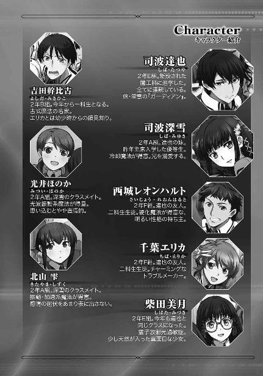

| 魔法科高校の劣等生(12) ダブルセブン編 (電撃文庫) | |
| 佐島 勤 | |
| 株式会社KADOKAWA (2016) | |

本書（電子版）に掲載されているコンテンツ（ソフトウェア／プログラム／データ／情報を含む）の著作権およびその他の権利は、すべて株式会社ＫＡＤＯＫＡＷＡおよび正当な権利を有する第三者に帰属しています。
法律の定めがある場合または権利者の明示的な承諾がある場合を除き、これらのコンテンツを複製・転載、改変・編集、翻案・翻訳、放送・出版、公衆送信（送信可能化を含む）・再配信、販売・頒布、貸与等に使用することはできません。


現代魔法の出発点となる異能が当時のＵＳＡで観測されてから今年で九十七年。魔法技能の開発から魔法師の開発へ、人間の改造へと舵が切られてから、およそ八十年。
この短い期間で、いや、実質的には更に短い、たったの五十年程度で「魔法師の名門」と呼ぶに値する高い能力を持つ魔法師を安定的に供給できる「血筋」を作り出すことができたのは、良く考えてみれば驚異的なことだ。わずか半世紀で、魔法師という「種族」の開発に成功したということなのだから。
もちろんその背景には、それを可能とするだけの科学技術資源と経済資源を注ぎ込んだ先進国間の激しい開発競争があった。前世紀後半から既に未来に対する呪詛として（先進国の）人々の意識に暗い影を落としていたエネルギー資源の枯渇。それを解決する技術として魔法が当初より期待されていたのに加えて、西暦二〇三〇年前後から顕在化した地球の寒冷化とそれに伴う食料不足。そして食料・資源争奪戦が引き金を引いた第三次世界大戦が魔法師の開発を強く後押しした。──基本的人権の尊重という社会原理を、棚上げにする程に。
二十年に及ぶ戦乱の時代以前から、世界中で半ば公然と「人間の品種改良」「人間の交配実験」が行われ、魔法師という種族の開発が競われた。魔法が遺伝するものである、という事実は魔法が超能力と呼ばれていた時期から判明していたことであり、魔法の開発が「優れた血筋」の開発へ向かうのは当然にして必然だった。
人間の品種改良に当たって、先進国ではスマートな形で人の尊厳が踏みにじられた。
人工子宮の開発は先進各国で真っ先に実行されたことだ。
後進国では素質を持つ者同士の強制交配──つまり、国家公認の強姦がまかり通っていたが、先進各国では受精前卵子の複製と、非外科手術精子採取法＝射精促進剤により採取された精子を用いた人工授精によって効率的に魔法師の開発が進められた。遺伝子操作はむしろ少数派で、遺伝子操作を伴わない「試験管ベビー」が大量に生産されたのが先進国における魔法師開発の実態だった。
幸いなことに──と言ってしまえるところが「科学技術の発展と人間性は相容れない」とそしられる所以なのだろうが──複製卵子から生まれた子供たちは、何故か一様に夭折した。彼らが自らの出自に悩むことは少なかった。この国で利用できる統計資料によれば、彼らの平均寿命は七歳。平均寿命を引き下げる最大の要因であるゼロ歳児の死亡が相次いだわけではない。本当に寿命が短かったのだ。何せ、最も長生きした者で死亡時年齢十七歳なのだから。それも急速に老化したのではなく、若いまま自然死した。オリジナルの卵子を使った調整体には一律に短命という欠陥は表れなかったから、これはおそらく生殖細胞複製技術に問題があったのだと考えられている。
しかし三歳になれば潜在的な魔法素質の計測は可能だ。彼らの犠牲によって、卵子と精子の正しい組み合わせが判明した。第二世代、第三世代が受ける影響はゲノムマップ・シミュレーションで解明可能な領域だった。後は国家がお見合いのお膳立てをして自主的に婚姻を結ぶよう仕向けるだけだ。
そうして生み出されたのが現代魔法の名門と呼ばれる家系。その代表格が、日本の十師族。
日本において「魔法師の名門」が世界で最も整理された形で成立したのは、このような婚姻関係が先進国で最も容易だったという文化的背景によるものだった。
人間性を無視した技術開発が最後に文化的要因によって左右される結果となったのは、果たして皮肉と言うべきなのか、それとも、最後に「人間性」が意地を見せたと言うべきなのか。その審判はおそらく、歴史に委ねられることになるだろう。
［０］
旧長野県との境に近い旧山梨県の、山々に囲まれた狭隘な盆地にその村はあった。名前は無い。名前が無いから地図にも載っていない。「村」と言っても行政区画としての村が置かれているわけではなく、かといって近代化以前から人々が集まり住み着いて形成された自然村でもない。ただ事実として、人の住む村があった。
名前が無い以外は、普通の村だ。名前以外のものは一通り揃っている、と言い換えても良い。役場があり、警察署があり、消防署があり、電気も水道も通っている。道はきちんと舗装されているし、学校だってある。村に一つだけの、おそらくは小中一体校だが。
二月のどんよりとした分厚い雲から降り続ける雪で、村は白く染まっていた。村人たちは家の中に閉じこもっているのか、外は静まりかえっている。人影もまばら、と言うか、一塊になって進むちょうど十人のグループ以外、通りに人の姿は無い。その唯一の例外である一団は、村の外れ、山裾を背にする学校へ向かっていた。白っぽい雪中迷彩を身に纏い、同じ色の背囊を背負い、突撃銃と呼ばれる自動小銃を肩に掛けて。
その物騒な集団の接近を、セーラー服の少女が二階の教室から見ていた。席から立ち上がり、窓際に立って武装した男たちを見下ろす。教室には彼女一人しかいない。いや、現在校舎内には、彼女しかいない。今日は休日でもなく祝日でもないし、学校の長期休暇でもない。他の生徒たちは武装グループの接近を知って避難したのだろうか。しかしそれではこの少女が教室に留まっている理由が分からない。生徒ばかりか職員も避難しているのに、中学生の少女が残っているというのは普通に考えればあり得ないことだ。
少女の視線の先で、校門まで来た男たちが肩から銃を下ろした。腰の高さで小銃を保持し、塀の内側に沿って左右に散開する。右に三人、左に三人。正面に残った四人の内、二人は前に出て銃を構え、残る二人はその後ろで背囊を下ろして中から何かを取り出している。
少女はスカートのポケットから薄く細長い機械を取り出した。彼女が手にした機械は百年前の、情報端末が音声通信メインの「ケータイ」と呼ばれていた時代に「ストレートタイプ」という名称で分類されていたコンパクトな機種によく似ている。少女はテンキーの上部にあるパワーボタンを押してスリープ状態を解除し、その小型機械に想子を流し込んだ。
少女の手にする機械は、情報端末形態のＣＡＤ。少女は、魔法師だった。
彼女が正面に見据える四人組の後列二人が、ロケットのようなものを取り付けたライフルを校舎に向けるのと同時。
少女の指がＣＡＤの上を躍り、魔法が発動した。
武装グループの二人が背囊から取り出した物はライフルグレネードだった。ずんぐりしたフォルムの、貫通力より爆発時の飛散物による殺傷効果を狙った弾頭だ。銃口を離れた擲弾は緩やかな放物線を描き、少女のいる教室目掛けて飛翔する。このタイプの擲弾とライフルの組み合わせにおける有効射程距離は二百メートル。校門から校舎までの距離はせいぜいその五分の一、スペックの上では確実に届く距離だ。だが、擲弾は少女の教室に届かなかった。
少女のたたずむ窓まで、あと十メートル。その距離で擲弾は爆発した。爆炎は透明な壁をなめるように広がり、爆風が武装集団に向かって跳ね返る。擲弾に仕込まれた金属片がしゃがみ込んだ男たちに降り注いだ。ほとんど勢いを失っていた金属片が彼らを傷つけることはなかったが、敵意と警戒心をかき立てるには十分だった。
前の二人も背囊を下ろし、銃口に擲弾を取り付ける。一発目を放った男も、次弾を装塡していた。今の現象が魔法によるものだと彼らにも分かっている。擲弾が爆発しながら窓ガラスにひびも入っていないのは、空中に形成された障壁が少なくとも熱と音と質量体を跳ね返す性質を持っているということだ。だが、魔法障壁は許容量を超えた攻撃を受けると効力を全て失う。そのことも男たちは知っていた。
四発の擲弾が一斉に発射される。特に合図を交わした様子もないのに、彼らの連携は完璧だった。一発では障壁を抜けなくても、四発が一斉に爆発すればその熱と衝撃で魔法障壁を飽和させ無効化することができるのではないか、と男たちは考えたのだ。仮に魔法の無効化に失敗しても、跳ね返ってきた破片と衝撃波が彼らを傷つけることはない。それは先程、実証済みだ。
擲弾は再び、空中で爆発した。四発分の爆炎が透明な壁をなめるように広がったのは最初と同じ。しかし、今回は爆発した位置が違った。
障壁は校舎から十メートルではなく、男たちから五メートルの位置に形成されていた。正確に言えば、彼らが引き金を引いた瞬間、五メートルの位置に作り直されていた。至近距離から跳ね返る爆風と、それに飛ばされた金属片が男たちを襲う。彼らは目を保護するゴーグルこそつけていたが、それ以外、ヘルメットの下の顔はむき出しだ。手で庇う間も無く、破片が顔を傷つける。もっとも、爆風に飛ばされ地面に叩きつけられた時には、四人とも既に意識を失っていた。
四人が地面に倒れて動かなくなったのを確認して、少女は振り向き窓際を離れた。彼女が教室のちょうど中央に到達した時、教室後方のドアが勢いよく開く。少女の指がテンキーの上を舞ったのは、条件反射に等しくなるまですり込まれた訓練の賜だった。銃を構えた男が踏み込む直前に魔法が発動する。踏み出した男の足は空中で透明な壁にぶつかり、彼はバランスを崩して蹈鞴を踏んだ。
一秒未満の時間差で教室前方の扉が開く。だが、入室できないという結果は同じだった。肩から突っ込んだ男がパントマイムよろしく透明な壁に貼り付いている横で、教室と廊下を隔てる曇りガラスが派手な音を立てて割れた。しかし、ガラスの破片は教室の中に落ちることなく、全てガラスを割った三人目に降り注いだ。少女の張った障壁はドアをふさぐだけでなく、ドアと窓、教室と廊下を隔てる全ての壁面をカバーしていた。
暴漢の侵入を防いでホッと一息ついているところで少女は気がついた。彼女が発見した武装集団は十人のグループ。その内四人が正面に残り、六人が三人ずつ左右に分かれた。正面の四人は自分たちの武器で動けなくなり、三人は彼女の魔法により廊下で足止めされている。では、残りの三人は何処にいるのか？
少女の背後でけたたましく窓ガラスが割れ散った。男たちは屋上からザイルでぶら下がり、壁を蹴って我が身を振り子の錘とし、その勢いで窓を蹴破ったのだ。少女は振り返りながら床に身を投げた。スカートが大きくめくれ上がったが、今は気にしていられない。倒れ込みながら視界の隅に捉えた男たちは飛び込みざま自動小銃を構えていた。彼女の判断が正しかったことは銃声、そして黒板の脇と一番端のロッカーに穿たれた弾痕が証明していた。
廊下側に形成していた障壁が消えた。新たな侵入者に意識を奪われ、魔法式の更新が途絶えたのだ。パントマイムをしていた男がまず転がり込む。一人が後ろのドアから、一人が窓を乗り越えて教室に飛び込んできた。今や少女は六人の武装集団に包囲されようとしていた。
普通の女子中学生ならばすくんで動けなくなるところだ。せいぜい上体を起こして身体の震えを両腕で押さえつけ、怯えを隠して男たちを気丈に睨みつけるまでが精一杯だろう。だが少女は、普通の女子中学生の範疇に収まらなかった。
少女は立ち上がり、後ろのドア目掛けて突進した。そこにも一人、銃を構えていたが、彼女はその男を完全にいない者として行動していた。銃口の正面から突っ込んでくる少女に、男はさすがに面食らったようだ。彼が反応した時、少女と男の距離は二メートルを切っていた。
小銃を使うには近すぎる距離。相手は女子中学生、格闘でも男が後れを取る恐れは皆無に近い。だが男は結局、小銃による銃撃を選択した。
他の五人の決断はもっと早かった。教室後方のドアに位置する男が小銃を構えた時には既に、他の五人の指はトリガーに掛かっていた。
五つの銃声と、遅れて轟いた一つの銃声。
次の瞬間、上がった悲鳴は六つ。
くぐもった苦鳴が男たちの口から漏れる。たとえ相手が魔法師であっても、一人の少女に対するものとしては明らかに過剰な威力の銃撃は、全てが少女の作り上げた対物反射障壁にはね返されその射手を襲った。
男たちの持つ銃は、対魔法師用のハイパワーアサルトライフル。魔法障壁を破る為に弾薬の威力を強めた徹甲弾を発射する自動小銃だ。その高い威力をそっくりそのままはね返されては、高強度カーボンプレートを縫い込んだ防弾服も役に立たなかった。弾着の威力に吹き飛ばされ、半ば意識を失いながら血を流している男たちと、その様子を少しオロオロした感じで見下ろしている少女。彼女はこれからどうすれば良いか戸惑っていた。
そこへ、スピーカーから老人の声が届けられた。
「演習を終了します。救護班はアドバーザリー隊の治療に当たってください。桜井さんはそのままお屋敷に戻ってください。奥様より直々のお言葉があります」
最後の言葉を聞いて、少女の背筋がピンと伸びた。彼女は緊張に強張った声で「分かりました」と答えた。相手に聞こえてないと、知りながら。
◇ ◇ ◇
この村は一見、何の変哲もない山村だ。村の中に平たい箱のような窓の無い鉄筋コンクリート陸屋根平屋の建物があちこちに点在しているが、これも第三次非核世界大戦当時に数多く作られた防空シェルターの地上部分として日本中に見られる建造物でこのような山奥にあってもおかしくはない。──あくまで、見掛けの上では。
しかしこの村は、見掛けどおりの山村ではなかった。ここは村全体がまるごと一つの実験場。最も秘密主義で最も悪名高い『死（四）の魔法師工場』、魔法技能師開発第四研究所。その跡地であり、今でも魔法師の改良と淘汰が行われている十師族・四葉の本拠地だった。
そしてこの村で最も大きな館が、四葉一族本家の住まい。広大な敷地の中に建てられた幾つもの家屋の中で最も大きな建物が、四葉家当主・四葉真夜の住む母屋だ。
今、その母屋の一室で、一人の少女が真夜を前にして緊張に顔を強張らせていた。
少女の名は桜井水波。中学卒業を控えた十五歳の少女で、調整体「桜」シリーズの第二世代。遺伝子操作により人工的に強力な魔法力を付与された調整体の両親から生まれた、強大な力を有する魔法師である。ちなみに彼女の両親は二人とも、もうこの世にいない。両親と死別した水波は四葉本家で住み込みのメイドとして働き、将来のガーディアンとして教育されてきた。
桜シリーズの特徴は強固な対物耐熱障壁の生成。応用力と多彩さで十文字家の「ファランクス」には及ばないが、防壁単体の性能なら水波は十五歳にして既に、十文字家のレベルに手が届く程の才能を発揮している。
「水波ちゃん、まずはご苦労様でした。十分合格点をあげられる成績よ」
「未熟なこの身にもったいないお言葉、ありがとうございます」
フレンドリーに話し掛ける真夜に対して、水波の口調は緊張でガチガチだった。それも無理のないことだ。水波の前に腰を下ろしている女性は単に彼女の主というだけでなく、日本の魔法師たちの頂点に君臨する十師族の内でも特に有力な家「四葉」の当主であり、「極東の魔王」と畏怖を込めて呼ばれる当代最強の魔法師なのだから。
「あら、謙遜することはありませんよ。葉山さんもそう思うでしょう？」
それまで身じろぎ一つせず無言で真夜の背後に控えていた葉山が、問い掛けに応えて重々しく口を開いた。
「窓からの侵入を許したのはマイナスポイントですが、結果的に十人全員を無力化したことですし及第点と申し上げてよろしいかと存じます」
葉山の言葉に水波が目を見張って驚きを示した。辛すぎる採点だと思ったのではない。屋敷の使用人全てを統括する執事長としておよそ身内を褒めることのない葉山が使用人に「及第点」などと言ったのは、水波の知る限り初めてのことだった。それが自分に対して向けられた言葉というのは、彼女にとり二重の驚きだ。
「ところで水波ちゃん」
「はい、奥様」
だが、驚いてばかりもいられなかった。ただ演習の結果を褒める為だけに四葉家当主が自分のような見習いに声を掛けるはずがないということは、改めて考えるまでもなく水波にも理解できていた。
「貴女ももうすぐ中学校卒業ですけれど、高校はどうするの？」
「......まだ決めておりません」
「そう、悩んでいるのね」
悩むも何も、進学は彼女の意思で決められることではなかった。水波は四葉に買われた身だ。彼女が「高校に行きたい」と言ってみたところで、真夜が、あるいは葉山が「その必要は無い」と判断したならそこまでなのだ。「まだ決めていない」というのは「まだ指示を受けていない」というのと同義で、水波自身は悩んでなどいなかった。
「では水波ちゃん、貴女には東京へ行ってもらいます」
その命令は三割の納得と七割の意外感を水波に与えた。水波は、自分がいずれ深雪の世話係になることを一年前から聞かされていた。だがそれはもっと先のこと、深雪を本家に迎えてからのことだと思っていた。深雪の住む東京の家は確かに普通より大きな建物だが、所詮は一般民家のレベルだ。住み込みのハウスキーパーがつくのは少しばかり不自然だし、それが中学校を卒業したばかりの子供とあってはなおさら不審を誘うのではないか、と水波は思った。
彼女の懐いた懸念に対する回答はすぐに彼女の女主人からもたらされた。
「第一高校に進学しなさい」
第一高校というのは国立魔法大学付属第一高校のことですか、という質問は、水波の心の中だけに留められた。「東京に行って第一高校に進学しろ」という命令なのだから他に解釈のしようはない。
願書はオンライン化されているから提出日を気にする必要は無いとして、問題は第一高校が最難関校の一つであるということだ。まともに受験勉強をしていない自分に合格できるのだろうか、と水波はかなり不安になった。
「試験の方は心配しなくて良いのですよ」
それはもしかして、裏口から手を回してもらえるのだろうか、と水波は正直、期待した。
「試験日まであと三週間、必要な知識は直接脳に書き込んであげるから」
しかしそれは甘すぎる考えだった。この村には確かに、洗脳装置のノウハウを利用して必要な知識を本人の意思に依らず記憶させる装置がある。だがその装置は神経を酷く消耗するのだ。受験が終わったら一週間ほど寝込む羽目になってしまうおそれがある。
「頑張りなさい。試験が終わったらしばらくお休みをあげますから。メイドの仕事も明日から免除してあげます」
水波の不安を読み取ったように、真夜が優しく、無慈悲に「逃げ道は無い」と宣告した。
「水波ちゃん」
「はい、奥様」
それまで楽しんでいるような雰囲気のあった真夜の顔が、急に真面目なものになった。水波も主人に合わせて顔を引き締める。
「深雪さんの元へお行きなさい。春から深雪さんが貴女の主です」
「かしこまりました」
それは予告されていた、彼女本来の使命。緊張の中にも確かな決意を込めて、水波は真夜の命令を受諾した。
［１］
西暦二〇九六年四月五日、木曜日。国立魔法大学付属第一高校の新年度始業式前日、入学式の三日前。
司波兄弟の自宅では、達也が全身を映す大きな鏡の前で困惑の表情を浮かべていた。
彼の隣には花のような笑みを浮かべた妹の深雪。いや、その艶やかな笑顔を前にすれば、桜の花も恥じらいの余り蕾に戻ってしまうかもしれない。そんな「魔力」を感じさせるほどの満面の笑みだ。深雪が華やか過ぎて彼女の隣にたたずむ新しい同居人、兄妹の叔母である四葉真夜の元から家政婦兼護衛見習い兼下宿人として送り込まれ、三日後には第一高校の後輩になる桜井水波の影がすっかり薄れてしまっていた。
深雪は満面の笑みの中で期待に瞳を輝かせて、姿見の前に立つ兄を見ている。鏡のすぐ横のハンガーには、昨晩達也に郵送されてきた新しい制服の上着が掛かっていた。
「お兄様、早く新しい制服をお召しになった姿をわたしに見せてください。それとも、深雪をじらしていらっしゃるのですか......？」
放っておくと深雪は今にも身悶えを始めそうだ。妹の精神的な健康の為には、自分の抱えるもやもやをいったん棚上げする必要がありそうだと達也は思った。制服のスラックスに正装用のベストは着用済み。あとは上着を羽織るだけだ。達也は観念してブレザーの襟をつかんだ。
袖を通す手助けの為に水波が達也の前へ移動しようとするのを、同時に動いた深雪が遮った。水波は特に気分を害した様子も無く、元居た場所へ引き下がる。
妹の伸ばした手に上着を預けて達也はその場でターンした。達也が袖を通した丈の長いブレザーを、深雪が兄の背中から肩へ引き上げて、シルエットを整える。
姿見へ向き直った達也の隣で、その姿を見詰めながら深雪がうっとりとした顔で頰に手を当て、熱っぽいため息をついた。
フォルムやカラーは従来の第一高校男子制服と同じ。ただ細かい部分で、今までと違う箇所が三つある。
達也の新しい制服の上着。その左胸と肩口は、八枚歯のギアを図案化したエンブレムで飾られていた。一科生の制服を飾る八枚花弁のエンブレムと同じ大きさで良く似た意匠の、新しいエンブレムが左胸のポケットと両袖の付け根に刺繡されている。
「お兄様、良くお似合いです......」
達也本人にとってはまだ戸惑いの方が多い新制服だが、深雪にとっては去年一年、胸ポケットが無地のままのブレザーを羽織る兄の制服姿を見るたびに溜め込んできた鬱憤を一気に晴らすデザインだった。
この歯車のエンブレムは、今年度から新設された魔法工学科のシンボルだ。去年一年で対内的にも対外的にも無視することなどできない派手な実績を積み上げてきた達也をこれ以上「補欠」扱いしておくことは、学校の体面にとって不利益だと判断されたのだ。その結果新設されたのが魔法工学科、通称魔工科。
もちろん、達也一人の為に学校の制度を変えることはできない。実際の経緯がどうであれ、新しく設立される課程に所属生徒が一人だけということはあり得ない。
その為、第一高校のカリキュラムに抜本的な変更が加えられた。
新入生が一科生百人、二科生百人の定員で入学してくることに変わりは無い。
変わったのは二年生に進級する際の手続きだ。新二年生には、一般魔法科と魔法工学科のコース選択が可能になった。一般魔法科を選択した生徒は従来どおり一科生四クラスと二科生三クラスに分かれて受講する。一方、魔法工学科を志望し三月の試験にパスした生徒は、新たに設けられた魔工科一クラスで魔法工学技術系に重点を置いたカリキュラムを与えられることになった。
試験的な新学科設立という名目で、第一高校は大学から新たな教師の派遣も受けている。最初は一クラスのみだが、良好な成果が認められれば将来は入学時点から一般魔法科、魔法工学科に分けて新入生を募集することも計画されていた。
また魔工科クラス設立の副次的な効果として、魔工科に移動した一科生の人数分、二科から一科への転科が認められることになった。こちらは二科生の実技成績上位者から順に選ばれることになっていて、達也の友人の中では幹比古が今年度から一科へ移ることになっている。
しかし、表面をどう取り繕おうと、魔法工学科が達也の為に設立された学科であることは、事情を知る者にとっては明らかだ。
深雪が兄の「晴れ姿」に浮かれているのも、無理のないことだった。
兄に様々なポーズをとらせて満足したのか、深雪はようやく達也に着替えることを許可した。着せ替え人形扱いされたような気がしないでもなかったが、深雪もやはり女の子だな、と思うことで達也は自分を納得させた。（ちなみに新入生である水波のファッションショーは三日前に済ませてある）
「お兄様、水波ちゃん、お茶にしましょう」
上機嫌なまま深雪は同居人に声を掛けて、今にもスキップを始めそうな足取りでキッチンへ消えていった。その後ろ姿を見て水波が哀しそうに目を伏せるのも、既にお馴染みの光景だ。若い──むしろ幼いと言った方が適切かもしれない──ながらもプロ意識をしっかり叩き込まれているのか、達也の見るところ水波は家政婦の仕事に誇りを持って臨んでいる節がある（これも結構失礼な感想だが）。その水波にとって、お茶の支度を取られるのは自分の存在意義に関わる事態なのだろう。もっとも「達也のお世話をする」ことの重要性は深雪も譲るところがなかったようで、水波がこの家に来た最初の五日間は、表面上にこやかにしながら結構熾烈な駆け引きが展開された。達也がもう少し内臓の弱い体質だったら、胃に異常を訴えていたかもしれない。幸い（？）彼の肉体は神経と内臓込みで鋼鉄の如し、だったのだが。
お互いのアイデンティティを懸けた静かな闘争の末、深雪と水波の間には曖昧な妥協が成立した。
一つ、掃除と洗濯は水波に任せる。
一つ、食事とお茶の後片付けは水波に任せる。
一つ、達也がいる時の食事の支度は深雪が行う。達也がいない時は水波が作る。
一つ、達也がいる時のお茶の支度は深雪が行う。達也がいない時は水波が準備する。
一つ、達也の身支度は深雪が手伝う。深雪の身支度は水波が手伝う。
曖昧な、と言ったのは、深雪も水波もいまだに隙あらば相手を出し抜こうとするからなのだが、達也の見る限り、今のところ二人の関係は平和で良好だった。
達也と水波の関係も、表面的に見れば良好だ。──まあ、もうすぐ十七歳の少年と現在十五歳の少女がわずか二週間ですっかり打ち解けたとすれば、そちらの方が問題かもしれない、と達也は他人事のように思った。
もっとも、達也の方に水波に対する隔意というか、距離を置きたいという気持ちがあるのも確かだった。少し垂れ目気味なところも、こげ茶色のウェービーヘアも、細く濃い眉も、笑うと両側にできるえくぼも──水波は、穂波に似すぎていた。
桜井穂波。亡き母の守護役だった女性。四年前に沖縄で達也をかばって、逝った人。
水波の母親は穂波と同じ「母親」から採取された未受精卵子に、同じ遺伝子操作を施し、同じ「父親」から採取された精子を受精させて「作られた」魔法因子強化型遺伝子調整人間──調整体。「双子」ではないが極めてそれに近い「姉妹」だ。遺伝的な姪に当たる水波の目鼻立ちが穂波に似ているのは当然とも言える。
もちろん、その程度の理屈は達也にも分かっている。しかし、そんな理解は何の解決にも慰めにもならない。達也に隔意（めいたもの）を生じさせているのは、彼女の容姿そのものではなく、彼女の容姿が引き金となって呼び起こされる故人の記憶なのだから。
桜井穂波は達也たち兄妹にとって、家族のような人だった。気が置けない、姉のような女性だった。彼女のことを思い出す時、深雪は哀しみ悼む気持ちと共に懐かしさでいっぱいになる。だが、達也の意識はそれ以上に苦い後悔で満たされる。親身になってくれた思い出さえも、達也にとっては後悔を増幅する苦瓜のようなものだった。食べられないことはないが、思わず顔を顰めそうになる、というところがまさに苦瓜だ。
──力が足りなかった──
穂波にまつわる達也の後悔は、この一言に集約される。
穂波の死因は衰弱死だが、達也が沖縄に侵攻してきた大亜連合艦隊を迎撃しようとしなかったならば、少なくともあの時に死ぬことはなかった。達也を守る為の無理な大規模魔法連続行使が穂波の命を磨り減らし燃え尽きさせてしまったのは確かな事実だ。
しかし達也は、あの時の決断それ自体を後悔してはいない。迎撃を選択したことが間違っていたとは思っていない。あの時の行動は深く考えてのものではなく、激情に駆り立てられた結果だったが、あの場面で彼が大亜連合の艦船を殲滅しなかったならば、事態は更に悪化していた可能性が高い。それは達也一人の考えではなく、防衛大の研究室で行われた戦術シミュレーションでも同じ結果が出ている。
後悔は、穂波の力を必要としたという点にあった。
現在の達也ならば、マテリアル・バーストの発動準備に手間取ったりはしない。「分解」を設置型領域魔法として放つことを覚えた今ならば、敵戦艦の艦砲射撃を撃ち落すのに穂波の力を借りる必要は無い。
あの時の自分には、それだけの力が無かった。
水波の容姿は折に触れて、達也に無力だった自分を思い出させる。
「お兄様？」
「ああ、今行く」
達也が物思いに囚われていたのは三秒にも満たない時間だ。深雪が声を掛けてきたのは時間の経過に促されたのではなく、達也に生じた微妙な雰囲気の変化に触発されたものだった。
深雪の呼び掛けに応えて、達也が移動を開始する。
その後ろに、達也が動き出すのを待っていた水波が続いた。
実質的に兄妹の二人暮らしだった家は、一人同居人が増えるだけで色々と買い足したり買い換えたりする必要のあるものが出てくる。ダイニングテーブルもその内の一つだ。従来のものよりワンサイズ大きなテーブルは、天板が耐熱高強度ガラスになっているデザイン性重視の物だった。とはいえ合板よりも余程頑丈にできていて、両手持ちの大型ハンマーでも使わない限り割れるということは無い。湿気に強く染みや汚れがつきにくい点を考えれば実用性も高いと言える。──その分、値段はお高めだが。そのダイニングテーブルの前に達也が腰を下ろすと、彼の正面に深雪、深雪の隣に水波が腰掛けた。
深雪は何故かエプロンをつけたままだ。デフォルトでエプロンをつけている水波と二人、エプロン姿の少女が向かいの席に並んで座っているシチュエーションというのも、考えてみれば奇妙なものだ、と達也は思った。
もっとも、同じエプロン姿と言っても、二人のファッションは随分趣が違う。
水波はシンプルな長袖ロング丈ハイネックのワンピース。エプロンも厚手の生地で身体の前面をほぼ覆い隠す実用性最優先のデザインだ。十九世紀ヨーロッパ風の「いかにも」なメイドスタイルではないが、それを意識しているのは明らかだった。
それに対して深雪は、まだ春先だというのに大胆なオフショルダーのミニワンピース。エプロンも細い組み紐で吊るすタイプの物で──彼女はいったい何種類エプロンを持っているのだろうか──胸元が鎖骨のラインまで露出している。膝上十センチ以上のスカートの下は、当然のように素足だ。透明度の高いガラスの天板越しにキチンと膝を揃えた両脚が太ももの結構上の方まで見えている。
もしかしてこの妹は、自分を誘惑して──からかっているのだろうか。
いや、気にしたら負けだ。
いったんそう心を定めると、本当に気にならなくなるのはありがたい。この点は母と叔母に感謝してもいい、と達也は思った。──多分、深雪は逆の意見だっただろう。
しかしお互いそんなことはおくびにも漏らさず、兄妹はそれぞれ、コーヒーのカップとお茶菓子のクッキーに手を伸ばした。
「──いよいよ明々後日が入学式ね。水波ちゃん、楽しみでしょう？」
二人だけで暮らしていた時には無かったことだが、こうして達也に思惑を外されると、深雪は水波に話を振ってしらばくれる傾向が生じていた。
「はい、深雪姉さま。楽しみです」
一方、水波の方はそんな深雪の思惑に気づいていないのか、あるいは気づいていても立場上どうすることもできないのか、素直なものだ。
「俺も深雪も当日は少し早めに登校しなければならないんだが、水波、構わないか？」
「大丈夫です、達也兄さま。私もご一緒させていただきます」
ちなみに、「深雪姉さま」「達也兄さま」という呼び方は達也が発案し深雪が命じたものだ。
現代の公共交通機関・キャビネットはその性質上、赤の他人が同乗者となることは無い。途中で乗り合わせることもできない。同じキャビネットに乗車している者同士であるなら、同じ家に住んでいるか、ごく近所に住んでいるか、少なくとも乗車駅で待ち合わせる必要がある。
一方、護衛兼務という役割上、水波には深雪と別車両で登校するという選択肢は無い。しかし赤の他人が毎朝同じ車両で登校するのは不自然であり無用に疑いの目を招いてしまう。
そこで考え出された口実が、「水波は兄妹の母方の従妹」だった。それ自体は四葉本家の指示でもあったし、兄妹の戸籍は元々噓で真っ赤に染まっている。今更血のつながらない従妹ができたくらいで思うところは無い。
問題は、「深雪さま」「達也さま」という水波の言葉遣いにあった。
今時、一つ年上の先輩に対して「～さま」という言い方をする女子高校生は、一部の例外を除いて、いない。その例外は上流階級の子女か、上流階級の家に奉公している使用人か、何らかの形で上流階級の家庭に属している女の子だ。魔法師でいえば十師族かそれに準ずる家柄で使われる言葉遣い。「～兄さま」「～姉さま」という言葉遣いも大仰だが、「～さま」よりはまだ一般的だ。
本当は深雪も達也も「深雪さん」「達也さん」と呼ばせたかったのだが、水波にきっぱり拒否された。「姉さま」「兄さま」にも水波は難色を示したが、身元を隠す必要性は彼女も理解していて、最終的に「深雪姉さま」「達也兄さま」で妥協が成立したのであった。
二人きりで暮らしていた兄妹は、思いがけず新たに迎えた同居人と、今のところ上手くやっていた。
ティータイムの話題は、自然と三日後の入学式に移っていた。
「今年の総代は男か......四年ぶりかな？」
「五年ぶりですよ、お兄様。七草先輩の前の会長も女の方でしたから」
兄弟の間で話題になっているのは今年の新入生総代、即ち今年の主席入学生のこと。二人が言っているように、第一高校で男子生徒が総代を務めるのは久しぶりだった。
「七草先輩の妹さんたちが入学してくるのだし、今年も女子だと思っていたんだがな」
「そうですね......それに入試で本気が出せていれば、総代は水波ちゃんだったでしょうけど」
「いえ、滅相もないです......」
軽くからかい混じりの深雪の言葉に、水波は硬い表情で小さく首を振った。彼女が目立ちすぎないよう本家の命令で魔法力をセーブしていたのは事実だし、もし本気で試験を受けていたなら主席の可能性は十分にあったと達也も思っていたが、どうやら水波はこういう話を軽く流せる質ではないようだ。
気まずい空気が漂い始める前に、達也は話題を戻すことにした。
「名前は七宝琢磨、だったかな。七宝というのは、あの『七宝』なんだろう？」
深雪も別に、水波を困らせたかったわけではない。彼女は兄の意図にすぐ従った。
「はい、十八家『七宝』の長男ですね」
達也が頭に思い浮かべた有力魔法師の家系図から、深雪が記憶の中の生徒会の調査ファイルから引き出した情報は、一致した結論を示した。
「七草と七宝が同級生になるとはな。すごい偶然と言おうか根の深い因縁と言おうか......厄介ごとを起こさなければいいが」
悪い予感でも覚えたのか、達也は軽く、眉を顰めた。
「少しは騒ぎを起こしてくれた方が、カモフラージュになっていいと思いますが？」
「それは確かにそうだけどね」
深雪が言っているのは、七宝の長男が七草の双子と諍いを起こせば学校の注目はそちらに集まって、兄妹と水波の関係を詮索する人間はいなくなるか、少なくとも減るだろう、ということだ。
理屈の上では正しい指摘だが、その騒ぎを誰が収めるのか、を考え出すと頭が痛くなってくる達也だった。
「ところで、今晩のホームパーティーだが」
カップもソーサーも空になって、そろそろテーブルを片付けようか、と立ち上がりかけた水波を手振りで制して、達也がいきなり話題を変えた。
「やはり、水波も出席すべきだと思う」
達也と深雪は今晩、北山家（つまり、雫の家）のホームパーティーに招かれている。水波は留守番、ではなく、北山邸までついてきて使用人用の控え室で待っていることになっていたが、その予定を変更すべきだ、と達也は言っているのだった。
「ご命令でしたらそのように致します」
水波の返事は、使用人としては穏当なものだった。ただ、殊更に乏しい表情が「本当は気乗りしない」と語っている。水波の感情表現が控えめな少女だが決して無表情ではない為、故意に大袈裟な表情を作って見せたりする真由美やエリカのような少女よりむしろ感情が読み取りやすかった。──もちろんそれは、達也の観察力があってのことだが。
無理強いは達也の趣味ではない。嫌がることを命じて悦に入るような性癖は皆無だ。「命令だから従う」という回答は彼にとって本来不本意なものであり、こういう言い方をされると逆に「やっぱりいいよ」と言いたくなるのだが、先の発言は思いつきで口にしたものではない。
「そうか。ご苦労だが付き合ってくれ」
母方の従妹、という噓を補強する為の演出に必要だと考えた上でのことだから、多少気に入らない答えを返されたからといって引っ込めるわけには行かないのだった。
「では早速ドレスを選びましょう。わたしが水波ちゃんを手伝います。余り時間もありませんので」
深雪が手を打ち合わせるような仕草で雰囲気を明るく変えるようにそう言ったのも、表には出てこない兄の心情を慮ってのことかもしれない。
決して、水波の激しく動揺した顔を見たかったわけではない、はずだった。
［２］
いくら名目が「ホームパーティー」とはいえ、経済界の大立て者・北方潮──「北方潮」というのは雫の父親が使うビジネスネームである──が催すパーティーだ。会場はかなりの盛況だった。
もっとも、混み合っているという印象はない。確かに集まっている人数も多いのだが、
「さすがに広いな......」
と、達也が素直に嘆息する程度には、会場となった北山邸は大きかったのである。
ただ、彼の感想は同行者の共感を得られるものではなかった。深雪は兄の言葉に愛想笑いを浮かべて相槌を打つのみ。その隣で水波は、今にも小首を傾げそうな表情を浮かべている。このあたり、軍や研究所で「庶民」と交わる機会の多い達也と、四葉の跡取り（候補）として育てられた深雪と、使用人とはいえ幼少の頃から四葉本家で育った水波と──達也と妹たちの間には育ちに培われた感覚の差があるようだ。
今日のパーティーの名目は、ＵＳＮＡへの短期留学を終えた雫の帰国祝い兼進級祝い。帰国してから二週間、何故こんなに日数が空いたかというと、各方面へのあいさつ回りに忙殺されていたからである。
雫は国立魔法大学付属第一高校の優等生、優秀な魔法師の雛鳥という顔とは別に、大実業家のご令嬢、という顔も持っている。世間的にはむしろ、社長令嬢としての立場を優先しなければならない。将来の魔法師としての立場は（極論すれば）彼女一人のものだが、社長令嬢としての立場には家族と従業員と株主と取引先に対する責任が付随しているのだから。
そういう事情で、身内の（？）パーティーは新学期前日に押しやられたのだった。
北山家の家族構成は父母、祖母、雫、弟の五人。しかし、雫の父親には弟および姉妹が五人もいて（富豪と呼ばれるレベルの富裕層では、この程度の大家族はそれほど珍しくない）、しかも雫の父親が晩婚だった所為で従兄弟はほとんどが雫より年上、半数以上が既婚者で各々家族同伴、未婚者もフィアンセや近日中に婚約予定のお相手を連れて来たりしていて、内輪のパーティーでありながらこのような大人数に膨れ上がったというわけだ。......という話を、達也は雫の母親から聞いている最中だった。
「潮くんのお家は前世紀から続く実業家の家系だから。蔑ろにできないしがらみも多いのよ」
夫人の話に対して控えめな相槌を打ちながら、達也は心の中で、何度目かのため息をついた。どういう意図か何が気に入られたのか、達也は雫にあいさつするのもそこそこに、北山夫人、かつて振動系魔法で名を馳せたＡランク魔法師・北山紅音、旧姓鳴瀬紅音に捕獲されて、ずっと話し相手を務めさせられていた。ちなみに、深雪と水波は雫とほのかの許へ逃がしてある。
「だからといって内輪のパーティーに赤の他人を連れ込む厚かましさには好意的になれないのだけど。ビジネスが絡まなければ、潮くんも身内に甘いからねぇ」
それにしても、と達也は思う。──雫の母親は、結構な毒舌家であるらしい。
もちろん、普段からところかまわず毒舌を吐いていては、いくら社長夫人といえど実社会ではやっていけないだろうから（虚業の世界なら話は別だ）時と場所と相手を選んでいるのだろうが、その相手に何故、事実上初対面の自分が選ばれたのか、いくら首を捻っても頭を振っても達也には理解できなかった。
達也が紅音と顔を合わせるのはこれが初めてではない。雫がアメリカで手に入れた様々な情報を伝える為にと、深雪共々招待された日にあいさつだけは済ませている。しかし本当にあいさつだけだ。このような本音トークの相手に選ばれる覚えは断じて無かった。
（しかし、「潮くん」ねぇ......良いのか、この人たちの社会的地位でその呼び方は？）
いい加減、紅音の愚痴に辟易していた達也は、現実逃避気味に心の中でそんなツッコミを入れていた。
達也は雫の父親の年齢も母親の年齢も知っている。雫の父親は言うまでもなく、母親の方も現役時代は結構な有名人だったのでパーソナルデータの収集に苦労は無い（と言っても、個人情報が厳重にガードされている現代では、普通の人間には無理な真似だが）。夫を「くん」付けで呼んでいるが、北山夫人は姉さん女房というわけではない。若作りな潮と年相応の落ち着いた外見の紅音は、見た目だけならそれほど年が離れていないように見えるが、実際には潮の方が紅音より九歳も年上だったはずだ。
（愛されている、のだろうな）
友人の両親に対し「甘やかしている」とか「甘やかされている」とか言葉にするのは、思考の中だけであっても憚られた。
一通り不満を吐き出して満足したのか、紅音の眼差しから険が取れた。もっともその代わり、値踏みするような視線が向けられることになった。親戚が連れてきた「赤の他人」の客に対して、ではなく、達也に対して。
平気な顔をしているが、居心地の悪さを覚える点については達也も余人と変わるところがない。早々に深雪たちと合流したいところだったが、紅音にそれを許容するつもりはないようだ。
「ところで」
達也が「それでは」と切り出すより早く、紅音に口火を切られてしまう。同級生の母親に対する遠慮があったとはいえ、達也にしてみれば痛恨の失態だった。──と言うほど深刻な話ではないのだが、そのくらい居心地が悪かったのだ。
もっとも紅音にとってはこれからが本番だったから、達也が逃げ出そうとしても何やかやの理由をつけて引き留められていただろう。
「ほのかちゃんの片思いの君というのは貴方なのかしら？」
不意打ちではあったが、達也はすぐに背景を理解した。後知恵でしかないが、予測していて然るべき口撃だった。
「名称はともかく、そのような者ではあります」
ただ「片思いの君」というのは、「そうです」と頷くには少なからず抵抗のある名称だった。つまらない拘りかもしれないが、達也にとっては譲れない自己主張である。
「慌てないのね。頼もしいわ」
だがそういうズレたところも、紅音にとっては加点ポイントだったらしい。あるいは、誤魔化そうとしなかったところが高得点だったのだろうか。達也に向けられる紅音の笑顔が、形式的・儀礼的なものから急に友好的なものとなった。
「でも何でオーケーしなかったの？」
友好的と言っても、愛玩的な意味合いなのかもしれないが。
「貴方の妹さんほどじゃないけど、ほのかちゃん、可愛いじゃない？」
ハムスターホイールの中を懸命に疾走する小動物を眺めて楽しむ嗜好に近いだろうか。初手を上手く凌いだ達也が、空回りし始めるのを期待しているような目つきだった。
「可愛いと思いますよ。容姿だけでなく、性格も」
達也の投げやりな態度は大部分、見せ掛けのものだ。彼はその何処を見ているのか分かりにくい目つきの陰で、紅音がいったい何を目論んでこんなことを訊いてくるのか、わずかな表情の変化も見落とすまいと注意深く観察していた。
「あらあら......でもそれだと、ますます分からないわ。顔も身体も性格も花丸なのに、告白を断っちゃうなんて」
達也には、ほのかの身体がどうとか言った覚えはなかった。だがこれは、言葉の綾というやつだろう。何と言ってスルーしようか、と達也は考えたのだが、その必要は無かった。
それより先に、紅音が爆弾を投下した。
「それに、ほのかちゃんは役に立つわよ。忠実に仕えてくれるわ」
それはまさしく、爆弾発言と呼ぶべきものだった。娘の同級生をからかうにしては不適当に重すぎる一言だった。魔法師が魔法師に向ける言葉としては、不穏当で不謹慎なものだった。
普通の魔法科高校生には紅音が何を言っているのか分からなかっただろう。
もし彼女のセリフの意味を理解できて、十六、七歳の少年として当たり前の感性を持っていたなら、不快感を隠し切れなかっただろう。
だが達也は、紅音の顔を無表情に見返しただけだった。
紅音が笑顔を崩さなかったのは、さすがに大実業家の奥方と言うべきだろうか。
「......なるほど、知っていてそんな顔ができるのね、君は」
ただ、多少声が固くなるのは避けられなかったようだ。
「知らないふりをするつもりはありません」
達也の声も、決して友好的とは言えない。どんな意図があったにせよ、今の紅音の発言は口にすべきでない類のものだ。親しい友人の母親とはいえ、愛想よく対応する必要を達也は認めなかった。
「そう......エレメンツの力も利用価値も分かっていて、受け容れず突き放さずの態度をとっているのね」
ほのかの血筋──エレメンツ。ほのかは四系統八種の現代魔法が確立する前に、伝統的な魔法を再現しようと開発されたプロトタイプ魔法師の末裔。その血は高い権力を有する者にとって大きな利用価値を持つ。それを達也は知っていた。紅音は、それを指摘している。
紅音の顔から愛想笑いが消えた。固かった声が、硬く冷たい声に変化した。
「もしかして、計算尽くなのかしら？」
何を、とも、何が、とも紅音は言わなかったが、相手の謂わんとしているところを達也は正確に把握していたし、そこに非難と誹謗がこめられているのも理解していた。
「ほのかを利用しているつもりはありませんが」
だからといって、達也は畏れ入ったりしなかったし、自分へ向けられた中傷に対しむきになって反論したりもしなかった。
「でも、吸血鬼退治にはつき合わせているでしょう」
紅音はもしかしたら、とぼけられた、と感じたのかもしれない。彼女の声には、苛立ちが混ざり始めていた。
「仲間外れにする理由もありませんから」
紅音の変化を達也はキチンと認識していた。好意を見逃すことはあっても、敵意を見落とすことは無い。彼はそういう風に作り上げられた人間だ。そして、どんなに強い敵意や悪意に曝されても動じないように訓練されている。
いくら揺さぶっても逆上する気配の無い達也に、紅音は話の方向性を変えた。
「......ほのかちゃんは雫にとって姉妹みたいな子よ。私たち夫婦はあの子のことを、娘同然に思っているわ。それに、雫も君の事を気に入っている。雫の君に対する信頼は、単なる友人に対するものの域を超えている」
だから何が言いたいのだ、という目で達也が紅音の顔を見返す。
達也の中から、「雫の母親だから」という遠慮は既に消え失せていた。
「だから、君の事を調べさせてもらったわ。司波達也君」
挑発的な眼差しを、紅音が達也に向けた。
「愉快なことではありませんが、理解できます」
達也はそれを鷹揚な光をたたえた眼で受け止めた。
「君、何者なの？ 北山の......『企業連合』の情報網を使ってもパーソナルデータが出て来ないなんて」
「何かの間違いだと思いますが。そもそもＰＤが無ければ高校にも入学できません」
達也の回答は道理だった。だが、紅音には屁理屈にしか思えなかった。
「大人をなめない方がいいわよ。確かに君のＰＤは、最低限必要なものが揃ってる。適度に余分な情報と適度にネガティブな評価が混ざっていて、キレイ過ぎるということもない。あの子から君の事を聞いていなかったら、私も特に疑問は覚えなかったでしょうね」
「何か不審な点があるのですか？」
反問する達也の口調は、機械のように無機質だった。彼の態度は、紅音が確実な情報に基づく根拠を持っていないと見透かしているようにも見えた。
「いいえ、何も。だからおかしいのよ」
思いつめた目で自分を睨みつける雫の母親を、達也は無言で見返していた。何とも言いようが無い、というのが彼の偽らざる内心だった。せいぜい「娘と違って熱い気性なんだな」と逃避気味に考えるくらいだ。
「あの子から話を聞いた限りでも、君は異才、いえ、鬼才と呼ぶべき才能と能力を持っている。こうして差し向かいで話をしてみて『普通じゃない』という印象は強くなっていく一方よ。君のＰＤが、あんなに『普通』であるはずがないわ」
紅音の言い分は、事実であっても、憶測でしかない。憶測を唯々諾々と受け容れる必要を、達也は認めなかった。
「ＰＤはあくまでデータです。本人そのものではありません」
パーソナルデータは、他人に自分を識別させる仮面だ。その仮面が素顔と似ても似つかないものであったとしても「似ても似つかない」という事実が暴かれない限り、仮面は自分の顔であり続ける。
「......印象が違うのは当然だ、って言いたいわけ？」
「自分が何者なのか。氏名や経歴を訊かれているのでしたら、ＰＤに登録されているとおりです。印象について訊かれているのでしたら、見てのとおりです。それ以上に、自分で語ることのできるものはありません」
これはある意味で、達也の本音だった。──自分は何者なのか。現存する最大威力の核兵器を上回る大規模破壊の力をふるい、おそらくは世界を滅ぼすことも可能な自分はいったい、「何」なのか。それはしばしば、彼の意識に浮かび上がる自答不能な自問だった。
しかし紅音は、そうは受け取らなかった。
「とぼけるつもり......!?」
声量こそ抑えているが、彼女の口調は大分荒っぽいものになっていた。
上流階級の人間は、一部の例外を除き、自分と同格以上の相手が見せる感情の動きを鋭敏に感じ取る傾向にある。パーティーの主催者夫人が客と言い争っている姿は、参会者の注目を引き始めていた。
「紅音、少し落ち着きなさい」
身内のパーティとはいえ集まっているのは完全な身内ばかりではない。このような姿を見られることが好ましいはずは無かった。北山潮が慌てて仲裁に入ったのも当然の流れだ。
紅音は自分がエキサイトしていることに気づいていなかったようで、夫にたしなめられてハッとした顔で口をつぐんだ。
「司波君、妻が失礼したね」
「いえ、自分の方こそ、色々と生意気なことを申し上げました。何分未熟な若輩者の申すこと故、ご容赦いただければ幸いです」
潮に頭を下げられて、達也も丁寧に謝罪を返した。言ってることは随分人を食ったセリフだったが。
幸いにして達也の他人事のような言い分を、潮は気に留めなかった。新たな緊張を呼ぶことなく、汐が引くように、達也と紅音へ向けられていた視線が逸れていく。
「よろしければ、いったん御前を失礼させていただきたいのですが」
いいきっかけだ、と思ったのだろう。達也が紅音ではなく潮へ向けてそう言うと、
「ああ、そうだね。娘も君と話したいだろうし」
潮も、紅音はクールダウンの時間が必要だ、と考えたのだろう。達也が一礼して雫たちのいる方へ足を向けると、潮も紅音の背中を押して壁際の椅子へ移動を開始した。
「達也さん、ゴメンなさい」
大声を張り上げなくても声が届く距離になると、達也が口を開くより先に雫がペコリと頭を下げた。
顔を上げた雫は、乏しい表情の中に身の置き所が無い羞恥をのぞかせている。自分のパーティーに招いた同級生に、自分の母親が因縁をつけた（と雫には見えた）のだから、雫でなくてもこれはかなり恥ずかしいに違いない。
「いや、お母さんの気持ちも分かる。娘に得体の知れない男が近づいているとあれば、心配になるのは当然だろう。俺は気にしてないから、雫も気にするな」
「......うん、ゴメンなさい」
雫があれこれ反論しなかったのは、切り替えが早いのではなく（もちろんそれも皆無ではないが）寡黙な性質が本人の意思に反して作用したからだった。もっと色々と謝罪したいのに、ほんの一言しか返せない。その思いが羞恥心と相乗して、気まずげな表情を作り出していた。
達也は、自分の右手が雫の頭を撫でようとしているのに、危ういところで気づいた。自分の責任で無いのに、気にしすぎて落ち込んでいる顔が深雪の時折見せる表情にダブって、反射的に「頭を撫でる」という対応をしそうになったのだ。
気を許しすぎだ、という苦笑いを胸の裡だけにとどめて、達也は「この件はこれで終わり」という風に軽く笑って首を振った。
雫、ほのか、水波、そして、深雪。華やかなドレス姿の少女四人の輪の中に、地味なスーツ姿の少年一人。普通なら居心地の悪い思いをするところだが、達也にそういう神経は無い。ほのかが気を遣って水波に話し掛け、雫が行き過ぎないように時々ブレーキをかけ、深雪のアシストを受けて水波が控えめに受け答えする、というパターンで進む会話を聞き役に徹して見守っていた達也は、不意に背後から掛けられた声に振り返った。
「あの、司波達也さんですよね」
どうやらその少年は、自分の言葉が達也に聞こえなかったと思ったようだ。繰り返された質問に、達也は肯定を返した。
まだ中学校に上がっていないであろう、小柄で幼い少年の名を、達也は問う必要がなかった。
「航」
少年の名は雫の口から語られ、
「姉さん。ゴメン、邪魔だった？」
少年の素性は本人の口から明かされた。
「ううん。でも、ちゃんとごあいさつして」
言葉数の少ない雫の言い方は突っ慳貪に聞こえるが、年の離れた弟を見る彼女の目は優しい。
航少年も心得たもので、精一杯真面目な顔を取り繕うと──いかにも「背伸びしています」というその表情は、実に微笑ましい姿だった──姉に言われたとおり折り目正しく一礼した。
「はじめまして、北山航です。今年、小学六年生になります」
航は達也の方に身体ごと顔を向けて自己紹介をした。ほのかとは既に親しいと言える関係だったから、初対面のあいさつをする時にそちらを向かないのは当然と言える。しかし、深雪の方を見ようとしないのは──どうやら、（舞い）上がってしまわないように、ということらしい。達也に続いて深雪があいさつを返している最中、微妙に視線を外し奥歯をかみ締め全身に力を込めていたことから見て、間違いないだろう。
嫌がられているわけでも無視されているわけでもないのは明らかだったので、深雪は航の態度に微笑ましさしか感じなかった。しかし、「主」に向けられた礼を失する応対に、水波は不快感を禁じ得なかったようだ。
「お目にかかり、光栄に存じます、航様。桜井水波と申します。達也兄さま、深雪姉さまの従妹に当たります。よろしくお見知りおきくださいませ」
水波の振る舞いは申し分なく丁寧だったが、そこには営業スマイル的な空々しさが見え隠れしていた。慇懃無礼、とまでは行かないまでも、慇懃な虚礼、の感は否めない。
漂いかけた気まずい空気の解消に動いたのは、ほのかだった。
「航くん、達也さんに何かご用があったんじゃないの？」
ただそれは、無理やりな話題転換ではなかった。航は先ほど達也に対して、確かに何か訊きたいことがあるような素振りを見せていた。
「あっ、はい」
航の意識の焦点がすぐにほのかへ移ったのは、空気を読んだのではなく子供らしさの表れだと思われる。
「司波さん」
ここには「司波さん」が二人いるのだが、航の話し掛けている相手がどちらか分からない者はいなかったし、あえて話の腰を折る者も──水波を含めて──いなかった。
「一つ、教えて欲しいことがあるんですが」
緊張を露わにしながら、何とか嚙まずにそう言った航に、
「良いよ。答えられることなら」
達也は気安い口調で応じた。
「ええと、その、魔工技師は魔法が使えなくても成れるんでしょうか」
質問自体はおかしなものではないが、北山家の跡取り息子が口にするには奇妙な問い掛けだった。現に、雫とほのかは揃って「えっ？」という顔をしている。
「無理だな。魔工技師は魔法技能を持つ魔法工学の技術者のことだ。魔法が使えない技術者を魔工師とは呼ばない」
しかし達也は戸惑いも見せず、回答に間を取ったりもしなかった。
「そうですか......」
誤解の余地がない達也の即答に、航はガックリと肩を落とした。だが、気を落とすのはまだ、早計過ぎた。
「もっとも、魔工師ばかりが魔法工学技術者ではないんだけどね」
「えっ？」
顔を上げた航を見下ろす、達也の落ち着いた笑み。
航は期待感に目を輝かせて、次の言葉を待っている。
「魔法が使えなくても魔法工学を学ぶことは可能だ」
達也はわざともったいぶるような、性格の悪い真似はしなかった。彼は「悪い人」であっても「人が悪い」わけではない。──あくまで、自称だが。
「ＣＡＤの調整は魔法的な感覚がなければ難しいが、魔法が使えなくてもＣＡＤを作ることはできる。他の魔法技術組込製品も同じだ。君が本気で勉強すれば、お姉さんの役に立つ知識と技術を身につけられるはずだ」
「あ、いえ、僕はそんなつもりでは......」
口でいくら否定しても、そんな恥ずかしそうな顔をしていては本心が丸分かりだった。
そして、達也に向けられる目も、見知らぬ大人（小学生から見れば高校生は大人だ）に対する警戒と畏怖の眼差しから、尊敬と憧れの入り混じった眼差しに変わっていた。
大人たちは残念ながら、子供のように無邪気な態度は取れなかった。
達也にすっかり懐いている姉弟を遠目に見ながら、紅音は無性にため息をつきたい気分になっていた。
「いったいどうしたんだい、紅音」
潮が心配そうに声を掛けても、紅音はため息を堪えているような顔をするばかりで答えを返さない。視線も呼び掛けられた直後に夫の方を向いただけで、すぐに談笑している子供たちへと戻された。
「紅音は司波達也君の何処が気に入らないのかね？」
北山潮は愛妻家ではあっても尻に敷かれてはいない。いや、ある部分は恐妻家と言うべきかもしれないが、言いたいことを言い合えないという関係ではなかった。
「......潮くんは彼のことを随分買っているようね」
紅音はようやく、夫の顔へまともに目を向けた。
「中々見所の有る若者だと思っているよ。何より優秀だ」
潮の答えは率直で、裏を返して言えば遠慮の無いものだった。
紅音は反射的に感情的な反発を覚えたが、ヒステリックに言い返したりはしなかった。
「......優秀すぎるのよ」
ただ、感情を無理やり押し殺していることがうかがわれる声色で、平静には程遠い精神状態であることが分かる。
「それに、知りすぎているし、分かりすぎている。私の知ってる十師族の直系だって、ここまで油断がならないという感じじゃなかった」
紅音の口から遂にため息が漏れた。彼女が懐いた懸念はため息無しでは語れないものだった。
「魔法師にとって優秀すぎるというのは、幸せなことじゃないわ。むしろ、幸せを遠ざけてしまう元にもなる。幸い雫は優秀の範疇にとどまっているけど、優秀すぎる魔法師の近くにいたら、大きすぎる力が招き寄せる不幸に巻き込まれてしまうかもしれない」
妻の言葉を「考えすぎ」と笑い飛ばすことは、潮にはできなかった。
笑い飛ばす代わりに、潮は妻の肩に手を置いた。
「もし紅音の言うとおり司波達也君が不幸を招き寄せたとしても、それは彼の責任ではないだろう？ 彼自身に責任がない不確定な未来を理由にして、彼を忌避するような真似は感心しないな。彼がその力ゆえに不幸を招き寄せ、雫が巻き込まれるようなことがあるとすれば、私たちがその不幸を取り除いてやればいいだけだ。私は伊達に『大実業家』などと呼ばれてはいないよ。家族のことくらい、護って見せるさ」
潮の強気な言葉に、紅音は頷き、反論しなかった。
だが、本当に納得したようにも、見えなかった。
大きすぎる力の故かどうか、それは定かでないものの、確かに達也はトラブルを招き寄せる傾向、あるいは体質の持ち主だ。今も雫の弟を交えて談笑している達也の許へ、トラブルの種が忍び寄っていた。
「雫ちゃん、久し振り」
馴れ馴れしく話し掛けてきたのは、二十代半ばと見える青年だった。軽薄な印象だが身なりは悪くない。少なくとも安っぽくはなかった。雫が軽く会釈を返しただけだったので、相手の名前は分からなかったが、それなりに顔見知りな雰囲気からして雫の従兄の一人に違いない。
だが雫は、同時に航も、その青年の隣に寄り添う若い女性の容姿を認めると、今度は訝しむ顔になった。見た限りでは青年と同年代。ルックスもスタイルも非凡ではあったが、ドレスもアクセサリーもＴＰＯを弁えたもので彼女の外見に奇抜な印象を与える要素は無かった。雫と航が浮かべた訝しげな表情は、その美女が少なくとも二人の知る親族ではないということを示していた。
「あっ、オレさ、年内に結婚するんだよ。彼女と」
雫、航の視線を受けて、青年が少し慌て気味に説明する。
「婚約されたんですか？ おめでとうございます」
「ああ、いや、エンゲージリングはまだ受け取ってもらってないんだけどさ」
雫が儀礼的に祝辞を述べると、青年が少しばつ悪げに頭をかいた。
その姿を「北山家の縁者にしては随分平凡な感じの青年だな」と思いながら達也が見ていると、青年の隣で存在感を誇示している美女が達也の視線に気づいてニコリと笑みを投げかけてきた。
今度は達也が怪訝な顔をする番だった。すぐに達也の変化に気づいた深雪が「何事ですか？」と問い掛けるような眼差しを兄へ向ける。そのままだと深雪が達也の視線をたどって、兄が誰を見ているのか気づいて柳眉を逆立てることになっただろうが、そうなる前に美女の方から達也へ、ではなく今日の主役の雫へ話し掛けてきた。
「はじめまして、雫さん。小和村真紀と申します。よろしくお見知りおきください」
その短い自己紹介は、自分をアピールすることに慣れていない控えめな性格、というよりも、自分からアピールしなくても相手が自分のことを知っていて当然と思っているが故のものであるように達也には感じられた。
彼の推理を裏付けるように、雫、航に続いて自己紹介を返したほのかが、少し浮ついた声で真紀に問い掛けた。
「あの、小和村さんって、女優の小和村真紀さんですか？ 『真夏の流氷』でパン・パシフィック・シネマ賞の主演女優部門にノミネートされた」
「あら、あの映画を観てくださったの？」
ほのかの問い掛けに、小和村真紀は上品な笑みを浮かべたまま答えた。──少し、得意げな色が混ざってはいたが。
「やっぱり！ あの作品は映画館で拝見しました。とても素敵でした！」
「フフッ、ありがとうございます」
達也は映画をほとんど見ないが、『真夏の流氷』というタイトルだけは知っていた。去年の夏、随分話題になっていた記憶がある。ほのかの態度を見ても、面白い作品だったようだ。少なくとも現在の主流となっているビデオオンデマンドではなく、映画館へ足を運ぼうという気にさせるくらいには。
国際的な映画賞にノミネートされたという話でもあるし、この女性はきっと有名な女優なのだろう、と達也は考えた。そこまで考えて、「彼女」に対する達也の興味は尽きた。元々芸能界に興味は無いし、マスコミの注目を集める有名芸能人と知り合いになるのは彼の立場としてマイナス面が多い。すっかり興奮しているほのかには悪いが、早く他の客のところへ行ってくれないだろうか、と達也は考えていた。
しかしあいにくと、事態は彼の望まぬ方向へ進んで行った。
「もし違っていたらごめんなさい」
語尾がやや上がり気味の疑問調のセリフで、真紀の方から、少し後ろに引いていた達也と深雪に話し掛けてきたのだ。
「司波深雪さんと司波達也君ではありません？」
達也も深雪も、狼狽を面に表すほど初心ではない。だが、程度の差はあれ内心に意外感を覚えていた。
「そうですが、失礼ながら以前お目にかかったことが？」
一歩前に出て深雪の出足をふさぐことで妹が改めて自己紹介しようとしたのを制して、達也が真紀の正面に立ち、こう問い掛けた。
真紀の答えは、達也の記憶と食い違うものではなかった。
「いいえ、お目にかかるのは初めてです」
それでは何故、という達也の無言の問い掛けに、真紀はあっさりとタネを明かした。
「彼に九校戦の中継を見せてもらったんです。雫さんが出ているから、ということで」
彼、というのは言うまでもなく、つい今し方まで隣にいた婚約予定者のことだ。
「とても絵になるお二人だなと思っていたんですよ」
真紀が自分のパートナーと話をしている雫に聞こえないよう声をひそめたのは、深雪を褒めることで間接的に雫を貶していると邪推されたくなかったからだろう、と達也は考えることにした。声をひそめた分、顔と顔の距離を近づけてきたのは、もしかしたら別の意図があったのかもしれないが、それに応じる義理は達也には無かった。
「そうですか？ 妹はともかく、私の方はそれほど絵になるとも思えませんが」
達也が一人称を「私」としているのは場所と相手を考えてのことだ。雫の両親と対していた時以上に、達也の真紀に対する態度は余所余所しいものだった。
深雪が礼節の仮面の下で沈黙を守っているのも、兄と同じ理由によるものだ。兄妹は真紀に対して、直感的に胡散臭さを感じていた。
「ご謙遜ね。お二人に華があるというのは、私だけの意見ではありませんよ？ 私のお友達もみんな、同じ意見でした」
そう言って真紀は俳優や映画監督の名前を何人も並べたが、あいにく達也はその内の一人も知らなかった。
「そうだ！ 来週のご予定は？ よろしければ、私たちのサロンにご招待したいわ」
艶やかな笑顔で、真紀が達也を誘う。無邪気な表情で無垢な雰囲気を演出しつつ、絡めとるような色気を忍び込ませてくるあたり、若手大物女優の名に恥じぬ芸達者ぶりだ。
正直に言えば達也は興味を覚えた。一見、魔法とは縁の無さそうな芸能人が自分に何を求めているのか、それが彼の気に掛かった。容姿に惹かれた、などという戯言は端から信じていない。小和村真紀の目に宿る光は、そんな軽薄なものではなかった。
「せっかくですが、ご遠慮します」
だが、達也の回答は拒絶だった。口調は丁寧なものだが、声にこめられた意思は誤解の余地も翻意の余地も無いものだった。
「そうですか」
一瞬、怒りに似た波動が真紀の瞳から放たれたが、すぐにその影も留めぬあたりはさすがと言えよう。
「では、妹さん......深雪さんだけでもいかがですか？」
今度は深雪に向かって、おっとりと微笑みかける。女を強く匂わせる笑顔と、女くささを感じさせない笑みを使い分ける真紀の演技力は、本物かもしれない。
「兄がご遠慮申し上げておりますのに、わたしだけお邪魔するわけには参りません」
それに対する深雪の返事は、即答の「辞退」だった。
余りにも取り付く島の無い回答に、真紀が呆気にとられた表情を浮かべている。彼女が自分のペースを失っている間に、達也は小さく、深雪は優雅に一礼して食べ物の置かれたテーブルへ歩み去った。
達也たちの様子を目立たぬように窺っていた水波が、その背中に続く。水波がチラリと振り返ると、厳しい目つきで達也の背中を見送っていた真紀が、慌てて目を逸らした。
たまたま向けられたその視線を勘違いしたのか、雫と話をしていた（自称）婚約者が隣に戻って来る。真紀はその彼を余裕のある笑みで迎えた。真紀の笑顔に腹立ちや動揺の痕跡は一切残っていなかった。
［３］
都心に建つ高層マンションの前で、クラシックな見掛けの電気自走車──一九七〇年代後半から一九八〇年代にかけて国内で流行した「スーパーカー」のレプリカ──が止まった。
「ここでいいわ。送ってくれてありがとう」
ガルウィングのドアを開けて地面すれすれの低い車体から舗道に足をつけた真紀は、映画のワンカットのような颯爽とした動作で立ち上がると、ボンネットを回り込んで運転席──と言っても実際は座っているだけの自動運転だ──をのぞき込みそう告げた。
恋人、つまり雫の従兄は物足りなそうな表情を浮かべた。だが真紀が更に身をかがめ、唇を恋人の頰に触れさせてにっこり笑うと、青年はあっさりと車を発進させた。
走り去るクラシック・レプリカへ軽く手を振りながら見送っていた真紀だったが、エレカーが交差点を曲がり見えなくなった途端、笑顔を消してしらけた表情を浮かべた。笑顔一つで計算どおりに操れる「恋人」のことをため息で意識から追い出して、真紀はマンションのエレベーターホールへ向かった。
横浜ベイヒルズタワーのように特殊な超高層建築を除けば、この二十一世紀末の日本に高さ百メートルを超えるビルは少ない。特に居住用マンションでは希だ。これは超高層ビルを孤立的に一棟建てるより、高層マンションを林立させる方が国土利用効率の観点から優れているという思想によるもので、真紀の部屋も高さ八十メートル・二十階建てのマンションが等間隔で立ち並ぶ「高級マンション街」の一室だ。彼女の部屋は二十階の角部屋。鏡と光ファイバーの組み合わせで低層階の採光も十分確保されているとはいえ、入居者はやはり上の階を好む。必然的に最上階は値段も最高だ。この都心の立地で高級マンションの最上階に部屋を持つのは、いくら有名女優といえまだ若手に属する彼女のキャリアではパトロンでも付いていない限り難しいはずだった。──彼女が単なる一女優であるならば。
「ご苦労さま」
真紀は主の帰宅を知って廊下に立っていた二人の女性ボディガードに声を掛けた。未だ芸能界の慣習として生き残っている「付き人」ではない。真紀の所属するプロダクションから派遣された雑用係兼務の見習いではなく、彼女の父親が選んだ護衛だ。
真紀の父親はテレビ局を含む複数のメディア企業を傘下に持つ持株会社の社長。北山家ほどではないが、小和村家もかなりの財力を有する上流階級の一員なのである。
自宅に帰ってきた真紀は真っ先にシャワーを浴び、リラックスドレスにガウンという自分の家か、さもなくばそういう撮影の現場でしか着ないようなラフな格好でソファに腰を沈めた。肘掛け側面のパネルを操作しＨＡＲ（Home Automation Robot）にワインのボトルとグラスを用意させる。真紀は栓を抜いてあるボトルを手に取りグラスに赤ワインを注いだ。
グラスに口をつけるのではなく、顔に近づけて香りを楽しむ。別にアルコールが欲しいわけではない。これは仕事から帰った真紀が、張り詰めた神経を弛緩させる為に行う一種の儀式だ。そういう意味では香りを楽しむというより雰囲気に浸ると言った方が正確かもしれない。
それでも全く飲まないというわけでもなく、グラスに半分だけ注いだワインがその半分になった時、リビングのドアを開けてボディガードが入って来た。
「お嬢様、七宝様がお見えです」
「琢磨が？ ......そういえばそろそろ約束の時間ね。少し早いけど、構わないから通しなさい」
ある意味人目を憚るその格好にも関わらず、来客をリビングに通すようボディガードに命じた真紀の表情に躊躇いは見られない。
「かしこまりました」
ボディガードが背中を向けても、慌ててメイクを始めたりもしない。
彼女は女優だ。たとえ素顔に下着姿であっても「他人に見られる自分」を演じることができる。リラックスドレス＋ガウンは、初心な少年を迎えるのに十分な武装だった。
ボディガードに案内されてきた少年は、「勝手知ったる」という感じで真紀の向かい側に遠慮なく腰を下ろした。身長は百七十センチ台半ば。少年らしい肉付きの薄い身体に、整ってはいるが年相応の子供らしさが残る顔つき。少し生意気そうな印象があるのは瞳に宿る強い自己主張の光によるものだろう。
「こんばんは、真紀」
口調も振る舞いも「大人っぽさ」を過剰に意識しているきらいがあった。
「いらっしゃい、琢磨。時間どおりね」
琢磨のそんな背伸びに、真紀はさり気なく付き合って見せる。もっとも、それで琢磨が今更機嫌を良くするような付き合いではなかった。この二人の関係は、もう一年近く続いている。
「何か飲む？」
「いや、止めておく。アルコールは思考力を鈍らせるからね」
真紀の勧めに、琢磨は首を振った。──真紀に「お酒を出す」という意図はなかったのだが、彼女はそれを口にしなかった。
「それより話を聞かせてくれないか。その為に俺を呼んだんだろう？」
「そうね。本題に入りましょうか」
真紀の趣味からすれば琢磨のこの態度は性急すぎるものだったが、彼女は一回り近く歳が下の少年相手に自分のスタイルを押し通そうとはしなかった。真紀にとって琢磨は年下の恋人でもツバメでもない。
「北山雫とコンタクトはとれた。でも、今のところ顔と名前を覚えてもらっただけね」
「......芸能人には興味無しか」
「でも、彼女の友人の光井ほのかには随分と関心を持ってもらえたのよ」
失望を隠せず呟く琢磨に、女優、いや、スターの余裕で真紀は笑みを見せた。
「そうか」
琢磨は（現金にも）態度を一転させて真紀の方へ身を乗り出した。
「光井ほのかも新二年生トップクラスの優等生だ。味方にできればきっと役に立つな」
「そうでしょうね。それに親友である光井ほのかが琢磨の派閥に入ったら、北山雫も取り込める可能性が高くなると思うわ」
真紀と琢磨の関係、それは「同盟者」だ。二人はそれぞれの理由で魔法師の味方を、──手駒を欲していた。その一環として一高内で魔法師として将来有望な生徒で派閥を結成しようと目論んでいるのだった。
「はじめは同じ新入生の間で仲間を増やしていく方が良いと思うけど」
「俺たちの目的はお互いの世界で新秩序を勝ち取ることであって、派閥を作ること自体が目的じゃないんだ。学校の中で御山の大将を競っても意味が無い。北山家のように大きな影響力を持つ者を味方につけることを優先的に考えるべきだ。真紀もそう思ったからこそ、北山家の縁者であるあのつまらない男に接触したんだろう？」
真紀のセリフを途中で奪い取った琢磨が、威圧的な眼差しで真紀を見据えた。
「光井ほのかを最初のターゲットにしよう。無論、協力してくれるよな？」
稚気と言うべき琢磨の気負いを、真紀は笑顔で受け止めた。
「ええ、そのつもり。......でも琢磨、貴方はちゃんと『光井先輩』って呼んだ方が良いと思うわ。普段から気をつけてないと思いがけない所で呼び捨てにしちゃうわよ」
途端に琢磨は気まずげな顔で目を泳がせる。
真紀はワインで唇を湿らせると、少し物憂げな表情を浮かべた。もちろん、演技だ。
「真紀、何かまずいことがあったのか？」
その顔を見て琢磨が眉を顰める。彼の質問は真紀の注文どおりのものだった。
「まずいこと......そうね」
もちろん、そんなことはおくびにも出さない。あくまで「ついつい顔に出ていた」「訊かれたから答えた」という芝居を真紀は演じている。
「前もって聞いていたとおり、パーティーには司波深雪と彼女のお兄さんも来ていたんだけど」
琢磨がその芝居に気づいた様子はない。演技を見抜く力が無いのか、それとも最初から真紀の心の裡になど興味が無いのか、彼女の話に意識を集中している。
「あの兄妹を引き込むのは難しそうね」
「何かあったのか？」
「いいえ、話をしただけ......でも、あの二人はどうやら、前の生徒会長と特別な関係にあるみたい」
この段階で既に真紀は噓をついている。そんなことを聴き出す間も無く、真紀は達也と深雪から袖にされたのだから。しかし琢磨に、それを知る由は無い。
「前生徒会長......七草か！」
噓を見破る冷静な思考力も、真紀のセリフと琢磨自身の言葉によって昂った敵意を主とする感情に蓋をされてしまっていた。
「これは推測なのだけど、司波兄妹は七草家に取り込まれているのではないかしら。もし七草家の仲間になっていたとしたら厄介よね。特に妹の方は校内に支持者が多いから」
琢磨は瞳に敵愾心を燃やして、強い──強がっているようにも聞こえる口調で答えた。
「味方が多ければ敵だって多いのが世の中だ。七草の手先なら遅かれ早かれ衝突は避けられない。やってやるさ！」
「妹は生徒会副会長だから、生徒会を足場にするのは止めた方が良いと思うわ」
興奮のあまり立ち上がった琢磨を、真紀が頼もしげに見上げた。彼女の瞳に期待の光が躍っている。
「私が聞いた話によると、妹さんは重度のブラコンで、お兄さんは結構嫌われているみたい。その辺りが攻略のポイントになるんじゃないかしら」
真紀は激励を込めて──いるように聞こえる声で──琢磨にそうアドバイスした。
［４］
東京、大阪、名古屋は、二十一世紀末の現在においても日本の三大都市に数えられている。大阪は一時期地盤沈下が激しかったが、空港使用料の無料化といち早い港湾の二十四時間化を中心とする思い切った物流コストの引き下げにより商都としての地位を回復させた。
しかし、今宵事件が起ころうとしているのは大阪ではなく名古屋である。
時刻はもうすぐ二十三時。場所は堀川のほとり、熱田公園の遊歩道。
「それにしてもこんな時間にこんな人気の無い場所で密会しようだなんて、怪しんでくださいと言っているみたいなものね」
こんな時間にこんな場所──遊歩道の脇に生い茂る木の陰──にいる自分のことを棚に上げて小声でそう話し掛けたのは、過激なビジュアルを売り物にする系統のロックコンサート帰りのような派手な格好をした長い巻き毛の十五、六歳の少女だった。
「こんな時間にこんな場所でそんな不審者一歩手前の格好をした姉さんに言われたくないと思うんだけど」
応えた声は女の子にしては低く、男の子にしては高い。声を聞いただけではその子が少女なのか少年なのか分からなかったかもしれない。しかし着ている物は黒いミニ丈のジャンパースカートに同色のレギンスという明らかな女物だ。ちなみにジャンパースカートの下は黒いタートルネックの長袖シャツで肌が露出しているのは顔と手だけだが、胸も確かに小さく膨らんでいる。髪型もあごの線で切り揃えたストレートショートボブ。外見的には間違いなく少女だった。最初の少女と同年代に見えるが「姉さん」という呼びかけからして年の近い妹か、あるいは双子の姉妹なのかも知れない。
「分かってないわねぇ、ヤミちゃんは」
姉に「ヤミちゃん」と呼ばれて少女は一瞬嫌そうに顔を顰めたが、特に文句はつけなかった。
「こんな格好だから、こんな時間に出歩いていても『ああ、不良少女か』で済まされるんじゃない」
その主張は確かにある種の説得力があるものでヤミはグッと言葉に詰まった。だが今晩彼女たちに与えられた仕事はそれなりにアクションが予想されるもので、動きやすい服装は基本条件だ。今姉が着ているような、あちこちに引っかかりやすい服は不適当なはずである。それなのに、動きやすさ優先の──ある事情からスカートは避けられなかったが──衣装を選んだ自分のコーディネートを「分かっていない」と言われるのは、ヤミとしては釈然としなかった。
何でも良いから反論したい、そう思って少女は言葉を探していたが、片方の耳にはめたレシーバーから告げられた報告に、無駄な思考作業を中断した。
「姉さん、ターゲットが来たみたいだ」
「私も確認したよ。船で来るとは予想外。しかも屋形船なんて。こんなに目立っちゃって......隠す気無いのかしら」
一方、姉の方は左目につけた大きく分厚い眼帯がどうやらＨＭＤになっているようで、眼帯の表面をしきりと撫で回しながら右目を閉じたり開いたりしている。着けている本人にとっても使い心地はあまり良くないようだ。「だったら使わなきゃいいのに」と心の中で考えながら、ヤミはもっと建設的──と思えたことを口にした。
「隠す気はあんまり無いんだと思うよ。誰かに見られても、ジャーナリストに情報を提供していた、で済むから」
「ジャーナリストねぇ......」
胡散臭い、と言いたげな姉のセリフに、ヤミは大袈裟にならない範囲でわざとらしく肩をすくめて見せた。
「ヨル姉さんのマスコミ不信論はまた今度ね」
「ヤミちゃん......あなた、生意気になったわねぇ」
無駄話はおしまい、という少女の意思表示は伊達ではなかったようだ。姉の嫌みに見向きもせず、接岸しようとする遊覧船に目を向けた。船室が外から見えない屋形船タイプの船だ。ゴンドラ乗り場にもなっている小さな桟橋につけた船から大柄な男が二人、降りてきた。
二人の男性を出迎えたのは、中肉中背の中年の男だった。見た目は貧相な印象だが、少女たちは誤魔化されなかった。一回り大きなサイズのスーツで隠しているが、相当実戦的に鍛えられた身体付きをしている。そしてその身体からにじみ出る硝煙の臭い。
「あれが記者？ どう見たって傭兵なんだけど」
「実際、傭兵の経験もあるみたいだね。さっきデータが送られてきていたはずだけど」
妹から「見てないの？」という目を向けられて、ヨルはさっと顔を逸らした。記者の姿はさっきから確認できていた。本人は隠れているつもりだったようだが、こちらが盗み撮りしていることにも気づいた様子はない。その映像データからプロフィールも判明していた。
「元々反体制的な傾向が強い記者、ってことだよ」
「ふぅん、ジャーナリストの鑑ってわけね」
「姉さんの偏見は後でゆっくり聞いてあげるから」
「偏見って......ヤミちゃん、本当に生意気ね」
「いいから行くよ。まずは船からだ。姉さん、よろしく」
素っ気なくいなされて姉は大層不満顔だったが、若くても彼女は私情で仕事を疎かにするような素人ではない。
「はいはい」
軽い口調で応えながら、ヨルの顔は真剣だ。彼女は左手前腕部を覆う革のアクセサリーを外した。その下から現れたのは、ブレスレットタイプの汎用型ＣＡＤ。ヨルはテンキーから少し離して配置されているファンクションボタンを押して起動式を呼び出した。
「じゃあ、飛ばすわよ」
ヨルが妹の背後に回った。木と木の隙間から見える屋形船をしっかり見据える。
そして、ヤミの身体が消えた。
次の瞬間、ヤミは屋形船の舳先に立っていた。
疑似瞬間移動。それがヨルの使った魔法の名だ。物体（人体を含む）の慣性を消し、その周りに空気の繭を作り、それより一回り太い真空のチューブを作って、その中を移動する魔法。加重・収束・収束・移動の四工程からなる魔法で、それほど複雑な術式ではない。だが真空のチューブを作る工程でその周りの空気を押しのける気流が発生してしまい移動先を事前に察知されてしまうという欠点がある。何度も連続して飛ぶだけの技量があれば移動速度で相手を幻惑することもできるが、基本的に攻撃にはむかない、逃走用の術式だとされている。
だがヨルの発動した疑似瞬間移動は、川面に細波さえ作らなかった。真空チューブを作る際に押しのけられる空気の流れまでもコントロールしているのであろう。この一見チャラチャラした少女の魔法技能が極めてハイレベルにある証拠だ。
姉の力により獲物のただ中に飛び込んだヤミは、軽やかに甲板を蹴り船室へ飛び込んだ。そこにいたのは五人の男。元傭兵の記者と同様、揃って鍛え上げられた身体をしていたが、例の記者と違って荒くれた雰囲気はない。むしろ酷く一途で純粋な光を目に宿している。
「誰だ!?」
誰何する声が何となくぎこちない。咄嗟に出掛かった母国語を日本語で言い直したような感じだった。まあ日系人は北米にも欧州にも南米にもいるのだし、外見が日本人と区別がつかない東アジア系はそれ以上に数が多い。正体の詮索は捕まえてからでいい、とヤミは思った。
照明の下で見ると、ヤミは実に可憐な顔立ちをしていた。バランス良く配置されたアーモンド型の目に大きな瞳、形のいい紅い唇、真っ直ぐに通った控え目な鼻。そんな少女が深夜男ばかりの船室にいきなり飛び込んで来たのだ。男たちが戸惑うのも無理はない。だがヤミの方に、男たちが立ち直るまで傍観している義理は無かった。
ヤミが右手を突き出す。男たちはその時初めて、この少女が右手にマットブラックのナックルダスターをはめていることに気がついた。
ヤミのこの行為は、男たちをますます戸惑わせるものだった。ナックルダスターは拳打の威力を増す為の武器。手が届かなければ意味は無い。もしかして何かのロールプレイなのか、と四人の男たちは思った。
「おい、どうした!?」
突如、仲間の一人が前のめりに倒れて、男たちはようやく冗談では済まない事態が発生していることに気がついた。一人が倒れた男の傍らに膝をついてその身体を揺する。彼は自分が英語で喋っていたことに気づいていないだろう。他の三人にも、そのことを注意する余裕は無かった。
倒れた男が気を失っていることを確かめる前に、今度はしゃがみ込んだ男が鈍器で殴りつけられたような苦鳴を上げて倒れた。ヤミの右手は二人目の犠牲者へ向いている。
「魔法師か!?」
ここに至り、男たちは仲間の昏倒とヤミの右手に関連性を見出だした。少女が右手を向け、仲間が倒れる。少女と彼らの間には手が届かないだけの距離があり、少女の手から何かが飛んだ形跡は無い。彼らに考えられる残された可能性は、魔法による攻撃だけだ。
問い掛けた男も答えが返ってくることは期待していなかっただろう。彼は反射的に叫んだだけだ。
ヤミの右手がその男へ向かって突き出され、男は前の二人と同じように床へ崩れ落ちた。
「化け物め！」
憎々しげな叫びと共に銃口が二つヤミへ向けられる。叫び声程度なら事前に張った遮音フィールドで吸収できるが、銃声を遮断できるかどうかはヤミにも自信が無かった。本当に自分たちのことを隠す気が無いのか、彼らが抜き出した銃にはサプレッサーがつけられていない。
それに、撃たれるまで待ってやる理由もヤミには無かった。
親指でナックルダスターの端についているボタンを押す。このＣＡＤは掌に握っている棒の部分が本体で拳を覆う部分は単なる飾りだ。単一の術式に特化されたＣＡＤがヤミの持つ固有の魔法を紡ぎ出す起動式を展開する。
人の感覚に、直接痛みを与える魔法。腹部を杭打ちハンマーで殴られたに等しい痛みを覚えて、男たちの意識はあっさりブラックアウトした。
船内を短時間で制圧したヤミは、桟橋の三人もあっさり無力化した。ウエストポーチから取り出した通信機でサポート要員と連絡を取っているヤミの元へ、スカートの三段フリルを揺らしながらヨルが歩み寄った。もしかして鬱陶しくなったのか、左目の眼帯は外している。こうして素顔が露わになると、姉の方が女の子らしい顔立ちで、ヤミの方は可憐ながらも声と同様中性的な印象があった。
「ヤミちゃん、彼らの素性は分かったの？」
「人相照合ですぐに調べがついたよ。船のヤツらはＵＳＮＡで活動している人間主義団体のメンバーだった。持って帰って詳しく調べればバックにいるのが誰か分かるんじゃないかな」
「記者の方は？」
「持ってた端末に魔法師嫌いで有名な野党議員との通信記録が残ってた。お粗末な話だよね」
「そう......何だか拍子抜けね」
「うん。これなら僕たちが出て来る必要も無かったと思うな」
気の抜けた笑いを浮かべる姉に、妹は結構本気で愚痴を漏らした。
「こら、ヤミちゃん」
しかしその言葉は、姉にたしなめられた。
「『僕』じゃないでしょう？」
といっても、仕事の内容を愚痴ったことに対してではなかったが。
「うっ......いいじゃない、『僕』くらい」
「確かに自分のことを『僕』っていう女の子がいないわけじゃないけど、やっぱり少数派なのよ。人と違うことをして目立つのは良くないわ」
ヤミの喉元には「それを姉さんが言う？」というフレーズが待機していたが、姉の指摘には間違いなく一理あったので、ツッコミのセリフは腹の中に吞み込んだ。
しかし、ヤミの葛藤はぞろぞろと集団で現れた黒服により無意味なものとなった。
「若、移送の準備が整いました」
どう見ても堅気とは思えない黒服の一人がヤミに「若」と話し掛けたのだ。
「馬鹿野郎！ 『若』じゃなくて『お嬢様』だろうが！ 若が恥を忍んで女装されているのを台無しにする気か！」
その黒服の頭をリーダーらしき男が張り飛ばす。
「若、じゃなかった、お嬢様。申し訳ありません」
「お前が......」
「はっ？」
「お前が一番、台無しにしてるんだよ！」
わなわな震えている美少女、その実、女装少年が、小さな声で怒鳴りつけるという器用な真似を見せた。
「それにこれは『女装』じゃない。『変装』だ！」
「はっ、はい、お見事な変装です。我々から見ても、とても文弥様とは思えません」
「お前は何をばらしているんだ！」
「ヤミ、落ち着きなさい」
段々声を抑えきれなくなってきたヤミ、こと黒羽文弥を、ヨル、こと黒羽亜夜子がたしなめる。ちなみに「ヤミ」とは「フミヤ」の最後の二文字をひっくり返した偽名で、「ヨル」は「亜夜子」の「夜」からとった偽名だ。
「貴方たちも気を抜きすぎですよ。このような有様では、ご当主様よりどのようなお叱りを受けることか」
黒服たちの顔がサッと青ざめ、文弥の頭も一瞬で冷却される。「ご当主様」に対する畏れはそれほど強く彼らの心にすり込まれていた。
「長居は無用です。撤収しますよ」
「ハッ」
黒服たちは統率の取れた動きで、袋詰めにした記者と外国人を抱え上げて走り去っていく。
「ゴメン、姉さん」
その後に残された文弥が、ヤミの顔のままで、決まり悪げに頭を下げた。
「まあ、仕方ないわね。貴方の気持ちを考えれば」
「......そう言ってくれると嬉しいよ」
姉の慰めに、文弥ががっくりと肩を落とした。
「もうしばらくの辛抱よ。本格的に二次性徴を迎えれば女装なんてできなくなるんだし、そうなったら面倒でも別の変装を考えなければならないのだから」
「うん......そうだね......」
もう高校生になるというのに少しも女装が似合わなくなる気配がない、という現実をあえて見ないようにして、文弥は自分を励ますように頷いた。
◇ ◇ ◇
表向き人気中華料理店の青年オーナーである周公瑾には、他にもいくつかの顔がある。
比較的知られている顔は、大亜連合の圧政から逃れて日本に漂着する亡命希望者を第三国へ送り出す亡命ブローカーとしてのもの。単なる亡命の手助けに留まらず、亡命先で反大亜連合活動を行う資金の提供も行っている。
それとバランスを取るように、大亜連合のスパイのような役目も担っている。正確に言えばスパイの現地協力者か。昨年十月の横浜事変では大亜連合軍工作部隊を手引きした。
年明けに起こった吸血鬼事件においても、パラサイト密入国の手配で周は中心的な役割を果たしている。
日本と大亜連合、敵対する両勢力に対して利益と不利益をもたらす彼の一見無節操な暗躍には、もちろん理由がある。政府は弱い方がいいという彼自身の政治思想も無論影響していたが、それ以上に周はある人物の手足となって日本及び大亜連合の国力毀損と反魔法師の工作を行っていたのである。
深更の中華街。周公瑾は自分の店の地下に設けられた、彼以外足を踏み入れることのない部屋で跪いていた。彼が頭を垂れている相手は、金糸銀糸をふんだんに使った漢服を着せられ椅子に腰掛けている等身大の人形。人の死体を素材として、内臓を取り去り防腐処置を施し脳をそのままソーサリー・ブースターに加工した呪法具だ。人形の背後に置かれた業務用冷蔵庫程もある巨大な通信装置の筐体から伸びたケーブルが、後頭部から頭蓋に潜り込んでいる。
「大師」
青年の呼び掛けに、呪法具の死体人形が瞼を開いた。眼球が取り去られた空ろな眼窩に鬼火が点る。
『公瑾、首尾はどうだ』
人形からおどろおどろしい声が発せられた。肺が動いていないのに声が出るのは大陸の古式魔法、僵尸術によるものだ。ＣＡＤにも使われている想子信号を電気信号に変換する技術を応用して、死体を傍受不能な通信機にしているのである。
「アメリカから呼び寄せた人間主義者は残念ながら記者と一緒に拘束されてしまいました」
『善良な証言者を仕立て上げる策は失敗か』
その生理的な嫌悪を催す声と裏腹に、死体が紡ぎ出す言葉や口調は現代的で日常的だ。死体の口を借りているのが死霊などではなく生きた人間だという間接的な証拠だった。
「大師ヘイグ」
周が恭しく一礼する。死体人形に視力は無いが、雰囲気は伝わるのだろう。少なくとも周の態度はおざなりなものではなかった。
「あの者たちの役割はあくまで補助的なもの。大手マスコミに対する工作は順調に進んでおります」
『進捗率はどの程度だ』
「映像媒体の四十パーセント、文字媒体では三十パーセント程かと」
『映像媒体に対する工作率が五十パーセントに達したところで一気に仕掛けろ。票を気にする政治家が動かずにいられなくなるように』
「仰せのままに」
周が深々と頭を下げている先で、人形が満足げな気配を発した。
空の眼窩に点っていた鬼火が消える。
青年が顔を上げた時、人形は既に瞼を閉ざしていた。
周は立ち上がり、人形に背を向けないよう後退りで地下室から退出する。後ろ手で開けたドアを部屋の外から閉めて人形が視界から消えた瞬間、青年はホッと息をついた。大陸系古式魔法・遁甲術の使い手であっても僵尸術に縁の無い周にとって、死体との会話は何度経験しても気持ちのよくないものだった。
（まあ......大漢の怨霊には相応しい器かもしれませんね）
心の中で呟いた首領に対する侮蔑の独白は、彼の妖艶な笑顔に染み一つ落とさなかった。
［５］
西暦二〇九六年四月六日、新年度の初日。達也と深雪は水波を自宅に残して登校した。久しぶりに、という修飾詞が付かないのは、春休み中も生徒会の打ち合わせでたびたび登校していたからだ。
兄妹二人きりの登下校は今日と明日の二日で終わる。それを意識してのことか、駅から学校までの短い通学路で深雪はいつもよりもっと、達也に密着していた。遠くから見れば、いや、近づいて見なければ腕を組んで歩いていると錯覚してしまう至近距離だ。
元々人数が多いとはいえない魔法科高校生徒内で、この兄妹はすっかり有名人となっていた。二人が兄と妹の関係だということを知らない生徒は今やほとんどいない。肉親同士で、まるで恋人同士のような姿を見せている不道徳に眉を顰めている「常識人」も一人や二人ではなかった。さすがに声に出して咎め立てする猛者（あるいは無粋な人間）はいなかったが、呆れたような目を向けてくる者は少なくなかった。
もっとも、そんなものを──遠巻きに見ているだけの視線を──気に病む深雪ではなかった。面と向かって声を上げることもできない相手は、彼女にとって有象無象でしかない。ただでさえ視線を集めることが多い、と言うか、見られていない時間の方がむしろ短いくらいだ。深雪にとって他人の視線は、いちいち気にしていてはきりがないものだった。
一方で達也は、妹のように「他人の視線を気にしない」というわけにはいかない。
彼は深雪の護衛役だ。妹をあらゆる害意から護る。それは彼に課せられた義務であると同時に、他者に譲れない権利でもある。深雪に向けられた悪意を、達也は見過ごしにできない。
それは、さほど困難なことではなかった。何故なら、取るに足らない悪意の視線は達也自身に向けられるものであり、深雪に向けられるものではないからだ。
深雪に否定的な目を向けるのは難しい。例えば、深雪に対して嫉妬を懐くことはできても、嫉妬を向けることは困難だ。容姿も才能も余りに眩しすぎて、嫉妬を向けるのが畏れ多いような気持ちになってしまう。気後れを覚えて、気後れしている自分に対する嫌悪の泥沼にはまってしまうことになる。深雪に害意を向ける為には、確固たる、強い意志が必要だ。
だから達也がそれに気づいたのは、決して偶然ではなかった。
強い意志を伴う、明確な敵意でもないかわりに、好意的でもない視線。深雪に向けられる眼差しとしては珍しい種類のものだった。しかもそれが異性の、少年のものとあれば尚更だ。
その少年の容姿に、達也は見覚えがあった。直接会ったことは無いが、立体映像付きの身上書を見たことがある。彼より一つ年下の、今年の新入生総代──
（──あれは確か、七宝家の長男）
無意識に眉を顰めてしまいそうになったが、達也は意識して表情の変化を差し止めた。過敏な反応を見られて警戒されたくなかったからだが、達也がチラッと目を向けたのに気づいたのか、琢磨は顔を背けて店と店の狭間の路地に姿を消した。
「お兄様？」
深雪が訝しげに声を掛けたのはその直後。兄の意識の欠片が自分から逸れたのを、鋭敏に感じ取ったのだ。彼女は有象無象の視線を無視できても、達也の眼差しは無視できない。
達也は深雪に向かって「何でもないよ」と首を振り、背後からかけられた「オハヨ～」というあいさつに振り返って手を挙げた。
エリカに続いてレオ、ほのか、雫、美月、幹比古が次々と合流してきた。下校時に一緒になるのは珍しくないが、登校時に皆が顔を揃えるのは久しぶりだった。特に雫と登下校を共にするのは留学前の昨年末以来だ。
ようやく以前のメンバーに戻ったわけだが、顔ぶれは同じでも身につけている制服のデザインが、先月まで、即ち一年生の時とは違っている者がいた。
達也の胸には、八枚歯のギアを意匠化したエンブレム。
同じデザインの刺繡が、美月のブレザーにもついている。
そして、幹比古の左胸には、八枚花弁をかたどった一高の校章。
「幹比古、一科生の制服の着心地はどうだ？」
「からかわないでよ、達也」
ニヤリと笑って人の悪い祝辞を送った達也に、苦笑いしながらも満更でもなさそうな顔で幹比古が応える。幹比古が一科に転籍することは先月から分かっていたが、新しい制服姿を見るのはお互いに初めてだったのだ。
「達也の方こそ、真新しいブレザーの着心地はどうだい？」
「新しいといっても今のところ看板だけだからな」
幹比古のセリフは、魔法工学科が新設学科であることを含めてのもの。それを受けた達也のセリフは、まだ名前だけで独自の授業がスタートしていないことを示している。まあ、独自の授業も何も、魔法工学科は今日からスタートを切るのだが。それにしても開始当日まで教員の顔ぶれも明かされないというのは、如何にも準備不足の感が否めない。看板が変わっただけというセリフも冗談ではあるが、根拠の無いことではなかった。
「何だよ、醒めてんなぁ」
だが達也の冷静な、というよりどうでもよさそうな態度は、友人たちの期待に背くものだったようだ。達也がクラス分けで大喜びするような性格とは思っていなくても、少しくらい浮かれている姿を思い描いていたのだろう。
「ホ～ント。美月なんか頰が緩みっぱなしだっていうのに」
レオに続いて、エリカが不平を鳴らした。彼女がつまらなさそうに横目で睨んだ相手は達也だったが、視線の矢は彼を素通りしてその向こう側に突き刺さった。
「ゆ......緩んでなんかないよ！」
美月がむきになって抗議する。彼女としては二科生のままの友人たち（つまり、エリカとレオ）に気を遣っていたつもりなのだ。だが、美月の顔はエリカの指摘どおり、嬉しさを隠し切れない表情に彩られていた。
「無理しなくっていいのに」
そしてエリカの浮かべている人の悪い笑みを見る限り、美月の気配りは無用な気遣いに違いなかった。
魔法工学科の教室は本校舎三階の中央階段横にあった。クラスはＥ組。つまり、達也と美月にとっては先月まで通っていた教室の真上ということになる。
ちなみにエリカとレオは同じＦ組。校内無線で通知された所属ＨＲの情報を交換してその事実を知った時、二人は盛大に嫌そうな顔をして見せていた。その態度が本心なのか、あるいは照れ隠しなのか......それは本人にしか分からないことだし、少なくとも達也にとっては割とどうでも良いことだった。美月とほのかはかなり興味深そうにしていたが。
達也が教室に入った時、席は約半数が埋まっていた。五×五列は去年の教室と同じで、五十音順による座席指定も一年生の時と同じ。ただ男女別になっておらず前から横に並べてアイウエオ、というのは何か特別な意味があるのか、それとも単なる気まぐれなのか。
無意味な詮索を一秒未満で打ち切り、達也は自分の席へ向かった。廊下側一列目、前から二番目。隣の席は昨年度に引き続いて美月。五十音順で「シバ」と「シバタ」だから意外でも不思議でもない。
「美月は今年も達也くんのお隣かぁ。あたしもクラス替えを志望すれば良かったかな」
あながち冗談とも聞こえない口調でぼやいたのは、いっぱいに開けた窓のレールに両肘をついたエリカだ。
「必要ないだろ。隣のクラスなんだし」
そのエリカと窓枠の間に身体をねじ込むようにして顔をのぞかせているレオが、セリフと裏腹に残念そうな口調でそう続けた。
「そうだな。クラスが別でも不都合はない」
一年前なら間違いなく憎まれ口の応酬になっていた場面だが、レオに売り言葉はなくエリカにも買い言葉はなかった。その変化が達也には少し可笑しかったが、そんな素振りは露程も見せず彼はレオの（表面上の）言葉を首肯した。
「他のクラスは立入り禁止、というわけでもないからな」
「授業を別のクラスで受けるというだけですものね」
美月が達也のセリフにすぐさま同調して見せたのは、多分にエリカを牽制する意図が有ってのことと思われる。もっとも、奔放に見えてエリカが授業をエスケープしたことはほとんど無い。授業時間中に教室を抜け出した回数なら、達也の方が遥かに多い。
「それもそうね」
エリカの方でも非難される覚えがないからだろう。彼女は美月の言葉にあっさり頷いた。
「それにしても......見覚えない顔が結構いるね」
思考を切り替えたエリカが、教室の中を見回しながらそう呟いた。表向き社交的なエリカは、同学年の二科生一〇〇人の顔と名前をほとんど記憶している。つまり、彼女が言う「見覚えのない顔」は元一科生ということだ。
「ああ、そう言やぁ......少しばかり意外に感じるぜ」
教室内の生徒は始業時間に向けて順調に増加し、今では三分の二の席が埋まっている。その顔ぶれを改めて確認し、エリカと違って本当に社交的なレオが言葉どおりに意外感の込められた声で同意を示した。
二人は──いや、エリカのセリフにピンと来なかった美月も含めた三人は、魔法工学科新設に当たり転科希望者はほとんど二科生だろう、と予想していた。プライドの高い一科生が二科生と机を並べる選択をするとは思えなかったのだ。
達也にとって一科生の転科は意外でも何でもなかったが、エリカたちがそう考える訳も十分理解できるので特にコメントは挿まなかった。
「ところでさぁ」
エリカもこの話題に拘らなかった。というのも、もっと気になることがあったからだ。
「達也くん、随分睨まれてるね」
達也は軽く肩をすくめて見せることでエリカのセリフを肯定した。彼女に指摘されるまでもなく、自分を憎々しげに見詰める視線に達也は気づいていた。それが誰の視線であるのかも把握している。何故そんな目で見られるのか、理由が分からなければ気に掛かるかもしれない。だが、憎まれていることも憎まれている理由も判明している。見られているだけで実害は無いから達也は放置の方針だったが、エリカにとっては見過ごしにできないことだったようだ。不快げな声が彼女の心の裡を表している。
「あれだけ方々に迷惑掛けといて、まだ自分の八つ当たりだって分かってないのかしら」
「八つ当たりだと分かっていても、そうそう気持ちを切り替えられるものではないんだろう」
「そうそうって......あれからもう半年だよ」
「半年でも、だ」
エリカにそう答えて、達也は斜め後ろ、視線の発生源へチラリと目を向けた。憎悪を込めて彼を睨んでいた平河千秋が慌てて目を逸らす。その直後、弱気を見せた自分に腹が立ったのか、いっそう険しい目つきで達也を睨め付ける。
そんな千秋の態度が、エリカの神経をますます逆撫でした。元々エリカは、騙されてテロ組織の仲間になっていた紗耶香が事件の後で潔い反省の姿勢を見せていたのに対して、お門違いの恨みを晴らす為に相手が外国のスパイと知りながらその手先となり、今でもその矛先を向けた達也に詫び一つ入れようとしない千秋の態度に腹を据えかねている。粘性の低い気質なので自分から突っ掛かって行ったりはしないが、きっかけがあれば達也に変わって喧嘩を買う、どころか売ることも厭わないというのがエリカの心情だった。そして今、エリカは千秋のふてぶてしい姿に「喧嘩を売られている」と感じていた。
エリカの双眸が鋭い光を宿した。目を細めるのではなく、逆に大きく見開かれた両目のまなじりが吊り上がる。ただでさえ猫っぽい印象のあるエリカの美貌が、虎か豹を思わせる獰猛な美を帯びた。その姿は達也をしてもう少し鑑賞していたいと思わせるものだったが、このまま事態が進めば自分がトラブルの渦中に引き込まれること請け合いである。それは少々高すぎる見物料だと達也は考えた。
「エリカ、口出しは無用だ」
エリカが不満いっぱいの顔を達也に向けた。気の弱い男ならすぐさま土下座して謝りそうな迫力だが、あいにく達也にそんな殊勝さ（？）は無い。
「降りかかる火の粉は自分で払う。向こうに火をつける度胸があるなら、だがな」
達也が酷薄な笑みを浮かべた。その馴れ合う気が皆無の顔を見て、エリカの表情が和らぐ。照れ隠しの微笑は出すぎた真似をしたという後悔の表れか。
そこへ、タイミング良く空気を変える声が割り込んできた。
「ちょっと良いかい？」
真後ろから掛けられた声に達也が座ったまま振り向く。そこには教室に入って来たばかりの男子生徒が人好きのする笑みを浮かべて立っていた。
「ちゃんとあいさつするのは初めてだよね？ 僕は十三束鋼。よろしく、司波君」
「そうだな、名前は知っているが実質的には『はじめまして』か。司波達也だ。よろしく、十三束」
差し出された手を握り返しながら、達也はいつもの口調で応えた。実を言えばクラスメイト同士の自己紹介に握手は大袈裟じゃないか？ と達也は思ったのだが、そんなことはおくびにも出さない。十三束鋼がここにいることに対する意外感も、達也は面に出さなかった。
だが、彼の友人たちは達也のようにポーカーフェイスでいられなかった。例えば美月は、達也の真後ろの席に腰を下ろした十三束をまじまじと見詰め、ハッと我を取り戻して顔を赤らめた。自分の不躾な態度が恥ずかしかったのだろう。美月は照れ笑いを浮かべながら十三束に話し掛けた。
「十三束くん、はじめまして。柴田美月です。よろしくお願いします」
「こちらこそよろしく」
十三束の人懐こい笑顔に、美月の照れ笑いから緊張が抜ける。その、ある意味高校生らしい普通なやり取りを見て、残りの二人もようやく硬直から抜け出せた様子だった。
「意外......学年総合五位の十三束くんが工学科に来てたなんて」
それでも言葉のとおり、エリカの誰へ向けたともつかぬ声は意外感に満ちていた。
それも無理のないことだった。エリカの言うように、十三束鋼は学年末試験において総合成績五位をとった同学年トップクラスの優等生なのだ（学年末試験の総合順位は一位・深雪、二位・ほのか、三位・五十嵐鷹輔という名の男子生徒、四位・明智英美。雫は留学中につき対象外）。一科生として十分な成績を残している生徒に、魔法工学科への転科は必要無いように思われる。──あくまで、第三者的な目で見れば。
「千葉さんだよね？ 同じ百家の千葉さんなら知ってると思うけど、僕の家は戦闘やレスキューよりこっちが本領だし、僕は......実技に問題があるからね」
彼に宛てた質問というわけではなかったが、十三束はエリカへ顔を向けて少し苦い笑顔で答えた。それでエリカも（ついでにレオも）十三束の二つ名とそれにまつわる噂を思い出した。
レンジ・ゼロ。射程距離ゼロという彼のニックネームは、ゼロ距離であれば無類の強さを発揮するという敬称であると同時に、遠隔魔法が使えないという蔑称でもある。実際は全く使えないわけでもないのだが、遠距離照準を苦手にしているのは紛れもない事実で十三束本人も自覚している欠点だった。
返す言葉が見つからず目を泳がせているエリカに、達也が隣から助け船を出した。
「誰でも得手不得手はあるものだ」
慰めているのか突き放しているのか、助け船と言うには微妙なセリフに、
「達也が言うと説得力有んなぁ」
しみじみとした声でレオが合いの手を入れる。
十三束の「苦い笑い」が「苦笑い」に変わった。
「十三束くん、発見！」
その直後、彼らの複雑に絡み合った心情を一気に吹き飛ばす明るい声が二年Ｅ組の教室に飛び込んで来た。
「明智さん!?」
慌てて振り返る十三束の視線の先、教室後ろの入り口からバタバタと駆け寄ってきたのは「エイミィ」こと明智英美だった。昨夏の九校戦代表選手だった関係で達也とも面識がある。キュッと摩擦音がしそうな勢いで十三束の机の脇に立ち止まり、一体何処の流儀がシュタッと片手を挙げて英美は満面の笑みを浮かべた。
「おはよう、十三束くん」
語尾に「！」や「♪」が踊っていそうな、元気の良いあいさつだった。同じ明るい性格でも心の裏側に屈折した想念を抱えているエリカと違い、英美のパーソナリティは底抜けの明るさだ。彼女を見ているとクヨクヨ悩んでいるのがバカらしくなる、という貴重なタイプ。今この場面でも英美の登場により、気まずくなりかけた空気が一掃された。
「あ、うん。おはよう、明智さん」
その勢いに十三束が引き気味になっているのはご愛嬌か。いや、彼の表情を見た感じでは「英美が十三束に引かれている」のではなく「英美が十三束を圧倒している」が正しそうだ。
「司波くんもおはよう」
「おはよう、エイミィ。そういえばエイミィと十三束は去年同じクラスだったな」
「そうだよ。よく知ってるね？」
「その程度はな」
目を丸くした英美に、達也は脱力気味の笑みを向けた。
「エイミィ。この子は柴田美月。こっちは千葉エリカ。それから西城レオンハルト。三人とも去年のクラスメイトだ」
美月たちは英美と接点がなかったはず。達也のこの推測は外れていなかった。
「はじめまして。明智英美だよ。エイミィって呼んでね」
達也が三人を簡単に（ぞんざいに？）紹介すると、すかさず英美が自己紹介を返した。
「ＯＫ、エイミィね。あたしのことはエリカで良いよ」
真っ先に反応したのは、やはりと言うべきか、エリカだ。
「レオって呼んでくれ」
「よろしく、明智さん」
レオの自己紹介（補足）に続いて、美月がペコリと頭を下げる。すると何故か、英美が不満げに頰を膨らませた。
「エイミィ」
「えっ？」
「エイミィと呼んでって言ったじゃない」
美月は自分が何故怒られているのか理解できずに目を白黒させている。客観的に見ても英美の主張は理不尽に近いものだったが、理屈より勢いが勝利するケースは世の中でしばしば観測されるものだ。英美がどういう少女なのか知らず呆気にとられているエリカとレオはともかくとして、ある程度付き合いのある達也がどういう訳か介入の姿勢を見せない。もう一人、英美のキャラクターを知っているはずの十三束は焦っているばかりで口出ししかねている様子だ。
「えっと......よろしく、エイミィ。私のことも美月でいいです」
結局、戸惑いながらも美月が折れた。
「うん。よろしく、美月」
その途端、英美が無邪気に笑った。その笑顔は「ニコッ」というより「にぱっ」という擬態語で表現したくなる天真爛漫なもので、わがままな物言いに対して美月が覚えた微かな不快感を一度に蒸発させてしまう威力があった。
満足げに頷いて英美はクルリと身体ごと、十三束の方へ振り向いた。
「じゃあ今度は十三束くんの番ね」
「はい？」
何故ここで自分に話が振られたのか、一体何の順番なのか、唐突すぎて十三束にはまるで理解できなかった。
「エイミィ」
英美がまたしても自分の愛称を口にする。
十三束は英美が何を要求しているのか、まだ分からない。途方に暮れて左右を見た十三束は、達也が笑い出すのを堪えているような顔をしているのに気づいた。
アイコンタクトで十三束が達也に助けを請う。達也は真面目くさった表情を作って十三束の救援要請に応えた。
「明智さんじゃ嫌なんだろう」
達也の推理は的を射ていたようで、英美はウンウンと頷いている。
「十三束にも愛称で呼んで欲しいんじゃないか？」
英美が美月に拗ねて見せたのはこの伏線だったというわけだ。まあ、達也もこの展開を予想していたからさっきは口出ししなかったのだが。
一方で十三束はというと、今にも脂汗を流し始めそうな引きつった顔をしていた。
「えっ、いや、明智さんも僕のことは『十三束くん』だし......」
「あれっ？ 私も『鋼くん』って呼んだ方が良い？」
やだな～早く言ってよ～、と瞳で語りながら背中で両手を組んだ英美が十三束の顔をのぞき込むように身体を前へ傾けた。十三束は誰の目にも明らかなくらい焦っている。いっそう引きつった顔で身を仰け反らせた十三束へ、達也たちは生暖かい目を向けた。
「いや、えっと、別にそういうことを言いたいんじゃなくて......あっ！」
自分を楽しそうに見詰める英美と目を合わせないように四苦八苦していた十三束は、二つ向こうの席から注がれている視線を見つけわざとらしい声と共に立ち上がった。
「明智さん、この話はまた今度ね」
のし掛かるような格好で視界の半分をふさいでいた英美をするりと躱し、十三束は自分を見ていた女子生徒の席へ歩み寄った。
「平河さん、だよね？ 君もこのクラスだったんだ」
達也たちの席からでは、十三束の声もかろうじて聞き取れる程度。ボソボソと遠慮がちに答える千秋の言葉は全く聞き取れない。
「エイミィ、追いかけた方が良くない？」
いきなり放置され不満顔の英美に、トーンを低く抑えた声でエリカが話し掛けた。
「ここで引き下がる手は無いと思うよ......？」
それは人の心を堕落へ誘う悪魔の囁きか、苦難の道へ向かわせる御遣いの声か。──もちろんそんな大袈裟な代物ではなく、単に同級生をけしかける小悪魔のセリフでしかなかったのだが、効果はてきめんだった。英美は気合いの入った顔で頷くと、ずんずんと十三束目掛けて突き進んで行った。
「......恐ろしい女だな、お前って」
軽口ではなく本気の口調で呟いたレオに、
「こっちの方が建設的でしょ」
ニンマリと笑いながらエリカが答える。
「確かに。これは興味深い展開だな」
その隣で言葉どおり、野次馬根性丸出しの視線を十三束、英美、千秋の三人へ向ける達也を、美月が意外感混じりの呆れ顔で見ていた。
◇ ◇ ◇
十三束を主役（あるいは獲物）とする青春ドラマも、予鈴が鳴ればいったんお預けだ。英美が賑やかな足音を立ててＥ組の教室を後にし、エリカとレオもＦ組の教室に向かった。
この後、生徒を集めて始業式、というイベントは無い。伝達事項は自己責任で確認しろ、というのが学校側のスタンスだ。このクラスでは今から実技指導の教師が姿を見せる段取りになっている（Ａ組～Ｄ組の一科生クラスも同じ）。当日になるまで名前も公表しないとは随分もったいぶった真似をする、と考えている生徒は二年Ｅ組の過半数を超えていたが、達也はそう考えない少数派に属していた。
おそらく、ギリギリまで決まらなかったのだろう──という達也の推理は完全に的中していた。元々定員が多い一高、二高、三高では生徒の半分を切り捨てなければならないほど、教師資格を持つ魔法師は不足している。
人手不足という認識が念頭にあったので、Ｅ組の実技指導担当教師は魔法教育者として変わり種の、余りそれらしくない人物になるのかもしれない、と達也は予想していた。例えばかなり高齢とか、逆に極めて若いとか。工学的な技術を教えるだけなら魔法師としての技量はそれほど要求されないので、教師資格を持たない研究者が派遣されてくる可能性も達也の予測に入っていた。
しかし始業時刻の三十秒後、二年Ｅ組生徒一同の前に立った指導教師の姿は達也にとって想定外だった。他の生徒にとっても予想外だったようで、小さなざわめきが教室を駆け抜けた。
現れたのは、推定四十代の女性だった。
無論これだけで意外感を覚えることは無い。魔法科高校の教師は男性の方が明らかに多いとはいえ、女性が珍しいというほどではない。意外感は彼女の外見によるものだ。
髪の色が銀。瞳の色が青。肌の色が白。高い身長と高い腰の位置、その他の身体的特徴から見ても、その女性は明らかに北方系白色人種だった。
「ジェニファー・スミスです」
名乗った氏名も英語風、というか英語圏の姓名そのものだ。
「出身はＵＳＮＡのボストンですが、十八年前に帰化しました」
しかしこの言葉で疑問の大半は氷解した。日本に帰化してそれ程の時間が経っているのであれば機密保持の面でも懸念は無い。通常、帰化国民の愛国心（国家への帰属心）は生来の国民より強固であることが求められる。帰化前の国家よりも帰化する国家により強い忠誠心を持っているのでなければ、帰化は認められるものではない。国籍を変えるというのはそういうことだ。国家機密に関わる機会の多い魔法研究者の場合はこの点が特に徹底されている。現代社会で最も豊かであり魔法技術も最先端に位置するＵＳＮＡの国籍を捨てて何故日本に帰化したのかという疑問は残るが、達也には比較的どうでもいいことだった。
「昨年度まで魔法大学の講師をしていましたが、今年度から本校で魔法工学の授業とこのクラスの指導を受け持つことになりました。よろしくお願いします」
立場的には廿楽先生と同じだな、と達也は思った。廿楽の場合は自由すぎる気質が災いしたという背景があった。スミス先生にはどんな事情があるのだろう。──と、達也は彼女が問題児であることを前提とするいささか失礼な決めつけと共に考えた。
◇ ◇ ◇
一時限目こそ履修科目の登録に当てられたが、二時限目からいきなり通常どおりのカリキュラムが始まって、今は昼休み。
達也は生徒会室に来ていた。
彼は今日から生徒会副会長。達也を風紀委員会から生徒会へ移籍させるというあずさと花音の密約（？）が、達也本人の意思を無視して履行された結果だ。風紀委員会に未練も無ければ生徒会入りが嫌だというわけでもなかったので達也も抵抗しなかったが、仮に達也が拒否の姿勢を見せたとしても結局は説得されていただろう。──あずさに、ではなく深雪に。あるいはそれが分かっていたから達也は抵抗しなかったのかもしれない。
どんな背景があるにせよ、西暦二〇九六年度第一高校新体制はこうして無事出航した。また、風紀委員会にも新たなメンバーが加わった。達也の後任として生徒会推薦枠で幹比古。昨年度末に欠員が出た部活連推薦枠の補充に雫が選ばれている。新年度初日の今日、生徒会室であずさ、花音、五十里、達也、深雪、ほのか、雫、幹比古の顔ぶれによる新役員歓迎会的なノリの昼食会が開催されていた。
生徒会室の会議用テーブルも、八人となれば少々手狭だった。それを良い口実と思ったのか花音は五十里にぴったりくっついている。二人の熱々な──五十里は少し気まずそうにしていたが──姿を、あずさと幹比古が気恥ずかしそうに、達也と雫がポーカーフェイスで、ほのかがやや羨ましそうに、そして深雪が微笑ましげに眺めながら、ランチタイムは和やかに進む。ちなみにほのかとしては花音を見習って手狭を理由に達也とくっつきたいのだが、深雪が節度有る態度を崩さないので踏ん切りをつけられずにいるのである。
食事を終えた八人へそれぞれの好みに合わせたコーヒーカップとティーカップが配られる。給仕をしているのは３Ｈ─Ｐ94、ピクシーだ。この少女型家事ロボットは元々ロボット研究部に貸与されていた物だが、様々な事情により、何よりピクシー本人の希望によって、今日から達也が生徒会室で使用することになったのだった。
ランチタイムも最初の内は新設された魔法工学科の異色な指導教師が話題になっていた。しかし昼休みも半ば近くになると、間近に迫った入学式に皆の興味が移って行った。
「今日の放課後もリハーサルなんですか？」
入学式の準備にタッチしていない幹比古が上級生の耳を意識して丁寧に訊ねると、
「リハーサルというより打ち合わせですね。答辞のリハーサルは春休み中と式直前の二回だけです。それも段取りを練習するだけで、実際に原稿を読み上げたりはしませんよ」
男子生徒に対してデフォルトの丁寧な口調で深雪が答えた。
「去年も？」
「ええ」
雫の質問にも、一年前に答辞を読み上げた当人の深雪が連続で答える。
「えっ、そうなの？ とてもそうは見えなかった」
その回答に、花音が少し大袈裟にも思える驚きを示した。もっとも、その理由はすぐに本人の口から語られた。
「あたしたちの時はかなりひど......苦労してたから、リハーサルを多めにやることにしたのかと思ってた」
「どうせ酷かったですよ......」
失言を言い終える寸前で修正した花音だったが、どうやら手遅れの模様。一昨年の新入生代表を務めたあずさが激しく落ち込んだ顔でいじけてしまう。
「ま、まあ、中条さんは緊張していたんだよ。別におかしなことじゃないって」
許嫁の失態を五十里が慌ててフォローする一方、
「もちろん、あがらなかった深雪がおかしいということでもないからな」
その五十里のフォローで深雪が変にへそを曲げてしまう前に達也が予防線を張った。
「まあ、お兄様ったら。わたしだって緊張していたのですよ」
深雪がごく自然なタイミングで隣に座る達也の太腿に自分の両手を重ねて置いた。そのまま兄の顔をのぞき込むように上体を寄せる。軽く頰を膨らませた妹の表情に苦笑しながら、達也は深雪の髪を軽く撫でて、その頭を元の距離までそっと押し返した。深雪が「あっ......」と小さく声を上げ、はにかんだ微笑みを達也へ向ける。「ああっ！」という顔で固まったほのかの脇腹を雫が肘で突き、五十里にべったり寄りかかったままの花音が自分のことを棚に上げてげんなりとした表情を浮かべた。
混沌とした空気は幹比古のわざとらしい咳払いで元に戻った。その顔に多大な努力の跡を刻む幹比古へ、達也が何事もなかったような声で話し掛けた。
「実は俺も深雪も、まだ今年の新入生総代に直接会ったことが無いんだ」
「新入生側の準備は学校側の主導で行われているからね」
達也の発言を受けて、彼より事情に詳しい五十里が説明モードに入る。
「生徒の自治を尊重するといっても、多くの来賓を迎える公式行事は別なんだろうね。在校生側の準備は生徒会が中心になって行うんだけど」
「新入生はまだ当校の生徒ではない......ということでしょうか？」
「いや幹比古、それは穿ち過ぎだろう」
余り深い意味は無いであろう幹比古の相槌に、達也が遠慮の無いツッコミを入れた。そんな二人の気が置けない関係を見る五十里の目が何となく羨ましそうに見えるのは、果たして錯覚だろうか。
「本当の理由は分からないね。僕たちには推測することしかできない」
笑って流す五十里の顔は、その本心を垣間見せないものだった。
「中条さんは顔を合わせているんだよね？」
五十里が話題を変えると、すかさず花音が興味を示した。
「七宝くんですか？」
自分へ向けられる好奇心いっぱいの視線に、あずさは目を伏せて考え込んだ。
「そうですね......やる気がある子に見えましたよ」
悪い先入観を与えたくなかったのだろう。当たり障りのない言葉を選んだあずさだったが、
「野心家ってことね」
身も蓋もない表現で言い換えた花音に曖昧な苦笑いを浮かべたところを見ると、あずさも実は花音と同意見であるようだった。
◇ ◇ ◇
夕食後のリビング。役割分担のとおり洗い物を水波に任せ、深雪はコーヒーを達也の手元へ。自分のカップをサイドテーブルに置いて隣に腰を下ろした妹に、
「七宝家長男の立場を考えれば、野心家になっても仕方ないだろうね」
達也はなだめるような声でそう話し掛けた。
「お兄様、何故いきなり七宝君のことなど？」
両手を重ねて太ももに載せ、行儀の良い姿勢で深雪は小首を傾げた。もっとも、そんな余所行きの顔で達也が誤魔化されるはずも無い。
「だからといって、こちらが折れてやる必要も無いんだがな。喧嘩さえしなければそれ以上仲良くする必要も無いさ」
「わたしは喧嘩などしません」
だから喧嘩はするなよ、と達也から遠回しに念を押されて、深雪は拗ねた顔でそっぽを向いた。──こういう態度をとっているのは、彼女にも多少の自覚があるからに他ならない。深雪と七宝家長男の初顔合わせは、お世辞にも友好的とは言いがたいものだったのだ。
もちろん、深雪の方から喧嘩を売ったりはしなかった。彼女も最初は後輩になる新入生代表を気持ち良く迎えようとしていた、のだが......。
「紹介します。今年度の新入生総代を務めてくれる七宝琢磨くんです」
放課後の生徒会室。既に顔を揃えていた役員一同──五十里、深雪、ほのか、そして、達也──にあずさから紹介されて、七宝琢磨はペコリと一礼した。その態度は新入生としてまずまず尋常なものだったが、その印象は五十里に続いて、
「副会長の司波達也です。よろしく、七宝君」
達也が自己紹介をしたところで一変した。
「七宝、琢磨です。よろしくお願いします」
不自然に苗字を強調した言い方だったが、言葉遣いはまだ許容範囲だった。ただその態度は余り礼儀正しいとは言えない。琢磨は達也の顔ではなく、左胸を見ていた。
「......七宝くん？」
あずさがそっと声を掛けると、琢磨はハッとした表情の後、ばつの悪そうな愛想笑いを浮かべた。
「すみません。司波先輩が着けている歯車のエンブレムに見覚えがなかったものですから」
琢磨の言い訳を聞いて、あずさは「ああ、なるほど」と頷いた。
「今年から新設された魔法工学科のエンブレムなんですよ」
「そうでしたか」
琢磨は意図したものかそうでないのか、興味が無いというぞんざいな素振りで相槌を打った。
達也はそれを不愉快とは思わなかった。七宝家の切り札「ミリオン・エッジ」は現代魔法として例外的にＣＡＤを使用しない術式だ。その所為か七宝家は魔法工学技術を軽視する傾向があるということを、達也は技術者同士の噂話として知っていた。考え方は人それぞれだ。自分にとって価値のあることだからといって、他人に価値観の共有を強いることはできない。
だがそれは、深雪にとって見過ごしにできないものだった。尊大な表情、不遜な目つき。自分が格上であることを根拠も無く信じ、相手を故無く見下す。この新入生の目は去年、兄を「雑草」と蔑んでいた一科生の同級生と同じ色を帯びている。深雪にはそう感じられた。
琢磨はすぐにあいさつを続けるべく次の相手へ身体の向きを変えた。こんなところで騒ぎを起こすつもりは無かったし、そもそも琢磨には自分が失礼な真似をしたという自覚がなかった。それは彼の感性が鈍いということではなく、今のを失礼だと感じる方が敏感すぎるというべきだろう。だから彼は特に心構えもなく、次の生徒会役員、つまり深雪へ目を向けた。
その直後、たじろいだ顔を見せてしまったのは、琢磨にとって屈辱だったに違いない。しかしそれも致し方の無いことだった。何故ならばそこには。
氷雪の女王が降臨していた。
吹雪の姫などという生やさしい存在感ではない。ツンとすました表情、と言えば月並みだが、その月並みな表情が前生徒会役員に死闘を覚悟させたこともあるのだ。まだあの時──去年の生徒会長選挙の折──のレベルには程遠いが、初見の琢磨が平静を失ったとしても恥にはならないプレッシャーを放っていた。
しかし琢磨本人は、そう思わなかった。悔しげな表情が、抑えきれず浮かび上がる。すぐに儀礼的な笑みを作ったが、客観的に見て、余り上手く行っていなかった。
「同じく副会長の司波深雪です」
その冷たい表情に相応しく、深雪が口にした自己紹介のセリフはこれだけだった。
「──七宝琢磨です。よろしくお願いします」
琢磨の声が少し震えていたのは、恐れではなく怒りの故だった。彼は深雪に気圧されている自分に腹を立てていた。自分に対する怒りを他人に転嫁しないだけの自制心は保っていたが、元来琢磨は気性の激しい少年だ。自分を抑える為に、彼は奥歯を嚙み締めていた。いくら表情を取り繕おうとしても、隠せないほど強く。
深雪と琢磨、二人の態度は到底平和的と言えるものではなかった。徐々に不穏の度を増す空気に、あずさがオロオロし始める。去年の生徒会なら鈴音あたりからフォローが入る場面だが、今年の役員で同じポジションにいる五十里もどうして良いか分からないという顔をしていた。深雪の対応は上級生として大人げないものだが、琢磨の振る舞いも新入生として礼儀に適っているとは言いがたい。そういう場違いなバランス感覚に自ら縛られてしまっていたのだ。
今ここにいるメンバーの中で唯一、深雪をたしなめることで結果的に事態を収められる可能性があった達也は、琢磨の表情を無言で観察しているだけだった。
......その後、ほのかが自己紹介で精一杯明るく話し掛けたことにより、刺々しいムードも多少和らいだ。だが、ぎくしゃくした空気は打ち合わせの間、生徒会室に居座ったままだった。今日はリハーサルの類いではなく、既に決まっている段取りを徹底するだけだったので短時間で済んだ。あの雰囲気がもっと長い時間続いていたら、入学式の成否が懸念されるところだった。──新入生総代を生徒会に勧誘するという伝統を考慮すれば、既に今年度の生徒会活動への悪影響が案じられるレベルだが。
「しかし、いきなり睨み合いになるとは思わなかった。七宝家の長男は、どうやら好戦的な気性のようだな」
自分の取った態度は間違っていない、と深雪は思っている。ただ、いくら正当な理由──敬愛する兄に侮蔑の目が向けられたような気がしたということ──があったからとはいえ、生徒会という高校生にとってオフィシャルな場で雰囲気を悪化させる真似をしたのも事実。多少のお小言はあるだろうと深雪も覚悟していた。だから自分をまるで咎めようとしない兄にやや肩すかしの感を懐きながら、躊躇いがちな口調で深雪は達也の言葉に相槌を打った。
「お兄様に対する彼の態度は、ただ不遜であるという種類のものではなかったように思います。もっとベクトルのはっきりした、敵対的な意思を秘めていたように感じられました」
今、冷静に振り返ってみると、琢磨の態度は去年の入学直後に見せたクラスメイトのものとは少し違うように思える。取るに足らない格下と侮るのではなく、敵に対して精神的優位に立つ為に無理やり自分の方が格上だと思い込む......そんな余裕の無さが見え隠れしていたように深雪は思い直した。
「そうだな。彼は俺たちを警戒していた」
琢磨から敵意を向けられているのは自分よりむしろ深雪の方だということを達也は知っている。今朝の登校中、七宝琢磨が睨むように見詰めていた相手は、達也ではなく深雪だった。自分に向けられている敵意は深雪に対する敵意の付録みたいなものだと達也は感じていた。
一方、深雪はといえば、自分がメインターゲットで兄が付録だなどとは露程も考えていなかった。達也が「俺たちを」と言ったことに深雪は気づいていたが、彼女の中ではあくまで兄が主で自分は従だった。
「理由は分かりませんが、余り軽く考えない方が良いように思われます。去年のようなことが無いとも限りませんので」
深雪が言っているのは、去年の入学直後に起こった国際テロ組織「ブランシュ」が引き起こした事件のことだ。一高内にテロリストが侵入するという非常事態に発展したあの事件に彼ら兄妹が深く関わることとなったきっかけは、達也に対する紗耶香の勧誘だった。最初、達也はそれを「部活の勧誘かそこら」と軽く考えていたのだ。
あの時、もっと深刻に考えていればその後の展開が変わったかというと、そこは疑わしい。結果的に、（彼ら兄妹にとっては）大したことにもならなかった。しかし琢磨の挑戦的な振る舞いを「喧嘩をしなければ良い」という程度に受け止めている兄の態度が深雪には紗耶香の時と重なって見えて、注意を促さずにはいられなかった。
「去年？ ああ、いや、そういう事にはならないだろう。仮にも彼は、二十八家の人間だ」
二十八家というのは十師族、師補十八家を合わせた二十八の家系のことで、普通に使われる言い方ではない。ただ十師族及び師補十八家、まさしくその二十八の家では魔法技能師開発研究所を共通の出自として持つ自分たちを一括りで表現する用語として使用される言葉だった。
「俺も七宝琢磨の為人を知っているわけではないが......」
達也はコーヒーカップを持ったまま、独り言のように呟いた。
「七草家への対抗心から、七宝家は師補十八家の中でもとりわけ十師族の地位に執着が強いと言われている」
七草家と七宝家の確執については深雪も知っていたが、十師族の地位に対して云々は初耳だったのだろう。達也の話に興味深げな表情を浮かべている。
「ただでさえ俺たちの年頃の男は、自分の力を認めさせたいという自己顕示欲が強いからね」
「まあ、お兄様もですか？」
「そりゃあな。俺にも人並みにそういう欲はある」
からかい気味に訊いてきた妹に、達也は苦笑しながらそう答えた。
「七宝君はその種の自己顕示欲が人一倍強いようだ。自分が十師族に相応しい力を持っていると示したいんだろう。だから自分の邪魔になりそうな相手には攻撃的な態度を取ってしまうのではないかな」
「わたしたちは別に七宝君の邪魔などしておりませんが？」
「周りに認められたいヤツにとっては、既に認められている人間が邪魔なんだよ」
苦笑したまま告げられた達也の言葉に、深雪は大きく頷いた。
「なるほど。つまり七宝君は、お兄様の名声を妬んでいるのですね」
深雪の「納得しました」と言いたげなセリフに、達也は危うくコーヒーを噴き出しかけた。
「いや、嫉妬を向けられている、というかライバル認定されているのは深雪、多分お前だ」
「わたしが、ですか？」
お兄様を差し置いてわたしなど、と目で主張している深雪に、達也は何度も頭を振った。
「彼は今年度の新入生総代、お前は昨年度の新入生総代。それだけでライバル視される理由になる。加えて九校戦の大活躍だ。俺は深雪の付属物として敵視されているんじゃないか」
「そんな......！ お兄様は深雪の付属物などではありません！」
「いや、そんなに興奮しなくても......七宝君から見れば、という仮定の話なんだから」
「その様なとんでもない仮定は受け容れられません」
「受け容れられないって言われてもな」
いきなり妙なスイッチが入ってしまった深雪を、達也は少々持て余し気味だ。
「わたしの方こそがお兄様の......いえ、百歩譲って、お兄様はわたしの大切なパートナーです」
少し恥ずかしそうに口ごもった部分は「お兄様のもの」と聞こえたが、達也は気にしないことにした。言い直した後の方も、達也には大胆というか結構恥ずかしいフレーズに思えたが、こちらもそのまま聞き流した。
「もう一つ考えられるのは、俺たちが十師族の関係者だと知って敵視している可能性だ」
何気ない口調のこの指摘には、ふわふわと舞い上がりかけていた深雪の意識を地上に引き戻す重みがあった。
「わたしたちを四葉の関係者と？ それはさすがに考えすぎではありませんか、お兄様」
「そうだな。彼に、いや、七宝家に四葉の情報統制を突破する力があるとも思えないが......七宝君の目にはそれくらい強い思い込みが宿っていた気がする」
達也が思い浮かべたのは、生徒会室で深雪と睨み合っていた眼ではなく、通学路で深雪に注がれていた眼差し。それは深雪の知らない七宝琢磨で、だから彼女には兄の言うことが今一つピンと来ない。
それでも深雪は、兄の懸念を心に留めた。
「そうですか......相手は二十八家の一つ、注意はしておいた方が良いかもしれませんね」
......十師族絡みで敵愾心を向けられている、というところまでは正解だったが、四葉との関係を疑われているというのは全くの勘違いだ。七草との関係を疑われている、が正解だったが、その可能性には達也も深雪も思い至らなかった。真由美と親しくしていても四葉と七草の微妙な関係を忘れたことがない二人にとって、七草家の一派と見られているなど、思いもよらないことだった。
［６］
四月八日、国立魔法大学付属第一高校入学式当日の朝。
今日は通学路で不躾な視線の待ち伏せを受けることもなく、達也、深雪、それに水波の三人は入学式開会二時間前に第一高校へ到着した。こんな時間に登校したのは、言う迄もなく入学式の準備の為だ。達也たち三人は真っ直ぐ、最終打ち合わせの場である講堂の準備室へ向かった。水波は自分が部外者であることを気にしていたが、去年深雪に付き合って登校した為に時間を持て余した経験から、達也が強引に連れて来たのである。
準備室には既に五十里とほのかが集まっていた。
「おはようございます、達也さん！ 深雪もおはようっ」
「おはよう、司波君。時間どおりだね」
深雪がほのかと朝のあいさつを交わしている横で、五十里が達也に話し掛ける。
「おはようございます。早いですね、五十里先輩」
「性分でね。早めに出ないと落ち着かないんだよ」
達也のあいさつに笑いながらそう答えた後、五十里は深雪の後ろに控えている水波へ目を向けた。
「ところであの子は？ 新入生だよね？」
「そうですよ。水波」
「はい、達也兄さま」
達也に呼ばれ小走りに駆け寄ってくる水波。その応えに五十里が少し驚いた表情を見せた。
「兄さま？ 司波君、深雪さん以外にも妹さんがいたの？」
ある意味で注文どおりの問い掛けをしてくる五十里に、
「いえ、従妹です」
達也はあらかじめ用意しておいた噓の答えを返す。
「水波、五十里先輩だ」
「はじめまして、五十里先輩。桜井水波です。いつも達也兄さまと深雪姉さまがお世話になっています」
達也の指示で丁寧すぎない言葉遣いを心掛けた水波のあいさつに、五十里が違和感を懐いた様子は無かった。
「よろしく、桜井さん」
「こちらこそよろしくお願いします」
水波が五十里に向かってもう一度お辞儀をしているところに、あずさ、花音、そして新入生総代の七宝琢磨が入って来た。（ちなみに花音は客席を一回りチェックしてきた後だ）
「おはようございます......もしかして、わたしが最後ですか？」
「おはようございます、会長。時間どおりですよ」
少しビクビクした顔で訊ねるあずさに、深雪が笑顔で答えを返した。本当は三分ほど時間をオーバーしているのだが、深雪の笑顔にはそれ以上の謝罪と言い訳を許さない逆の意味での威圧感があった。
「おはようございます、五十里先輩、司波先輩」
あずさが予定していた謝罪文句を吞み込んでいる後ろから進み出た琢磨が、まず五十里と達也に声を掛ける。
「おはよう、七宝君」
五十里の返答に黙礼し、琢磨は深雪とほのかの方へ向き直った。
「司波先輩、光井先輩、おはようございます。本日はよろしくお願いします」
緊張しているのだろうか？ 琢磨の態度は一昨日と打って変わって殊勝なものだ。
「おはようございます、七宝君。今日は頑張ってください」
しかし深雪は、そんなことでほだされるほど温厚な少女ではなかった。可憐な笑み、優しい口調。完璧な淑女の顔は、一分の隙も無い社交性という名の仮面だ。琢磨は態度を変えただけで、先日の無礼な態度について謝罪したわけではない。兄に対する謝罪が無い以上、深雪の方から歩み寄るつもりも無いのだった。
余所余所しくとも文句のつけようがない笑顔に、あずさも五十里も困惑の表情を浮かべている。注意すべき点が無いから深雪をたしなめることもできない。かといって、漂い始めた気まずいムードを放置するわけにも行かない。あずさは途方に暮れた目で達也に助けを求めた。
「全員揃ったようですから、まずは式次第を確認しましょうか」
それに対する達也の回答は、何事も無かったように話を進める、だった。
「そうね、時間を無駄にすることもないわ」
すかさず同意の掩護射撃を放ったのは花音だ。彼女もこの場は勢いで誤魔化すべきと判断したのだろう。
「では、開会三十分前の配置から。来賓の誘導に深雪、放送室にほのか......」
これは本来あずさの役目だが、達也は構わずリハーサル前の打ち合わせを進めた。水波がこの場にいる不自然さは、誰にも指摘されないまま忘れ去られていた。
そして式直前のリハーサルは、近づく本番のプレッシャーを感じる余裕も無い張り詰めた空気の中で無事終了した。あずさなどは終了と同時にホッと一息ついて、あと三十分で入学式が始まるというのにすっかりリラックスした、と言うより虚脱した様子だった。その姿は少しばかり気を抜きすぎているように達也には思えたが、それを指摘するのは彼の仕事ではない。それに、始まる前から気を張りすぎて本番で使い物にならなくなるよりは良い。そう思い直して、達也は自分の仕事に取り掛かることにした。
「新入生の誘導に行ってきます」
「はい、行ってらっしゃいませ、お兄様」
「あっ、ご苦労様です」
舞台袖の深雪とあずさと、無言でお辞儀をした水波に見送られて、達也は講堂を出て行った。
開会前の彼の役目は、式場が分からなくなった新入生の誘導。去年、達也が入学式の前に真由美と会ったのは、彼女が同じ仕事を担当していたからだ。今年の役割分担が決まった三月末にそれを聞いた時は、入学式という重要な行事の開会直前に生徒会長のやることではないように達也は感じた。しかし今は、緊張を紛らす為に外へ出る口実だったのかもしれないな、と思い直していた。
彼自身はそれ程緊張していたわけでもない。だが、それでも多少の解放感を覚えていた。これは多分に性分なのだろうが、屋内で堅苦しいセレモニーの準備をしているより外で風に当たっている方が気が楽なのだ。もしかしたら真由美にも似たところがあるのかもしれない。
あるいは、そんなことを考えていたからだろうか。
「あら、達也くん」
「七草先輩？ おはようございます」
前庭に出て早々、真由美にばったり出会ったのは。
「久し振り......って言うのも変ね。新入生の案内？」
「ええ、まあ」
「やっぱり生徒会に入ったんだ」
新入生の誘導に当たっている生徒は生徒会役員以外にもいる。風紀委員も警備をかねて敷地内を見回っているし、臨時の係員も巡回している。だから彼の回答だけで生徒会役員と結論づけることはできないはずなのだが、達也はクスクスと楽しそうに笑う真由美に何も反論しなかった。彼が生徒会入りしたのは事実だし、他のことに気を取られていたからだ。
今更言う迄も無いことだが、真由美は先月一高を卒業した。だから制服を着ていないのも、これまた当然のことだ。しかし、服装一つでここまで大人っぽく見えるのは「当たり前」とは言えないだろう。
達也が真由美の私服姿を見るのは、これが初めてではない。去年の夏に九校戦の行き帰りで見せられたサマードレス姿は結構扇情的なものだった。だがあの時は、露出多めであっても別人感は無かった。
しかし今、レディススーツを纏った真由美は、先月までとは別人のように大人びている。胸元にフリルをあしらったブラウスに丈の短いジャケット、膝下のタイトスカートは一高女子の制服からそんなにかけ離れた印象をもたらすものではない。ヒールの高い深紅のパンプスの所為だろうか。薄化粧を保ちながらも彩りを増したメイクの所為だろうか。大きなリボンに替わって髪をまとめる鼈甲色のバレッタの所為だろうか。おそらくその全てが足し合わされ掛け合わされて生まれた効果だろうし、それ以上に真由美自身が一階梯大人になったのだろう。
「卒業式から一ヶ月も経たないけど......何だか見違えちゃったね、達也くん」
そんな風に考えていた達也が、真由美から逆に「見違えた」と言われて虚を突かれたのは、やむを得ないことだったと言えよう。
「そうでしょうか」
かろうじてそう答えた達也に、真由美は暖かな笑みを向けた。
「ええ。その制服......魔法工学科のものなんでしょう？ 去年とは全然違うわ」
「制服が変わっただけだと思いますが」
達也のこのセリフは照れ隠しではなく本音だった。彼は本気でそう思っていたのだが、
「ううん。自分じゃ分からないと思うけど、去年の同じ季節に初めて会った時の、二科生の制服を着ていた達也くんと今の達也くんは全然違う顔をしている。去年よりずっと自由になった顔をしている」
真由美から受けたこの指摘に対して、達也は反論しないではなく、反論できなかった。
それは彼が自分では気づいていなかった事実。自覚していなかった真実。
割り切っていたつもりでも、人並みに、劣等感に縛られていたということ。
「降参です。自分のことは分からないものですね」
達也は潔く白旗を揚げた。それは口先だけのものではなく、「自分のことは分かっているつもりでも本当は分かっていない」という先人の知恵を今後の戒めにしよう、と心から思ったが故の敗北宣言だった。だが、途端に真由美が得意げに胸を反らすのを見て、達也の中で反攻の意思が芽生えた。
「見違えたと言えば、先輩の方こそ随分と変わりましたね」
「えっ、そう？」
「ええ。すっかり大学生ですね。とても大人びて見えます」
「そ、そうかな？ まだ入学式を済ませたばかりなんだけど」
達也の感想に口では否定的な答えを返しているが、真由美が内心満更でもないことは緩んだ表情ともじもじとした仕草から明らかだ。（ちなみに魔法大学の入学式は四月六日）
「ええ。その落ち着いたバレッタも大人っぽいパンプスも良くお似合いですよ。まるで別人のようだ」
「えへへ、そうかな......って」
もはや隠そうという気配すらなく笑み崩れた真由美の顔が、ハッと何かに気づいたようにいきなり固まった。
「達也くん......それ、どういう意味かな......？」
いや、気づいたように、ではない。まさしく真由美は、気づいたのだった。
「それ、と仰いますと？」
「別人のように大人びた、って」
自分が達也にからかわれていたのだということに。
「それはつまり、私が子供っぽかったと言いたいのかな......？」
「考えすぎです」
もっとも達也は、自分の悪事（？）をそう易々と認めるような可愛い性格ではなかった。上目遣いに睨んでくる真由美を前に、謹厳実直そのものの顔を作って、その表情に相応しい声で答える。
「俺は七草先輩のことを童顔だとか幼児体型だとか思ったことは一度もありません」
「童顔......幼児体型......」
真由美は何故かショックを受けている様子だ。客観的に見て、彼女は背が低いだけで童顔でも幼児体型でもない。顔はどちらかと言うと可愛い系だがそれだって「子供っぽい」わけではないし、メリハリのあるプロポーションは同年代の中でも大人びた体型と言える。
だがどうやら、背が低すぎるということが──それだって本当はそこまで極端な低身長というわけではない──真由美の密かなコンプレックスになっているらしい。達也のセリフは明確な否定だったにも関わらず、勝手に悪い方へ解釈してしまったのだろうか。
「ご気分でも？」
「いえ、大丈夫よ」
達也の余り心配しているようには聞こえない声に半分虚勢の強気な口調で答え、真由美は再び上目遣いに睨みつけるポーズを取った。
「じゃあ達也くん、別人ってどういう意味？」
「特に深い意味はありませんよ。慣用的なレトリックです」
しつこく問い詰めてくる真由美に、「失敗したかな」と達也は感じていた。そんなに長く引っ張るつもりで口にした話題ではなかったのだ。決して真由美のことを蔑ろにするつもりはないが、彼女一人にいつまでもかまけているわけにも行かない。──そういえば、真由美は母校に何の用で来たのだろうか、と達也は今更のように思った。
「本当に？ そうは思えないんだけど」
真由美がずいと踏み込んできた。「上目遣いに睨みつける視線」が「至近距離から睨め上げる視線」に変化する。真由美本人は意識していないだろうが、第三者の誤解を招きかねない距離だ。
「いえ、本当です。......ところで先輩、本日はどのようなご用事で？」
真由美が「あっ」という顔を見せるのと、「こらーっ！」という怒りと非難を乗せた甲高い声が達也の耳に飛び込んで来たのは、ほぼ同時だった。
「お姉ちゃんから離れろ！ このナンパ男！」
達也は最初、それが自分に向けられた言葉だとは分からなかった。「ナンパ男」と呼ばれる謂われが無いからだ。だが甲高い声に相応しい小柄な少女が桜並木に挟まれた道を一直線に自分の方へ駆けて来るのを見て、どうやらこの状況──身長差の関係で達也が真由美に覆い被さっているように見える二人の位置関係──を誤解しているようだ、と気づいた。
「香澄ちゃん!?」
真由美の方はといえば、「お姉ちゃん」というフレーズと声の特徴でそれが自分に向けられたセリフだと理解した。真由美は駆けて来る少女へ振り返り、すぐに顔を達也の方に戻して、一歩、勢いよく後退した。明らかに慌てている。おそらく彼女もどういう誤解をされているのか思い当たったのだろう。
達也は「香澄ちゃん」と呼ばれた少女が真由美の妹であることを、新入生名簿を見るまでもなく知っていた。妹に後輩の男子生徒と仲良くしていると誤解されれば、慌てるのも無理はないと達也も思う。しかし、真由美の反応は少々勢いが良すぎるように彼には感じられた。
一瞬の懸念は、杞憂に終わらなかった。高いヒールが災いしたのだろうか。いや、真由美ならフォーマルなパーティに出席する機会も多いはずなので、ヒールの高い靴に不慣れということはないだろう。不意のことに動揺して足元が疎かになった、というところか。
足を取られて転びかけている真由美を前にして、達也は冷静にそんなことを考えていた。完全に傍観者の思考である。このまま見ているだけで終わっていたなら文句なしに「薄情者」の称号が与えられただろうが、彼もさすがにそこまで人でなしではなかった。
よろけた真由美を達也が素早く支える。両手で真由美の肩を摑んで。腰を抱くような馴れ馴れしい真似はしないし、胸を触るような不埒なアクシデントも、もちろん起こさない。
「あ、ありがとう......」
だから、真由美が御礼を言いながら恥ずかしそうな顔を見せたのも、単に何も無い所で転びそうになったのを気にしているだけだったはずである。
ところが、真由美の妹はそう思わなかったようだ。
「離れろって、言ってるだろっ！」
そう叫んだ直後。真由美の妹──香澄の身体がフワリと浮かび上がった。小柄な身体が空中で加速しながら放物線を描かず一直線に飛び、突き出された膝が達也の顔面を襲う。
達也はその膝を、片手で受け止めた。前腕部でガードしたのではなく、掌でキャッチしたのだ。突き上げるように力を加えることで、衝撃を上へ、慣性を地面へ逃がす。
その光景を真由美が真ん丸に見開いた目で見上げていたが、香澄は姉以上に驚いていた。ブロックされるとか叩き落とされるとかならまだしも、バレエのリフトさながらに持ち上げられているのだ。運動状態を強制的に変更させられたことで、香澄の加速・移動系複合魔法が効力を失う。
「うわわっ!?」
魔法によるアシストもなく、掌の上に片膝立ちという不安定な姿勢。案の定と言うべきか、香澄はバランスを崩した。彼女の小柄な身体がグラリと傾く。
そのまま香澄がひっくり返る前に、達也は片足を引いて体を開き、手を下ろした。
「わーっ！」
あまり可愛らしいとは言えない悲鳴を上げて、香澄が前のめりの体勢のまま落下する。このまま前庭のソフトコート舗装とコンタクトすれば、頭を打つことはなくても膝と掌に出血を伴う傷を作ることになるだろう。入学式に臨む姿としては、結構悲惨な有様と言える。高校生になったばかりの女の子にとっては辛い体験となるに違いなかった。
その悲劇を防止する為に、達也は香澄の身体を途中で受け止める──ことはしなかった。反応する時間が無いという理由ではない。彼は後輩となる少女の落下プロセスを冷めた目で追っていた。彼女が真由美の妹という事情は、彼の意思決定に然したる重みを持たない。この少女が途中までであろうと自分に攻撃を仕掛けてきたという事実の方が、達也にとって意味あることだった。それに、落下する少女の身体を受け止めたりすれば、もう一人の少女に隙を見せることになる。
「あっ!?」
香澄が素っ頓狂な声を上げた理由を、達也は視て、理解していた。
魔法式が香澄の身体に貼り付いて、落下速度を緩めている。彼女の身を守る情報強化の防壁、エイドス・スキンをまるで損なうことなく。通常ならば自分自身に魔法を掛けた場合にしか起こらないその現象が、第三者の魔法によって発生していた。
香澄が無傷で軟着陸するのとほぼ同時に、達也は大きく後ろへ跳んだ。三メートルの距離を空けたその先では、髪型を除いて香澄と全く同じ顔、同じ体格の少女が、両膝をついた香澄の隣へ駆け寄っていた。
「香澄ちゃん、大丈夫ですか!?」
「泉美、助かったよ。ありがと」
並んでいると、本当に瓜二つだ。プロフィールを知らない人間でも二人をこうして見れば、一卵性の双子と思うだろう。無論、達也はこの二人が本当に双子だということを知っている。
七草香澄と七草泉美。数字付きの間では「七草の双子」という捻りも洒落もないそのままの通称で知られている姉妹である。
もっとも、顔はそっくりでも雰囲気は随分違う。癖のない髪をショートカットにした香澄は見るからに活発で体育会系というか武闘派というか、好戦的な気配を放っている。一方、ストレートの髪を眉の高さと肩に触れる長さで切り揃えている泉美は、文学少女というかインドア派というか、お淑やかでおっとりした空気を纏っている。今の一言も、慌てているのは口調からも表情からも分かるのだが、それでも何処か緊張感に乏しい感じだった。──少なくとも、表面的には。しかし、本当に油断ならないのはこっちの方だろう、と達也は感じた。
このように初対面の相手にはいささか不躾な視線を向けていた達也だが、これはお互い様だった。目つきの露骨さで言えば、達也の方がむしろ控えめだった。
「泉美、コイツ、ナンパ男のくせに強いよ」
「いえ、えっと、香澄ちゃん？」
ただし、双子の間には明らかな温度差があって、探るような目を向けてきているのは同じでも、瞳に敵意を燃え上がらせているのは香澄だけだった。
「少し落ち着いた方が......」
泉美は香澄を宥めている。
「ボクの直感が叫んでる。コイツ、ただ者じゃない」
だが、香澄はそれを聞いていない。膝をついた姿勢のまま達也を睨みつけ、左袖をずらしてＣＡＤを露出させた。
「泉美、あれ、やるよ」
そう言って、香澄はＣＡＤのコンソールに指を走らせようとする。魔法の無断使用。明らかな違法行為。しかも二度目だ。それを向けられているのが自分ということを差し引いても、看過できることではない。入学式を控えた新入生といえど、取り押さえないわけには行かない。
一瞬で達也はそう判断したが、幸い彼が行動に移る前に、魔法の違法行使は未遂に終わった。
「いい加減にしなさい！」
それまで事態について行けず固まっていた真由美が、香澄の頭上に拳を落としたのだ。
「............」
香澄が声も出せずに頭を押さえてうずくまっている様子からして、見かけによらず相当痛かったのだろう。
「......お姉ちゃん、いきなり何するのさ？」
「それはこっちのセリフです！ 香澄ちゃん、貴女、いきなり何してるの!?」
涙目で姉の顔を見上げる香澄を、真由美は両手を腰に当てて見下ろしている。彼女は本気で怒っていた。姉の剣幕に香澄の興奮していた意識は一気に冷却され、顔の色は赤のサイドから青のサイドにチェンジしていた。
「魔法の無断使用は犯罪だって何度も何度も教えてあげたでしょう！ それを高校入学の初日から......一体どういうつもり!?」
いつもより半オクターブくらい高い声でまくし立てる真由美を、達也は呆気にとられて見ていた。彼女が慌てる姿なら目にしたことがある。だが、逆上している姿は初めてだった。意味有りげな笑顔に本音を隠したいつもの姿からは想像できない直情径行ぶりだ。
一方、そのむき出しの怒りを浴びている香澄は、縮こまりながらも抵抗を放棄しようとはしなかった。家族だから？ それとも、慣れているのだろうか。
「で、でも、ソイツがお姉ちゃんにヤらしいことしようとしてたから......」
その反撃は確かに有効だった。
「なっ......や、ヤらしい!?」
相手にダメージを与えるという意味では。
「私たちはそんなこと、してません！ 何を考えてるんですか、貴女は!?」
大局的に見れば、火に油を注いだだけだったが。
「大体、開場になるまで二人であちこち見ておきたい、子供じゃないからずっとついていなくても大丈夫、って言ったのは香澄ちゃん、貴女でしょう!? まさか他の人にも同じようなご迷惑を掛けていないでしょうね!?」
なるほど、そういう事情か、と達也は思った。真由美は忙しい両親の代わりに妹たちを入学式へ連れて来たというわけだ。
「お姉さま、それは心外ですわ」
疑問の形を借りた真由美の叱責に反論したのは、ビクッと身体を震わせた香澄ではなく、その隣に寄り添う泉美だった。
「ただ今の香澄ちゃんの勘違いを除いて、私たちは他人様のご迷惑になるような行いはしておりません」
「そう......泉美ちゃん、信じて良いのね？」
「誓って、相違ございません」
泉美の、丁寧すぎるくらい丁寧な口調で潔白を主張する言葉に、真由美も多少落ち着きを取り戻したようだ。
「分かったわ。......達也くん、ごめんなさい！」
泉美の目を見て頷いた後、真由美は達也に向かって深々と腰を折った。
「妹がとんでもない真似をしちゃって。香澄ちゃん、貴女も達也くんに謝りなさい！」
姉の本気度合いが分かったのか、心の中でどう思っているかは別にして、香澄はさっきのような不満げな素振りは見せなかった。
「申し訳ありませんでした」
真由美の隣に並び、潔く頭を下げる。
「私からもお詫び申し上げます。司波先輩、香澄のご無礼をどうかお許しください」
当事者の香澄だけでなく、泉美まで姉に続いた。
美少女三人、いや、美女一人と美少女二人から一度に謝罪を受けて、達也は居心地の悪さを覚えた。奇跡的に先程の暴力行為を目撃している者はいなかったが、今は何事かと窺う視線をちらほら感じる。彼が彼女たちをいじめている、などという誤解でもされたらダメージと後遺症は香澄の飛び膝蹴りの比ではない。
「三人とも、頭を上げてください。結果的に何も無かったのですから、もう気にしていません」
というより「もう気にしないでくれ」という方が達也の本音に近い。彼は徐々に増えていく野次馬の視線から逃れる為に、一刻も早くこの場を離れたかった。ただ「もう気にしていない」というのも噓ではない。
それが真由美にも分かったのだろう。彼女は顔を上げてホッとした表情を浮かべた。が、その顔はすぐに申し訳なさそうで後ろめたそうな表情に塗り替えられる。
「あ、あのね、達也くん」
「何でしょう」
何やら妙な雰囲気に、達也は内心、身構えた。
「今の件......本来なら職員室に報告しなきゃならないってことは分かってるんだけど」
真由美は達也に顔を向けたまま、目をつぶって両手を合わせた。
「お願い！ ここは私に免じて、見逃してもらえないかな!?」
何だそんなことか、と達也は声に出さず呟いた。
「この程度のことで大騒ぎするつもりはありませんよ」
実際、「この程度」のことを問題にしていたら自分や深雪は何度補導されたか分からない。口にはしなかったが「お互い様だ」というのが達也の偽らざる気持ちだった。
「ありがとう、達也くん！」
だから、そんなに感激されても困るのだ。それに、
「いえ、最初から寸止めするつもりだったのも分かっていますから」
あの飛び膝蹴りがブラフだったということもある。本気で攻撃されたのなら、達也もあんなに穏便な対応は取っていない。
香澄が自分自身に掛けた加速・移動系複合魔法は膝が達也の顔面を捉える三十センチ手前から急激に減速し、十センチの距離で空中に停止するよう組まれていた。そうでなければ達也も片手で摑み取ろうなどとは考えなかった。いくら彼が鍛えているといっても、秒速十五メートルで飛んでくる体重四十キログラムの人間を片手で受け止めるのは不可能だ。減速を始めるポイントと停止するポイントが分かっていたから、停止直前のポイントで魔法が強制終了するよう文字通り手を加えたのである。
「ハァ......さすがね、達也くん」
愕然とした表情を浮かべ「なんで......」と呟く香澄を横に、真由美が感心した顔でウンウンと頷いている。真由美にとって、こういう達也の異常性はお馴染みのものだった。
「先輩、俺は新入生誘導の仕事がありますから、これで。もう会場は開いていますよ」
何やら余計なことを言い出しそうな真由美の機先を制してそう告げ、達也は返事を待たずその場を後にした。
「ピクシー」
七草姉妹と別れた後、人目の少ない所で達也は音声通信ユニットを口元に当てた。
（はい、ご主人様）
微かな囁き声に答えたのは、能動型テレパシー。それは「３ＨタイプＰ─94」の中にいる「ピクシー」の返事だった。
「現時点から遡って十分前までに記録された、講堂入り口から前庭のエリアにおける想子観測機のデータを全て抹消しろ」
（かしこまりました）
真由美はうっかり忘れていたようだが、達也が黙っているだけでは香澄の魔法不正使用を隠せない。校内には随所に魔法の行使を監視するセンサーが配置されていて、新入部員勧誘週間のような例外期間を除き、魔法の不正使用はこの観測装置に記録されてしまう。
（抹消を完了しました）
達也がピクシーを生徒会室に引き取ったのは無論、給仕をさせる為ではない。元々が家事ロボットだからなのか本人がやりたがるので好きにさせているが、達也の意図はもっと別にあった。それは、校内の監視システムに対するハッキングだ。
真由美が在籍していた三月までなら、彼女に頼めば大抵のことは融通が利いた。彼女は本来生徒会長に許されるレベルを超えて校内の監視システムに介入するコードを保有していた。もちろんそれは、まともな手段で手に入れたものであるはずがない。だから当然、後任の生徒会長に引き継がれたりしなかった。
色々と後ろ暗いところの多い達也は、真由美に代わる監視システムへの介入手段を手に入れる必要があった。そこで目を付けたのが、ピクシーの成り立ちだ。
今のピクシーはパラサイトの本体がヒューマノイド・ホーム・ヘルパーの電子頭脳を直接支配することにより動いている。つまり「ピクシー」は各種インターフェイスを媒介することなく直接電子システムを掌握する可能性を秘めている。達也はそう考えたのだ。
そうして、春休みいっぱいを掛けて達也はピクシーにハッキングのテクニックを教え込んだ。元は「電子の魔女」藤林から伝授されたテクニックだ。達也の努力の甲斐あって、第一高校の内部システムという限定付きではあるが、ピクシーは魔法を監視するシステムへ自由に侵入しデータを書き換えるだけの技能を身につけていた。
◇ ◇ ◇
新入生の誘導と言っても入学式の会場である講堂の場所が分かりにくいということもないし、ＬＰＳ（Local Positioning System）機能が備わった端末を持っていれば迷子になるということもない。端末を持っていなくて場所が分からなかった去年のエリカのようなケースは例外なのだ。達也たちの仕事は場所が分からなくなった新入生の案内ではなく、時間に遅れそうな新入生に対する注意喚起がメインとなる。
「あの、すみません、先輩。講堂はどちらでしょうか」
だから、本当に迷子になった新入生に遭遇するとは、達也も予想していなかった。
場所は図書館と第二小体育館の間の並木道。入学式の会場である講堂とは逆側だ。そこで見るからに新入生の男子生徒が途方に暮れた顔でキョロキョロしていたので声を掛けたところ、このセリフが返ってきたという次第だ。
それにしても随分と派手な新入生だな、と達也は思った。彼の同級生にも髪が赤かったり瞳が青かったり肌が黒かったりといった大多数の日本人とは異なる色を持つ生徒がいる。だが今目の前に立っている小柄な男子生徒のように、まぶしい色彩の生徒はいなかった。
髪の色はプラチナ。瞳の色はシルバー。肌の色は白。カラーコーディネートだけでなく、顔立ちにも日本人的な特徴がまるで見られない。余程強く北方白人種の遺伝子が発現したのだろうか。そういえば指導教師のスミス女史に似ていると達也は感じた。
「案内しよう。ついて来なさい」
頭でそんなことを考えていても、達也が答えに遅滞はなかった。彼がそう言うと、新入生は安心した表情を浮かべて大きく一礼した。
「ありがとうございます。あの、僕は隅守賢人です」
「スミス？」
達也が思わずそう呟いたのは、自分が似ていると考えた人物のファミリーネームとこの少年の苗字が一致したからだ。だが「スミス」というのは英語圏で最もありふれた姓の一つ。偶然か、と達也は思い直した。
「あっ、はい、隅っこの『隅』に守備攻撃の『守』と書いて『すみす』と読みます。両親は僕が生まれる前にステイツから帰化したんです。その時、Smithに隅守という字を当てて......変な名前ですよね？」
だがどうやらケント少年は、別の意味で不思議がられたと受け取ったようだ。尻すぼみに小さくなった声は、小学校や中学校で「隅守」という苗字をからかわれていた経験があるからかもしれない。
「いや、少しも変だとは思わないが」
中学生はともかく小学生ならそういう無邪気で無思慮な残酷さを発揮するかもしれない。しかし達也にはそのような愚かしさなど縁の無いものだった。彼が考えたことといえば、両親共に帰化外国人なら日本民族の身体的特徴が見られなくても当然か、というものだった。
「ところで」
それより達也には他に、気になっていることがあった。
「隅守君の情報端末にはＬＰＳ機能が付いていないのか？」
達也がケント少年を見つけた時、彼は泣きそうな顔で情報端末の画面を見ていた。ＬＰＳ機能が端末に備わっていれば道が分からなくなるということはない。
「あっ、僕のことはケントと呼んでください。それで、ＬＰＳは......付いていることは付いているんですけど」
そう言いながらケントはポケットから大ぶりの情報端末を取り出した。彼の身長は達也の胸までしかない。人種的な特徴を考えれば随分と小柄だ。同年代の日本人男子の中でも背が低い部類に入る。だから手に持っているだけでは見えにくいと考えたのか、ケントは自分の情報端末を頭上に翳して達也の方へ向けた。
その端末は随分古い型の物だった。達也には古いとしか分からなかったが、もう二十年も前の機種だ。そして、国内メーカーのものではなかった。ＵＳＮＡで作られ、普及していた物だ。
「僕、仮想型の端末しか持ってなくて、今日は父さんが昔使っていた情報端末を借りてきたんですけど......ＬＰＳの規格が合わなくて」
なるほど、と達也は思った。公共インフラであるＬＰＳは最初のバージョンアップからずっと下位互換が保たれているとはいえ、それは国内端末に限ってのことだ。
日本とＵＳＮＡではデータ処理方法が微妙に違う。それに、ＵＳＮＡのＬＰＳはあくまでＧＰＳの補完的システムで日本のＬＰＳのように独立して機能するものではない。
「貸してごらん」
達也は反射的に差し出されたケントの端末を受け取って処理能力と空き容量を確認した。型は古いが、色々とチューンアップされている。もしかしたらケントの父親は電子工学技術者なのかもしれない。これなら大丈夫と判断して、達也は自分の端末とケントの端末を有線接続し、位置情報アプリを転送した。
「ＧＰＳを使った校内地図をインストールしておいた。ＬＰＳアプリに比べて精度は落ちるが、案内図の代わりくらいにはなる」
インストールが終わった端末をケントに返す。
「ありがとうございます！」
ただそれだけのことなのに、ケントはいたく感動した顔を達也へ向けた。
「もちろん、端末を買い換えた方が良い。所詮は応急処置だ」
言う迄もないアドバイスを口にしたのは、達也もポーカーフェイスの裏で面食らっていたからだ。ケントの見せたこの過剰反応の理由は、すぐに分かった。
「あ、あの、先輩は、司波達也先輩ですよね!?」
「ああ、そうだが、俺を知っているのか？」
「はい！ 去年の九校戦のご活躍を拝見しました！」
ケントの答えに、達也は意外感を覚えなかった。二科生であろうと魔法科高校に入学してくる生徒が、九校戦を観戦していても不思議はない。新人戦であってもモノリス・コードは花形競技だ。たまたま彼の顔を覚えていた、ということもあるだろう。
達也はそう考えたのだが、
「見事な戦術！ 天才的な調整！ 僕、先輩がいるから第一高校を選んだんです！」
半分は不正解だった。ケントは選手としての達也ではなく、エンジニアとしての達也を知っていたのだ。
「去年の九校戦を見るまでは四高に進学するつもりでした。僕、実技が苦手ですから。でも先輩のスーパーテクニックを拝見して、絶対先輩と同じ学校に行くんだって決めたんです！」
熱く語るケントの言葉を、達也は他人事のように聞いていた。
「今はご覧のとおり二科生ですけど、来年は先輩と同じ工学科に進めるよう頑張ります！」
「......そうだな、頑張れ。その熱意があれば大丈夫だろう」
「ありがとうございます！」
やや方向性は異なるが、ほのかの男子生徒版というところだろうか。子犬のような目で熱心に自分を見詰めるケントの視線を、達也は少々持て余していた。
◇ ◇ ◇
真由美と講堂の入り口で別れた香澄と泉美は、最前列に近い席を選んだ。さっさと席についた香澄が、丁寧な仕草で腰を下ろしている最中の泉美に待ちきれないとばかり顔を寄せた。
「泉美、さっきのナンパ男のこと、知ってるの？」
まだ入学式の開始まで二十分近くある。彼女たち以外にも隣同士でおしゃべりをしている新入生は大勢いる。その中で、わざわざ声をひそめて話し掛けて来た同い年の姉に「何事か」と身構えた泉美は、香澄の質問の意味を理解して拍子抜けの表情を浮かべた。
「ええ。......もしかして香澄ちゃん、本当に知らないんですか？」
その表情は、香澄が本気で訊ねていると悟るにつれ、呆れ顔に変わった。
「......有名人？」
「ある意味では、そうですよ」
泉美は軽くため息をつくと、腰を動かして香澄へ向き直るよう座り直した。
「お名前は司波達也先輩。去年は二科生でしたが、今年から魔法工学科に転科された方です」
「ふーん......二科から魔工科に移れたってことは、頭が良い人なんだね」
感心しているわけではなく、さりとてバカにしているわけでもなく、反応が薄い香澄に、泉美が「仕方ないですね......」という目を向けた。
「なにさ？」
「いえ、確かに頭の良い方なのですけど......そんな月並みな言葉で済ませていいものかどうか」
泉美がわざとらしく頰に手を当てて困惑のポーズを取った。その態度に香澄はムッとしたが、泉美を相手にむきになっても自分ではいいようにあしらわれるだけだと香澄は知っている。そこは生まれた時からずっと一緒の双子同士、様々なケースにおける「傾向と対策」はバッチリだ。香澄は無言で泉美のセリフの続きを待った。
「去年の九校戦に一年生ながら、しかも二科生でありながらエンジニアとして参加。新人戦の女子スピード・シューティングとアイス・ピラーズ・ブレイクでは担当した選手が一位から三位を独占、新人戦ミラージ・バットでは優勝と準優勝、本戦のミラージ・バットでは優勝」
「噓......それじゃ、担当した選手はお互いに負けただけで、事実上の無敗だったってこと？」
「ええ」
「冗談だよね......？」
「噓でも冗談でもありません。あの方はエンジニアとして担当した選手が事実上の無敗という驚異的な戦果を上げられた先輩ですよ」
泉美が自分の質問に答えている最中、香澄はわずかな噓の兆候も見逃さないとばかり、双子の妹の顔をジッと見詰めていた。しかし、どうやら泉美が真面目に回答しているらしいと悟って、ただでさえ大きな目を両方ともいっぱいに見開いた。
「クラウドボールではお姉さまのサポートも務められていましたよ。香澄ちゃん、本当に気がつきませんでした？」
泉美は既に呆れ顔ではなく、むしろ気の毒そうな顔で香澄に追い打ちを掛けた。
「全然分からなかった......」
「急な代役だったようですが、お姉さまは全く不自由されているご様子がありませんでした」
うちひしがれた表情で香澄が言葉を失う。昨夏の九校戦、香澄と泉美は真由美の試合を一緒に観戦していた。それなのに、姉にくっついていた悪い虫の存在に、自分は気づかず泉美だけが気づいていたことに香澄はショックを受けているのだった。
「でも、気にいらないですね」
香澄が呆けてしまっている横で、泉美がボソッと呟いた。
「お姉さまは司波先輩に随分と気を許されているご様子......これは思わぬ伏兵かもしれません」
声になったのはここまでだった。穏やかならぬ独り言の後、物思いに沈んでいく泉美の隣で、香澄はまだ衝撃から立ち直れずにいた。
◇ ◇ ◇
入学式はアクシデントも無く予定どおり終了した。琢磨の答辞も特に問題無く終了。去年のように会場全ての目を釘付けにするということもなく、一昨年のように在校生ばかりか新入生までがハラハラしながら見守るということもない、無難な答辞だった。
その後は恒例の生徒会勧誘だ。新入生総代＝主席入学者に生徒会の話をするのは、入学式が終わってからという不文律がある。入学式が終わるまでは生徒ではないという理由だ。形式主義的すぎる感もあるが、今までそれで不都合が生じたことはない。去年のように一波乱あっても、勧誘に失敗したことはこれまでなかった。しかし──
「申し訳ありませんが、辞退させていただきます」
あずさの「生徒会に入ってもらえませんか」という勧誘に対する琢磨の答えは、これだった。
「......理由を聞かせてもらってもいいですか？」
思いもよらない拒否に石化してしまったあずさに代わり、一人だけ勧誘に同行していた五十里が琢磨に訊ねると、
「自分を鍛えることに専念したいんです」
琢磨は五十里の目を正面から見返しながら、こう答えた。
「俺は、十師族に負けないくらい、魔法師として強くなりたい。それが俺の目標です。だから課外活動は生徒会で組織運営を学ぶより、部活を頑張りたいと思います」
淀みのない回答はあらかじめ用意していたものだろう。つまり、それだけ決心は固いということだ。説得は難しい、と五十里は思った。
「そうですか......」
気落ちした気配が漂うその声の主は、五十里ではなくあずさだった。意外と早く硬直から脱したあずさが、ため息をつくような仕草で力無く俯いた。相当なショックだったのだろうか。少なくとも隣で見ている五十里はそう思った。
「仕方ありませんね。無理強いもできませんし」
しかし、あずさが琢磨に返した言葉は、意外にあっさりしたものだった。
「わたしたちとしては残念ですけど、七宝くんがそう決めているのであれば。部活、頑張ってください」
諦めの良すぎる態度は、琢磨にとっても予想外のものだった。だがここでグズグズしていると、生徒会役員に未練があるとも思われかねない。あるいは引き留められるのを当てにして、もったいぶっていたと受け取られるおそれもある。琢磨はそう思った。
「すみません。失礼します」
おそらく「考えすぎ」の可能性が最も高い思考に急き立てられて、琢磨はあずさの前から足早に立ち去った。
あずさと五十里の三年生コンビが琢磨の勧誘に苦戦（敗退）していた頃、達也、深雪、ほのかの二年生トリオも大忙しだった。
ほのかは入学式の後片付け。来賓の出欠チェックや祝辞の整理、業者との撮影データの受け渡しなどで目を回しそうになっている。
達也は式の手伝いに駆り出された二年生の指揮監督。二科生だった去年ならともかく、八枚歯車のエンブレムを付けた達也から指図を受けることに不満の声は上がらなかった。今は手伝いを終えた同級生から腕章やヘッドセットなどの小道具を回収しているところだ。
そして、深雪はというと。
「今年の式で一つ残念だったのは、司波君のスピーチが聞けなかったことですかな」
「それはご無理というものですよ、上野先生。入学式で登壇する生徒は生徒会長と新入生総代だけなのですから」
「ハハハ、そう言えばそうでした」
......こんな具合に空騒ぎする大人たちに囲まれて、ひたすら愛想笑いを浮かべていた。
この「上野先生」と呼ばれた壮年の男性の職業は政治家。東京を地盤とする与党所属の国会議員であり、次の選挙で与党が勝利を収めたならば大臣のポストは確実と言われている若手有望株だ。魔法師に好意的な議員としても知られており、魔法大学の学外監事を務めたこともある。魔法師を敵視する運動が徐々に勢力を増している現下の情勢では、魔法大学にとっても第一高校にとっても扱いを疎かにできない人物だった。
そのことは深雪も弁えている。さっきから愛想笑いで無駄話に付き合っているのはその為だ。本当は十六歳の少女が配慮すべきことではないのだが、深雪は辛抱強く耐えている。上野議員の目には、性的な下心の影もチラチラと映っている。直接的な行為に結びつく程の強さは無く、肉体的な衰えを意識し始めた男が若く美しい娘に懐く本能的な憧れみたいなものだが、たとえ精神的なもの（ただしプラトニックに非ず）であろうと、そういう目を向けられる少女にとっては不快なものに違いない。しかし深雪は、その不躾な視線も気づかぬふりで我慢していた。
彼の長話は、教職員にとってもそろそろ迷惑なものになってきていた。来賓の中でも社会的地位が高い国会議員が会場に居残っていては、職員もこの場を去りづらいのだ。
実はこの先生も、去年まではこんなに話が長くなかった。だからと言って、今年急に無駄話が好きになったということでもない。去年と一昨年は真由美に遠慮していたのである。
真由美個人に、ではなく、十師族・七草の名前に。
上野議員は善意や趣味で魔法師に対して好意を示しているのではない。魔法師のことが好きか嫌いかで言えば「好き」なのだろうが、政治家として魔法師を擁護するのはその力を自身の政治活動に利用したいが為である。上野と魔法師は実利で結びついた間柄なのであり、それ故に魔法師の中で代表的な地位を占める十師族には彼も遠慮があるのだった。
もし深雪が四葉との関係を明らかにしたなら、上野は引きつった笑みを浮かべてそそくさとこの場を立ち去るだろう。四葉の名は七草以上にインパクトがある。政治的な利用価値なら七草の方が上だが、権力者を恐れさせることに掛けては四葉が図抜けている。
しかし、深雪に名乗ることを許された姓は「司波」であり「四葉」ではない。それにいい加減、我慢の限界が近いとはいえ、こんな些細なことで四葉の力に頼りたくなかった。彼女にとって四葉は無条件で頼ることのできる味方ではないのだから。
対処の術が無い困惑と苛立ちから深雪を救い出したのは、四葉ではなく七草だった。
「上野先生、こんにちは」
いきなり名前を呼ばれて声のした方へ顔を向けた上野は、レディスのスーツを身に纏い大人びた笑みを浮かべている真由美の姿を認めて一瞬、顔を強張らせた。
「今年もご参列いただいたんですね。お忙しい中、いつもありがとうございます」
「将来この国を背負って立つ有能な若者たちにとって、記念すべき日ですからね。毎年招待してもらって僕の方こそ光栄だと思っています」
堅苦しくなりすぎない程度に丁寧な口調で話し掛ける真由美を前に、上野は早くも逃げ腰気味だ。「お忙しい中」を不自然に強調した真由美の意図を読み取れないようでは、与党の大臣候補にはなれない。無神経は許されても、愚鈍では務まらないのが政治家だ。
「それより、真由美君は何故ここに？ 妹さんたちの付き添いですか？」
真由美の背後に控える香澄と泉美に目を遣って上野はそう訊ねた。不自然にならないように適当に話題を振って、撤退準備に掛かったのである。
「ええ。両親が二人とも、どうしても時間の都合が付かないと薄情なことを言うものですから」
「ハハハ、お二人ともお忙しい方ですから」
上野の愛想笑いは軽く引きつっていた。
「香澄ちゃん、泉美ちゃん、ごあいさつなさい」
皮肉が通用したことに満足したのかそれ以上の追撃はせず、真由美は妹たちへ振り返った。
「上野先生、ご無沙汰しております」
「本当にすっかりご無沙汰してしまって、申し訳ございません」
声を掛けられるまでおとなしく控えていた二人が、香澄はきびきびと、泉美は丁寧に一礼する。その型どおりのあいさつは、上野にとって良いきっかけになった。
「いやいや、二人とも受験勉強で忙しかったんだろうし、気にすることはありませんよ。高校でも頑張ってください」
「ありがとうございます、先生」
「いっそう精進致します」
もう一度、香澄と泉美が深々と頭を下げたことで、一段落ついた空気が醸し出される。上野はこの変化を見逃さなかった。
「二人とも、期待していますよ。では真由美君、僕はそろそろ失礼します」
上野は簡単な挨拶を残して、そそくさとその場を立ち去る。
その背中に、真由美は追い打ちを掛けなかった。
「深雪さん、大丈夫？」
「はい。七草先輩、ありがとうございます」
朗らかな笑顔で話し掛けた真由美に、深雪は控え目な笑みで答えた。ここにはまだ教職員の耳目がある。明瞭すぎる同意を示すことは、上野議員に迷惑していたと受け取られかねない。
とはいうものの、深雪は学校の職員が告げ口のような真似をすると本気で警戒しているわけではなかった。彼女は特に意識せず習慣としてつけ込まれることがないように振る舞っているだけだ。達也さえ絡まなければ、彼女の猫の皮はポリパラフェニレンテレフタルアミド（商品名・ケブラー）で織った防刃シート並みに強固なのである。
鋼鉄以上の強度を持つ仮面の下の素顔を見通すことは、余程の慧眼の主でなければ困難だ。少なくとも、会ったばかりの女子高校生に可能なことではない。たとえそれが、常日頃から狐や狸を見慣れている十師族の直系であっても。たいていの人間にとって深雪の抑制された感情表現は、淑やかでたおやかで清楚な大和撫子の理想を体現したものに見えたに違いない。
「泉美ちゃん？」
少なくとも、泉美にはそう見えた。深雪に目と意識を奪われボウッとしていた泉美は、
「泉美、泉美ってば」
「はい？」
隣の香澄に肘で突かれて、ようやく真由美から話し掛けられているのに気づいた。
「はい、じゃないでしょう。深雪さんにちゃんとごあいさつして」
姉の言葉が意識に浸透して、泉美は慌てて目を正面に向けた。彼女の視線の先では、深雪が少し困った顔で、それでも優しく微笑んでいた。
（女神様みたい......）
もちろん泉美は「女神」と呼ばれる存在に出会ったことは無い。頭の中にそんな言葉が自然と浮かぶほど、深雪の姿は現実離れしたものとして泉美の目に映ったのだ。美少女というなら姉の真由美は文句なしの美少女だし、他人からはナルシズムと受け取られるかもしれないが香澄も十分可愛らしいと泉美は思う。しかし、今彼女の前で儚げな笑みを浮かべた上級生ほど美しい女性を見たのは初めてだ、と泉美は感じた。深雪は泉美が「こうなりたい」と思い描く理想像そのままだった。
「......七草泉美です。あの、深雪先輩とお呼びしてもよろしいですか？」
「ええ、構いませんよ」
泉美の目は熱に浮かされたように潤んでおり、声も少しかすれている。いきなりどうしたのか、と真由美や香澄が不安を覚える変調ぶりだったが、深雪は優しい笑みを崩さず頷いた。
「深雪先輩、九校戦のご活躍、拝見しました。とても素敵でした」
「ありがとう」
泉美の熱い眼差しを、上級生の余裕で深雪が受け止める。
「ですが、こうして直にお目にかかると、応援席から拝見したより何倍も......おきれいです」
「そ、そうかしら？」
しかし、熱っぽい視線に崇拝を通り越した狂気が混ざり始めるに至り、深雪もさすがに引き気味となっていた。
「深雪先輩のような方と同じ学舎に通えるなんて......私、感激です」
「泉美ちゃん、いったいどうしたの？」
いつも穏やかな笑みを浮かべて何を考えているのか分かりにくいところのある泉美が感情を暴走させる様は、真由美の狼狽を誘うに十分な姿だった。双子の妹が実を言えばかなり熱しやすい質であることを知っている香澄は、呆れ顔で傍観しているだけだったが。
「深雪先輩......私のお姉さまになっていただけませんか」
「お姉さま!?」
「ちょっと泉美ちゃん、落ち着いて！ 貴女のお姉ちゃんはこの私よ！」
深雪と真由美が揃って声を裏返らせた。この珍しい光景を作り出した張本人である泉美は、深雪をじっと見詰めたままだ。その隣では香澄が知らん顔でそっぽを向いている。
「七草さんが深雪姉さまの妹になるのは無理だと思われます」
この混沌とした膠着状態に石を投げ込んだのは、少し前から四人の側で聞き耳を立てていた水波だった。
「水波ちゃん？」
水波が控えていることに気づかなかった深雪が「何時からいたの？」という意図を込めて名前を呼んだが、水波はその問い掛けに対する答えを後回しにした。
「達也兄さまの妹になることは可能ですが。七草さんのお姉さまが達也兄さまとご結婚なされば、七草さんは達也兄さまの義理の妹ということになります」
水波は泉美に対する補足説明を終えた後、クルリと背後を振り返った。
「この場合、達也兄さまの実の妹である深雪姉さまと、義理の妹である七草さんは姉妹と呼べるのでしょうか？」
「お兄様!?」
水波が訊ねた相手は、深雪が声を上げたとおり、達也だった。
「絶対反対！」
だが、達也は水波の問い掛けに答えることも、深雪の声に応えることもできなかった。彼が口を開くよりも速く、香澄が水波のセリフに異議を唱えたからだ。
「お姉ちゃんが司波先輩のお嫁さんになるなんてボクは絶対反対だからね！」
それまで傍観者を貫いていた香澄がいきなり達也と真由美を結ぶ線に割り込んできて、真由美を背中に庇う形で達也と対峙した。さっきのしおらしい態度は何処へやら、「お姉ちゃんに近づくな」オーラが全開になっている。
「香澄ちゃん、今のは仮定のお話ですから......」
双子ならではの役割分担なのか、香澄と泉美は一方が逆上するともう一方は分別を取り戻す仕様になっているらしい。今の今まで深雪に熱を上げていた泉美がいきなり冷静になって香澄を宥め始める。
その二人を見ながら、真由美がこめかみを押さえた。ポーズではなく、本当に頭痛を感じているようだ。
「達也くん」
額に手を当て俯いた姿勢で、真由美が達也の名を呼んだ。達也が普通に会話のできる距離まで真由美に近づこうとすると、香澄が威嚇する目つきでその前に立ちはだかる。
しかし、その次の瞬間。
「ふぎゃっ！」
尻尾を踏まれた猫のような悲鳴を上げて、香澄が頭を押さえうずくまった。
「深雪さんも」
その背後で、真由美が床に目を向けたまま拳を振り下ろしていた。彼女の口から心底情けなさそうな声が発せられる。
「なんかもう、おバカな妹たちで......本当にごめんなさい」
俯いたままの真由美の顔は、目尻のあたりがすっかり赤くなっている。本気で恥ずかしいのだろう。その気持ちは達也にも分からないではない。あれだけ立て続けに妹が暴走すれば、彼でも多分、いたたまれなくなる。
「気にしていませんよ。なっ、深雪」
「ええ。先輩、お気になさらないでください」
達也が深雪に水を向けると、深雪も朗らかに首を振った。泉美の狂態はともかく香澄の暴走は達也を害虫扱いするものだったというのに、深雪は何故かご機嫌だ。真由美は深雪の態度に不審と不安を覚えたが、今はそれを追求している気分的な余裕が無かった。
「この埋め合わせはきっとするから。──二人とも、さっさと帰るわよ」
「くっ！ 苦しいよ、お姉ちゃん！」
「お姉さま、痛いです！ 何で私にまでこんな仕打ちを」
左右の手で双子の襟首を摑んで、真由美は逃げるようにその場を去った。
◇ ◇ ◇
校門から「第一高校前」駅へと続く通学路の途中、一つ角を曲がった所に、達也たちの行きつけの喫茶店「アイネブリーゼ」はある。今日も達也は入学式からの帰り道、深雪、水波、ほのか、雫、幹比古と一緒に、この店でコーヒー片手の雑談に興じていた。
七草姉妹と別れた達也たちは、いったん、あずさと合流した。しかし、今日はもう帰って良いとあずさに強く言われて、先にその場へ来ていたほのかたちと下校することにしたのだ。
「そういえば、主席君の勧誘はどうなったの？」
雫がそう訊ねたのは、お喋りがふと途切れた瞬間だった。雫に特段の意図があったわけではなく、好奇心や野次馬根性からの質問でもない。あえて言うなら、不意に訪れた会話の空白に引っ張られての発言だった。
「......ダメだった」
だから、自分の所為でもないのにいきなり暗雲を背負ってそれに押し潰されそうになっているほのかを前にして、雫は「訊かなきゃよかった」という後悔を味わうことになった。
「えっ、七宝君は生徒会入りを断ったのかい？」
だからこの、割と自分の好奇心優先なところがある幹比古の発言は、嫌な沈黙に陥らずに済んだという点でファインプレーと言えるだろう。
「本人は部活を頑張りたいから、と言ったらしいな。他にやりたいことがあるというのだから仕方が無い」
達也の答えは、幹比古に対するというより、ほのかに「気にするな」と言い聞かせている側面が強かった。
「うん、強制はできないからね」
達也の意図を読んだのかそれとも偶々なのか、幹比古のフォローでほのかの頭上を覆うどんよりとした空模様は薄曇り程度まで回復した。
「それより七宝君の代わりに誰を生徒会へ勧誘するか考えた方が建設的ですよね」
深雪が達也にそう話し掛けたことにより、達也たち六人の意識は完全に琢磨から離れた。
「そうだな。新入生が誰も生徒会に入らないというのも後々のことを考えると具合が悪い」
達也が真面目な顔つきで頷くと、深雪が軽く手を打ち鳴らす。
「そうだ。水波ちゃんを役員にするというのは如何でしょう？」
無言で上級生の話を聞いていた水波が、深雪の思いつきに顔を強張らせた。
「深雪、それはちょっと水波が可哀相だ」
しかし、水波が口を開くより早く達也が深雪のアイデアを却下する。
「主席を生徒会に勧誘するのが慣例なんだから、代わりの候補も入試成績で選ばなければ」
水波がホッとした表情を浮かべた。一方、提案を一蹴された深雪に不服そうな様子は一切なく、にこやかな笑みを浮かべている。深雪も本気で水波を生徒会にと考えていたわけではなく、少しからかっただけだったのだろう。
「次席は誰だっけ？」
そんな深雪の思惑に関係なく達也の発言をそのまま受け取った雫が、生徒会書記として入試成績を把握しているはずのほのかへ訊ねた。
「えっと、七草泉美さんだね。七草先輩の妹さん」
ほのかは端末を確認するまでもなく入試の結果をちゃんと記憶していた。
「三位が同じく七草先輩の妹さんの香澄ちゃんね。七宝君とこの二人は本当に僅差の一、二、三位だったのよ。四位以下と比べて、この三人の成績は突出しているわ」
ほのか同様、入試結果を知っている深雪が雫に向かって補足する。
「じゃあ、七草先輩の妹さん、どちらが役員になってもおかしくないということですね」
幹比古は深雪が相手だと相変わらず丁寧語が抜けない模様。
「でも順当に行けば、泉美さんの方じゃない？」
幹比古の態度は見るものによっては邪推を招くものであり面白いと感じるものでもあったが、雫はまるで興味無さげに淡々と反論した。
雫の言葉に深雪が少し嫌そうな顔をした。先程の一件で深雪には泉美に対する苦手意識ができたのだろうか。
「決めるのは会長だが、最終的には本人のやる気だろうな」
深雪の表情の変化は達也にも分かったはずだが、彼のセリフは妹の内心を斟酌するものともそうでないとも取れるどっちつかずなものだった。
達也がトイレで手を洗っていると、幹比古が入って来た。そのこと自体に特別な意味は無い。偶然タイミングが重なったのだろう、達也はそう思って入れ替わりに出て行こうとした。
「達也」
だが幹比古の低い、陰鬱な声に呼び止められる。
「何だ？ ......向こうじゃ話しにくい話題か？」
「うん......あんまり、大勢に聞かせる話じゃなくて」
「分かった。他言は控えよう」
躊躇と迷いで硬くなっていた幹比古の表情が、達也の言葉に少し緩む。
「達也は話が早くて助かるよ」
「余り長くここに籠もっていると変に思われるから幹比古の方も手短に頼む」
達也の言うとおり、ここは長居をすると健康上の、どちらかと言えば不名誉な嫌疑を掛けられる場所だ。改めてそれを指摘され、幹比古は慌て気味に口を開いた。
「達也、今日の式に新任のローゼン日本支社長が来てたのを知ってる？」
ローゼンとは言うまでもなく、ＣＡＤ世界トップメーカーの地位を「マクシミリアン・デバイス」と争っているドイツの魔法工学機器メーカー「ローゼン・マギクラフト」のことだ。その日本支社長ともなれば魔法大学にとって、ひいては魔法科高校にとっても重要人物である。
「知っている。一言だけあいさつもさせてもらった」
当然達也は支社長が招かれているのを知っていたし、参列していることも確認していた。
「一言だけなの？ 去年の九校戦の後夜祭パーティじゃ、前の支社長から随分熱心に勧誘されてたみたいだけど」
「今日は幸い、時間が無かったからな」
昨夏の鬱陶しい記憶を掘り起こされて、達也は渋い顔を見せた。
「それで、ローゼンの新支社長がどうかしたのか」
しかしすぐに何でもない表情を取り戻すと、幹比古に続きを促した。
「新支社長の名前は覚えてる？」
「エルンスト・ローゼン。ローゼン本家の人間らしいな」
「そうだね。久々の大物だって業界紙が騒いでる」
ここで一瞬、幹比古は言葉に詰まった。だがすぐに、迷いを振り切る、見ようによっては少し自棄になった目で低くささやいた。
「そして彼は、エリカのお母さんの従弟に当たる人物だ」
この暴露話には、達也もポーカーフェイスを保てなかった。
「エリカの母君はローゼンの縁者だったのか」
双眸に驚愕を浮かべて達也が問い返す。確認の意味しか持たないその質問に、幹比古は小さく、だが見間違えようもなく頷いた。
「エリカのお母さんのお父さんが日本人女性と駆け落ちしたらしくて」
「駆け落ちとはまた古風だな」
「まあね......」
本題と外れたところに驚きを示す達也に、幹比古は軽く苦笑した。深刻だった空気が少し和らぐ。幾分肩の力が抜けた顔で幹比古が話を続けた。
「親族の反対を振り切って日本に逃げてきたから、ローゼン本家とは断絶状態だ。お祖母さん──エリカのお母さんのお母さんのご実家も二人の関係を心良く思わなかったみたいで、エリカのお母さんは相当苦労したそうだよ」
「気の毒な話だが、それで？」
不幸な家庭事情だと達也も思うが、エリカに同情させることが幹比古の目的ではあるまい。達也は早く本題に入るよう幹比古に促した。
「......この一件以来、ローゼン本家は日本に良い印象を持ってなくてね。商売上日本に拠点を置いていても、本家の人間が支社に籍を置くことは無かったんだ」
「そういえば、そうだな」
幹比古に言われて、達也はローゼン・マギクラフト日本支社の幹部の名簿を過去十年ほど遡って思い出してみた。そこには確かに、ローゼンの名は無かった。
「僕の考えすぎかもしれないけど......エルンスト・ローゼンの来日は、エリカと無関係じゃない気がする」
達也も、それは考えすぎではないかと思った。しかしそれ以上に、何故幹比古が達也にこの話をしたのかが気になった。
「それで俺にどうしろと？」
「具体的に何かをして欲しいわけじゃないよ。ただ、気に掛けておいて欲しかったんだ」
達也から訝しげな目を向けられて、幹比古は自分に対する苦笑を浮かべた。
「いや、そうじゃないね......僕一人が抱え込むには少し重すぎるから、達也を巻き込んでおきたかったのかな」
自嘲気味に幹比古が呟く。
「酷い話だ」
幹比古に向けられた達也の率直な感想は、言葉に反して非難する色合いを持たなかった。
◇ ◇ ◇
達也たちが帰った後も、あずさは一人で閉門時間間際まで生徒会室に残っていた（ピクシーは休止状態）。生徒会は入学式が終わっても新年度の仕事が山積みだ。生徒会長のあずさがこの時間まで残っているのも不思議ではない。不思議と言えばむしろ他の生徒会メンバーを先に帰したことの方が不思議だった。
ではあずさが一人で五人分の仕事を処理していたかというと、そんなこともなかった。彼女はさっきから今月の予定表をぼんやりと眺めているだけだ。時折深いため息をついて、「ダメダメ」とばかり首を振り、その時だけは気合いの入った顔で端末に向かうも、すぐにぼんやりとモニターを眺めるだけの時間に逆戻りする。さっきからずっと、その繰り返しだ。
もう何十度目か分からないため息の後、遂に変化が訪れた。来訪者の到来を電子音とディスプレイのメッセージが同時に告げたのだ。画面をカメラに切り替えると、服部の姿が映っていた。あずさは慌てて端末を操作し、鍵を開けた。
「邪魔するぞ、中条......なんだ、お前一人か？」
「あっ、うん。ちょっと一人で考え事したかったから」
そう言いながらあずさは律儀に立ち上がって服部に席を勧める。
これまた律儀に礼を言って、服部が勧められた椅子に腰を下ろした。
「服部くんのＩＤなら、わたしが鍵を開けなくてもそのまま入って来られるのに」
砕けた口調でそう言いながらお茶を入れようとするあずさを、服部は手振りで制した。
「俺はもう生徒会の役員じゃないからな。けじめはつけるべきだ」
「服部くんらしいね」
クスッと笑って、あずさが自分の席に戻る。少し意外な気もするが、服部はあずさが丁寧語を使わず普通に会話できる数少ない男子生徒の一人だ。
「それで、なに？」
「今年の新入生総代のことだ」
ここで「顔を見に来た」とか「用がなければ来ちゃいかんのか」とか戯れ言を並べないのは、間違いなく服部の美点だろう。
しかし、いささかストレートすぎてデリカシーに欠ける、という面も否めない。
「七宝くんのこと......？」
無理に笑みを浮かべたあずさの顔を見て、服部は「しまった」と思ったのだが、残念ながら後の祭り。それに、ここで話を止めてしまうという選択肢は、服部の流儀に存在しない。
「ああ......七宝は生徒会の勧誘を断ったそうだな」
服部のこういう融通の利かない過剰に真正面なところは、あずさもよく知っている。彼女も今更怒ったり傷ついたりはしない。
「うん。部活で自分を鍛えたいんだって」
「そうらしいな。それで、中条にはあらかじめ説明しておこうと思って」
服部も気を遣いすぎるのはかえって失礼だと考えて、口ごもったりはしなかった。
「えっ、何を？」
「今年から部活連も生徒会にならって、新入生の内から幹部候補を育成することにしたんだ。十文字先輩の後を引き継いで、その必要性がよく分かった」
「十文字先輩みたいな人は例外中の例外だよ。服部くんは良くやっていると思うけど......」
あずさの掛けた慰めに、服部が苦笑いを浮かべた。その表情から無力感や自己嫌悪は窺われない。どうやら服部は落ち込んでいるわけではないらしいと分かって、あずさは安堵した。
「あの人が例外だということは俺もよく分かっているつもりだ。だからこそ、早い内からリーダーを育てておく必要がある」
ここまで聞いて、服部が何を言いに来たのか、あずさには見当がついた。
「七宝くんをその幹部候補に取り立てるんだね？」
「ああ。結果的に生徒会から横取りするような形になってしまうが......」
「こっちが断られた後なんだから、横取りなんて思わないよ」
「そうか。助かる」
あずさは笑いながら手を振り、服部はそれに対して頭を下げた。
「気にしなくて良いって。七宝くんには最初から断られそうな気がしてたし......そうだ！」
そう言って、あずさは殊更陽気に手を叩いて見せた。
「せっかくだから、服部くんの意見を聞かせてもらおうかな」
「意見？ 何についての意見だ？」
服部の問いにすぐには答えず、あずさは手元のモニターに表示されているデータを壁面の大型ディスプレイに映し出した。
「新入生のデータか？」
それは入試の科目別成績を含めた新入生の詳細データだった。
「七宝くんには逃げられちゃったけど、生徒会に新入生を誰も入れないというのはやっぱりまずいと思うの」
「それで代わりに誰を勧誘するか、悩んでいたということか？」
それは達也たちがアイネブリーゼで話していたことと全く同じ内容だった。同じ事を別々に悩んでいるなど明らかに無駄なのだが、それは二つの出来事を俯瞰的に見れば、の話である。この種の重複は世の中の至る所で起こっているに違いない。
「うん、そう。なんか、どの子も優秀な気がしてね......」
あずさは途方に暮れた顔でそう言ったが、
「難しく考える必要は無いのではないか？」
服部はそれをバッサリ切り捨てた。
「主席を勧誘して断られたのなら、次席を選べば良い。今年の次席は......」
しかし生徒の名前を入試成績順に並べ替えて、服部は引きつった顔で言葉を途切れさせた。
「やっぱり七草先輩の妹さんが良いのかな......服部くん、どうしたの？ 顔色が悪いよ？」
「いや、何でもない。そうだな、俺もそれがベストだと思う」
そう答えながら服部は立ち上がり、慌ただしくあいさつをして生徒会室を出て行った。
「服部くん、どうしたんだろう......？」
その背中を見送って、あずさが呟く。服部が顔を引きつらせた理由は、不明なままだった。
◇ ◇ ◇
西暦二〇九六年四月十日。新入生にとっては入学三日目の昼休み。
達也は生徒会室で香澄と泉美に向かい合っていた。と言っても彼一人で相対しているのではなく、生徒会役員の一人として同席しているという意味だ。
彼にとっては既視感を刺激されるシチュエーションだった。去年の春、同じく入学三日目で、達也はこの部屋に呼び出された。無論、彼だけが招かれたのではなく、主賓でもなかった。彼の立場はあくまで深雪の付録だった。それが何の間違いか、風紀委員の役職を押しつけられた。
あれ以来、彼の高校生ライフは大きな予定変更を強いられた。もしあの日、この部屋に来なかったら、達也は平和な高校生活を享受していただろう。少なくとも彼自身はそう思っている。──彼以外の人間に賛同を得られるかどうかは疑わしいところだ。
あの時、達也と深雪を招いたのは真由美だった。そして今、真由美の妹たちを招いた生徒会の一員に達也はなっている。因果は巡るということか、と達也は少しずれたことを考えていた。
「それでは、私たちのどちらかを生徒会役員として取り立ててくださるということですか？」
本題に触れた泉美の発言で、達也はこの場に意識を引き戻した。彼の正面では、相変わらず香澄が今にも吠え掛かりそうな目で達也を睨んでいる。達也が現実逃避していた理由だった。
「深雪先輩とご一緒にお仕事できますなんて......夢のようです」
頰に手を当ててうっとりとため息をつく泉美の正面では、深雪が何を考え何を感じているのかまるで読み取らせない鉄壁の愛想笑いを浮かべていた。敵意むき出しの香澄と煩悩むき出しの泉美。あずさも五十里もほのかも二人の異様な態度にすっかり気を吞まれてしまっている。その結果、二人と交渉する役目は敵意と煩悩を向けられている当事者である達也と深雪に委ねられてしまっていた。
「やる気があるなら二人一緒でも構わない」
ターゲットとなっている人間に交渉役を任せるのは間違っている気がしたが、妹ばかり矢面に立たせるわけには行かない。そう思って達也はテーブルに復帰したのだが、
「私に生徒会入りの意思はありません」
彼の努力は香澄からけんもほろろな反応を引き出しただけに終わった。一人称まで変えているあたり、達也を拒絶する意志の強さが表れている。もしかしたら「私」が外用で、「ボク」というのは逆上のあまりついつい素顔を露わにしてしまっただけかもしれないが。
「香澄ちゃん、さっきから司波先輩に対して失礼ですよ」
姉妹のあからさまに刺々しい口調をさすがに看過できなかったと見えて、泉美が香澄にきっぱりと注意した。小声でなかったのは、同席者に対するアリバイ作りの一面もあったかもしれない。
一方、深雪が何も言わないことに、あずさも五十里もほのかも意外感を隠せずにいる。彼女の達也に対する信仰にも似た兄妹愛は、兄に浴びせられる悪意に対して火傷（凍傷？）するような怒りで報いるのが常だった。それなのに深雪が香澄に向ける眼差しは、微笑ましげとも言えるものだ。そこに三人は、不審よりむしろ恐れを感じていた。嵐の前の静けさ、的な。
もちろんこれは、あずさたちの考え過ぎである。達也に向けられる悪意に敏感な深雪は、香澄の態度が兄を侮ってのものではなく嫉妬と警戒感の故であることを直感的に理解していた。姉を大切に想うあまり姉に近づく男性に敵意を懐く香澄の心情に深雪はシンパシィを覚えていたし、今後も兄に好意を寄せる可能性が低い香澄は深雪にとって安心して付き合える可愛い後輩なのである。
「そう、残念ですね」
そういう意味で、香澄が生徒会入りを断ったのは深雪にとって残念なことだった。
「では泉美さん、生徒会に入っていただけますか？」
しかしそんな気持ちはおくびにも出さず、泉美のことを敬遠したいと考えている本音もまるで見せず、深雪は朗らかに問い掛けた。
「喜んで」
自分を見詰める泉美の、ますます熱っぽさを増した眼差しにも、深雪の完璧な淑女の笑みは揺らがなかった。
◇ ◇ ◇
放課後、香澄はしばらく図書館で時間を潰した後、一人でカフェに来ていた。早速生徒会室へ向かった泉美と待ち合わせた時間まで、まだ三十分ほどある。一人で待つには少々長い時間だ。待ちくたびれたら先に帰っても良いと泉美は言っていたし、どうしようか、と香澄がぼんやり悩んでいると、
「どうしたの？ 何だか元気がないみたいだけど」
不意に声を掛けられた。顔を上げた先には、パンツスーツ姿の若い職員の姿。
「あ、いいえ、気分が悪いとかそんなんじゃないです」
香澄は「構わないで欲しい」というつもりでそう答えた。だが、自分で意図したよりも歯切れの悪い声しか出なくて、彼女自身がそれを意外に感じた。
その女性職員は香澄の困惑を見透かしたような笑みを浮かべて、彼女に断ることなく向かい側の席に腰を下ろした。その一方的な振る舞いに香澄は少しムッとしたが、その女性の如何にも害の無さそうな笑顔を見ていると、すぐにどうでも良くなった。
「私は当校のカウンセラーで、小野遥といいます」
「新入生の七草香澄です」
遥の自己紹介は香澄の顔から迷惑そうな表情が消えた瞬間を狙い澄ましたもので、香澄は考える間も無く名乗り返していた。
「七草さんは確かＣ組だったかしら」
「はい、そうですが」
最初に呼吸を盗まれた所為で、香澄はすっかり遥のペースに乗せられている。
「Ｃ組は私の担当じゃないんだけど、何を悩んでいるのか聞かせてもらえる？」
「悩んでいるわけじゃないんですけど」
心理的抵抗を覚える間も無く、泉美が生徒会入りして時間を持て余していることを香澄は正直に語った。
「そう。それはちょっと複雑な気分ね」
真面目な顔で香澄の話に耳を傾けていた遥が小声でそう漏らした。
複雑って何が、と香澄は疑問に思ったが、彼女が質問するより早く遥が言葉を続けた。
「七草さん、風紀委員をやってみない？」
遥の提案は香澄にとって唐突で完全に予想外のものだった。咄嗟に反応できずにいる香澄の瞳をのぞき込みながら遥がニコッと笑う。
「当校の風紀委員会のシステムは知ってる？」
今度の質問は「はい」か「いいえ」を問う簡単なもの。
「ええ......姉から聞いています」
意外感から抜け出せていない香澄も、これには答えることができた。
「そう。だったら話が早いわね」
香澄の言う「姉」が誰か、遥は訊ねなかった。「七草」という姓は珍しくて有名なものだから香澄の姉が誰なのか訊くまでもないことだったし、それ以前に遥は、自己紹介を聞く前から香澄の素性を知っていた。
「実は職員室推薦枠が一つ余っていてね。少し事情があって、欠員の補充は新入生の中から選ぼうということになっていたの」
「それを私に？ 失礼ですけど、今ここで勝手に決めちゃっていいんですか？」
「貴女が引き受けてくれるなら文句をつける人なんて誰もいないわよ」
ようやく調子が戻って来た香澄のもっともな発言を、遥は軽く笑い飛ばした。
「貴女なら去年の司波君に劣らない活躍を見せてくれると思うんだけど」
そして表面上は何げなく告げられたこのセリフに、それまであまり乗り気でなかった香澄が目の色を変えた。
「司波先輩って、お兄さんの方ですよね？」
「ええ」
遥の顔に一瞬「かかった」という表情が浮かんだが、香澄は気づかなかった。
「去年の風紀委員で委員長の渡辺さんと同じくらい目立っていたのが生徒会推薦の司波君なのよね。職員室推薦の森崎君も堅実な実績を残しているんだけど、司波君に比べると少し霞んで見えるのは否めないわ。それに去年は職員室推薦の別の委員が問題を起こしちゃったし。あまりそういうことが続くと職員室の見る目が問われるから、貴女が引き受けてくれると助かるんだけど」
遥は理由その二を口にする必要が無かったかもしれない。達也が一番目立っていた、と聞いた時点で、香澄は闘志と対抗意識がブレンドされたやる気に満ちていた。
「分かりました。やらせてください」
今にも背景に炎が上がりそうな意気込みだ。
「......ありがとう。風紀委員長にはこちらから連絡しておくわ。明日にでも連絡が来ると思うからよろしくね」
入学式前後のトラブルを知った上で、遥はそれをけしかける材料に使った。だが予想を大きく上回る効果に、本当は一体何があったのか遥は疑わずにいられなかった。
［７］
新入生総代に生徒会入りを断られるという思いがけないアクシデントはあったが、他に大きな騒ぎもなく、第一高校は新入部員勧誘週間に入った。（「今年は平和ですね......」というあずさの呟きは、二年生役員揃って聞こえなかったフリをしていた）
しかし例年、大なり小なり（この場合「小なり」は必要無いかもしれない）トラブルが発生している新入部員勧誘週間が平和なまま終わるはずがない。新勧週間二日目の四月十三日金曜日、「今年はこのまま何事も無く終わりますように」というあずさの願いは儚くも夢と散った。
その日の放課後も前日に引き続き、達也と深雪は部活連本部に待機していた。勧誘活動のトラブルが発生した場合、即座に実力行使込みで対応する為である。去年は真由美と服部が務めていたポジションだ。今年の生徒会は副会長二人という変則的な構成で、その副会長が二人とも生徒会室を空けているというのはバランスを欠く布陣のようにも思えるが、深雪の魔法力は誰一人疑う余地の無いものだし達也の実力は実技成績とは別次元で実践（実戦）証明済みだ。彼ら兄妹をワンセットで実行部隊に回すことに、本音はともかく表面上は、反対した者はいなかった。
その部屋には部活連の治安部隊である執行部のメンバーも控えている。服部が会頭に就任する以前の執行部は必要に応じて各クラブから人を出すシステムだったが、彼が会頭になって常任制に変更され、規模も拡充された。男女総勢二十名を四交代ローテーションで本部に常駐させる陣容は生徒会、風紀委員会を上回る校内最大勢力となっている。カリスマ性で先代会頭の克人に劣るのは否めないとしても、組織運営者としての服部は今のところ前任者を上回る力量を示していた。
昨日本部に詰めていた執行部メンバーは、二年生を含めて達也とあまり接点のない生徒ばかりだった。顔と名前は知っている、程度だ。しかし今日は顔見知り以上の先輩がいた。
「それにしても不思議なもんだな。去年は下手すりゃ停学の事件を起こした俺が、今年は騒ぎを取り締まる方だなんてよ」
「先輩、それを自分で言いますか？」
「桐原、あまり余計なことは言わないでくれ......。変な勘違いをするヤツが出たら困る」
達也の反応は「少し呆れた」程度だったが、服部の反応は机に肘をつき指でこめかみを押さえ深いため息を吐くという結構大袈裟なものだった。
「平気だろ。誰も聞いていないんだから」
現在部活連本部室にいるのは服部、桐原、達也、深雪の四人だけだ。本日当番の執行部メンバーがあと四人いるのだが、二人は小体育館の使用割当時間が守られているかどうかを監視に行っているところであり、二人は最初から校内を見て回っている。
「おっと、噂をすれば。この話題はこれまでな」
しかし、桐原が「誰もいない」と口にした直後、三年生女子生徒の執行委員が小体育館から帰ってきた。
「剣道部の演武が始まったところですね」
服部に小体育館の状況を報告している女子生徒の背中から時計へ目を移して、達也は注文どおり話題を変える。
「ああ。どうやら拳法部はきっちり時間を守ったみたいだな」
桐原がこう言ったのは、実演の割当時間を超過するクラブが多いからだ。
「先輩は出ないんですか？ 三月は剣道部で練習している時間の方が長かったようですが」
「よく知ってるな、お前......」
「先月まで風紀委員でしたから。時々練習を見に行っていました」
「いつの間に......全然気づかなかったぜ」
桐原が戦慄と警戒を含む眼差しを達也に向ける。だが、達也の飄々とした顔を見て、すぐに肩の力を抜いた。今更無意味だと思い直したのだ。
「練習に参加していたのは確かだが、剣道部に移籍したわけじゃないぜ。再来週、剣道部の練習試合があるんだよ」
そう言って桐原は剣道の全国的な強豪校で知られている高校の名前を挙げた。
「それに出させてもらうことになったんだ」
「それで剣道部の練習に？」
「そういうことだ。良い機会だから無駄にしたくないと思ってな」
最悪に近い出会い方をした達也と桐原だが、今ではこうして和気藹々と雑談する仲になっている。そんな二人を深雪は嬉しそうに無言で見守っていた。
しかし、そんな穏やかな時間は服部のデスクで鳴り響いた通報のベルにより中断された。
古風な電鈴の音に設定された呼び出し音に服部が卓上の受話器を手に取る。短い通話の後、彼は立ち上がって達也と深雪に声を掛けた。
「司波、司波さん」
ややこしい言い方だが、これが二人を呼ぶ時の服部のデフォルトだ。
「はい」
落ち着いた声で応えたのは深雪だ。達也は無言で立ち上がり、服部の次の言葉を待っている。
「ロボ研のガレージでトラブルが発生した。仲裁に行ってくれ」
服部が達也を見ながらそう指示を出した。特に深い意味があるわけではなく、命令の相手としては達也の方が気が楽だっただけである。
「分かりました」
今度は達也が声に出して応え、深雪はお辞儀で了解の意思を示して、二人は現場へ向かった。
◇ ◇ ◇
新入生に対する勧誘活動が一週間に限定され、後は新入生の自主的な入部申し込みに限るとされているのは、魔法競技系クラブ間の争奪戦が主な原因である。だが、競技系のクラブ以外で新入生勧誘に関わる衝突が起きないかというと、決してそんなことはない。現に今、ロボット研究部が部室に使っているガレージの前で、一人の新入生を挟んでロボ研と自走二輪部が睨み合っていた。
自走二輪部はバイクで走ることを目的とするクラブではなく、自走二輪車を作ったり改造したりすることを活動内容とするクラブで、元々はロボ研と一つだった。移動手段に脚を使うか車輪を使うかでロボ研とバイク部は袂を分かったと言っても良い。そんな経緯もあって、二つのクラブは日頃から仲が悪い。どちらかと言えば学校近くの元自動車整備工場を借りているバイク部の方が、校内に部室を持っているロボ研に、より強い対抗意識を持っていた。
その二つのクラブに目をつけられたのは、プラチナブロンドに銀の瞳、白い肌の、大層目立つ新入生だった。小柄な体軀と愛嬌のある顔立ちは、見る者にとても可愛らしい印象を与える。二、三年生の女子生徒に「マスコットにしたい」という欲求をかき立てる男の子だった。両部にらみ合いの最前列に立っているのも三年生の女子生徒だ。
「いい加減に諦めなさいよ。スミス君はロボ研に入るって言ってるでしょ」
争奪戦の賞品となっている一年生の名は隅守賢人。入学式前、迷子になっているところを達也に発見された新入生である。
「プレス機の使いすぎで耳がおかしくなったんじゃないの？ スミス君はそんなこと一言も言ってないでしょ。先に声を掛けたのはうちなんだから、そっちこそちょっかい出さないで欲しいわ」
「早い者勝ちとか小学生じゃあるまいし。時代遅れのレシプロエンジンに脳みそまでシェイクされちゃったみたいね」
「時代遅れですって!? さすが等身大メカ人形遊びにうつつを抜かしている最先端オタクは仰ることが違いますわねぇ」
客観的に見て相当見苦しい女同士の罵り合いに、集まった野次馬たちはかなり引いている。だが、彼女たちの背後に控える男子部員たちは、
「時代遅れぇ......？」
「オタクだと......？」
それがキーワードだったのか、すっかりエキサイトしていた。
「あの、僕は......」
──そもそもの原因であるケントを置き去りにして。
今や空気は一触即発。そこへ最初に駆けつけたのは、生徒会役員でも風紀委員でもなく、独自に巡回していた部活連の執行部員だった。
「ロボ研もバイク部も落ち着いて下さい！」
まず割って入ったのは、執行部二年生の十三束鋼。
その隣に割り込んできたのは、執行部見習いの七宝琢磨。
服部の勧誘に新入生らしい──らしく見える──張り切った態度で頷いて部活連執行部入りした琢磨は、まず最初の仕事として、トラブルを起こしたクラブ間の仲裁に当たっている十三束の助手を務めているのだった。
琢磨の勢いに押されてケントが諍いの輪の外に出る。
「ケントじゃないか」
そこへ、十三束に一歩遅れて達也と深雪が到着した。
「あっ、司波先輩」
嬉しそうに振り返ったケントの目は達也へ向けられている。隣に深雪が立っているにも関わらず。これは極めて珍しいことと言えた。深雪の興味深そうな眼差しに若干の居心地悪さを感じながら、達也はケントに問い掛けた。
「何があったんだ？」
この時点で達也はまだ、目の前のトラブルがケントを巡って始まったものだとは知らない。目立つ生徒がいて、それが知らない相手でもなかったから声を掛けただけだ。
「あっ、その、すみません、先輩！」
ケントにいきなり謝られても、達也にはさっぱり事情が吞み込めない。
「まだどのクラブに入るか決めてなくて、今日は見学だけさせてもらうつもりだったんですけど、それで詳しい話を聞けるというから中に入ろうとしたら、いきなり後ろから......」
動揺しているのだろう。ケントの口述はまるきり整理されていないものだった。その分かりにくい説明を達也が苦心して理解している間に、事態は新たな局面を迎えた。
「風紀委員会です！」
聞き覚えのある声を、達也は言い争いの向こう側に聞いた。自分たちの正当性を声高に主張し合うロボ研とバイク部、その間に立って声を張り上げている十三束、そのどれにも該当しない声だ。
「あら？ 香澄ちゃんですよ、お兄様」
「ああ......」
あえてその叫び声の方へ顔を向けないようにしていた達也だったが、あまり意味は無かった。深雪に言われるまでもなく、風紀委員を名乗ったのが香澄だと達也には分かっていた。
「ケント」
気合いの入った香澄の声に、目を丸くして振り向いているケントの注意を達也が引き戻す。
「あっ、はい、すみません」
「別に謝る必要は無い」
可哀相なくらい緊張しているケントに、達也は小さく笑いかけた。それは失笑の成分が濃い笑いだったが、横で見ていた深雪が懐かしさを覚えるような笑顔だった。──肝心のケントには通じなかったようだが。
「はい、すみま──あっ」
「......まあいい」
気まずい沈黙が訪れる前に、達也が話を続ける。
「要するに、バイク部が勝手に勘違いしてロボ研がそれに絡んできたということか？」
「えっと、はい、多分......」
「なる程......まあ、あっちはもう大丈夫だろう」
さっきまで聞こえていた言い争いは、別の声に替わっていた。彼らをそっちのけで始まった険悪な口論。今にも魔法の撃ち合いが始まりそうな不穏な空気に、ロボ研部員もバイク部部員も息をひそめてその発生源──対峙する琢磨と香澄を見詰めている。
「ケントはもう行って良いぞ。ロボ研とバイク部には俺の方から話しておく」
仲裁に入って自ら問題を起こそうとしている下級生に心理的な頭痛を感じながら、達也はケントにこの場を離れるよう指示した。
「はい......ありがとうございます」
達也に後始末を押しつけていいのかケントは少し迷ったようだが、結局達也に一礼してその指示に従った。
「ここは既に部活連執行部が対応している。風紀委員は余所へ行ってくれ」
琢磨のこれが、口論につながる第一声だった。
横柄な物言いに香澄は一瞬、怯んだ。だが相手の顔を見て同じ一年生だと分かると、ムッとした声で言い返した。
「生徒同士の諍いは風紀委員会の管轄だったと思うけど」
だからすごすごと立ち去る理由は無い、言外にそう告げて香澄は琢磨の横を通り過ぎようとした。
「おい、待てよ」
すれ違おうとする香澄の腕に、琢磨が手を伸ばす。だがその手は何も摑むことができなかった。香澄が滑らかなサイドステップで琢磨の手を躱したのだ。思わぬ空振りに啞然とした琢磨だが、香澄が得意げな表情を浮かべているのを見てカッと頭に血を上らせた。
もっともそれが暴力行為に直結するほど琢磨も単細胞ではない。
「しつこいなぁ。邪魔しないでくれる？」
素早く自分の前に回り込んだ琢磨に、香澄がうんざりした声を上げる。
「ここは俺たちが預かると言ったぞ、七草。それとも、ハッキリ言われなきゃ分からないか？ お前の出る幕じゃないと」
「ふぅん......七宝君、私のこと、知ってたんだ」
香澄は意味有りげな目で琢磨を見ると、相手が口を開き掛けた機先を制して言葉を続けた。
「邪魔者扱いされているくらい分かってるよ？ でもお生憎様。風紀委員は執行部の指示に従わなきゃならない謂われなんて無いんだ」
香澄の薄らと笑みを浮かべた顔の中で、目だけが挑戦的な光を放っている。
「七草......喧嘩を売ってんのか？」
琢磨は逆に、赤みを帯びた顔の中で、目だけが冷たい光を宿していた。
「喧嘩を売るつもりなんて全く無いよ。買うのはやぶさかじゃないけどね」
「ほぅ......七宝の喧嘩を七草が買う、ってのか」
琢磨が左袖を軽く引っ張り上げた。ブレスレット形態のＣＡＤが姿を見せる。校内においてＣＡＤの携行を公式に許されているのは生徒会役員と風紀委員のみで、それ以外は部活連の執行部員であろうと携行を禁止されている。しかしこの新入部員勧誘期間に限ってＣＡＤ携行制限は解除される。琢磨がちらつかせているのは競技用に場所と使途を制限されたＣＡＤではなく、自分用の、戦闘行為も可能な物だ。
「そうだね、目一杯安く買い叩いてあげる。二度と七草に喧嘩を売ろうなんて考えないくらい」
香澄も右手で左袖を押し上げた。手首の少し上に琢磨の物より小振りでお洒落な感じの、だが性能的には劣るところのない最新のＣＡＤが巻かれている。
「片割れがいないようだが、一人で良いのか？」
「なに？ 二対一にして負けた時の言い訳が欲しいの？」
琢磨も香澄も、既に目の前の相手以外、目に入っていない。自分たちが仲裁しようとしていたロボ研とバイク部の言い争いが中断状態になっていることも、そのきっかけになったケントが既にこの場から去っていることも。
「ちょっと待ったぁ！」
ロボ研とバイク部とその他大勢のギャラリー、その衆人環視の中、衝突は不可避と見えた二人の間に突如割って入った男子生徒。
「二人とも、落ち着いて！」
それは、今の今まで琢磨と香澄が発する毒気に当てられて呆然としていた十三束だった。
「先輩、邪魔しないでください」
「だから落ち着け、七宝！」
「十三束先輩、七宝君を庇うんですか？」
「そんなんじゃないよ！ 七草さんも落ち着いて」
......間に十三束を挟んで物騒な空気は多少和らいだものの、二人のいがみ合い自体は一向に収まる気配がない。お蔭ですっかり放置状態のロボ研とバイク部は、振り上げた手を何処に下ろせばいいのかお互いの顔色を窺っている始末だ。
「皆さん、もうお戻りになった方がよろしいのではありませんか？」
だから、横合いから掛けられたこの声は、彼らにとって天女のお告げのようにありがたいものだった（好都合という意味で）。
「生徒会がこの一件を問題にすることはありません。風紀委員会と執行部にも俺の方で話を通しておきます」
深雪の後を受けて達也が「この件を問題にしない」と言明したことにより、ロボ研はガレージへ、バイク部も勧誘用に割り当てられたテントへぞろぞろと戻って行く。達也と深雪も部活連本部へ帰還し、残ったのは野次馬と、その注目を集めている琢磨、香澄、十三束の三人だけだった。
［８］
「......ていう調子で、すっごく感じ悪かったんだよ」
「はぁ......よく我慢しましたね、香澄ちゃん」
その日、西暦二〇九六年四月十三日の夜。今日は来客があるから、と言われて子供たちだけで夕食を済ませた後（と言っても長兄と次兄はまだ帰宅していない）、香澄は泉美の部屋を訪れて放課後の出来事を愚痴っていた。
「うん、まあ、色々後始末のことを考えると手を出さなくて良かったんだろうけど。でもボクの本音としては、ぶっ飛ばしてやりたかったよ」
絨毯の上に座り込んでクッションを抱えていた香澄が、仮想琢磨とでもしたのかそのクッションを床に二、三度叩きつけて不満を表明した。
「それにしても......お話を聞いた限りでは、七宝君の態度は非友好的に過ぎますわね」
「非友好的なんて可愛いものじゃない。あれは喧嘩腰って言うんだよ」
「はいはい。それで、その喧嘩腰な態度ですけど、部活連執行部員が風紀委員へ対抗意識を見せた、というだけでは説明が付かないですね」
「そうだよ。だから言ったじゃん。アイツは、七宝として七草に喧嘩を売ってきたんだって」
クッションを叩きながら力説する香澄の主張を、泉美は単なる思い込みと否定しなかった。
「七宝としてなのかはともかく、確かに私的な敵意が感じられますね」
思いがけない泉美の指摘に、香澄は両手をクッションに振り下ろした姿勢のまま何度も大きく瞬きをした。
「七宝家としてじゃなく、アイツの個人的な怨恨って事？」
「怨恨って、香澄ちゃん......まあ、似たようなものかもしれませんけど」
香澄の大袈裟な表現に泉美は困惑を浮かべながら頷いて、自分の内側に耳を傾けるような表情で呟いた。
「今の七宝家ご当主は温厚な方だとお聞きしています。噂から判断する限りでは、七草に直接挑んでくるようなことはしないと思うのですけど......」
ちょうどその頃、七草家当主・七草弘一は予定の客を迎えていた。
「はじめまして。私、小和村真紀と申します」
「お待ち致しておりました。当家長女の真由美です。どうぞこちらへ」
出迎えたのは真由美だ。これは偶々ではなく、弘一が真由美に案内を命じたものだった。真紀を来客用の食堂に案内しながら、真由美は好奇心というより不審感を胸に懐いていた。
（この方、女優の小和村真紀さんよね......芸能人が十師族に何のご用なのかしら......？）
訪ねてきたのが政治家や実業家なら、その性別を問わず真由美は不思議に思わなかっただろう。また芸能人が魔法師の力を借りるというのも、ありふれているとは言えないが珍しいと言う程でもない。だが十師族の力は、芸能界のトラブルに使用するには大きすぎるものだった。
「お父様、小和村様をお連れしました」
頭では胡散臭いと考えていても顔には表さない。客を迎えた良家の子女として完璧な態度で真由美は父親の待つ食堂へ真紀を導いた。
真由美を扉口で追い返し、真紀を席に案内した家政婦も下がらせて、弘一は腰を下ろしたまま真紀に話し掛けた。
「お目にかかるのは二度目ですか」
同じく椅子に座ったまま、真紀はにっこりと微笑んだ。
「覚えていてくださったんですね。光栄です」
「どういたしまして。まずは冷めないうちにどうぞ」
テーブルの上には前菜から主菜までの料理が並んでいた。一皿ずつ持ってくる形にしていないのは、弘一の方にこれが内密の会談だという意識があるからだ。真紀もそれに不満は無い。
「ありがとうございます。では頂戴致します」
堅くなりすぎない受け答えと共に、真紀はナイフとフォークを手に持った。丁寧な中にも砕けた感じを意識した言葉遣いとは裏腹に、真紀のテーブルマナーは完璧だ。
それを見て弘一が満足げに笑った、ように真紀には見えた。
「ああ、すみません」
その視線をどう解釈したのか──あるいは故意に曲解したのか、弘一が申し訳なさそうに謝罪を口にする。
「室内でこのメガネはいささか失礼だと分かっているんですが」
「いえ、ご事情は存じ上げておりますので」
弘一は十四歳の時に魔法師を標的とした国際拉致事件に遭い、その際の戦闘で右の眼球を失っている。大人になり成長が止まってからは義眼を使用しているが、十代の頃は「眼帯の少年魔法師」として魔法関係者の間では有名だった。今も義眼の違和感を隠す為に薄い色の付いたメガネを愛用している。これは少し調べればすぐに分かることだった。
軽い世間話を交えながらメインディッシュを食べ終えたところで、真紀が居住まいを正した。彼女としてはもっと何気ない雰囲気で用件を切り出したかったのだが、食事中、真紀が切り込む隙を弘一は遂に見せなかったのである。
「実は、七草様のお耳に入れたいことが有りまして、本日はお時間を頂戴致しました」
真由美が普段着に着替えてちょうど一息吐いたところで、部屋のインターホンが作動した。
『お姉さま、泉美です。お邪魔してもよろしいでしょうか』
「いいわよ、どうぞ」
どうぞ、というのがパスワード。ＨＡＲ（Home Automation Robot）の音声認識インターフェイスが真由美の声を拾い上げ扉を解錠する。入って来たのは泉美と香澄、二人一緒だった。
「すみません、ちょっとご意見をうかがいたい件がございまして」
泉美の切り出した用件に、真由美は「おやっ？」と思った。「教えて欲しい」ではなく「意見を聞きたい」。つまり、学校の勉強や魔法の修得に関わることではないということだ。
「何かしら」
「お姉ちゃん、七宝家のご当主様ってどんな人だか知ってる？」
香澄に質問されて真っ先に思ったのは「何故そんなことを？」だが、真由美すぐに、ピンと来るものがあった。
「香澄ちゃん......」
自分の目が据わってきているのを、妹たちの反応を確かめるまでもなく真由美は自覚した。
「な、何かな」
声が上ずっているだけでなく、目も左右に泳いでいる。香澄の反応を見て、真由美は自分の直感が当たっていたことを確信した。
「貴女、七宝君といざこざを起こしたんでしょう」
「なんで分かるの!?」
香澄はしらばくれることもなく、いきなり白状した（ようなものだった）。いや、誤魔化そうという意思はあったのだが、真由美の口調があまりに断定的だった為に思わず正直な反応を返してしまったのだ。
「貴女ね......」
「お待ちください、お姉さま」
即座にお説教の態勢を見せた真由美を、泉美が横から制止した。
「確かに香澄ちゃんは七宝君と危うく私闘になりかけましたが、本日の件に関しては香澄ちゃんではなく七宝君にこそより大きな責めが有ると申せます」
真由美は疑わしそうな目を泉美に向けた。だが、泉美の眼差しは断固として揺るがない。真由美は「ふぅ......」と大きく息を吐いて表情を緩めた。
「分かった。信じましょう」
その言葉を聞いて、今度は香澄が「ホッ......」と息を吐き緊張を解いた。ちらっと泉美の方を見たのは、「感謝！」という気持ちを込めたものか。
「それで、七宝家当主のお人柄を知りたいんだったわね」
真由美は目を半眼にして少し考え込む仕草を見せた。
「そうねぇ......私も直接存じ上げているわけじゃないけど......堅実で周到な方、かな」
「堅実で周到、ですか？」
泉美が要領を得ない顔で鸚鵡返しに問い返す。「堅実で周到」という人物評はありきたりすぎて、特徴とは言えないと彼女は思ったのだ。
「そう。堅実で周到で、本心では何を考えているのか分からない。幾重にも策を巡らせ手を打って、リスクを最小に抑え成果を欲張りすぎず確実に元を取る。そんなタイプね」
真由美の回答は妹の疑問を正確に読み取った上でそれに答えるものだった。だがこの答えが、妹たちに新たな疑問を与えることになった。
「でもさ、それって......」
「ええ。やはり、七宝君が香澄ちゃんに見せた態度とは対照的なスタイルに思えます」
「じゃあ、七宝家として何か企んでいるわけじゃないってこと？」
「ですが、何を企てるにしても高校生の力だけでは限りがあります。いくら魔法力が高くても、それこそ高が知れている事くらい七宝君にも分かっているでしょう」
「アイツには七宝家じゃない、別の後ろ盾があるのかな？」
「......飛躍しすぎじゃないの？」
どんどんエスカレートしていく妹たちの推理に、真由美は口を挿まずにいられなかった。
「......あはっ、そうだね」
「......確かに、考えすぎですね」
二人はそう言って笑ったが、香澄も泉美も、心から納得しているようには見えなかった。
真紀が話している間、弘一は一言も口を挿まなかった。彼女の話が終わると、彼はテーブルのワイングラスを手に取った。四分の一程残っていた紅玉色の液体を飲み干し、軽い音を立ててグラスをテーブルに置く。
「つまり」
そうしてようやく、弘一は真紀へ視線を戻した。
「お父上は、反魔法主義者との密約を反故にされるおつもりだということですか？」
弘一のゆっくりした口調の問い掛けに、真紀は「はい」とはっきり頷いた。
「反魔法主義は非現実的で有害なプロパガンダだと私は思っています。そんなものに与しても結局のところ自分の首を絞めるだけです。父にもそのことを分かってもらいました」
「ありがとう。貴女は理性的な判断ができる方のようですね」
弘一は軽く頭を下げて、視線で続きを促した。
「魔法の有用性は社会的にもっと評価されるべきだと私は思っています。軍事や警察だけでなく、例えば報道や映像娯楽の分野にも活躍の余地がいくらでもある、というのが私の考えです」
「報道はともかく、娯楽ですか？ 中々斬新なアイデアですね」
「勘違いしないでいただきたいのですが、私に魔法師の皆様を見世物にする意図はありません。魔法を目新しい大道芸にするつもりは全くありません」
「ほぅ？」
「映画の撮影には往々にして危険が伴います。また、ＳＦＸやスタントではリアリティが表現できないと悩むことも少なくありません。報道マンとしては言うまでもなく、俳優としても、スタッフとしても、魔法の価値は計り知れません」
「......それで？」
弘一は興味津々の顔で続きを促した。
「実戦レベルに達していないという理由で不遇に甘んじている魔法師でも、映画や報道の世界にはその力を示す場所が数多くあると、私は確信しています」
「なるほど」
「私は活躍の機会を得られずにいる魔法師の方々をスカウトして、魔法という貴重な才能を存分にふるっていただきたいのです。その為に、きっとご満足いただける報酬も用意しています」
ここで真紀は言葉を切って、弘一の顔色を窺った。一つ小さく息を吸い、真紀は勇気を振り絞っているように見える表情で、弘一に訴えかけた。
「私は魔法師の皆様から見れば部外者です。親しくお付き合いさせていただくご縁もまだ持っておりません。ですが、私は魔法師の皆様の良き隣人、親しい友人でありたいと思っています。そのことを是非ご理解いただきたいのです」
「だから反魔法主義者の謀略の邪魔をしていると？」
「微力かも知れませんが、少しでも誠意を示すことができればと、そう考えました」
「その代わり魔法師をスカウトすることを認めて欲しい、と仰りたいんですね？」
弘一は真紀の要求を先取りして見せた。だが真紀に動揺した様子はない。この程度の洞察力は彼女の計算の内だった。
「認めろなどと厚かましいことを申し上げるつもりはありません......黙認していただくだけで十分ですわ」
弘一は少しの間、真紀の顔を面白そうに見詰めた。
「小和村さん、貴女は女優としてだけでなく、交渉人としても有能な方のようだ」
無論、弘一は真紀のことを言葉どおりにただ褒めたのではない。その真意を見逃すまいと真紀が意識を集中する。もっとも、その必要は無かった。
「ただ、本音を隠すのが巧すぎる。そこが惜しむべきところか。時と場合によっては、自分から本音を曝け出した方がより多く相手の譲歩を引き出せるものだ」
弘一はあっさり手札を裏返して見せた。
「貴女の言葉に噓はない。だが、魔法師を己が手駒とすることの目的は、番組製作だけではない。もっと直接的な力としても、魔法師を集めたいと思っている。違いますか？」
真紀の顔に動揺が走る。だがそれは、本当に一瞬のことだった。彼女は持ち前の演技力で、心の乱れをねじ伏せた。
「お見逸れしました」
弘一の目から見ても、真紀は誠意を込めて謝罪しているように見える。このプラス評価ポイントが、真紀に勝利をもたらした。
「貴女が我が七草家に所縁の魔法師に手を出さない限り、私は貴女の妨害はしません」
真紀はパッと伏せていた目を上げた。
「本当ですか？」
この時、彼女の表情は彼女のコントロールを離れていたが、それはマイナスにならなかった。
「約束しましょう」
「ありがとうございます」
真紀は、自分が賭に勝った事を知った。七草弘一との駆け引きは、彼女の判定負けだった。だが真紀は、己が心に描く「新秩序」の実現を阻む最大の懸念要素を排除することに成功した。
◇ ◇ ◇
真紀を送り出した弘一は自室に戻り、厳重に鍵を掛けてから、電話機に向かった。コールボタンを押して、待つこと十秒。卓上の小さなディスプレイに映し出されたのは、九島老人の顔だった。
「先生、夜分に失礼します」
弘一は九島烈のことを「老師」でも「閣下」でもなく「先生」と呼ぶ。これは彼が四葉深夜、四葉真夜と共に九島の私的な教えを受けていた頃からの習慣だ。
『構わんよ。重要な話があるのだろう？』
「はい。極めて重要なご相談です」
弘一はそう言って、デスクの上に心持ち身を乗り出した。カメラの向こう側からは、内密な話をするのに顔を近づけたように見えただろう。事実、これから弘一が始めようとしているのは密談であり陰謀だった。
「実はつい先程までマスコミ関係者の客を迎えておりました」
弘一はそう前置きして、ＵＳＮＡの人間主義者（反魔法主義者）が国内のマスコミ関係者を操って魔法師に対するネガティブキャンペーンを企てていることを説明した。
「今日話を聞いた感じからすると、マスコミに対する工作はかなり進展しているようです」
『君のことだ、今日初めて知ったわけではあるまい。マスコミ工作のことはすっかり調べ上げているのではないか？』
ニヤリともせず九島が問う。
「お見通しでしたか」
弘一は悪びれもせず九島の指摘を認めた。
表情が変わったのはむしろ九島の方だった。
『一応、訊いておこうか』
疲れがにじみ出た顔で九島が問い掛ける。
『何を企んでいるのだね？』
「四葉の力は強すぎる。遠からず十師族の、そして国家のバランスを崩してしまう程に。先生はそうお思いになりませんか？」
九島の質問に対して、弘一は一見無関係な答えを返した。
『反魔法主義者を利用して四葉の力を殺ごうというのか？』
しかし、九島は弘一の言わんとするところをほぼ正確に理解した。それは取りも直さず、弘一と同じ懸念を九島老人も懐いているということを意味していた。
「一高に第一〇一旅団と縁の深い生徒がいます。十代の少年を預かる高校と軍の癒着。マスコミや人道派の政治家が好みそうな題材だと思いませんか？」
『一高には君の娘たちも通っているだろう』
「この場合、生徒は被害者で済みます」
『一高の校長は中立派......君の派閥に入ることを拒んだ人物だったな』
「そうですね。しかしそれは、些細なことです。私が重視しているのは第一〇一旅団と四葉の結び付きですよ」
九島が次の一言を返すまでに、十秒以上の時間が経過した。
『......それが狙いか』
「それだけではありませんが、そちらはまだ推測の域を出ませんので。それで、如何でしょうか、先生。限定的なネガティブキャンペーンを容認することで反魔法主義の風潮のガス抜きにもなると思います。ヤツらの攻撃対象はまだ高校生、上手く立ち回れば世論の矛先を反魔法主義に向けることも可能でしょう。十師族にとってメリットのある計画だと思いますが」
『私は君の計画を認可する立場では無い。そのような権限を手にしたことは一度も無い』
「権限は無くとも影響力はお持ちです」
『......君の計画に反対はしない』
「それで十分です。ありがとうございます」
弘一は満足げな顔で電話を切った。消える直前の画面に映っていた九島の表情は、年齢相応に覇気の無いものだった。
［９］
西暦二〇九六年四月十四日、土曜日の夜。名義の上では司波龍郎宅、事実の上では達也たち兄妹の家は、珍しい客を迎えた。
「ここが達也兄さんの家？」
門の前に立って「平凡すぎない？」と視線で訊いてきた弟に、亜夜子は笑いながら頷いた。
「そう訊きたくなる気持ちも分からないではないけど、確かにここよ」
この姉弟の認識の中で、達也たち兄妹は平凡という言葉に最も縁遠い存在だ。人里離れた古い洋館とか高い塀に囲まれた秘密研究所とかに住んでいる方が余程相応しいし、むしろそうあるべきだ、というのが姉弟の一致した見解だった。
しかし亜夜子が持っている地図データは葉山から直接もらったもの。偽物であるはずはない。文弥は納得できない気持ちを抑えながら、門柱の呼び鈴を押した。
『はい、どちら様でしょうか』
返ってきたのは姉弟が聞いたことの無い声。黒羽姉弟が達也たち兄妹の声を聞いたのは今年の一月三日、二人が本家へ年賀に訪れた時が最後だ。丸三ヶ月を経過しているが、姉弟には達也の声も深雪の声も決して聞き間違えない自信があった。
「黒羽文弥と申します。司波達也さんはご在宅でしょうか」
それでも不自然に声を途切れさせることなく文弥は名乗り、用件を告げた。次の答えが返ってくるまでに少し時間があったのは達也の意向を確かめているからだろう。事前の連絡をせず不意に訪れたのだが、どうやら空振りにならなくて良さそうだ、と文弥は安堵の息を漏らした。
『どうぞお入りください』
門扉のロックが外れる微かなモーター音。文弥は唐草模様の透かし彫が施された門を押した。彼が敷地内に足を踏み入れるより早く、玄関の扉が開く。中から現れた黒いワンピースに白いエプロン姿の少女が二人に向けて深々と一礼した。
水波に案内されたリビングで姉弟を待っていたのは達也一人だけだった。
「文弥、亜夜子ちゃん、久し振り」
座ったままあいさつをした達也に気を悪くした様子も見せず、亜夜子は達也の正面に腰を下ろした。──席を勧められるのを待たずに。
「姉さん！」
独り礼儀正しく立っている文弥が姉の不作法を咎めたが、亜夜子は何処吹く風と聞き流している。
いや、何もかもを無視しているわけではない。亜夜子は腰を下ろしてすぐ、視線を真っ直ぐ前へ向けると手を揃えてスカートの上に置き丁寧に一礼した。
「達也さん、ご無沙汰しております。本日は前もってお約束をいただきもせず、このような時間に非礼なる訪問、どうかお許しください」
「そんなことを気にする必要は無い。再従兄弟とはいえ親戚同士、しかも俺たちはお互い高校生だ。同じ高校生の親戚を訪ねるのに、いちいち約束を取り付ける必要は無いよ」
「ご寛恕、ありがとうございます。......文弥さん、何をしているの？ 貴方も早く達也さんにごあいさつなさい」
何とも人を食った言い種だ。だが基本的に真面目な質である文弥は自分に非があればそれを無視できない。
「文弥も座れ。そう堅くなられては話ができない」
納得できない気持ちで立ち尽くす文弥に、達也が笑いながらそう言った。達也に座るよう促され、文弥も何とか落ち着きを取り戻したのか、言われたとおり亜夜子の隣に腰を下ろした。
「達也兄さん、お久し振りです」
文弥が簡単に頭を下げる。だがそれは達也に対して隔意があるとか達也を軽く見ているとかそういう理由に因るものではない。文弥は三ヶ月ぶりに会う尊敬する再従兄弟を前に緊張しているのだった。
ちょうどそのタイミングで、深雪と水波が同時にリビングへ入って来た。深雪は手ぶらで、水波はお茶を四つ、お盆に載せて。
「亜夜子さん、文弥君、いらっしゃい」
膝下丈の大人っぽいフレアスカートをきれいに捌いて深雪が達也の隣に腰掛ける。いつもどおり家の中限定で風通しの良い格好をしていた深雪は、急な客を迎え外用の服に着替えていたのである。
「深雪お姉さま、お邪魔しております」
亜夜子は深雪に負けじと、わざわざ立ち上がって丁寧に一礼した。スカートがフワリと広がったクラシカルなワンピースが彼女の動作に合わせてゴージャスに翻る。姉の見せた対抗意識に文弥は「頭が痛い」という顔で首を振る（ちなみに今日の文弥の服装は普通に男物でカツラもつけていない）。達也はそんな二人を微笑ましげな目で見ていた。
亜夜子が再び腰を下ろしたところで水波がテーブルにお茶を並べる。
「すみません、こんな夜更けに......ですが明日の午前中には浜松に戻らなければならないものですから」
文弥が前口上らしきものを切り出したことで、ようやく場の雰囲気が落ち着いた。
「夜更けというほど遅い時間でもないさ」
実際は夕食を済ませている程度には遅い時間だ。だが、この二人の訪問を迷惑に感じるほどの時間でもない。文弥と亜夜子は達也たちにとって最も年の近い親戚であり、少なくとも敵ではないと分かっている数少ない身内なのだから。
「そういえばまだ言っていなかったな。四高合格おめでとう」
「二人の実力なら当然でしょうけど。おめでとう、亜夜子さん、文弥君」
達也のセリフを受けて、深雪が笑顔でお祝いを述べる。合格発表どころか入学式から既に一週間が経っていたが、直接話をするのは三ヶ月ぶりだ。
「ありがとうございます、達也さん、深雪お姉さま」
「本当は第一高校への進学も考えていたのですが」
亜夜子が謝辞を述べ、文弥が苦笑いというには少しばかり苦みが効きすぎている表情で姉に続いた。
「僕たちが一ヶ所に集まりすぎるのは良くないと言われて」
「叔母様がそう仰ったの？」
深雪の問い掛けに頷いたのは亜夜子だった。
「ご当主様より直接お言葉をいただいたわけではありませんけど」
「葉山さんを通じて父に指図がありまして、一高進学は諦めました」
本心はともかくその表情を見る限り亜夜子はそれ程拘っていたわけでもなさそうだが、文弥はかなり未練を残している顔だった。
「叔母上に禁じられたのなら仕方ないさ」
達也は一応、残念そうな声を出して文弥を慰め、さり気なく話題を変えた。
「ところで今日はどうして東京に？ 関東方面の仕事は文弥の担当じゃなかったはずだが」
達也の口から「仕事」という言葉が出ると、文弥は思い出したように居住まいを正した。
「実は、達也兄さんと深雪さんにお伝えすることがありまして」
そう言って文弥は深雪の斜め後ろに控える水波にチラッと目を遣った。
「水波のことは気にしなくて良い」
達也がその視線の問い掛けに答える。
「この子は桜井水波。深雪のガーディアンだ」
付け加えられた説明に、文弥と亜夜子が揃って驚きを露わにした。
「えっ、でも深雪さんには」
「達也さん、深雪お姉さまのガーディアンをお辞めになるのですか？」
いきなり飛躍した亜夜子の質問に、達也は笑って首を横に振った。
「いや、そういうことじゃないよ。叔母上にも色々と思われるところがあるのだろう」
「そういうことですか」
亜夜子が水波を意味有りげに見詰めたが、水波は目を伏せたまま特に反応を見せなかった。
「分かりました。彼女が同席していても問題無いということですね」
気まずい雰囲気になる前に「実は......」と、文弥が脱線し掛けた話を元に戻す。
「現在、国外の反魔法師勢力によりマスコミ工作が仕掛けられています」
その言葉を聞いて、深雪が「まあっ！」とばかり軽く目を見張った。
「何処からだ？」
達也の方に驚いている様子は見られない。少なくとも、外から見分けられる変化は無かった。
「ＵＳＮＡの『人間主義者』です」
人間主義とは、魔法を人間にとって不自然な力と決めつけ、人間は天（あるいは神）に与えられた自然な力だけで生きて行くべきとする宗教的な側面を持った魔法師排斥運動のことだ。
「いわゆる人間主義者なら随分前から国内に侵入しているが、それとは別口なのか？」
人間主義は北アメリカ大陸東海岸から勢力を広げ、今では日本国内にも無視できない数の同調者がいる。
「いえ、大本は同じだと思います。新たな工作段階に入ったということではないでしょうか」
達也はとある情報源から人間主義の「大本」を摑んでいる。報告はしなかったが、四葉本家も人間主義のからくりを把握しているのだろうか。
「マスコミを使った反魔法師キャンペーンか」
無論、そんなことは訊けない。自分が情報を隠匿したことを白状するようなものだ。達也は目の前に提示されている問題に意識を切り替えた。
「マスコミだけではありません。野党の国会議員にも手が回っています」
達也の質問に、文弥は自分の言葉を補足する。
「魔法師の人権を大義名分として、まず魔法の軍事利用を非難。次に魔法大学出身者の四割が軍に所属していることを根拠に魔法教育機関が軍と癒着しているという架空の構図を作り上げ、第三段階として魔法大学に最も多くの卒業生を送り込んでいる第一高校を標的に『軍事利用されようとしている子供たちの解放』をアピールする、というのが現在判明している彼らのシナリオです」
文弥が長い説明を終えていったんお茶で喉を潤し、再び顔を上げると、達也が文弥に賞賛の眼差しを向けていた。
黒羽家は四葉一族の中で諜報を担う分家だ。魔法的な手段のみならず、通信傍受やハッキング、伝統的な人手による調査まで、情報を集める手段を豊富に有している。しかし、どんなに設備と人材が揃っていても、それを使いこなせなければ個々の事象の奥に隠されたシナリオを暴き出すことはできない。今起こっていることを調べるに止まらず、次の一手まで読み取っているのは、文弥が黒羽家の組織力を使いこなしている証拠だった。
「文弥、良くそこまで調べ上げたな。大したものだ」
「あっ、いえ......ありがとうございます、兄さん」
途端に、あれだけの長ゼリフを一度もつかえずに言い終えた文弥が、しどろもどろの口調になった。良く見れば顔も赤くなっている。これだけ見ると文弥が何やら普通でない趣味を持っているようにも見えるが、それは誤解である。文弥は単純に嬉しかっただけだ。
「本当に文弥は達也さんのことが好きなのねぇ」
だが、それと分かっていても弄りたくなるような雰囲気が今の文弥にはある。
「姉さん！ 誤解されるようなことを言わないでよ！」
「あら、誤解なの？ 達也さんのこと、好きじゃないんだ」
「姉さんの言い方だと好きの意味が違うだろ！」
「んっ？ どういう意味に聞こえるというのかしら」
「それは......」
じゃれ合う姉弟を見る三人──達也、深雪、水波の思いは「姉弟仲が良い」という点では一致していたが、達也が苦笑気味に、深雪が微笑ましげに、水波がしらけた顔で、と見せた表情にそれぞれ心情の違いが表れていた。
文弥と亜夜子は第一高校に対する宣伝戦についてもう少し細かい話をした後、都心のホテルへ向かった。情報源や情報収集手段については最後まで話さなかったが、そこは隠しておきたい手の内なのだろう。達也にそれを「水臭い」と非難するつもりは無い。彼だって二人に「もう遅いからこの家に泊まっていけ」と一回も勧めなかったのだからお互い様だ。
それに、手段はともかく情報源は聞かなくても分かっている。文弥の「細かい話」には七草弘一が九島烈に共謀を持ち掛けたことまで含まれていたのだ。
文弥の、というより亜夜子の諜報能力は間違いなく大したものだし黒羽の組織力も四葉一族屈指のものだろう。だが七草家当主はそう簡単に尻尾を摑ませる相手ではない。相手が真由美あたりなら亜夜子でも何とかなるかもしれないが、七草弘一相手となると文弥や亜夜子にはまだまだ荷が重い。おそらく、叔母の持つ正体不明の諜報手段によりもたらされた情報だろう。──自室のベッドに頭の後ろで重ねた手を枕にして寝転んだまま、達也はそう考えた。
四葉真夜の掌の上で踊らされるのかと思うと愉快な気持ちではいられなかったが、放っておくわけにも行かない。数週間から一ヶ月以内のごく近い将来、第一高校が反魔法勢力下にあるマスコミと政治家から直接的なアタックを受けるということを知らずにいた場合を考えれば、間違いなく有益な情報なのだ。釈然としない思いを懐きながら、達也はどう対応すべきか思案を巡らせていた。
［10］
国立魔法大学は国防陸軍旧練馬基地跡に作られている。朝霞基地を拡張し練馬基地を吸収統合したことで空いた土地を利用した格好だが、魔法大学建設計画の決定によって練馬と朝霞の統合が急がれたという側面もある。
このように成立の過程からして大学と軍の関係は密接なものだ。魔法大学卒業生の実に四割が軍及びその関係機関に進路を取るのも、多少偏り過ぎの感はあるにせよ魔法師の社会的需要を考えれば不自然ではない。だからといって学内の雰囲気が軍事教育機関的な規律正しい──堅苦しいともいう──ものかというと、そうでもない。例えば服装一つとっても学生の自由、しかも相当派手な格好でもラフな格好でも、見苦しくない限り咎められることは無い。咎められるとしても、学生同士の忠告に止まるケースがほとんどだ。その他の色々な点についても魔法科高校よりむしろ自由な空気がある。真由美はそのことを半月で感じ取っていた。
ちなみに今日の真由美はＡライン・パステルカラーのベアトップワンピースに七分袖のカーディガンを羽織ったスタイルだ。カーディガンは編み目の粗い薄手のニット、ワンピースはスカート丈こそ長いものの裾十五センチ程がレース織りになっていて薄いストッキングに包まれた足が透けて見える。高校の制服より遥かに露出の多いファッションだが、彼女に非難めいた目を向ける者は学生にも職員にもいない。
彼女は今、呼び出しを受けてカフェテリアへ向かっているところだ。同じ魔法大学一年生の、男子学生からの呼び出し。それなのに彼女は緊張も興奮もしていなかった。何故なら真由美を呼び出した相手は彼女がとても良く知っている相手だったからだ。
カフェに足を踏み入れた真由美は、一瞬、目眩いを覚えた。肉体的な不調を抱えているわけではない。カップル率のあまりの多さに精神的なダメージを受けたのだ。彼らの大部分が遊びではなく真面目な付き合いだということは知っているが、その知識は独り身の真由美にとって大した慰めにならなかった。彼女にも人並みに恋愛願望はある。仲睦まじげなカップルを見ていると、「羨ましい」という思いと「あっち行け」という思いが意識をかすめるのだ。もちろん、自分がそんな風に感じたことなど認めるはずもなく自覚しようともしないという点も、多くの人々と変わらない。
待ち合わせをしている相手が色恋めいた関係と無縁であるということも、そういう感情を増幅していたかもしれない。本当は全く縁が無いわけでもないのだが、ある意味、距離が近すぎて真由美はその可能性を無意識に視野から外していた。
「十文字くん、お待たせ」
真由美が声を掛けた途端、周囲の視線が彼女のテーブルへ集中した。魔法大学で「十文字」の意味を知らない者はいない。だが顔を知らない者は結構いたようだ。こちらへ向けられた顔の中には「あれが」という表情も所々見られた。
「いや、俺も五分前に来たばかりだ」
今来たところ、ではなく五分前。真由美は克人らしい物言いに小さく笑みを浮かべた。
「わざわざ悪いな、七草」
克人がそう付け加えたことで、窺い見る視線がますます増加した。「十文字」の名に目を動かさなかった良識ある学生も「七草」には反応せずにいられなかったのだ。今年、真由美が魔法大学に入学したことを知らない学生はほとんどいない。相当な世捨て人属性の持ち主でもない限り、七草真由美入学の情報は男女を問わず無視できないものだった。──なお、男子学生の方が強い関心を寄せていたのは言う迄も無い。
真由美の方はといえば、自分に集中する何十という視線を自然に無視して克人の向かい側に腰を下ろした。
「気にしないで。十文字くんが私を呼び出すなんて余程の用事なんでしょう？」
真由美は軽く笑いながら克人の目をのぞき込む。
「しかも、こんなに人目が多い所に」
自分が克人の花嫁候補と世間から噂されていることを真由美は知っている。二人の関係を表面的に見ればそれは決して的外れな想像ではなく、むしろ魔法師の抱える諸事情を良く知っている者ほどそう考えるに違いない。事実、七草家と十文字家の間ではそういう話もあるのだ。今のところ十文字家より現在二十歳の跡取り息子を抱える五輪家の方が真由美との婚姻に熱心な姿勢を示しているので、十文字家側はともかく七草家側に真由美と克人を結びつけようとする具体的な動きは無いのだが、「候補」という意味で噂は正しかった。
真由美が悪戯っぽく「人目が多い所に」と言ったのは、そういう世間雀に餌を与えるような真似をして良いのか、という意味だった。もちろん真由美は冗談で言っているのだが、彼女自身全く意識していないかと問われれば否定し切れない。克人に対する好悪の念は別にして、花婿候補となればたとえそれが二番手であっても単なる友人と考えるのは難しくなる。
「変に人気が無い場所で会うよりは良いと思ったのだが」
だからこういう一見「紳士的」、その実「朴念仁」な答えを返されると自分ばかり意識しているように思えて、釈然としないものを真由美は感じるのである。克人のファッションはノーネクタイの平凡なカジュアルスーツ姿で洒落っ気は一切無く、その種の意識を持っていないことが一目で分かるだけに尚更だ。だが、そんな平和なことを考えていられるのは、克人が手元で広げているニュースの中身に気がつくまでだった。
「......嫌な話ね」
テーブルの上に置かれた電子ペーパーには「軍用魔法師の実態」「青少年を兵器として徴用する国防軍」「魔法師に支配される国防」「優遇される魔法士官」といったタイトルが並んでいる。論調は魔法師を利用する国防軍を非難するものと魔法師が依怙贔屓されていることを非難するものと両極端に分かれているが、どちらも魔法師と国防軍を結びつけて非難している点で共通している。
「一方は魔法師の権利を代弁しているように装っているけど、本音は魔法師を社会から排斥したいってことじゃない。こういう偽善的な記事の方が質が悪いわ。そう思わない？」
克人は真由美の愚痴に答えず、ベルトのホルダーから携帯端末形態のＣＡＤを取り出して慣れた手つきで操作した。
魔法大学の構内は高校のようにＣＡＤの携行が禁止されているということはない。魔法の使用制限も街中より緩い。研究室や実習室はブラックリスト方式で特に危険な魔法が禁止されているだけであり、研究や実習に関係の無い一般エリアでもホワイトリスト方式で多くの魔法が使用を許されている。今、克人が構築した遮音フィールドも学内で許可されている魔法だ。
「そんなに重要なこと？」
遮音フィールドの用途は言う迄もなく内緒話だが、真由美と克人の間に他聞を憚るプライベートは存在しない。克人の表情を見ても、冗談や世間話で済ませられる用事でないのは明らかだった。
「今週の頭からマスコミの反魔法師報道が急に増加している」
そう言って克人は電子ペーパー端末にフィルタリングした記事を一覧表示した。
「それは私も感じてた」
真面目な顔で相槌を打った真由美の顔を克人がじっと見詰める。
「えーと、なに？」
厳しいと形容しても差し支えない真剣な眼差しに、茶化す言葉もなく真由美がその訳を問う。
「マスコミの論調が二つに分かれているのは、それぞれそのソースが違うからだ」
「背後に二つの勢力がいるということ？」
「知ってのとおり、我が十文字家は情報収集があまり得意ではない」
真由美の質問に直接答えず、克人はこれから話すことが十文字家として調査した結果であるとほのめかした。
「これから俺が言うことに確証は無い。だが全く根拠が無いわけでもない。怒らないで聞いてくれるか」
「良いわ。聞かせてちょうだい」
どうやら自分にとって愉快な話ではないと理解して、真由美は無意識に姿勢を正した。
「二つの論調の内、国防軍を非難している方を背後で煽っているのは、七草家である可能性が高い」
「なっ......！」
だが、克人の口にしたことは真由美の許容限度を超えていた。
「他にも共謀者がいるのかもしれない。だが少なくとも七草家が大きな役割を果たしている」
「そんなはず無いわ！」
テーブルを叩いて真由美が立ち上がる。遮音フィールドで声は周りに聞こえていなくても、この魔法は光を遮断するものではないから、真由美が勢いよく立ち上がった姿はカフェの注目を集めた。四方八方から注がれる訝しげな視線に、真由美は恥ずかしげに俯きながら腰を下ろす。だが椅子に座って顔を上げた真由美の瞳は、克人を正面からしっかり見据えていた。
「確かに家の父は裏工作が好きな謀略家だし、何を考えているのか娘の私にも分からないところがある」
克人の眼差しが持つ圧力をはね返す炎が彼女の瞳に宿っていた。
「でも、どんな理由があろうと十師族の役目を忘れるような人じゃないわ。日本魔法界に不利益をもたらすような真似をするはずが無い」
真由美の放つ熱量を受け止めて、克人は静かに言葉を返した。
「では、七草殿はそれが日本魔法界の利益になると考えられたのだろう」
ズシッと意識の奥底まで響く質量を込めて。
「馬鹿言わないで。彼らが言っていることは結局」
そう言いながら、真由美はタブレットに表示されている記事の一つを指差す。
「魔法師なんていない方が良いということよ。誰が見たって表面的なものでしかない魔法師の人権擁護に家の父が騙されると思っているの？ いくら十文字くんでも聞き捨てならない侮辱よ、それは」
「そんな無礼なことを言うつもりは無い」
真由美に嚙み付かれた克人の答えに、言い訳がましさはまるで無かった。彼の強い確信を感じさせる態度に、真由美の頭が少し冷える。
「魔法師排斥の意図を分かった上で、何か別の目的の為にやらせていると言いたいの？」
「それが何か、俺には分からん。分かっているのは、七草殿が一見、十師族を裏切るようなマスコミ工作をされているということだ」
真由美がひときわ強い眼差しを克人に向けた。
克人の眼は、その視線に小揺るぎもしなかった。
「......良いわ、十文字くん、今晩何か予定ある？」
「いや」
「だったら家に来てくれないかしら。十文字くんの言うとおりかどうか、父に直接訊いてみるから立ち会って欲しいのよ」
「分かった。そうしてくれると俺の方も助かる」
◇ ◇ ◇
日本の魔法師を代表する十師族といっても、何百年も続く名家というわけではない。大学の友人の家を訪ねるのにいちいち家同士の約束を取り付ける必要は、本来ならば無い。だが今日の訪問は克人が真由美と二人で七草家当主・七草弘一に会う為のものだ。十文字家当主代理として克人は弘一に面会を請い、午後八時という時間の指定と共に訪問の許しを得た。
四月十八日水曜日、午後七時五十九分。黒塗りの乗用車が七草家玄関の車寄せに止まった。後部座席から自らドアを開けて降りてくるスーツにネクタイ姿の巨大な青年。客観的なサイズでいえば特別巨体というわけではなく、普通に大柄な体格でしかない。青年を巨大に見せているのは若さに似合わぬ圧倒的な風格だ。十文字家当主代理・十文字克人は、高校を卒業し高校生という枠を出てもなお桁外れな存在だった。
彼を出迎えたのは七草家長女・七草真由美。スカートの丈が足首まである落ち着いた色調のフォーマルなワンピースで装った真由美が克人に一礼して先導する。午後八時ちょうど。克人は七草家の敷居を跨いだ。
「良く調べましたね」
応接室で克人との面談に応じた七草弘一は、反魔法師報道の一方を使嗾しているのは貴方ですか、という質問形式の推測をあっさり認めた。
「お父様！ 何ということを！」
ぬけぬけと頷いた父親に、逆上した真由美が食って掛かる。
「落ち着きなさい、真由美。何をそんなに興奮しているんだね」
そんな娘の激しい反応に本気で首を傾げながら、弘一は冷静になるよう真由美をたしなめた。
「これが落ち着いていられますか！ お父様のなさったことは十師族に対する、いえ、日本魔法界に対する裏切りですよ！」
ソファから立ち上がり自分を睨みつける娘の厳しい眼差しを、弘一は座ったまま平然と受け止めた。
「裏切りではない。真由美、お前は考え違いをしている」
「何が──」
「七草」
真由美はなおも父親を詰問しようとした。だが隣に座る克人の制止に、今この席にいるのが自分たち親子だけでないのを思い出して渋々口を閉ざし腰を下ろした。
「七草さん」
真由美がとりあえず落ち着きを取り戻したのを気配で感じ取って、克人は弘一に目を向けた。
「私には貴方のお考えが分からない。だから、ご説明をお願いしたい」
弘一はやや前のめりになって克人の目を見返した。
「それは十文字家としての要求ですか」
「十文字家としての質問です」
弘一は前に傾いていた上半身を背もたれに預け、軽く、長く息を吐いた。
「同じ十師族の十文字家から七草家への質問とあれば正直にお答えしましょう」
弘一は先程からわずかな乱れも見せない克人にならって姿勢を正した。
「まず誤解の無いように言っておきますが、今回のキャンペーンは外国の反魔法師勢力が始めたものです。マスコミへ単純に情報を与えただけでなく、資金的な援助も行っています」
「マスコミに対して資金援助ですか？」
「寄付とか広告とか理由は何とでもつけられますし、名義だってどうにでもなりますから」
克人の呈した疑問に、弘一は静かな自信を漂わせながら答えた。こうした裏工作は弘一の方が克人より上だ。克人にもそれが分かっているからそれ以上の余計な疑問は挟まなかった。
「では七草さんのマスコミ介入は、それに対抗する措置だということですか」
「克人君、『世論』に対抗する有効な手段が何か、分かりますか？」
突然教師口調で問い掛けてきた弘一の質問に、克人は回答する姿勢を見せなかった。弘一は答えを聞きたいのではなく答えを述べたいのだと、克人にも分かっていた。
「本来『オピニオン』とは意見であり判断だ。それは、誰かが述べ誰かが担うもの。オピニオンはそれを主張する者に属するものであり、それを主張する者が責任を負う」
弘一の口調が変わったのは意識してのことか、無意識なのか。弘一と克人の年齢差、十師族の当主と十師族当主の息子で代理人に過ぎぬ者。表面的な立場の違いを考えれば、弘一の言葉遣いは責められるものではなく、むしろこちらの方が自然と言える。
「それを主張する『誰か』が何者なのか分かっているならば、反論することも容易い。その者に問い掛け、論理の破綻を炙り出し、誤りを認めさせれば良い。お互いの主張に潜む欠陥を指摘し合うことで妥協点を見出だすことも可能だろう」
だから弘一の上から目線な物言いに、克人は反感を覚えなかった。
「だが『世論』に反論することは難しい。何故なら世論には、反論する相手がいないからだ」
たとえ弘一の話が、克人にとって退屈なものであったとしても。
「世論といえど一つのオピニオンである以上、それは誰かが言い出したことであり誰かの利害を反映している。しかし、その主張者は『市民』や『世間』の陰に隠れて議論の場に出てこない。マスコミは市民の声を伝えるだけ、活動家は民衆の要求を突きつけているだけ、政治家は国民の意見に従うだけと言う。誰がそれを言い出したのか、どんな立場にいる者の利害を反映しているのか、それが明らかな場合であっても、彼らは世論の代弁者として振る舞いオピニオンの主として矢面に立つ義務を負わない」
ただ克人は、弘一が何故こんな回りくどい話をするのか、真意を疑わずにいられなかった。
「世論には早い者勝ち的な面があります」
弘一に対する厳しい見方が克人の顔に出ていたのか。弘一はフッと小さく笑うと、言葉遣いを丁寧で柔らかなものに戻した。
「いち早く多数の支持者を獲得した世論は、それがその時その場の正義となって反対する者に対する圧力となります。たとえ反対者に道理があっても、世論に幼稚な欠陥があっても、道理や欠陥で世論に対抗することはできません。何故なら、世論には議論すべき相手が無く、最初から議論にならないのですから」
「今回は反魔法主義者が『早い者』だったと言いたいのですか、お父様」
それまで不満顔ながらおとなしく話を聞いていた真由美が、苛立った声で口を挿んだ。
「反魔法主義の種は既に一年以上前から撒かれている。我々が立場上反論できないのを見越してな」
娘の癇癪を爆発前に軽くいなし、弘一はすぐに克人へ視線を戻す。
「世論に反論してもあまり効果はありません。では世論に対抗する為にはどうすれば良いと克人君は思いますか」
「分断を図れば良いでしょう」
克人は特に悩むでももったいぶるでもなく、あっさり答えた。これは彼でなくても、十師族を担うべき者として教育された人間にとっては当たり前に導ける回答の一つ。唯一でも絶対でもない、正しいかもしれない答えだった。
「正解です」
それが唯一の正解でないとお互いに知りながら、弘一はなおも多弁をふるう。
「先行する世論に大筋で同意するものであれば異教徒狩りの対象にはならない。そして枝葉末節でしかない差異が容易く世論を分断する。分断された世論は勢いを失い、やがて忘れ去られていく。誰かがそれを主張し続けない限りね」
「それは七草さんの仰った世論の定義に反するのでは？」
克人の指摘に、弘一は満足げな笑顔で頷いた。
「そのとおりですよ、克人君。正体を隠している限り、勢いを失った世論を維持することはできません。正体を隠したままでは、下火になった世論をもう一度燃え上がらせようとしても民衆はそれを見透かし反発するだけです。民衆は一度操られる程度には愚かで、同じ手口で二度操られない程度には賢明ですから」
「だからわざと、矛先を変えた反魔法師キャンペーンを演出したと？」
「これはガス抜きなんですよ、克人君。持たざる者が持つ者に嫉妬を覚えるのは仕方が無いことなんです。それは魔法という力であっても同じです。いったん、目を覚ました嫉妬心を押さえつけるのは鞭を以てしても飴を以てしても不可能です。ある程度発散させるしかありません。一つに纏まって大火となる前に、火種を分けて複数の小火にした方が鎮火も早いのです」
弘一がようやく口を閉ざす。真由美は納得できないけれども反論できない、というような顔をしている。そして克人は、
「大火よりも小火が良い。なる程、それはそうでしょう」
重く低い声でそう言った後、克人は炯々たる眼を弘一に向けた。
「だが、小さな火事で命を落とす人もいる。火種を分散することで消火が追いつかなくなれば、小火が小火で消し止められず、人命を奪う火事になってしまう事態も想定される」
「仮定の話だ」
「お互い様です」
弘一と視線をぶつけ合い、相手が口を開く様子が無いと見極めて克人は立ち上がった。
「七草殿」
克人は師族会議における、対等な立場としての敬称で弘一を呼んだ。
「十文字家は七草家のマスコミ工作について遺憾の意を表明し、直ちに反魔法師キャンペーンへの関与を止めるよう求める」
「七草家は十文字家に対し、書面による抗議を求める。回答は正式な抗議状を見て行いたい」
弘一もまた立ち上がり、克人を軽く見上げてそう答えた。
「承知した。家に戻り次第、したためましょう」
「本日はわざわざご足労いただき申し訳なかった。真由美、十文字殿がお帰りだ。玄関までお送りしなさい」
克人は無言で弘一に一礼し、弘一も無言で一礼を返す。真由美は踵を返した克人の前に慌てて移動し、玄関へ向かう彼を先導した。
真由美が克人を見送り戻って来た時、弘一はまだ応接間に留まっていた。真由美は厳しい表情を浮かべて、ソファで寛ぐ父親の前に立った。
「どうした、真由美。座りなさい。遠慮は要らん」
深々とソファに身を預け、足を組む余裕を見せている弘一の向かい側に、真由美は何も言わず腰を下ろす。
「何を言いたいのか予想はつくが......言ってみなさい」
「お父様がお考えのとおりだと思いますが、私は十文字くんの意見に道理があると思います」
強い眼差しに激しく渦巻く感情をのぞかせながら節度を保った娘の自制心に、弘一は笑みを浮かべて頷いた。
「お前がそう考えるのも無理はない。克人君も私も、さっきは表面的なことしか言わなかったからな」
嘯くように言い放たれた父の言葉に、真由美の両手がギュッと握り込まれた。
「まだ何か裏があるんですね」
「分からなかったのか？ 克人君は気づいたようだが」
真由美は軽く俯いて、悔しげに奥歯を嚙み締めた顔を弘一の視界から隠した。
「やはり、器は洋史君より克人君の方が上だな」
洋史というのは五輪家の長男「五輪洋史」のことだ。五輪家は真由美を洋史の婚約者に望んでいる。その洋史と克人を比べるということは、弘一にそういう意図があるということだが、幸いこの言葉は真由美の耳に届かなかった。
「真由美、この件は九島先生も御存じだ。先生は私の考えに反対されていなかった」
届かなかった呟きの代わりに、弘一は娘の耳へ爆弾を投下した。
「老師が......？」
弘一の狙いどおり真由美は戸惑いに捕らわれ口ごもったが、ここで矛を収めはしなかった。
「老師にどのようなお考えがあるのか私には分かりません。私に分かるのは、このように同じ国の、同じ魔法師の人生を徒に引っかき回すような真似は間違っているということです」
予想外の粘り腰を見せる娘に、弘一はポーズでなく意外感を覚えていた。
「長くてもせいぜい一ヶ月程度だ。人生に干渉するなどと大袈裟な事態に発展させるつもりは無い」
「わずか一ヶ月であっても、一週間であっても、心ない中傷が心に一生の傷を与えることだってあるはずです。悪意を以てペンを使えば、剣を振るうよりも深刻な傷痕を残す......ペンが剣よりも強いのは、善良な力としてばかりではないと思います」
いつもの真由美であれば、とうに引いているところだ。娘のらしからぬ強硬な態度に、弘一はふと疑問を覚えた。
「真由美、お前は一体誰の為に怒っているんだ？」
「えっ......？」
この思いつきで放たれた問い掛けが、思いがけないダメージを真由美に与える。
「克人君の為か？ それとも、第一高校の後輩の誰かの為か？」
「私は別に......」
九島烈の名にも屈しなかった真由美が、動揺を露わにして居竦まっていた。
［11］
世間では魔法師に対する風当たりが日増しに強くなっていたが、学校というものは一種の自治領域だ。治外法権という程の独立性は持っていないが、世の中からある程度隔離された社会には違いない。一高の校内も今のところ平穏を保っている。だが達也はこれが嵐の前の静けさに過ぎないことを、文弥の話を聞いて確信していた。
四月十九日、木曜日の夜。遂に達也の元へ嵐の到来を告げる報せが電話回線を通じてもたらされた。
『達也さん、先日は急な訪問にも関わらぬ手厚いおもてなし、ありがとうございました」』
「どう致しまして」
おもてなしと言ってもお茶とお茶菓子を出しただけのこと。亜夜子が社交辞令でそう言っていることは達也にも分かっていたが、彼はお世辞と謙遜のエール交換に乗らなかった。
「それより今日はどんなニュースを持って来てくれたのかな？」
『達也さん、少しは世間話に付き合ってくれても良いのではありませんか？』
「また今度ね」
怒って良いのか呆れるべきか、二つの感情の間で揺れ動いた亜夜子は、結局諦めることを選択した。
『まあ......今日のところはそれで良いです。確かに大切なご用がありますから』
「聞かせてくれ」
達也は話す前から「大切な用事」に意識を集中している。画面越しとはいえ穴が空く程の強い眼差しで見詰められて、亜夜子は恥ずかしげに目を逸らした。
『先日文弥がお耳に入れた件の、具体的なスケジュールが決まりました』
だが、恥じらいながらも亜夜子はしっかり自分の役目を果たしている。このあたり、彼女は見掛けどおりのミーハー少女ではなかった。
『四月二十五日、来週の水曜日に第一高校へ国会議員が視察に訪れます』
「民権党の神田議員かい？」
『そうです。良くお分かりですね』
「むしろ意外性が無さ過ぎるんじゃないか」
神田議員は国防軍に対して極端に批判的な人権派として知られる野党の若手政治家で、今週に入って急にマスコミの露出が増えている。そしてメディアに流れる彼の言動が、一見、魔法師の味方を装いながら、その実、魔法師を国防軍から排除しようとしていることは、少し注意深い人間なら誰にでも分かることだった。
『そうですね』
達也の言い分をもっともだと思ったのか、亜夜子がクスクスと笑いをこぼした。
『その神田議員が、いつもの取り巻き記者を連れて一高に押し掛けるようですよ』
「押し掛けて、何をする？」
『さあ、そこまでは』
「それ程大きな仕掛けは用意していないということか」
亜夜子の答えに考える素振りも見せず、達也は納得顔で頷いた。
『何処をどう捻ったらそういう解釈になるんです......？』
この会話は達也と亜夜子の二人だけで行われている。達也の傍に深雪はおらず亜夜子の隣に文弥はいない。誰にも見られていないという気安さもあってか、亜夜子は年相応の幼い表情でポカンとしていた。
「大掛かりな舞台を用意しているなら亜夜子に分からないはずは無いだろう？」
『......お褒めの言葉と受け取っておきます』
「褒めているんだからそれでいい」
言葉に詰まりながら、かろうじてクールな（と自分では思っている）答えを返した亜夜子だったが、すかさず達也からもっと真面目くさった追撃を受けて、本格的に絶句してしまう。
『達也さん......もしかして、分かっていてやってるんですか？』
「何を？」
『貴方という人は......いえ、いいです』
何やら追及の構えを見せた亜夜子だったが、まるで感情を窺い見られない鉄壁のポーカーフェイスを前に彼女は言い掛けた言葉を吞み込んだ。そんなことの為に電話を掛けたのではないと寸前で思い出したという理由もあった。
『達也さんの仰るとおり、あまり大掛かりなことは考えていないようですね。多分、いつものパフォーマンスでしょう。ですが彼の取り巻きジャーナリストは、それを何十倍にも水増しして騒ぎ立てるつもりなのではないでしょうか』
「なる程、それはありそうだ」
ここで達也は、この夜初めて再従姉妹の前で考え込む素振りを見せた。ただそれも五秒程のこと。達也は視線を亜夜子に戻し、小さく労いの笑みを浮かべた。
「連絡してくれてありがとう。参考になったよ」
『達也さんのお手並み、楽しみに拝見させていただきますわ』
達也の笑みに亜夜子は気取った笑顔を返し、一礼した後、彼女の方から電話を切った。
◇ ◇ ◇
明くる四月二十日、金曜日。達也は始業前の生徒会室にあずさと五十里を呼び出した。
「えっ、それって一大事じゃないですか！」
野党議員視察の件を聞かされたあずさが、椅子を蹴って立ち上がり動転した声を上げた。
「......そんなに慌てるようなことかなぁ？」
いつものように五十里にくっついてきた花音が「大袈裟ではないか」と疑問を呈するも、
「いや、これは由々しき事態だよ、花音」
五十里が婚約者の楽観論をたしなめる。
「神田議員の主張は表面的に見れば魔法師の権利を擁護しているように見える。だが軍が魔法師を取り込むことを一方的に悪と断じる彼の論法は、裏側から見れば魔法師が軍と関わることを妨げる意図を隠している」
「それはあたしにも何となく理解できるけど。でも神田が今回ターゲットにしようとしているのは軍と学校でしょう？ あたしたちじゃなくて」
五十里が自分ではなくあずさと達也の肩を持ったことが花音には気に入らなかったのか。彼女は五十里に少し不満げな顔を向けて言い返した。
「それで僕たちの自由が損なわれても？」
五十里の反問に「えっ？」という表情を浮かべる花音。五十里が何を懸念しているのか、花音にはまだピンと来ていない。
「軍が魔法師を活用することを止めさせたいと思っている人たちが権力を握れば、僕たち魔法科高校生が卒業後の進路に防衛大を選ぶことも魔法大学の卒業生が国防軍に入隊することも、どちらも禁止されるに違いないし、僕たちが国防に関心を持つことすらも制限しようとするだろうね」
「思想統制しようとするってこと？」
まさか、という顔で問う花音に、五十里は瞼を伏せ気味に首を横に振った。それは花音の口頭質問を否定したのではなく、彼女の表情に表れた問い掛けを否定するものだった。
「原理的平和主義は母国に向けられている軍事的脅威を分析することも防衛軍備の必要性を議論することも許さない。軍隊の存在が少しでも肯定されるような言論は、その一切を封殺しようとする。その為には暴力的な手段を用いることさえ辞さない。彼らに、僕たちの思想統制を躊躇う理由は無いだろうね。魔法師の人権を謳いながら、平気で魔法師から職業選択の自由を奪おうとしているくらいだから」
思いがけない毒舌だった。五十里のことを誰よりも良く知っているはずの花音ですら若干鼻白んだくらいだから、達也が意外感を覚えるのも当然かもしれない。五十里には何か「原理的平和主義」に対する嫌な思い出でもあるのだろうか。
「......そういうわけだから、他人事みたいに考えてちゃダメだよ、花音。それで、司波君はどう対処するつもりなの？」
自分でも熱くなりすぎたと感じたのか、五十里は気まずそうな愛想笑いを浮かべて話題転換を図った。
「何かアイデアがあるから僕たちを呼んだんでしょう？」
「ええ」
達也は五十里に短く答え、振り返って深雪に目配せした。あずさたちが来てからじっと達也の背後に控えていた深雪が、手に抱えていた電子黒板をあずさと五十里に手渡す。達也は二人が電子黒板に視線を落とすのを見てすぐに説明を始めた。
「彼らは魔法科高校が軍事教育の場と化しており、学校が生徒に軍属となることを強制している、と非難したいわけです。ならば、軍事目的以外にも魔法教育の成果が出ていることを示せば良いのではないでしょうか」
達也がざっくばらんな口調で結論を先取りする。彼の言葉に相槌も反論も質問の声も上がらなかった。
「そこで神田議員の来校に合わせて少し派手なデモンストレーションを行いたいと思います」
「......少し？」
「......これが？」
あずさと五十里の二人からようやく反応があった。呆れ顔の間接的な異議表明。しかしその声は、表情と同じく呆れているニュアンスを表現しようとして上手く行かず、上滑りしている感がある。
「準備は大掛かりなものになりますが、デモそれ自体は普段から行われている放電実験や爆縮実験と大した違いはありませんよ。見掛けの上では、ですが」
「見た目だけならそうかもしれませんけど」
あずさが弱々しい声で反論しても、達也の苦笑いを堪えているような顔は変わらない。
「外見は似たようなものでも意味はまるで違うよ......だからこそ効果は抜群だろうけど。でも司波君」
ようやくショックから立ち直ったのか、五十里は自分に言い聞かせるような声で頷いた後、達也に難しい顔を向けた。
「本当にできるの？ 加重系魔法三大難問の一つ、常駐型重力制御魔法式熱核融合炉が」
五十里にプランの核心部分について問われ、達也の顔に微かな迷いが浮かんだ。
「実物はまだ作れません」
ただそれは実現性に関する自信の欠如を表すものではなく、どう答えるべきかについて思案するものだった。
「実験炉とすら言えません。炉の形をしていませんからね。ですが、核融合炉実現の可能性を去年の論文コンペより派手に、分かりやすいものとして演出することはできます」
「......『恒星炉』ですか」
会話の最中も電子黒板から目を離さなかったあずさが、そのままの姿勢で呟いた。
「常駐型重力制御魔法式継続熱核融合炉。鈴音さんの考案した断続型の核融合炉とは対照的なコンセプトに思えます」
あずさは電子黒板を食い入るように見詰めたまま、達也の顔も五十里の顔も見ていない。
「しかも、取り出すことのできる単位時間当たりのエネルギーの量は鈴音さんのシステムより桁違いに大きい......。司波くんの恒星炉が実現すれば、昼夜の区別無く、気象条件に影響を受けずエネルギーを供給することが可能となりますね。工場も電力供給に神経を使わず運転できるようになりますし、寒冷化の再来に怯えなくても済みます。魔法の平和利用を主張する、この上ないデモンストレーションになるでしょう」
独り言のような呟きが途切れ、あずさが達也へ顔を向けた。
「これが司波くん本来のプランなんですか？」
「独自のアイデアというわけではありませんが、確かにこれが俺の目指しているものです。まだ必要となる魔法スキルが高すぎて実用化には程遠い段階ですが、我が校の生徒の力を以てすれば短時間なら実験炉を動かすことが可能です」
あずさの質問に、達也は殊更しっかり頷いた。あたかも常駐型重力制御魔法式熱核融合炉が自分の目指している頂上だとでも言うように。恒星炉は彼の本来の目的を果たす為のメインパーツに過ぎないのだが、達也に今の時点でそれを明かすつもりは無かった。
「そうですか......分かりました」
あずさもまた、彼女に似合わぬ力強さで頷きを返す。達也は全てを語ってはいない。だが恒星炉の実現を目指す気持ちは本物だった。そしてあずさは、達也の本気を感じ取って頷いたのだった。
「五十里くん」
あずさは五十里へ顔を向けた。
「わたしは司波くんの計画に協力したいと思います。五十里くんはどうでしょうか」
「僕も協力するよ。恒星炉の公開実験。神田議員対策というだけじゃなくて、魔法技術者を目指す者として是非とも関わっておきたいからね」
あずさに問われて、五十里も首を縦に振った。
その日の昼休み、達也はジェニファー・スミス教師を訪ねて職員室に来ていた。課程外で実験を行う場合、クラブ活動としてであれば顧問教師、クラブ活動以外の自主的なものであれば担当教師、担当教師がいない二科生の場合は事務室に申請書を提出して学校の許可を得なければならない規則になっているからである。
ジェニファーは受け取った申請書の冒頭、使用魔法のリストを見ていきなり眉を顰めた。
「重力制御、クーロン力制御、第四態相転移に、ガンマ線フィルターと中性子バリアですか。司波君、貴方は大出力レーザー砲の実験でもするつもりなのですか？」
「そのような意図はありません」
担当教師の質問に、達也は芸の無い定型文で答えた。面白い回答が必要な場面でもなかったが、意表をつかれて考える必要の無い常套句を選択したという面も多分にあった。リストに挙げた魔法の組み合わせで核融合爆発を利用したレーザー兵器が出来上がる可能性に、ジェニファーから指摘を受けるまで達也は気づいていなかった。
ただジェニファーの方も達也の答えを聞いていなかったから、ここはお互い様かもしれない。彼女の問い掛けは独り言のようなもので、ジェニファーの目は申請書に吸い付いていた。
「随分意欲的な実験内容ですが......」
ジェニファーが申請書を表示した電子ペーパーから顔を上げ、横に立ったままの達也へ目を向ける。
「安全は確保できるのですか」
「計算上は確保できています」
達也の答えは無責任にも思えるものだったが、ジェニファーはそれをたしなめなかった。理論上可能なことが事実の上でも可能かどうか、それを確かめるのも実験の役割だからだ。「実際に安全かどうか分からないから実験を禁止する」では、ある意味で本末転倒とも言える。彼女はそのような愚かしさとは無縁の科学者だった。
「去年の論文コンペにおける当校のプレゼンテーションでは、中性子被曝を避ける為に陽子・陽子連鎖反応を使用しましたね。今回の実験で重水素反応を使用するのは何故ですか」
もちろんそれは、リスクを顧みないという意味ではない。計算上のリスクを最小限に抑えることは、ジェニファーの頭の中で当然考えられていた。
言う迄もなく、達也もその点は考えていた。彼の回答は淀みの無いものだった。
「本来ｐｐ連鎖反応は、エネルギー源として利用するには条件が厳しすぎます。市原先輩の実験では反応を促進する確率操作の術式も使用されていましたが、エネルギー炉としての用途を考慮すれば投入する術式は少なければ少ないほど好ましいと言えます。それにｐｐ連鎖反応でも被爆の危険性が少ないというだけで中性子が発生しないわけではありませんから」
達也の回答にジェニファーは腕を組んでしばし黙考した。
「......分かりました。ただ、私の一存では許可できません。申請書は回しておきます。放課後には結論が出るでしょう」
「ありがとうございます。なおこの実験のことは対外秘でお願いします」
放射線実験室と校庭の使用許可が即答で下りるとは達也も考えていなかった。最後に一言付け加えて、達也はジェニファーに一礼した。
「それで、実験の許可は下りたんですか」
放課後の生徒会室。あずさに問われた達也は、校長の電子署名と申し送りが書き込まれた申請書を差し出した。
「条件付きですが、承認になりました」
「条件って？」
五十里の問い掛けに同調して、あずさが申請書を表示している電子ペーパーから顔を上げる。
「当たり前のことですが、先生の監督がつきます。それが条件ですね」
「そりゃそうだね。それで、どの先生が付き合ってくれるの？」
達也の回答に五十里が重ねて質問したと同時。来訪者を告げるチャイムが鳴った。
「廿楽先生です。わざわざ足を運んでいただいたようですね」
モニターを確認した深雪が、振り返って五十里に答える。
素早く立ち上がったのは泉美だ。少しもきびきびしているようには見えないが、一年生らしく上級生が対応する前にドアへ向かい廿楽教師を出迎えた。
廿楽が来たことで生徒会の活動は一時中断となった。生徒会業務のトレーニング中だったほのかと泉美も手を止めて会議用テーブルに着いている。いつもは生徒会長が座る席に廿楽が腰を下ろし、生徒会室は実験のミーティングルームに早変わりしていた。もっとも、今回の実験を企画したのは達也で協力者は今のところ生徒会役員に限られているから、この部屋で打ち合わせするのも故無きこととは言えない。
「実験の手順は拝見しました。面白いアプローチだと思います」
ピクシーに給仕されたお茶で喉を湿らせて、廿楽は打ち合わせの第一声を放った。
「それで司波君。役割分担はどのように考えているのですか」
ここで言う役割分担とは、誰がどの魔法を担当するかということだ。今回使用される魔法は重力制御、クーロン力制御、第四態相転移、ガンマ線フィルター、中性子バリア。
「まず、ガンマ線フィルターは光井さんにお願いしようと思います」
「私ですか!?」
いきなり指名されて、ほのかが素っ頓狂な声を上げた。彼女はこの段階でまだ実験の詳細を聞いていないのだから無理もない。
「電磁波の振動数をコントロールする魔法に掛けては、俺の知る限りほのかの右に出る者はいない。引き受けてくれないか、ほのか」
「分かりました！ 頑張ります！」
だが、結局ほのかは、ろくに話も聞かず達也の「お願い」に張り切って頷いた。彼女の気持ちを考えれば、これまた仕方の無いところか。
「クーロン力制御は五十里先輩にお願いします」
こちらは既に話がついていたのか、五十里は無言で頷いた。
「中性子バリアは一年生に心当たりがありますので、彼女にお願いしようと思っています」
達也のこのセリフに、泉美の表情がピクリと動いた。
「一年生に？ 大丈夫なのですか」
廿楽も不安を禁じ得なかったのだろう。思わず、という感じで口を挿む。
「ええ。対物理防壁魔法に掛けては天性の才能を持っている子です」
「誰なのでしょう」
「名前は桜井水波。自分の従妹です」
「そうですか」
しかし、達也の説明を聞いて、廿楽は安心した顔で前のめりになっていた姿勢を戻した。廿楽の態度の変化はあっさりしすぎているように達也には思えた。多分、自分の従妹だから懸念が薄れたのではなく深雪の従妹だから信用できると思ったのだろう、と達也は解釈した。
「第四態相転移は誰に頼むかまだ決めていません。そして要となる重力制御は妹に任せようと思います」
達也がそう言うと同時に、深雪が座ったまま小さく一礼した。
「妥当な人選だと思います」
廿楽も今度は納得顔だ。現在、第一高校で最も魔法力が高い生徒は、三年生を差し置いて深雪だということを、廿楽も当然知っていた。
「そうすると、第一に決めなければならない問題は第四態相転移を誰にお願いするか、ですが」
そう言って廿楽はあずさに目を向けた。
「中条さんでは不都合なのですか？」
廿楽の提案に答えたのは、あずさ本人ではなく達也だった。
「会長には全体のバランスを見てもらいたいと思っています」
「なる程。確かにその方が適切ですね」
自分の提案を引っ込めて、再び廿楽が思案顔になる。そこへ泉美が手を挙げた。
「あの、よろしければそのお仕事、私たちにお任せいただけませんか」
この申し出は意外なものであったはずだが、心の裡を面に出さず達也は事務的な口調で問い返した。
「私たちというのは泉美と香澄の二人で、ということかい？」
「はい。私一人では力量不足かもしれませんが、香澄ちゃんと二人でなら、きっとお役に立てると思います」
泉美の言葉を聞いて、この場にいる他の六人（廿楽、あずさ、五十里、達也、深雪、ほのか）の内、四人が戸惑った表情を浮かべた。
「......廿楽先生がご存知なのはともかく、司波先輩にまで知られていたとは思いませんでした」
もっとも泉美本人にしてみれば、訝しく思われる方が自然なのであり、当然のように受け容れられると身構えずにいられない。九校戦のエンジニアに選ばれ、論文コンペの代表に選ばれた上級生が、二人で一つの術式を担当するということの意味を知らないはずは無い。その上で何の驚きも示さなかったということは、泉美たちの手の内を知られているということに他ならない。
「その話は別の機会にしようか。そんな機会は訪れないかもしれないが」
探るような泉美の視線を、達也はさらっと受け流して壁面の大型スクリーンに実験のモデル図を映し出した。
「廿楽先生、光井さんと七草さんは実験の詳細を知りません。確認の意味でも一通り説明しておきたいと思うのですが」
廿楽の同意を得て、達也は実験の詳細を改めて生徒会メンバーに披露する。あずさ、五十里、深雪は既に知っている内容だが、退屈そうな顔をしている者はいなかった。
「......恒星炉のシステムは、技術的に見ればまだまだ未成熟な所ばかりです。しかしこのメンバーが協力し合いチームして機能したなら、三大難問の一つと言われているこの実験を間違いなく成功させることができる。俺はそう確信しています」
最後にこう締めくくって、達也の「恒星炉」は小さなスタートを切った。
◇ ◇ ◇
恒星炉実験の実質的な準備期間は四月二十一日から四月二十四日までの四日間。論文コンペの実験装置を作り上げるのに掛かった期間を考えると、時間の不足は絶望的にも思える。しかも今回は全校生徒を総動員というわけには行かない。本来ならば神田議員の視察予定を達也たちはまだ知らないはずなのだ。この実験は表向き、野党議員とマスコミの来校とは無関係に計画され実行されるものでなければならない。恒星炉実験自体を秘密にする必要も無いが、投入できる人員は生徒会役員と有志の協力者でしかない。
だが達也と深雪の二人だけは最初から状況を悲観していなかった。五十里に言ったとおり、今回は構造物としてのエネルギー炉を作るわけではない。その仕組みを見せるだけだ。今回の実験は基本的に魔法の実演なのであって、論文コンペの時のように実際に作動する実験装置を組立てようというのではない。達也はその違いをしっかり認識していた。一方、深雪は達也のやろうとしていることに対して、悲観的な見通しを持ったりしないのである。
準備が着々と進みゴールがしっかりとした実像として見えてくるにつれて、実験に参加している他のメンバーの顔からも焦りの色が薄れて行った。不本意だと言わんばかりのムスッとした表情で、そのくせ深雪に負けないくらいこの実験に対し真面目に取り組んでいる香澄の顔からも、「どうしてこうなった」と態度で疑問を呈しながら一時も手を休めない平河千秋の顔からも、無知の善意で千秋を引きずり込んだ十三束の顔からも、不安が消えて行き代わりに手応えのようなものが浮かび上がっていた。──中にはただ憧憬の眼差しを達也に向け手伝えるだけで嬉しいと全身で語る銀色の一年生、隅守賢人のような異分子も紛れ込んでいたが。
そして四月二十四日、火曜日。本番前日の放課後、放射線実験室で最終リハーサルが行われた。耐圧性の高い透明な高強度耐熱樹脂で作られた球形の水槽に、重水五〇パーセント、軽水五〇パーセントの混合水を注入する。大量の重水を用意したのは廿楽だ。重水は普通の海水から工業的に生産可能とはいえ、大量の重水を確保するのは単なる高校生にとってやはり難しい。重水をふんだんに用意できたのは、廿楽が彼の持つコネをフル活用した結果だった。
「じゃあ、始めよう。深雪」
「はい」
最初の重力制御魔法が発動。
「香澄、泉美」
「第四態相転移、行きます」
双子の姉妹が声を揃えて第四態相転移魔法を実行する。
「ほのか、水波」
「ガンマ線フィルター、有効です」
「中性子バリア、固定しました」
彼女たちの申告のみに頼らず、達也は自分の「眼」で実験のステップがクリアされて行くのを確認する。
「深雪」
「焦点を設定しました」
達也がもう一度深雪の名を呼び、全ての準備が整ったことを深雪が告げる。
「五十里先輩」
「電磁的斥力中和、スタート」
そうして最後の安全弁が解除され、計器前に陣取るメンバーからチェックの声が飛び交う。
「重力場安定度、問題無し」「ガンマ線、計測誤差未満」「中性子線、計測誤差未満」「......」
その声を聞きながら、達也は己が夢の第一歩を冷静に見詰めていた。
最終リハーサルは順調に終了した。これが単なる実験ならば、今日で完了となる満足の行く結果が得られた。だが今回の実験は反魔法主義者に対するデモンストレーションとして行うものだ。本番は明日。メンバーは心に期するものを秘めて実験室を後にした。
あずさと五十里が後始末と戸締まりを引き受けてくれたので、残りのメンバーは生徒会室へ移動した。もうすぐ閉門時間だが、何か緊急連絡が入っているかもしれない。達也はそう考えたのだ。なお他のメンバーは、達也の後に深雪とほのかが、深雪の後に泉美と水波が、泉美の後に香澄が、という連鎖だった。香澄と水波は生徒会のメンバーではないのだが、今ここにそれを気にする人間はいない。
「お帰り」
達也たちを出迎えたのは雫だ。彼女もまた生徒会役員ではないのだが、上司（？）の風紀委員長同様、直通階段を使って生徒会室に入り浸っている。寡黙な外面からは想像しづらいが、雫は実のところ、かなり自由気ままな性格だった。それでも責任感は人並み以上なので、留守番を頼まれればこうしてしっかり務めるのである。
「待たせちゃってごめんなさいね、雫。助かったわ」
「特に何も無かったよ」
労いの言葉を掛ける深雪に「気にしないで」と首を振り、異常が無かったことを言葉で告げて、雫は親友へ顔を向けた。
「ほのか、あれは？」
途端にほのかが「うっ......」と怯んだ顔を見せる。それだけで質問の答えが分かったのか、雫は「やれやれ」とばかりの呆れ顔だ。
立ち上がり、ほのかの背後に移動すると、雫は親友の両肩を摑んだ。背の高さはほのかの方が頭半分勝っている。だがそんなことはお構いなしに、雫は力尽くでほのかの身体の向きを変えた。達也と、正面から向き合う格好に。そこでいったん手を離した雫はキョロキョロと辺りを見回し、ほのかの鞄を見つけて勝手に中からきれいにラッピングされた小箱を取り出す。その箱をほのかの手に押しつけると、もう一度背後に回って強めに親友の背中を押した。
一歩半で立ち止まったほのかが、さっきよりも近づいた達也の顔を見上げる。ラブシーンを演じるには少し間隔が空きすぎている立ち位置だ。もっとも、こんなに見物人が多くてはいくら視野狭窄を起こしやすいほのかでも大胆な真似は難しい。これから彼女がトライするのは、もっと初々しいイベントだった。
「あの、達也さん！」
そのセリフの後、ほのかはギュッと目をつぶって小箱を両手で差し出した。
「今日、達也さんのお誕生日ですよね！」
達也が答える間も無く、ほのかの言葉が続く。果たして息継ぎをしているのかと疑わしくなる早口だが、決して聞き取りにくくはなかった。
「つまらないものですが一所懸命選びました！ どうか受け取ってください！」
部屋の隅から「光井先輩と司波先輩ってそういう関係だったの？」という香澄の声が達也の耳には届いたが、ほのかには聞こえなかったに違いない。
「もちろん受け取らせてもらうよ」
達也の手がほのかのプレゼントに触れた瞬間、突き刺すような、ではなく貫くような視線を彼は感じた。だが、チラッと横目で背後を窺い見た時には、氷刃にも似たその視線は跡形もなく消えていた。
「ありがとう」
「い、いえ、どう致しまして。あの、包みを開けるのは、お一人の時にお願いします」
「んっ？ ああ、了解だ」
達也が少し不思議そうな顔をしながら頷くと、ほのかが大きく息を吐き出した。今にもへたり込みそうな脱力具合だったが、幸い少しよろけただけで済んだ。達成感いっぱいの表情に、これ以上は無理と判断したのか雫がほのかの隣に進み出た。
「達也さん、今度の日曜日、空いてる？」
雫の話が唐突に始まるのはいつものことだ。達也もすっかり慣れているとはいえ、瞬間的に戸惑いを覚えるのは避けられない。
「時間は？」
もっとも、戸惑うのは一瞬だけのこと。会話は滞りなく成立する。
「夕方。六時頃」
「......大丈夫だ」
日曜日はＦＬＴ開発第三課で完全思考操作型ＣＡＤの開発会議が予定されていたが、午後六時なら十分戻って来られる。本社ならともかく開発第三課なら、予定外に長引いて拘束されることもない。
「ちょっと遅めだけど家で達也さんの誕生日パーティーを開きたい。良いかな？」
この「良いかな？」には「参加してもらっても良いかな？」「会場は家で良いかな？」「勝手に誕生日パーティーを計画しちゃったけど良いかな？」の三つの意味が込められていた。
「良いとも。ありがたくお邪魔させてもらうよ」
雫の申し出が好意の表れであり達也の誕生日を出汁に使っているのでないことは、確認するまでもなく分かっている。達也が考える素振りも無く頷くと、雫も小さく頷きを返した。無表情に見えるが、その口元がほんの少しだけ綻んでいる。
「深雪と、水波ちゃんも」
すかさず深雪と水波に声を掛けたのは、必要の無い照れ隠しか。
「ええ、大丈夫よ」
「お邪魔させていただきます」
にこやかに答える深雪と控えめな態度で答える水波を余所に、香澄は値踏みするような目で達也を見ている。香澄は達也のことを、およそ女性に好まれるタイプではないと思っていたのだが、その評価が彼女の中でぐらついていた。
［12］
下校中、皆と別れて三人で電車に乗り込んだあたりから、深雪の様子がおかしくなった。表面的には異常というほどではない。親しい友人から見ても「何か考え込んでいるのかな？」という程度だ。だが達也の目には、妹が何事か大層悩んでいるように見えた。深雪の変調は自宅の最寄り駅で電車を降り、改札に近づくにつれてますます深刻化して行った。
「み──」
「あの、お兄様」
深雪、と達也が声を掛けようとした同じタイミングで、俯いていた深雪が顔を上げた。
「ああ、なに？」
達也の問い掛けにすぐ答えようとせず、改札を抜け他人の邪魔にならないところで深雪は足を止めた。
「その......ですね、少し、お買い物に付き合っていただけませんでしょうか」
「それは構わないが......」
一体どうしたんだ、という言葉を達也は吞み込んだ。深雪は平日の夜に娯楽としてのショッピングを楽しむタイプではない。どうしても買いたい物があるならオンラインで注文すれば日付が変わる前に届く。かといって、正面からそれを問いただせる雰囲気ではない。
「水波ちゃん、悪いんだけど一人で晩ご飯の用意を進めておいてくれる？」
「かしこまりました、深雪姉さま。達也兄さま、お先に失礼します」
水波は深雪を心配する様子も無く、すたすたとコミューター乗り場へ歩いて行く。これもまた、不審を誘う態度だった。達也ほどではないにしろ、深雪の態度がおかしいのは水波にも分かったはずだ。護衛としての達也を信頼しているというのなら水波の態度も一応、理解できる。だが、何処か不自然な印象を達也は拭いきれなかった。
水波と別れた達也は、深雪を最寄りの喫茶店へ連れて行った。何はともあれ、まず話を聞いてみようと思ったのだ。
店に入った深雪は、何処かホッとしているように見えた。これも達也の不審を誘う。深雪はショッピングをしたいと言ったのに、喫茶店に腰を落ち着けて「目的を果たした」みたいな顔をされるのは達也にもさすがに訳が分からない。
注文を取りに来たウェイトレスに達也はホットのコーヒーを、深雪は少し悩んで紅茶をカップではなくポットでオーダーした。どうやらすぐに店を出るつもりはなさそうだ。もしかして深雪は、二人だけで話をしたかったのだろうか、と達也は思った。
「深雪」
ますます心配になった達也は、飲み物が届くのを待ちきれず深雪に話し掛けた。
「はい、お兄様」
答える深雪は、いつもの彼女だった。達也に名前を呼ばれて嬉しそうに微笑んでいる。さっきまでの沈んだ様子が噓のようだ。しかし、だからといってこのまま有耶無耶にはできない。
「何か悩み事があるのか？」
達也はストレートに訊ねてみることにした。
「えっ、いいえ。もう大丈夫です」
深雪も一応、自分の様子がおかしかったという自覚はあるようだ。慌てて小刻みに首を振る様子が、達也には口に出せない何かを心に秘めている姿に見えた。
ウェイトレスが飲み物を持って来たところで話を中断する。深雪はポットの蓋を開けて茶葉の状態を目で確認し、蓋を閉め少し待ってからカップに紅茶を注ぐ。その手つきは必要以上に丁寧、言葉を換えればゆっくりしている。
深雪が紅茶を一口含んで小首を傾げ、カップにスプーン半分の砂糖を入れて音も無くかき回した。二回、三回、四回......。その回数が二十回を超えたところでさすがに黙っていられず、達也は遠慮がちな口調で深雪に問い掛けた。
「まさかとは思うが、ほのかのプレゼントを受け取ったのが......」
スプーンがカップにぶつかり、カチャ、と耳障りな音を立てた。
「滅相もありません！ そのようなことは決して！」
「すまん、そうだよな。本気でそう思ったわけじゃないんだ。許してくれ」
頰を紅潮させ必死の勢いで否定する深雪に、達也は気まずい顔で謝罪した。
「いえ......気に入らないとか頭に来るとかそんなことは無いのですが、また先を越されちゃったな、とは思いましたので......ええ、全くの誤解というわけではないのです。ですからその、お兄様が頭を下げられる必要はございません」
今度は深雪が狼狽して達也に頭を上げるよう懇願する。その勢いに押されて達也は顔を上げたが、彼の脳裏には疑問が居座ったままだった。自分で言ったとおり、達也は深雪が嫉妬で変調を来していたと本気で考えていたわけではない。彼女の不審な行動の理由は、未だ説明されていない。だが、これ以上は気まずくなるだけだと判断して達也は追求を止めることにした。そんな達也の不完全燃焼気味な表情を見て、深雪が不安げに小首を傾げる。お互いに要領を得ない顔で目を合わせた二人は、どちらからともなく笑い始めた。
その後、小一時間ほどウインドウショッピングを楽しんで二人は家に帰った。深雪の「悩み事」については達也もあの後、話題にしなかった。全く気にならないわけではなかったが、自分で解決したようだったので蒸し返す必要は無いと考えたのだ。
深雪が何を悩んでいたのか。それは、自分の部屋で着替えた後、内線で呼ばれてダイニングの扉を開けた瞬間、すぐに分かった。
クラッカーの音が達也を出迎えた。カラフルな紙テープのシャワーが彼の視界をふさぎ、足元に落ちる。
「お兄様、お誕生日おめでとうございます！」
深雪は制服の上着を脱ぎネクタイを取っただけのワンピース姿だ。真っ白なノースリーブのワンピースは、深雪のほっそりしたシルエットに良く似合っている。普段から見慣れた制服姿だが、上着を脱いだだけで随分印象が違って見える。まるで彼女の為にデザインしたドレスのようだった。
深雪の背後に控えた水波は、いつものハイネックワンピース＋エプロン姿だ。そしてテーブルの上には、彼女の力作であろう彩り鮮やかな料理の数々。
「つまり、この準備の為に俺を足止めしたかったのか......」
達也が半眼にした目を深雪に向ける。深雪は首をすくめて目を逸らした。
「まあ......気持ちは嬉しいよ。ありがとう」
要するに、ビックリさせたかったということだろう。確かに兄妹二人だけの去年までならできないことだ。少々子供っぽいアイデアのような気もするが、自分を思ってのことだと分からない達也ではない。
「お兄様、お席に着いてください。今、ケーキをお持ちしますので」
達也が笑みを浮かべると、深雪がパアッと顔を輝かせ張り切って働き始めた。諦めの表情を浮かべる水波を横目に、ケーキを運び、蠟燭を立て、達也の前にナイフとフォークを並べ、蠟燭に火をつけて水波にも座るように指示すると、照明を消してようやく自分の席に着いた。
「お兄様、お願い致します」
忙しく動き回る深雪を何も言わず見守っていた達也が、深雪に請われ十七本の蠟燭を一息で吹き消した。
思いがけず深雪と水波の歌声まで披露された誕生日パーティーは三人だけという少人数にも関わらず賑やかに終わった。終始ハイテンションの妹に引きずられて達也も手拍子などしてそれなりに騒いだが、今は自室に一人で寛いでいる。
明日の実験に備えて、良い気分転換にもなった。多分、出来過ぎの妹はそこまで考えていたに違いない、と達也は思う。そしてふと、ほのかからもらったプレゼントがリボンも解かれずそのままになっていることを思い出した。
鞄の中から薄く細長い箱を取り出す。大きさの割に、ずっしり重い。何かの機械製品だろうと予想しながらリボンを解き、包装紙を丁寧にはがす。出て来たのは高級感のある白木の箱。蓋を開けると、アンティークな発条仕掛けの懐中時計が入っていた。今や実用品としての価値はほとんど無いが、現代においてこの手の機械製品は美術品として愛好されている。
「高かったんじゃないか......？」
思わず口に出して呟き、裏返して製造刻印を確かめた達也は微妙な表情を浮かべた。そこに刻まれていたのは雫の父親が経営する企業グループのコーポレートマーク。つまり、これの出所は雫というわけだ。
蓋の裏側は写真を入れられるようになっていたが、さすがにそこは空だった。雫ならばここにほのかの写真を仕込んでおくくらいのことはやりそうだが、ほのか本人が抵抗したのだろう。その様子がまざまざと目の前に浮かび上がり、達也は笑いを漏らした。
一人笑っていた達也の耳に、控えめなノックの音が届いた。
「深雪です。お兄様、よろしいでしょうか」
声もギリギリ室内に届く、ささやくようなボリュームだ。どういう意図か、同居人の耳を憚っているらしい。達也もその意図を酌んで静かにドアを開けた。
そこには華やかにドレスアップし、薄らとメイクした妹が立っていた。レースをふんだんに使った淡い桜色のワンピースは背中と胸元を大胆に露出したローブ・デコルテ。長い髪は染み一つ、吹き出物一つ無い、艶めかしい白い背中を見せつけるように、複雑な形に結い上げられている。くるぶしまであるスカートは長さの違う薄手の生地を何枚も重ねた物で、太ももの半ばから非の打ち所が無い脚線が透けている。この深雪の艶姿には、衝動を奪われている達也でさえも一瞬ぞくりとするような色気があった。
「あの、お兄様？」
「ああ、ごめん。入って」
不覚にも達也は深雪に見とれてしまっていた。入り口をふさぐ形で呆然としていた達也は、深雪の戸惑った声に我を取り戻し、横にずれて妹を招き入れた。
深雪は手ぶらではなかった。右手に何かのボトルを、左手に足つきのグラスを二脚、そして左肘にハンドバッグを提げていた。
両手が塞がっている深雪に代わって、達也がそっとドアを閉める。深雪は「ありがとうございます」と膝を軽く折り、達也の机にボトルを置いてグラスを並べた。
「これは、ほのかのプレゼントですか？」
机に置いたままの懐中時計に目を留めて深雪が訊ねる。
「ああ」
「上品なデザインですね」
「そうだね」
深雪に他意は全く無いだろうが、何となく間の悪さを感じて、達也はほのかのプレゼントを箱ごと机の引き出しに仕舞った。
「それで、これは一体？」
壁面収納から予備の椅子を出して深雪に勧め、自分は机の前に腰を下ろした達也がボトルとグラスを見ながら問い掛ける。深雪は背もたれの無いキャスター付きのスツールを達也の横に動かし、膝をつき合わせる距離で座り直すと、はにかみながら笑みを浮かべた。
「お兄様、去年の四月二十四日のことを覚えておいででしょうか......？」
「もちろん覚えている」
質問とは全く関係の無い問い掛けが返って来たことに達也は訝しさを覚えたが、どうやらこの問いに答えないと自分の質問には答えてもらえないらしいと悟って、記憶しているままを口にする。
「深雪がいきなり振り袖姿で現れた時には何事かと思ったよ」
今回のドレス姿にも驚かされたが──とは、まだ口にしない。
「そんなこともありましたね」
微妙に視線を外して独り言のように深雪が呟く。その時は大真面目にやったことでも時を置いて振り返ると、自分でも気恥ずかしさを禁じられないものらしい。
「それはともかく......去年は、お兄様とわたしの、二人だけでした」
「そうだね」
この段階で既に、深雪が何を言いたいのか、達也には察しがついた。慈しみを込めて微笑む達也に、深雪も透き通った笑みを返す。
「一昨年も、二人だけでお祝いしました」
「覚えている」
「今年は水波ちゃんがいますので一緒にお祝いしましたが......」
言葉を切り、深雪は恥ずかしげに俯いた。
「やはり、二人だけの時間も......欲しいんです。少しの間、わたしだけにお兄様のお誕生日をお祝いさせていただけませんか......？」
達也は座ったまま身を乗り出し、深雪の顔に手を伸ばした。
達也の手が、深雪の頰に触れる。
深雪の肩がビクッと震える。
軽く撫で上げる達也の手に合わせて、深雪の顔が上を向き、
達也と深雪の眼差しが交わる。
深雪の瞳が潤み、頰が赤く染まる。
深雪が急に顔を背けた。
高まる熱を、頰に触れたままの手で兄に知られるのを避けるように。
「お兄様、乾杯しませんか」
「シャンパンか」
達也はおとなしく手を下ろした──が、彼の眼差しは深雪に注がれたままだ。
「ええ、ですが大丈夫です。アルコールはほとんど入っていません」
「ああ、俺が開けよう」
栓が固いのか、指先が震えている深雪の手から達也がボトルを取り上げる。彼はコルクを飛ばしもせず簡単に栓を抜いて、妹にボトルを返した。
「ありがとうございます......どうぞ」
グラスに半分ほどシャンパンを注ぎ達也の前に置く。自分のグラスにも同じようにシャンパンを注ぐと、深雪は右手でグラスを掲げた。
達也が左手でグラスを持ち、深雪のグラスに近づける。
チン、と澄んだ音が響いた。
「お兄様......ハッピー・バースデイ。お兄様がここにいてくださることに、感謝します」
「ありがとう。お前の兄でいられることに、感謝する」
二人は同時にグラスを傾けた。
余談であるが、深雪の用意したプレゼントはハンドバッグの中に入っていた。箱の中身は月と星と太陽をモチーフにした精緻な彫金が施された、やや大ぶりな円形のロケットペンダント。その中には今着ているドレスで撮ったバストショットの深雪の３Ｄ写真が入っていた。先程深雪は「ほのかに先を越された」と悔しがっていたが、こういう点ではまだまだ深雪がリードしているようだ。
──そして達也は妹の意図が理解できず、一時間ほど悩み続けた。
［13］
四月二十四日、火曜日。この日も七宝琢磨は、共に「新秩序」を目指す同盟者、小和村真紀との密談を終えて帰宅した。
時刻は既に二十三時。家の者（使用人を含む）に迷惑を掛けないよう、食事は外で済ませてきたし、それを含めて自分のことは気にしないよう早めに連絡を入れてある。住み込みの使用人の大半は既に就寝しているはずで、彼らを起こさないよう琢磨はチャイムと連動していない勝手口からそっと家に入った。
「琢磨さん」
ところが靴を脱いだ途端、待ち構えていた彼より少し年上の青年から琢磨は声を掛けられた。
「先生が書斎でお待ちです」
先生というのは七宝家当主、七宝拓巳のことだ。父親の助手であるこの青年は、父親に言いつけられて琢磨の帰りを待ち構えていたのだろう。「面倒だ」と琢磨は思ったが無視するわけにも行かない。琢磨は「分かった」と青年に告げて、書斎へ足を向けた。
七宝家の表向きの家業は投資顧問業で、特に天候デリバティブの分野を専門としている。農業のプラント化が進んだことにより食料ビジネスにおける天候デリバティブの役割は縮小したが、その反面先進国で太陽光由来のエネルギーが電力供給の主流を占めるに至り、日照時間予測は企業収益計画の重要なファクターとして定着している。七宝拓巳が「先生」と呼ばれているのも、国内における年次気象予測の第一人者と認められているからだ。
しかし今、琢磨が向かい合っているのは師補十八家当主、十師族に匹敵する魔法技能を持つ魔法師としての七宝拓巳だった。
「掛けなさい」
書斎に入るなりそう声を掛けられた琢磨は、父親が使用する重厚なデスクとは別に置かれている応接セットのソファに腰を下ろす。
拓巳がデスクの前から立ち上がり、琢磨の真向かいに座った。
「琢磨、高校はどうだ。楽しんでいるか」
こんな時間に呼びつけておいて世間話か、と琢磨は反射的に思った。これが前置きであることは琢磨にも分かっていたが、ムッとした感情の方が理性に勝った。
「親父、何度も言ったはずだ。俺にとって高校は楽しむ場所じゃない」
息子のセリフに、拓巳は「やれやれ」という顔を見せる。
「強情だな、お前は。何もそう肩肘張ることはあるまい」
「親父の方こそ何でそんなに暢気なんだ！」
力の抜けた拓巳の態度に、琢磨は苛立ちを爆発させた。
「次の十師族選定会議まで一年を切っているというのに。このままではまた風見鶏の七草に十師族の地位をかっさらわれて、七宝はあいつらの下風に甘んじなければならなくなるんだぞ！」
「選定会議は二十八家から十家を選び出すものだ」
琢磨を諭す拓巳の声には、徒労感が所々から滲み出していた。
「七草家だけに拘っても本当は意味が無いということくらい、琢磨、お前にも分かっているだろうに」
拓巳がこの話をするのは、今日が初めてではなかった。むしろこの一年、息子と全く顔を合わせない日を除いて、一日一回は似たようなことを言い聞かせている自覚が拓巳にはある。
「意味はある」
そして、琢磨が父親の言葉に頷いた例しも無かった。
「七草家も二十八家の一つでしかないんだぞ」
「あいつらは違う」
今日も琢磨の態度は頑なだった。
「琢磨」
「同じじゃない。七草は違う」
拓巳は疲労感の漂うため息を吐いた。
「一体誰がお前にそんな妄執を植え付けたんだ？」
「誰でもいい！ 三枝が『三』を裏切り『七』の成果を盗み取って十師族の地位を手に入れたのは事実じゃないか！」
「琢磨......『七草』が『三枝』だったのは十師族の秩序が定められる前だ。老師が十師族体制を提唱された時には既に『七草』は『七草』で、二十八家の中でも頭一つ抜きん出た能力を持っていた」
「その抜きん出た能力とやらは、第三研と第七研の研究成果をつまみ食いした結果じゃないか。第三研の最終実験体でありながら第三研を抜け出し、七宝が基礎理論段階から開発に携わっていた『群体制御』を、完成直前の段階から少し関わっただけのくせに我が物顔で利用する。俺たち七宝だけじゃない、三矢も三日月も七夕も七瀬も七草にまとめて虚仮にされているんだぞ！ それなのに親父は何故平気なんだ!?」
「琢磨。七草家の魔法師も我々と同じ実験体だったんだぞ」
苦い声で告げられた拓巳のセリフに、激していた琢磨が絶句する。
「彼らもまた作られた存在だ。ただ彼らは実験体に甘んじていた他の二十七家......いや、二十六家と違って自らの道を選び取った。それは責められるべきことではなく、むしろ賞賛されるべきことだ」
「......親父は裏切り、出し抜くことが賞賛すべき行為だと言うのか？」
かろうじて琢磨が言葉を返す。
「お前も現十師族を出し抜こうとしているではないか」
「それは......！」
だが琢磨の反論は空振りしたブーメランの如く彼自身の元へ戻って来た。
悔しそうな顔で黙り込む息子を前に、拓巳が小さく息を吐く。
「まあ良い。私が何を言っても、お前が納得しないのは分かっていたことだ」
琢磨の「糾弾」と拓巳の「説得」は今日に始まったものではなかった。既に述べたとおり、この親子の間では同じような話が過去何十回と繰り返されているのだ。それでも言い争わずにいられないのは、逆説的に親子の絆が断ち切れていないからだろう。
「今日は別の話があってお前を呼んだ」
「......こんな真夜中にか」
精一杯皮肉げに琢磨が返す。
「今日の内に話しておく必要があったからな。まったく、こんなに遅くなるなら前以て予定を知らせておけ。そうすれば学校から帰った時に話してやれたものを」
しかし、これもまた琢磨の自爆行為だった。
「......すまん」
「私に謝る必要は無い。だが、母さんには謝っておけよ。まだ起きているはずだ」
しまった、という顔で目を泳がせる琢磨に構わず、拓巳は本題を切り出した。
「琢磨、明日は学校を休め」
「親父？ いきなり何を言い出すんだ」
琢磨の訝しげな顔は、ポーズではない。彼は本当に、父親に対して不審を覚えていた。
「明日、野党の神田議員が第一高校へ視察に訪れる」
拓巳も息子が怪訝に思うことは予想していて、変にもったいぶることなく理由を明かす。
「野党の神田って、人権主義者で反魔法主義者の神田か？」
「そうだ。取り巻きのマスコミを連れてな」
「何の為に」
琢磨はそう訊ねたが、実を言えば彼にも予想はできていた。昨今マスコミを賑わしている神田議員の言動を考えれば、第一高校に来て何をしたいのか大体分かる。琢磨の質問は確認以上の意味を持たなかった。
「魔法を強制されている少年たちの人権を守るパフォーマンスがしたいのだろう」
「人権!?」
分かっていても、琢磨はそう吐き捨てずにいられなかった。彼の顔には「大きなお世話だ」と大書されていた。
「お前の言いたいことも分かるが、相手は国会議員だ。問題を起こすのはまずい」
父親の言葉に、琢磨は先程と別の意味でムッとした顔になった。
「いくら気にくわない相手だからといって、後先考えずに喧嘩を売ったりはしない。俺はそこまでガキじゃない」
「相手の方から喧嘩を売ってきても、か？」
「......っ、当たり前だ。そう易々と挑発に乗るものか」
拓巳は身体の力を抜き、ソファの背もたれに大きく身を預けた。
「ならば良い。そこまで言い切ったのだ。自分の言葉に責任を持てよ」
「分かっている！ 話はそれだけか」
念を押す言葉にいちいち反発する様子を見ていると、琢磨が本当に「挑発に乗らない」かどうか拓巳でなくても疑わしくなってくるだろう。
「琢磨、この件は七草殿が対処する。くれぐれも余計な手出しをするなよ」
だが拓巳のこのセリフは、息子の態度に不安を覚えた故のものではなく、タイミングを計っていたものだった。
「七草が!?」
案の定琢磨は激しい反発を示す。
「余計なことはするな。自分の言葉に責任を持て」
だが既に言質を取られた後だ。
「七宝家はこの一件に介入しない。いいな、琢磨。これは決定だ」
今更前言を翻せるはずもなく、
「──分かったよ！」
琢磨には他に答えようが無かった。
◇ ◇ ◇
それはほとんどの一高生にとって、予期せぬ客人であり、おそらく全ての第一高校関係者にとって招かれざる客だった。
物々しい黒塗りの乗用車三台で押し掛けた十人の男女。
神田議員と彼の秘書、議員の取り巻きジャーナリスト及びボディガードの面々である。
彼らは四時限目、午後最初の授業の最中に、いきなり校長へ面会を求めてきた。もちろん、何の予約も無しに。普通ならば丁重にお断りしてお引き取り願うところだが、国会議員のバッジをつけていればこんな無理も押し通る。この辺りの事情は前世紀と少しも変わっていない。
マナーを無視して面会を強要する神田議員を、第一高校教頭の八百坂は苦い顔で迎えた。
「神田先生、既に申し上げましたとおり、本日、校長の百山は京都出張で留守にしております。校長の居ります時に改めてお越しいただけないでしょうか」
「ほう。この神田に、子供の使いよろしく出直せと言われるのか」
「子供の使いなど滅相もありません」
「では教頭先生でも結構です。御校の授業を見学させていただきたいのだが」
「私の一存では承諾しかねます。それはやはり、校長に直接仰っていただかなければ」
神田と八百坂は共に五十代前半。一見しただけでは、テレビ映りを意識して専属のメーク係とスタイリストを抱えている神田の方が若く見える。だが近づいてよくよく見れば神田も年相応にくたびれている。そんな同年代の二人が、一方は居丈高に言い募りもう一方は額に汗を滲ませながら反論もできずに耐えている姿は、世間にありがちな光景とはいえ何処か滑稽なものだった。
ちなみに校長が留守にしていることは神田も最初から知っていた。むしろ、校長の留守を狙って押し掛けた、と言う方が正しい。
第一高校校長・百山東は現在七十一歳。第一高校の校長に就任して今年で十一年目になる。対外的に魔法師の高等教育カリキュラム確立に大きく貢献したことで知られると共に、その裏で一科と二科の差別的待遇を放置し両者の感情的な対立をむしろ助長したとの非難も受けている。もっとも、差別助長を非難する声は陰口レベルのものでしかない。百山東は魔法教育に留まらず高等教育の権威として各界に広い人脈を有する。神田議員としても、正面から相手にしたくない人物だった。
百山が留守にしている隙を狙ってパフォーマンスを成功させたい神田と、校長の留守を楯にマスコミの取材を阻止したい八百坂のせめぎ合いは、神田優勢のまま時間だけが流れて行く。このまま時間切れになれば結果的に八百坂教頭の思惑どおりだ。神田議員にしてみれば「勝負に勝って試合に負けた」結果になってしまう。焦りを覚えた神田が強引に押し切ろうとしたその時、カリヨンの音色を模した呼び鈴が校長室に鳴り響いた。
唐突な鐘の音と同時に、有名な印象派の風景画を映しだしていた壁掛けディスプレイがブラックアウトした。画面はすぐさま、クリアなリアルタイム映像に切り替わる。
「校長!? 会議はよろしいのですか？」
発信側から強制的に受信状態へ切り替えるギミックを持つヴィジホンの画面に登場したのは、魔法協会本部にて会議中であるはずの百山校長だった。
『少し時間を作ってもらった』
教頭の疑問に一言で答え、百山校長は神田議員へジロリと目を向けた。
ディスプレイの四隅に仕込まれたカメラから位置関係を演算された映像は、まるで本人がそこにいるような錯覚を見ている者にもたらす。百山の視線を受けて、神田は居心地悪そうに身じろぎした。
『それで、神田先生。本日はどのようなご用件ですかな』
画面の中の百山は、真っ白な髪を総髪にし顔の下半分も白一色の口ひげとあごひげで覆われている。白髯に覆われていない目の周りも深いしわに埋もれて細かな表情の判別はつかない。それでも、窪んだ眼窩の奥から放たれる刺すような眼光が非礼な訪問に対する怒りを誤解しようも無く表していた。
「ああ、いや、ご予定も確認せずお邪魔したことは申し訳なく思っております」
八百坂に対していた時とは打って変わって、神田の返答は腰が引けたものだった。
『それがお分かりなら日を改めていただけませんか』
その言葉尻を捉えて、彼のセリフに被せるようにして百山が要求する。「出直せ」と。
学校の総責任者である校長として、自分の居る時にやって来いという発言は確かに道理のあるものだった。反射的に頷き掛けた神田だったが、取り巻き記者に「先生、先生」と焦った声でささやかれ、かろうじて土俵際で踏み止まる。
「本来ならば校長先生の仰るとおりにすべきなのでしょうが、私にも少々思うところがありまして」
『ほう』
百山が厳しい視線を向けたまま続きを促す。カメラ越しであるにも関わらず神田は明らかに気圧されていたが、舌だけは強かに回り続けた。
「ここ最近、魔法科高校のカリキュラムに関して、世間に不穏な噂が流れております。魔法科高校九校は、生徒を軍人にすべく洗脳しているのではないかと」
『バカバカしい話ですな』
百山は不快感を丸出しにしてそう吐き捨てた。彼は一高の校長であって魔法科高校全体を統括する立場には無いが、彼が改良した魔法科高校のカリキュラムは他の八校でも標準形として取り入れられている。百山は自分が作り上げた魔法師育成プログラムに教育者として強い自負を持っていた。
『当校生徒の進学先内訳を神田先生はご存じないのか？ 例えば去年の卒業生は六十五パーセントが魔法大学に進学している。防衛大へ進んだ生徒は十パーセントに満たないのですぞ』
明確な数字を突きつけて百山が神田に反撃する。だが神田はこの反論に、待ってましたとばかり得意げな笑みを浮かべた。
「しかし魔法大学卒業生の去年の進路を見ると、四十五パーセントが国防軍及びその関連先へ就職しています。高校から直接防衛大に進学した生徒を合算すれば、魔法科高校で学んだ生徒の過半数が国防軍関係者になっている計算です」
してやったりという表情を浮かべる神田に、百山はまるで動じなかった。
『それはあくまで本人が選んだ道。大学最終学年ともなれば一人前の大人だ。傍から口出ししたとて何の影響がありましょうか』
「そうでしょうとも」
百山の正論に、神田は何故か、深く頷いた。
「校長先生の仰るとおりだと思います。だからこそ、魔法科高校が国防軍の出先機関であるなどという無責任なイメージを払拭する為に、授業を見学させていただきたいと思い参上した次第です」
神田の言い分は裏を返せば、魔法科高校に自分の好きなイメージを被せて喧伝するということだ。海千山千の百山には、その程度の下心などお見通しだった。
『困りますな。魔法の実技授業は繊細なものだ。いきなり押し掛けられては生徒が動揺します』
「ご迷惑は掛けません」
ここに来て神田の態度が高圧的なものになっていた。自分のペースを取り戻した、というより、百山を言い負かすことができず意地になっている感じだった。
『......そこまで仰るなら見学を許可しましょう』
少し考える素振りを見せた後、百山は一転して神田の申し入れに受け容れ姿勢を示した。驚きと訝しさの入り混じった表情を浮かべる八百坂教頭を余所に、百山は有無を言わせぬ口調で言葉を続けた。
『ただし見学は五時限目だけとさせていただく』
「そっ......いえ、それで結構です」
思いがけない条件に反射的な反論の声を上げ掛けた神田だったが、「迷惑は掛けない」と言い切った手前、それを口にすることはできなかった。
『教頭、五時限目に予定されている実習はどのクラスとどのクラスだ？』
そんな神田の葛藤には気づかぬふりで、百山は八百坂にそう訊ねた。
八百坂の中で驚きと訝しさのブレンドが訝しさ十割に変わる。八百坂が答えるまでもなく、百山は全学年全クラスのカリキュラムを常に把握しているからだ。
「五時限目に実習が予定されているクラスはありません」
それでも彼の立場として、ここは質問するのではなく回答すべき場面だ。八百坂は訊かれたことに対する答えを返した。
「ただ正規のカリキュラムではありませんが、二年Ｅ組の生徒から申請のあった課外実験が校庭で行われる予定になっています」
『お聞きのとおりだ。神田先生、やはり日を改められた方がよろしいのではないか』
「そんな！ それではせめて、四時限目の途中からでも」
後日、スケジュールをすり合わせた上で、などということになれば百山に根回しを許してしまう。百山校長は神田が所属する民権党のトップ層とも親交があるのだ。今日押し掛けたのは百山の影響力を怖れたが故の不意打ちだったのに、仕切り直しではそのメリットが失われる。
神田が食い下がったのはそんな計算あってのことだったが、既に言質を取られた後だ。
『神田先生。実習の途中でマイクやカメラに入られては生徒の集中が断ち切られてしまいます。そうなれば最悪、生徒は魔法の失敗体験により再起不能のダメージを受けることになる。それは先生もお望みではありますまい』
神田は所詮、魔法に関して素人だ。彼には百山の言葉を否定する根拠が無い。生徒の為を名目にしている神田が、生徒の未来が台無しになると言われて無理を通すことはできなかった。
「......分かりました。それではその課外実験だけでも見学させてもらえませんか」
『そうですか。教頭、スミス先生を呼んで、神田先生を案内させなさい』
悔しげに言う神田に対して特に勝ち誇った様子も見せず、百山校長は八百坂教頭にそう命じて通信を切った。
五時限目が始まり、ジェニファーに先導されて準備中の放射線実験室へ向かう道すがら、取り巻き記者の一人が神田に小声で話し掛けた。
「先生、何か変じゃありませんか」
「何がだ」
神田から返ってきたのはムスッとした、不機嫌が丸出しの声だったが、記者は構わず言葉を続けた。
「実習が全く無いということがですよ。まるで我々が来るのを知っていたかのようです」
「いや......偶然だろう。我々の動きを知られていたということはないはずだ。党にさえ報告していないのだからな」
「ですが、この取材は最初から少し妙でしたよ。魔法関係の取材はいつもなら計画しただけであれこれ横槍が入るのに今回に限って何処からも何も言ってこないなんて」
それは当然だ、と反論しようとして、神田は黙り込んでしまう。今回のパフォーマンスに魔法協会から邪魔が入らなかったのは、協会の上の方に手が回っているからだ。誰が手を回したのか名前は伏せられているが、神田にはおおよその見当がついていた。だが改めて考えてみれば確かに腑に落ちない点がある。
神田は反魔法主義者として行動しているが、魔法師を人間以外の生き物と思っているわけではない。魔法の有益性も本当は認めている。彼は政治的な主張として、マスコミの前で反魔法主義を唱えているだけだった。身も蓋もない言い方をすれば、大衆の受け狙いで魔法師を攻撃しているのだ。今日の取材（という名の政治宣伝）に邪魔が入らないよう裏で手を回してくれた相手もそれを知っているから、本気で魔法師を嫌悪している政治家を台頭させない為に彼のスタンドプレーを黙認しているのだと神田は考えていた。
だがそれだけで、彼の反魔法主義パフォーマンスを見逃す理由になるだろうか。確かにあの人物ならば、彼の政治家として計算尽くな行動を利用しようとも考えるかもしれない。しかし十師族全員がそう考えるという保証は無いし、あの人物は十師族の絶対的な支配者ではない。
彼があれこれ考えている内に、取り巻きの記者を不安にさせたまま、ジェニファーに連れられた一行は放射線実験室に到着した。
放射線実験室に入室した神田たちは、非友好的な視線を感じて立ちすくんだ。まるで彼が来るのを知っていたかのように、実験の準備をしていた生徒たちから冷たい目を向けられたのだ。だがそれは本当に一瞬のことで、生徒たちはさながら政治家と記者の一団にまるで気づいていないかの如く手元の作業に集中している。神田も記者も、さっき感じた眼差しは錯覚だったのではないかと思ったほどだ。
「スミス先生、そちらの方々は？」
声を掛けて来たのは──彼らに明確な関心を示したのは、生徒の作業を監督している廿楽だけだった。
「当校の見学に来られた神田先生と記者の方々です」
「国会議員の先生はともかく、何故ジャーナリストが同行されているのですか？ 学校内の取材には事前の許可が必要なはずです。小生はそのようなお話、うかがっておりませんが」
一見したところ学者風の優男に予想外の強い視線を浴びせられて、神田は危うく顔を引きつらせそうになった。
「校長が許可されました」
幸い、神田が廿楽に対して答えを返す必要は無かった。ジェニファーが廿楽の疑問に答えた。
「校長は出張中のはずですが」
「時間ができたようで、電話がつながりまして」
「なる程」
それだけの説明で簡単に納得した廿楽に、神田とその取り巻き記者は拍子抜けを味わっていた。だがむやみに敵視されるよりはここからの仕事がやりやすい。自分をそう納得させて、神田は廿楽に話し掛けた。
「授業中にお邪魔します」
「いえ、これは小生の授業ではありません」
だがいきなり出鼻をくじかれた。プッと小さく噴き出す音が聞こえたが、そちらへ目を遣っても生徒たちは皆真面目な顔で作業を続けていて、誰が笑ったのか分からない。神田は行き場のない怒りを気力で抑え込んで、再び廿楽との会話を試みた。
「課外実験、でしたか。一体何をしているんですか？」
「生徒がカリキュラムに含まれていない実験を自主的に行っているのです」
廿楽のとぼけた（と神田は感じた）答えに、神田は深呼吸して苛立ちを抑えなければならなかった。
「一体どのような実験をしようとしているんですか？」
この質問は記者から放たれたもの。廿楽がその記者へ咎めるような目を向けたのは、自分が誰か、名乗りが無かったからだろう。だが、記者の質問に対する答えも記者の素性に対する問い掛けもこの場では行われなかった。
「先生、準備ができました。実験装置を移動させても良いですか」
この実験のリーダーということになっている五十里から廿楽に声が掛かり、記者と廿楽の会話は中断された。
「......はい、良いですよ」
五十里から送信されたチェックリストをＡ４サイズの情報端末で確認した廿楽が許可を出すと、待ってましたとばかりサポーターのロボ研部員が壁のスイッチを操作した。
さすがに神田は表情を動かさなかったが、取り巻きの記者は大袈裟に目を見張った。
放射線実験室の壁が音も無く開いていく。
これは単なる大型機器の搬入路なのだが、窓が全く無い実験室の壁の一面がゆっくりと開いていく様は何処か秘密基地めいていた。
もっともそんなことを感じるのは部外者だけで、このギミックを見慣れている生徒たちは壁が開ききるのを待たずに、重水と軽水の混合水で半分まで満たされた（残りの半分は水蒸気で満たされている）直径二メートルの球形水槽を台座ごと押していく。押すと言っても台座のキャスターにはモーターがついているので動かすのに力は必要無く、ただ方向を定めるのみだ。生徒たちがぞろぞろと校庭へ向かい、その後に廿楽が続く。
「私たちも行きましょう」
そうジェニファーに声を掛けられて、神田議員と記者も慌ててその後を追いかけた。
「そういえば何故、正規の授業でない実験を授業時間中に行うのですか？ こういうことは良くあるのでしょうか」
「いいえ」
追いついてきた記者の質問に、廿楽は素っ気なく答えた。ただ、それだけでは不親切すぎると彼も考えたのだろう。すぐに補足説明を付け加えた。
「元々この実験も放課後に行う予定でした。ですが、詳細を知った職員の間から自分の担当している生徒に見学させたいという声が多く上がったので、この時間の実習を全て中止して希望する生徒は自由に見学できるようにしたのです。校庭で実験するのもその為です」
「生徒が言い出した実験なんですよね？」
別の記者が不思議そうに質問する。
「学問的な意義も実用的な意義も高い実験ですから」
「実用的と仰いますと、例えば『灼熱のハロウィン』で使用された秘密兵器のような、敵艦隊を一網打尽にする兵器の開発につながるとかですか？」
嫌らしい笑みを浮かべて訊ねる記者に、廿楽は冷たい眼差しを向けた。
「加重系魔法の技術的三大難問の一つに挑む実験です」
そう答えて、廿楽は球形水槽の下に集まった生徒の許へ歩み寄る。
気を取り直して今度はジェニファーに質問をぶつけようとした記者へ、逆に彼女の方から声が掛かった。
「始まりますよ」
マスコミ人としての職業意識か、彼らの意識は校庭の中央・校舎寄りに固定された実験装置へ吸い寄せられた。
恒星炉の実験装置は球形の水槽を台座に乗せた簡単な構造をしている。ポンプは放射線実験室で取り外し済みだ。水槽には赤道部分に幅十五センチの金属環がはめられ、台座から伸びた四本の支柱がこの金属環を支えている。真上の注水口は直径三十センチの円盤でふさがれ、反対の極にも同じ円盤が取り付けられていた。
校舎の窓から多くの生徒が実験装置に注目している。ほとんどの教室で、まともに授業は進んでいないだろう。またそれを予想したからこそ職員室も、この時間の実習を中止し端末による座学に切り替えたのだ。
窓から見るだけで満足できない生徒が校庭に下りて来た。特に二年Ｅ組は、実験に参加していない生徒も含めて全員がこの場に立ち会っている。他にも去年の一年Ｅ組のメンバーと去年の九校戦・新人戦女子代表メンバーは全員が顔を揃えていた。生徒だけでなく、教師の姿も少なくない。
「実験を開始します」
拡声器でアナウンスしたのは達也。校庭に集まった生徒たちがお喋りを止め静まりかえる。生徒と教師が固唾を吞んで見守る中、達也から合図が放たれた。
「重力制御」
深雪が重力制御魔法を発動する。水槽の内面にレンジを限定せず方向のみ定義した重力場が発生し、半分まで入っていた重水・軽水の混合水が中心部を空洞にして水槽の内側全面に貼り付いた。
「第四態相転移」
香澄と泉美が相転移魔法──発散系魔法を発動する。液体を第四態、即ちプラズマに状態変更する魔法。深雪の重力制御魔法によって生まれた空洞の水面上から、重水素プラズマと水素プラズマ、酸素プラズマが発生する。
「中性子バリア、ガンマ線フィルター」
水波が重力制御魔法のテリトリーと第四態相転移魔法のテリトリーの間に中性子バリアを挿入する。中性子バリアとはその名のとおり、中性子をはね返す力場を作り出す魔法。
更にほのかが、中性子バリアと第四態相転移力場の間にガンマ線フィルターを挿入。ガンマ線フィルターはガンマ線を散乱させて熱エネルギーを取り出し可視光線に変換する魔法だ。
ガンマ線フィルターと中性子バリアは、共に放出系魔法に分類される。放出系魔法の定義は素粒子及び複合粒子の運動と相互作用に干渉する魔法。ガンマ線を操作する魔法は光子に干渉する魔法として放出系魔法に分類されているが、これはある意味で後付けの分類だった。この二つの魔法は核分裂兵器の毒性を無害化する為に開発された魔法で、現代魔法の黎明期から高い優先度を付与されて開発が進められてきたものだ。そしてその性質上、ワンセットで研究されることが多かった。その研究上の都合から、ガンマ線フィルターは中性子バリアと同じカテゴリーに入れられたのである。
「重力制御」
深雪が二つ目の重力制御を発動する。
球形水槽の中央に、直径十センチの高重力領域が出現。正確に言えば、直径十センチの球状領域内において、最初の重力制御魔法により球体の外側に向かっていた重力ベクトルを反転させ中心部へ向かう重力場を発生させると共に、物質相互間の重力が増幅されたのだ。
水槽の赤道部分にはめられた金属環。これは特化型ＣＡＤに使用されている照準補助装置を六十個つないだものだ。この環状の照準補助装置は球形水槽の中心部直径十センチの空間に存在する物質の質量と分布状況を魔法の照準に利用可能なデータに変換する。そのデータは、水槽を保持する支柱の中のケーブルを通してオペレーター、今回の実験では深雪の前に置かれた大型の据え置き型ＣＡＤへと送り込まれる。
携行するタイプのＣＡＤより遥かに高い演算能力を持つ据え置き型ＣＡＤで六十個の照準補助データが統合され、起動式と共に術者へ送信される。この照準補助データのお陰で、深雪は時々刻々と変化する対象領域内の質量に対応した重力制御の魔法式をそれ程苦労することなく組み立て、実行できるのだ。これはもちろん、彼女の魔法力あってのものである。だが、飛行魔法により収集された重力場に対する連続的干渉のノウハウと六十個のデータ統合による精密な照準補助システムが無ければ、深雪といえどもこれ程安定的に高重力場を固定し続けることは不可能だっただろう。この照準補助システムリングこそ「恒星炉」実験装置の肝だった。
「クーロン力制御」
五十里のクーロン力制御により、高重力領域の電磁気的斥力が一万分の一に低下する。陽子間に働く電磁気力は重水素原子核間に作用する重力の十の三十六乗倍。電磁気力が十の四乗分の一に低下し重力が十の二乗倍に増加したところで、それだけで核融合は起こらない。だが核融合反応を点火するのに必要な熱エネルギー＝プラズマの運動エネルギーはその分だけ確実に小さくなる。プラズマ化による圧力上昇で反応条件がクリアできる程に。
淡い光が生まれた。見学している生徒の間に無言のどよめきが駆け抜ける。光は明るさを増しながら一分、二分と輝き続ける。
球形水槽内の水が激しく沸騰し始めた。この実験装置は磁気封じ込め型熱核融合炉と基本的に同じ原理で熱を取り出している。減速材に加速された中性子をぶつけ、中性子の運動エネルギーを熱エネルギーに変換する。このタイプの核融合炉はその仕組上、大量の高速中性子が熱回収装置の壁面に直接浴びせられる為、構造材が中性子照射により脆弱化することを避けられない。この中性子照射脆化が炉に実用的な耐久性を与える上でのネックになっていた。それを今回の実験装置は、水を中性子の減速材として使い水で作った中空の球体で反応源を完全に囲むことにより、中性子線を容器の壁を越えて減速材に届かせなければならないという問題点を消滅させている。この仕組は壁面の減肉化対策としても有効だ。このような水の中空球体の作成も重力制御魔法によって可能となったものだ。
球形水槽の隣に掲げられたデジタルの温度計は、沸騰している水槽内の混合水の温度が三百度に達していることを示していた。球体内部の平均的圧力が約百気圧に達している計算だ。重力制御魔法が維持されている限り容器が割れることは無いとはいえ、魔法による補強効果を除けば容器本体の耐圧性能はそろそろ限界に近づいていた。
「実験終了」
実験開始から三分後、達也の口から実験の終了が告げられた。クーロン力制御魔法と第二の重力制御魔法が停止し、実験容器内の光が消える。
「ガンマ線フィルター解除」
核融合反応が完全に停止していることを確認して、中性子捕獲によるガンマ線発生に備えたガンマ線フィルターが解除される。
「重力制御解除、中性子バリアはそのまま」
容器内面を覆っていた水の壁が地球重力に従って容器の底に落ちた。
ロボ研の操る機械アームが球形容器の頂上にダクトをつなぐ。ダクトの先にはガス成分分析機。バルブを開けると、気圧差により容器内部のガスが勢い良く分析器へと流れ込む。
「気体成分、水蒸気、水素、重水素、及びヘリウム。トリチウム他放射性物質の混合は観測されません！」
分析機の前に陣取ったケントから甲高い声で簡易測定の結果が告げられた。簡易測定と言っても成分比が計算されないだけで、存在する物質を観測不能とすることはない。見学の輪のあちこちに興奮を隠せぬざわめきが生じた。
「注水を始めてください」
達也の指揮に従ってダクトに給水ホースがつながれ、容器内冷却の為の注水が始まる。球形水槽の内部に濃い靄が発生したが、それはすぐに消えて、水槽は透明な水で満たされた。
「中性子バリア解除」
ホッと肩の力を抜く水波に労いの目を向けて、その眼差しをほのか、香澄、泉美、そして深雪へと順番に向けていく。最後に五十里と目を見合わせて互いに頷きを交わし、達也は実験中、彼の背後で複数の測定機器へ忙しく目を走らせていたあずさにマイクを手渡した。
勢い良く何度も首を振ってあずさはマイクを押し返そうとした。だが、にこやかに笑う五十里と無言で見詰める達也の圧力に逆らえず、泣きそうな顔でマイクを受け取った。
大きく深呼吸を繰り返し、マイクを口元へ持っていくあずさ。キッと決意を固めた顔で──それは自棄になっている表情にも見えたが──彼女はこの場に立ち会った全ての生徒へ向けて宣言する。
「常駐型重力制御魔法を中核技術とする継続熱核融合実験は所期の目標を達成しました。『恒星炉』実験は成功です」
校庭で、校舎で、一斉に歓声が上がった。それは暴力的なまでに熱狂的な歓声で、「魔法」の可能性と未来を称える雄叫びにも聞こえた。

生徒たちの歓声に圧倒され硬直していた神田議員とその取り巻き記者は、球形水槽が放射線実験室に戻され校庭の生徒が教室へと戻り始める頃になって、ようやく我を取り戻した。
「今のは一体何だったんです？」
立ち話をしている廿楽とジェニファーの二人に、記者の一人が多少裏返った声でそう訊ねる。
「常駐型重力制御魔法式熱核融合炉の実験です」
しかし、その訊き方ではこの答えしか返ってこない。記者が苛立ちに声を荒げようとする。だが神田の方はさすがに腹黒揃いの政治の世界で揉まれているだけあって、簡単に短気を起こさなかった。
「それはどのような物ですか？ 核融合炉の実用化は断念されたはずだが」
神田の問い掛けに、
「断念されたかどうか」
「断念されてなど」
廿楽とジェニファーが同時に答える。声が重なった二人はアイコンタクトで回答を譲り合った後、ジェニファーが再び口を開いた。
「断念されてなどいません。太陽光エネルギーシステム群が先に完成した為に優先度が後退しただけです。大型実験装置による研究は資金的な行き詰まりから中止されましたが、研究自体は魔法学以外の分野でも続けられています」
廿楽の口から「ほう、そうですか」という小さな声が聞こえたが、神田もジェニファーもそれを無視した。
「魔法による核融合の研究もその一環です。電磁気制御魔法による核融合システムは複雑すぎて放棄され、それに比べてシンプルな重力制御魔法によるものが魔法学の世界では研究されてきました」
「核融合の研究とは、魔法による核融合爆発の実現を目指すのですか」
「例えば『灼熱のハロウィン』で使用されたような？」
二人の記者から立て続けに悪意のある質問が投げ掛けられ、ジェニファーが顔を顰める。
しかし、彼女の口から棘の生えた反論が飛び出すことはなかった。
「ハッハッハッハッ」
人を食った廿楽の笑い声がジェニファーから毒気を抜き、記者を鼻白ませる。
「核融合爆発ですと？ 失礼ながら、何をご覧になられていたのかな」
わざとらしい二重敬語は意識した慇懃無礼だろう。副音声が「君たちの目は節穴かね」であることは、それ程洞察力が無くても分かることだった。この廿楽という男、どうやら学者らしい傍若無人さだけでなく性格の悪さまで備えているようだ。
「小規模な爆発を起こすだけならあのように精密な術式を組む必要は無いし、貴方がたが仰るような大規模な爆発を起こすつもりならあんな術式は用いません。そもそも大規模核融合爆発はブラジル国軍のミゲル・ディアスによる戦略級魔法『シンクロライナー核融合』の成功例が報告されているだけで、ディアスの術式を再現することすら誰一人できていないのですよ。当校の生徒がいくら優秀だからといって、そんなことが可能だと思っているのですか？」
記者の顔が不快げに歪められる。彼らは相手が専門家で自分が素人に過ぎないことを理解している。そもそも「シンクロライナー核融合」がどの程度の難易度なのか分からないのだ。世界で一つしか成功例が無いと言われれば、たとえ実験レベルであっても高校生に可能だとは強弁できない。
しかしここまではいつものことだ。彼らにとって予想外で不愉快だったのは、自分たちジャーナリストをまるで一般人のように軽く見ている態度だった。それは廿楽だけのものではなく、教頭も、校長も、ここにいる女教師も、そして生徒も、誰一人世論の代弁者たる自分たちに然るべき敬意を払っていない、と記者たちは感じていた。
「本日の実験は社会基盤たるエネルギー源としての核融合実験です。まだまだ解決すべき問題は数多くありますが、恒星炉が実用化されれば人類は太陽光サイクルにより供給されるものより遥かに豊かなエネルギーを利用できるようになるでしょう」
そう告げる廿楽の目は、神田にしか向いていない。彼らは自分たちが廿楽の眼中に無いと否が応にも覚った。
「如何ですか、神田先生。我が校の生徒たちの平和的社会貢献の精神は」
「そう......ですな。社会の繁栄に貢献しようとする姿勢はすばらしいものだと思います」
一体何処でスイッチが入ったのか、臆面も無い廿楽の押しつけがましいセリフに圧倒されて、神田は渋々頷く。
廿楽は神田へ向かって、何処か白々しい笑みを浮かべて一礼した。
「ありがとうございます、神田先生。今のお言葉は記録させていただきました。生徒たちの励みとしたいのですが、構いませんか？」
「いや、それは」
「何も不都合は無いはずですが」
「あ、いや、子供たちの為になるなら何よりです」
目を逸らしながらおざなりに頷き、神田は簡単なあいさつを残してその場を去った。校庭から、ではなく一高から。これ以上、本来の意図から外れる発言を記録されてはたまらないと考えて今日のところは退散することにしたのである。
担ぐ神輿が無ければ祭りの中にいられない。御神輿行列から外れるしかない。記者たちも仕方なく取材を打ち切って一高を後にした。
国会議員と記者の人騒がせな一団を見送っていたジェニファーは、彼らの姿が見えなくなった直後、隣にいる廿楽に話し掛けた。
「廿楽先生」
日本の習慣にすっかり馴染んだジェニファーは、外見以外生粋の日本人と何も変わらない。同僚の教師を呼ぶ時も「ミスター」ではなく「先生」だ。
「言い過ぎだったのではありませんか？」
もっとも、こういう気配りも日本流、とまで言ってしまうのは、アメリカ人に対する偏見に違いない。
「いや、お恥ずかしい」
指摘を受けた廿楽は、本当に恥ずかしそうだった。
「生徒たちの心意気を故意に曲解されて、思わずカッとなってしまいました」
「心意気......ですか？」
言葉の意味が分からなかったのではない。実を言えばジェニファーは、魔法大学時代の廿楽と面識がある。年齢はジェニファーの方がかなり上だが、大学での立場は同じ──つまり研究者としての同僚だ。しかも、どちらかと言えば仲の良い同僚だった。
ジェニファーが廿楽のセリフを訝しんだのは、それが彼らしくないものだったからだ。この第一高校において廿楽は変人で通っているが、それは不必要なものを極端なまでに切り捨てる個性的な合理主義の所為だった。いつもの彼なら「心意気」などという情緒的なものに価値を認めたりはしない。普段の廿楽にとって「やる気」や「目的意識」は分析の対象であって評価の対象ではない。それをジェニファーは知っているから、つい、疑問が呟きとなって口から漏れたのである。
そしてそのことは、廿楽自身、自覚していた。彼が照れ臭そうにしているのは、「心意気」を語るなんて自分には似合っていないと感じているからだった。
「ええ、まあ......今回の実験は技術的に見ればまだまだ未熟です。個人の魔法技能に依存しすぎている。あのメンバーだから成功したのであって、実用技術として普及させるには解決すべき問題が余りに多い」
廿楽の指摘にジェニファーが頷いた。彼女も廿楽と同じ意見だった。
「しかし魔法によって社会のあり方を変えようとする彼のチャレンジャー精神は、技術的な完成度に関係なく価値のあるものだと思うのです。社会に対する自分自身の意味を変えようとするその心意気は、とても貴重なものだと思えたのですよ」
照れ臭さに耐えられなくなったのか、「柄にも無いことですが」と付け加えて廿楽は目を逸らした。
［14］
四月二十六日、木曜日。通学途中の個型電車の中、情報端末を手にいつもの習慣でニュースをチェックしていた達也が「おやっ？」という表情を浮かべた。
「お兄様、何か気になるニュースでも？」
彼の表情変化はいつもどおりの小さなものだったが、それを深雪が見落とさないのもまた、いつもどおりだった。
深雪の向かい側の席で水波が顔を上げた。彼女は感情表現が控えめなだけで、ポーカーフェイスというわけではない。水波が達也へ向けた眼差しは、深雪の達也に対する問い掛けに興味を覚えていることを示していた。
「昨日手伝ってもらった実験のことが、ね」
達也は隣に座る深雪に顔を向けながら、斜向かいに座る水波にも聞こえる音量で答えた。
「好意的な記事と敵対的の記事が併存しているのは予想どおり。むしろ予想外に好意的な記事が多いような気がする」
深雪は目と表情で「何もおかしなことはないのでは？」と訊ねながら続きを促した。
「風向きに敏感な国会議員はともかく、大手報道機関の記者があの程度の仕掛けで白旗を揚げるとは思っていない。意地になって一方的で断定的な記事を書いてくると予想していた。実を言えば、それを足がかりにしてカウンターの世論操作を仕掛けるつもりだった」
達也の告白を聞いて、深雪が「まあっ」とばかり目を丸くする。
「今更ですが......お兄様、お人が悪いです」
深雪も本気で糾弾しているわけではないが、達也としては苦笑する以外に反応のしようがなかった。──他方、水波は本気で呆れている様子だった。
「思ったとおり、これなんてかなりヒステリックな記事を書いてくれているんだが......」
そう言って達也は携帯情報端末の画面を深雪に見せる。そこには「魔法科高校生、水爆実験に挑戦か」という、大手ニューズサイトよりタブロイドサイトの方が相応しいセンセーション狙いのタイトルが映っていた。
「これは予想していなかった」
そう言いながら達也が表示されている記事を消して、次に端末の画面へ呼び出したのは長めのコラムだった。
「──若者たちの挑戦、二十二世紀に向けて──ですか。この新聞社のシリーズコラムですよね。これに昨日のことが？」
達也と同じ訝しさを感じたのか、深雪が首を傾げながら達也に訊ねた。このコラムはシリーズタイトルからも分かるとおり、青少年層の革新的な試みを好意的に取り上げる評論記事だ。反魔法主義アジテーションとは根本的に相容れない。
「ああ。昨日はこの新聞社の記者も来ていたから、記事にされること自体は不思議じゃない。だがここも昨日までかなり積極的に反魔法主義の記事を配信していたんだよな......」
「お兄様の恒星炉に感銘を受けたのではありませんか？」
不可解だ、という顔を見せる達也に対して、深雪は当然ですと言わんばかりの口ぶりだ。
「......新しいものが好きな記者なら、個人として共感を覚えてくれた可能性はある。コラムだし、編集部が丸ごと物好きの集まりだったという可能性も無いわけじゃないか」
組織というものは決して一枚岩ではなく、組織が巨大化すれば分裂傾向がより強くなるということは、達也も理解、というか実感していた。一つのセクションが会社の方針を外れて暴走することもあるだろう、と達也はひとまず納得しておくことにした。
実のところ、事態はそれ程単純なものではなかった。反魔法主義一色だった大手報道機関の中に、今日になって魔法師寄りの論調が現れたのは昨日の実験がきっかけになったという部分も確かにある。高校生が国会議員に一泡吹かせたことにニュースバリューを認めたマスコミ人も一人や二人ではないが、無論それだけでもなかった。
廿楽によって録音された神田議員の発言は魔法大学時代の伝手をたどって議員本人の手元に届けられた。活動を少し控えるよう、遠回しに綴られた要求と共に。取り巻き記者による報道が紙面に限定され動画が流れなかった大きな理由の一つだ。
百山校長から野党民権党の上層部に対し、事前の相談なく校内に記者を入れたことについて厳しい抗議があり、神田議員だけでなく他の反魔法主義陣営議員も一時的に活動を縮小せざるを得なくなった。ある面から見れば、達也の企みが百山校長に上手く利用された格好だ。
そして、掩護射撃は産業界からも放たれていた。
「おい、見ろよ、達也。このインタビュー、またやってるぜ」
昼休みの食堂。壁面ディスプレイに表示されたプッシュ型の動画ニュースを指差すレオ。達也はレオの人差し指が向いた方へ目もくれず、黙々と食事を続けていた。
「ローゼン家の方が日本のニュースに出演するなんて珍しいですね、お兄様」
しかし、レオを無視することはできても深雪を無視することは達也にとって不可能だ。
「ローゼンの姓を持つ者が日本へ赴任してきたことを含めて、何かしら大きな方針変更があったのかもしれんな」
エリカと幹比古の方を見ないよう意識しながら、達也は当たり障りの無い答えを返した。
十六面に分割された大型壁面ディスプレイは、その内の四面を使ってローゼン・マギクラフト日本支社長、エルンスト・ローゼンのインタビューを流している。画面の中のエルンスト・ローゼンは流暢な日本語を操りキャスターの質問に答えていた。
『──高校生があれほど高度な魔法技術を操るとは予想外です。日本の技術水準の高さには驚かされました』
「絶賛されてるぜ？」
「............」
エリカは彼女らしくもなく、先程から沈黙を守っている。その代わりに、というわけでもないだろうが、楽しそうに話し掛けてくるレオの言葉を、達也は再び黙殺する。
『第一高校の生徒が成功させた昨日の実験は、魔法が人類社会に更なる繁栄をもたらす技術となり得る可能性を見せてくれました』
「すごいね。人類社会の繁栄だって」
裏も表もなく素直に感心した様子で賞賛する雫に、達也は「皆が頑張ってくれたから」とまたしても当たり障りの無い答えを返した。
「うん、深雪もほのかもすごかった」
「わ、私は別に......」
雫とほのかの間で始まったじゃれ合いを眺めながら、達也は「ローゼンは一体何を狙っているのだろう」という疑問と「高校生の素性を伏せる程度の良識はあったんだな」という意外感を覚えていた。
◇ ◇ ◇
恒星炉実験に対する思いがけない好意的報道の数々は、一高生の心を高揚させた。自分が当事者でなくとも、同じ学校の生徒が社会から認められたという事実は、たとえそれが表面的なものであったとしても、若い彼らの承認欲求を集団同一視の下に満たしていた。
しかしそこには、当然と言うべきか、例外がいた。
五時限目、午後最後の授業が終了した直後の時間。一年Ａ組の教室で部活へ向かう準備をしていた琢磨の耳に、今日何度目か分からない不愉快なお喋りが飛び込んで来た。クラスメイトの女子が話題にしているのはローゼン日本支社長のインタビューと、そこで語られた昨日の出来事。実験に参加した、他のクラスの女子生徒を褒めそやす声。琢磨はいきなり立ち上がった。苛立っていることを隠そうともしていない。琢磨が放つ剣吞な波動に、お喋りをしていた女子生徒が口をつぐんだ。
彼の態度は、クラスの雰囲気から浮いていた。Ａ組で昨日の実験に直接関わった者はいない。香澄と水波はＣ組、泉美はＢ組、機器操作のサポートメンバーもＡ組にはいなかった。それでも、世界的有名企業の幹部から高い評価を受けたことに、我が事のような興奮を覚えている生徒がほとんど、と言うか、彼以外の全員だった。
しまった、と琢磨は思ったが、この時の彼は感情を上手くコントロールできなかった。七草家がやったこと──と彼は信じている──を賞賛するなど、琢磨には耐えがたいことだった。結局、フォローの一つもできぬまま、逃げ去るように、彼は教室から出て行った。
クラブ活動の時間中も、モヤモヤした気分は消えなかった。集中力を欠いていた所為で術式が雑になり、いつもなら難なくこなせることを何度も失敗して余計にフラストレーションを募らせる。下校の時、琢磨の苛立ちは最高潮に達していた。
今日は琢磨にとって、とことん間が悪い日だったようだ。
事務室に預けていた自分のＣＡＤを受け取って下校する途中、琢磨は風紀委員の腕章をつけた香澄と前庭でばったり出会ってしまった。
新入部員勧誘週間も終わって風紀委員は当番制に戻っている。見回りは基本的に一人で行うものであり、新入生といえどそこは変わらない。香澄も一人だった。時間的に考えて、本部へ戻ろうとしているところだろう。だから、香澄が琢磨をチラリと見ただけで何も言わずすれ違おうとしたのは、少しもおかしなことではなかった。
だからこれは、多分、琢磨の被害妄想だったのだ。
「上手くやったもんだな、七草」
香澄が自分のことを鼻先で笑ったと、琢磨が感じたのは。
「......何の事？」
香澄が足を止めて訝しげに問い返したのは、演技ではなかった。
だが一昨日の晩、父親に釘を刺されてからずっとストレスを積み重ねてきた琢磨の目には、香澄がとぼけていると映った。
誤解のまま、琢磨は香澄に苛立ちをぶつける。
「昨日の公開実験のことさ。ローゼンの支社長にまで注目されるなんてすごいじゃないか」
「公開実験？ 七宝、アンタ何か勘違いしていない？」
香澄は決して穏和な性格の少女ではない。猫をかぶることはできても、その本質は喧嘩っ早いと言って良い。陰湿さが無い代わりにストレート。今も、琢磨の言葉に込められた悪意に対する不快感を隠そうとしていない。
「とぼけるなよ。魔法師を目の敵にしている国会議員がやって来ることを知って、昨日のことを仕組んだんだろう？ 司波先輩を利用して、上手く名前を売ったものだぜ」
「利用ですって？ 変な言いがかりをつけないで」
香澄の反論は、少し歯切れの悪いものとなった。それは神田議員の来校を予め知っていたという琢磨の指摘が的を射たものだったからだが、琢磨はそれを自分の推理が全て正しい証しだと判断した。
「迂闊だったよ。あの人、この学校だけでなく魔法科九校の間でちょっとした有名人だったんだな。さすがは七草、抜け目がない。姉に続いて色仕掛けで誑し込んだのか？ お前たち姉妹、見てくれだけは一流だからな」
「ふざけるな！」
香澄がいきなり爆発した。その剣幕は琢磨が一瞬絶句したほどだ。しかし、香澄が逆上したのは一瞬だけだった。
「......誑し込むとか、七宝の考えることは随分下品なんだね。色仕掛けなんて、私たち七草には考えもつかないよ。アンタ、そこそこカワイイ顔してるんだし魔法師目指すの止めてツバメにでもなったら？ もっとも、今時ツバメ飼ってるのなんて色ボケ芸能人くらいのものだろうけど」
今度は琢磨の顔が気色ばんだ。
香澄の揶揄に深い意味は無かった。色ボケ芸能人云々は、最近、イエロー・ジャーナリズム・サイトを賑わしている某ベテラン女優の少年買春事件が彼女の印象に残っていただけのことだった。年上の女の愛人になっている男を指す「ツバメ」という古臭い言い回しも本当の意味が分かって使っているのではなく、そのゴシップ記事から借用したものに過ぎない。
だが琢磨にとってそのセリフは、小和村真紀との関係をあてこすられたものとしか思えなかった。
「......喧嘩を売っているのか、七草」
「先に喧嘩を売ってきたのは七宝、アンタの方よ。それに、言わなかったっけ？ 二度と喧嘩を売ろうって気が起こらないくらい、安く買い叩いてあげるって」
睨み合う琢磨と香澄。二人の右手は、左の袖口に掛かっている。二人が使用するＣＡＤは、共にブレスレットタイプ。二人は既に、一触即発のラインを踏み越えていた。
「そこの二人！ 何をしている！」
「二人とも、手を下ろしなさい！」
だが、二人がまさにＣＡＤを操作しようとした瞬間、背後から制止の声が掛かった。
琢磨の背後から、男子生徒の声。
香澄の背後から、女子生徒の声。
琢磨は右手で左袖を捲り上げながら振り返り、
香澄は右手を下ろして振り返った。
琢磨の視界の中で、見覚えのある男子上級生が厳しい表情で左の懐に右手を差し入れている。
ショルダーホルスターに収めた拳銃形態のＣＡＤを抜こうとしている。琢磨はそう判断した。
琢磨の反撃は反射的なものだった。
彼の右手はＣＡＤのスイッチに触れている。
相手の上級生はまだＣＡＤを抜き終えていない。
勝った、と琢磨が考えた直後、
身体を前後に揺さぶられ脳震盪を起こした琢磨は、眩暈に襲われ両膝を突いた。
背後に魔法発動の兆候を感じて、香澄は思わず振り返った。自分の立場を考えればまずい行動であることは分かっていたが、戦闘用魔法の発動は、たとえそれが自分に向けられたものでなかったとしても、無視することができなかった。
魔法を行使しようとしていたのは、先程まで自分と向かい合っていた七宝琢磨と、風紀委員会の森崎先輩──香澄がそう認識したのと同時に、魔法が発動した。
先んじたのは、森崎の魔法。琢磨の情報強化に遮られて威力はかなり弱められていたが、相手の身体を激しく前後に揺さぶる森崎の魔法は、琢磨の攻撃を中断させるのに十分な効果を発揮した。
「ドロウレス......」
香澄の口から呟きが漏れる。彼女は小さくない驚きに打たれていた。ＣＡＤの準備は明らかに琢磨が先んじていた。特化型は汎用型よりスピードに優れているが、あの状態なら汎用型と特化型の差があっても琢磨の方が早かったはずだ。森崎が通常の「抜いて、狙いをつける」という手順を踏んでいたなら。
だが森崎はＣＡＤを抜かずホルスターに入れたままの状態で、自分の感覚だけで照準をつけて魔法を放ったのだ。これは「ドロウレス」と呼ばれる拳銃形態ＣＡＤの高等技術。なまじ「ＣＡＤを向けた方向に照準をつける」という補助機能を持つが故に、拳銃形態ＣＡＤでは抜かずに撃つのが難しい。それを森崎は、発動が速いという特化型ＣＡＤの特徴を損なわず実行して見せた。
正直に言って、香澄は森崎のことをあまり評価していなかった。魔法式の規模も事象干渉力も平凡なものでしかなく、構築スピードこそ速いものの、それもそこそこでしかない。この程度の実力で何故風紀委員に選ばれたのかと疑問にすら思っていたが、香澄は心の中で、自分に見る目が無かったことを率直に認めていた。
森崎に平凡な魔法力しか感じないのは、今も変わっていない。持って生まれた魔法力とは関係なく、上級生は当たり前にこの程度の芸当をやってのけるんだ、と香澄は思った。
（ボクもまだまだ、頑張らなきゃ）
心の中でグッと拳を握り締めた香澄だったが、
「香澄」
後ろから抑揚に乏しい声で名前を呼ばれて、跳び上がるように背筋を伸ばした。
「北山先輩......」
決まり悪げに振り向いた先では、雫がムスッとした顔で香澄を見詰めていた。
森崎と雫に風紀委員会本部へ連行され、香澄と琢磨は針の筵気分を味わっていた。この場には風紀委員会から委員長の花音と二人を連行した森崎及び雫（雫は非番だったが、偶々通りかかった為に巻き込まれた形だ）、部活連から会頭の服部と執行部を代表して十三束、そして何故か生徒会を代表して達也が同席している。
「香澄、風紀委員が何をやっているのよ。しかも見回り中に......」
花音に深々とため息をつかれ、香澄は決まり悪げに目を逸らした。
「七宝、魔法の無許可使用が校則違反だって事くらい知っているだろう？ 魔法を使って喧嘩しようとしただけでも重大な違反なのに、止めに入った風紀委員に攻撃を仕掛けるなんて......」
十三束の嘆きを、琢磨は身体を強張らせ正面に視線を固定して聞いていた。
「とにかく、事情を確かめることが先決だと思うが」
服部のセリフに、花音が不機嫌な顔で頷いた。
「まったく......新勧週間が終わったと思ったら面倒くさいことを......」
行儀悪く頭をかきながら下を向いていた花音が、顔を上げて鋭い目つきで香澄と琢磨を睨みつけた。
「最初に言っとくわ。香澄は完全な未遂だからね、退学にはならないけど、停学の可能性はある。未遂とはいえＣＡＤの操作に入っていた七宝は最悪、退学よ」
花音の宣告を、琢磨はピクリとも動かず受け止めた。彼は身体が震え出さないよう、全身に力を込めて立っていた。
「それを念頭に置いて話しなさい。一体何が原因なの」
花音の目は香澄へと向いていた。
「七宝君が七草家を侮辱したんです」
花音の視線が琢磨へ移動する。
「七草から許しがたい侮辱を受けました」
香澄と琢磨は、お互いを決して見ようとしなかった。
「ハァ......服部、この始末、どうつければ良いと思う？」
花音に話し掛けられて、服部は閉じていた目を開いた。
「七宝は部活連の身内だ。俺には、公平な判定を下す自信がない」
「それを言うなら香澄は風紀委員会の身内よ」
「ならば部活連でも風紀委員会でもない第三者、生徒会に裁定してもらおう」
花音と服部に目を向けられて、達也は内心、大きくため息をついた。予想どおりの展開になった、というため息だ。そもそも彼が生徒会の代表としてこの場に送り込まれたのは、あずさが厄介事を予感して逃げたからだ。五十里も「生徒会長の代理は副会長だから」と笑顔で逃げを打った。副会長はもう一人いるが、まさか妹に押しつけるわけにも行かず、達也は火中の栗を拾うつもりでこの場に来ている。だから、面倒な事態に対処する心構えはこの部屋に入る前からできていた。
「二人に試合をさせれば良いのではないでしょうか」
服部の眉がピクリと動く。
「えっ、それって、二人を見逃すということ？」
花音が訝しげに問い返したが、服部は何も言わない。彼が何を感じたのか達也には想像できていたが、それは口にすべきことではなかった。
「話し合いで解決できないことは実力で決める。それが当校では推奨されていると前委員長にうかがいました」
達也の発言に十三束が驚きを露わにしている。だが、花音と服部は当然という表情だった。ついでに言えば、雫は眠そうな顔で横を向いていた。早く終わらないかな、という顔だった。
「魔法の無断使用は重大な違反ですが、未遂の生徒まで処分する必要はないでしょう。新入生には良くあることですし」
今度は森崎が苦い表情で顔を背けた。幸いここに追い討ちをかける者はいない。
「お互いの誇りが懸かっているなら、実力で白黒つけておいた方が後々引きずることもないと思いますが」
「あたしは副会長の意見で良いと思うけど、服部は？」
達也の意見を聞いて、考える素振りも見せず花音が服部にそう訊ねた。
「異存はない。司波、手続きを頼めるか」
「了解です」
服部の言葉に頷いた達也が、あずさの承認書面を取る為に直通階段へ向かう。
「司波先輩」
その背中に、琢磨から声が掛かった。
「七宝、不服なのか？」
咎めたのは十三束だ。
「いえ！ 七草との試合を許していただけるなら、お願いがあります」
琢磨は条件をつけられる立場に無い。そんなことは本人にも分かっているはずだ。
「言ってみなさい」
だから逆に、花音は続きを促したのだろう。何を言い出すのか、興味に駆られて。
「相手は七草香澄ではなく、七草香澄、七草泉美の二人にしてください」
「七宝、アンタ、私のことバカにしてるの？」
香澄の詰問は、先輩に囲まれた状況における言葉遣いの是非は別にして、当然のものだった。
「理由は？」
だが琢磨に対する達也の質問に、香澄はとりあえず口を閉じて耳を傾けた。
「これは七宝家と七草家の誇りを懸けた試合です。それに『七草の双子は二人揃ってこそ真価を発揮する』というのは良く知られた話です」
「だから二人を同時に相手をして勝たなければ真の勝利にならないと？」
「そのとおりです」
達也はいったん言葉を切って、香澄に目を向けた。
「七宝はああ言っているが、香澄はそれでも構わないか？」
「構いません。その思い上がりを後悔させてやります」
「では、そのように」
そう言って達也は、生徒会室へ続く階段を上った。
生徒会長の決裁印が押された許可証を持って戻って来た達也の背後には、泉美と、何故か深雪とほのかまでついて来ていた。
「委員長、こちらに承認印をお願いします」
「えっ、承認印？ ......何処にあったっけ？」
あたふたする花音の背後で、雫が重要物の入った小箱をキャビネットから取り出す。明らかに照れ隠しと分かる愛想笑いを浮かべて花音が小箱を受け取り、許可証に承認印を押捺した。
弛緩した空気を振り払うように、服部が大きく咳払いする。
「場所は何処を使えば良い？」
「第二演習室でお願いします」
達也に向けられた服部の質問に答えたのはほのかだった。彼女が第二演習室の開錠コードを預かって来ているということは、説明されなくても全員に分かった。
「審判は司波さん？」
この質問は十三束だ。彼は深雪が何故ここにいるのか、さっきから気になって仕方がない様子だった。
「いいえ、わたしは立会人です」
深雪は十三束の問い掛けをニッコリ笑って否定する。
「じゃあ、審判は達也さん？」
雫の質問は達也に向けられたものだった。だが、彼が答えるより早く花音が口を挿んだ。
「それで良いわ」
「俺も構わない」
服部が花音の後に続く。二人とも、達也の意思を問うつもりは無いようだ。
「──行きましょう。閉門まで、あまり時間がありません」
この試合の発案者は達也だ。今更「嫌だ」は許されない。彼はため息を押し殺して移動を促した。
第二演習室に移動したのは、試合という名の決闘当事者である琢磨、香澄、泉美。審判の達也と立会人の深雪。鍵（施錠・開錠コード）を預けられたほのか。そして部活連から十三束と、風紀委員から雫、この八人だ。──風紀委員の当番制を考えれば本当は森崎が立ち会うべきなのだが、雫が代理を申し出てこうなった。
この立会いメンバーに、琢磨は当惑を覚えていた。彼の認識では、達也と深雪は七草側の人間。審判と立会人まで敵に回したハンディキャップマッチ、というよりイカサマ戦だ。
その一方で、ほのかと雫は琢磨にとって、七宝家があるべき地位を取り戻す為に是非とも味方につけたい人材だった。ここで自分の強さを見せつけることができれば口説き落としやすくなる、と琢磨は単純に信じていた。──まあ、それも十五歳の少年であれば無理のないことで、琢磨のメンタリティは年相応だ。普通に考えれば達也たちの方が少年らしくないのである。
絶対的に不利な状況と、それを覆して勝利することで得られる果実。
七草姉妹と向かい合った時、琢磨の当惑は闘志に昇華されていた。
香澄と泉美は、琢磨ほど積極的になれなかった。香澄は琢磨から一方的に因縁を吹っかけられた、というのが偽らざる心境であり、泉美は完全に巻き込まれたとしか思っていなかった。彼女たちは別に、七宝家に対して思うところは無い。敵視されるのが鬱陶しいだけで、おとなしくしていてもらえれば別に試験の点数で上を行かれようが学年代表に選ばれようが然して気にはならないのである。
二人は元々、世俗的な地位や名誉に関心が無い質だ。褒められるのは好きで侮られるのは二人とも大嫌いだが、それで何かを手に入れたいとは思っていない。それはある意味、持てる者の無欲さだったが、彼女たちが望んでそうなったわけではなかった。
二人の望みは「面倒くさいことはこれで終わりにしたい」で一致していた。その為に、二度とちょっかいを掛けて来ないようここで徹底的に叩き潰す。二人はそう決意して琢磨と向かい合った。
第二演習室は一年前に達也と服部が相対した第三演習室より縦に長い。中距離魔法を想定した教室だ。床は青と黄色で前と後ろに色分けされており、前後の壁から一メートルのエリアは赤く塗られている。
青のエリアに琢磨、黄色のエリアに香澄と泉美。
琢磨は制服のままの姿で、左の脇に分厚く大きなハードカバーの本を抱えている。
香澄と泉美は動きやすい実習服に着替えていた。厚手の生地でできた長袖足首丈のツナギだ。裏手の人工林で行われる野外実習の場合はこの上から収納を兼ねた袖無し上着を羽織るのだが、今は二人とも上着を着ていない。女子用の密着度が高いツナギは二人のほっそりした身体の線を浮き立たせている。しかし、この場で目のやり場に困っているのは十三束だけだった。
「この試合はノータッチルールで行う」
達也が青と黄色の境界線に立ち、宣言した。ノータッチルールは身体的接触を禁止する試合用のルールで、異性間では余程のことがない限りこれが適用される。（女性同士の場合も通常この試合方法が選ばれる）
「双方、既に知っていると思うが、一応ルールについて説明しておく。色分けされたエリアの外に出てはならない。相手のエリアに入るのも、赤のエリアに出るのも失格となる。相手の身体に触れるのも禁止だ。武器で触れるのも失格となる。ただし」
そう言って達也はチラリと琢磨の顔を見た。
「魔法で遠隔操作する武器は違反にならない」
達也はすぐに双方を等しく視界に収めるポジションへ視線を戻した。
「最後に、致死性の攻撃、治癒不能な怪我を負わせる攻撃も禁止する。危険だと判断した場合は強制的に試合を中止するからそのつもりで」
琢磨が一瞬、鼻で笑うような表情を見せたのは「やれるものならやってみろ」と思ったのだろう。達也も深雪も、ほのかも雫もそれに気づいていたが、琢磨の不遜な態度を咎めた者はいなかった。
「では、双方、構えて」
香澄と泉美はエリアの中央に移動した。
琢磨は境界線近くから動かず、脇に抱えていた本をドスンと足元に落とした。
達也が三人の顔を交互に見る。三人とも、同じように頷きを返した。
壁際に下がった達也が右手を頭上に挙げて、勢い良く振り下ろす。
想子光が閃き、魔法が放たれた。
魔法を撃ち合っているのは琢磨と香澄で、泉美は領域干渉を展開して防御に専念している。
攻撃と防御を一人でこなさなければならない琢磨と、攻撃に専念できる香澄。
条件は明らかに、香澄が有利だ。
「どう思う？」
雫が小声でほのかに問い掛ける。
「今のところ互角、かな......」
ほのかが少し自信無さげにささやき返す。
香澄は移動系魔法を主体に、琢磨本人を対象としたり空気の塊を動かして突風を琢磨にぶつけたりしている。場外勝ちを狙った戦い方だ。それを琢磨は情報強化と物理障壁で防御している。
一方の琢磨は、最初振動系魔法による直接攻撃を仕掛けていたが、泉美の領域干渉を破れないと見るや手元で圧縮空気弾を作ってそれを撃ち出す戦法に転換している。「エア・ブリット」というポピュラーな魔法だが、ポピュラーな分、有効性は折り紙付きだ。ただ泉美の領域干渉が思ったより広く、彼女が支配する領域内に入った瞬間、空気の弾丸が拡散してしまう為、中々有効打にならない。
「香澄ちゃんは七宝君に怪我をさせるのを避けている感じね。その所為で攻撃の幅が狭まっている」
「そうだね」
「七宝君は......エア・ブリットの使い方がまだ分かってないみたいね」
「それは泉美の方も同じじゃない？」
「うん。深雪みたいにこの部屋全部を支配下に置くとかできない限り、領域干渉だけじゃエア・ブリットは防げないんだけど。二人とも才能がありすぎて使い方を工夫する練習をしたことが無いのかな」
「新入生だし」
「言われてみればそうかも。私たちだって九校戦までは似たようなものだったね」
ほのかと雫の会話が聞こえたわけではないが、琢磨は「このままではいけない」と強く感じていた。焦る心を懸命に宥め、魔法を編み上げる傍ら、突破口を求め知恵を絞る。
彼は、自分の魔法力が劣っているとは感じていない。二対一でも決して負けないし、切り札を使えば必ず勝てると確信している。ただ彼の切り札は相手に重傷を負わせるリスクが大きい。それを琢磨は自覚していた。一年上の先輩とはいえ二十八家でもない達也に自分の魔法を止められるとは思わないが、後から反則負けにされるかもしれない。琢磨はそう危惧していた。
だが。
（しまった！）
考え事をしながら魔法を操って戦闘行為。そこにはやはり、無理があった。
背後から襲い掛かる空気の塊に「拡散」の術式を上書きする。これまでの撃ち合いで相手と自分の力量差を琢磨はほぼ把握していた。魔法の規模と連射性と多様性は香澄が上。干渉力は香澄より琢磨の方が上だが、泉美と琢磨はほぼ互角。
干渉力に勝り、また魔法式自体も単純であるが故に発動まで時間が掛からない琢磨の「拡散」は、危ういところで香澄の「風槌」を無効化した。しかし、圧縮状態から解放された空気が強風と化して琢磨の背中を押す。風槌の圧縮度はエア・ブリットより随分低い。解放された空気に琢磨の肉体を傷つける程の威力は無いが、体勢を崩すには十分だった。琢磨の身体が前に傾き、魔法の照準が下にずれる。
エア・ブリットを構成する諸要素の内、弾丸の大きさ、空気の圧縮率、弾丸の加速度は起動式に織り込まれた定数項目で、射出方向と最大射程距離が魔法師のインプットする変数だ。方向の指定は必ずしも目で行う必要はないが、やはり視線に合わせるのが簡単でその方法が普及している。
空気の弾丸が下向きに発射される。領域干渉の網に捉われて圧縮が解かれた弾は、泉美の立ち位置よりかなり手前で床にぶつかってそのまま彼女の足元まで滑って行った。
短い悲鳴を上げて泉美が身体をぐらつかせる。思いがけなく強い風の流れを足元に浴びてバランスを崩したのだ。それを見て、琢磨は自分の誤解に気づいた。領域干渉で無効化されていたのは空気の圧縮と継続的に与えられる加速で、既に生じていた空気の運動エネルギーまで打ち消されていたわけではなかったということに。
空中で圧縮を解かれた空気は球状に、三次元の全方向に拡散する。だが床面近くで膨張した空気は床の抵抗を受けて拡散方向が制限される。下向きに拡散する空気の流れは主として前へ向かう運動エネルギーに加算され強い気流となって相手に届いた。
（要するに、魔法を無効化されても攻撃を無効化されないように撃てば良いのか！）
琢磨は目の前の空間に空気の弾丸を七つ配置した。正六角形の頂点と、その中心。中心点の弾を撃ち出し、ほとんどタイムラグ無しに残る六つの弾丸を射出する。
七宝の──第七研の開発した魔法は群体制御。この場合の群体とは生物学的な個体集団のことではなく、法則的な結び付きを持たないものの集合体の意味だ。個々に独立した多数の物体、あるいは現象を、あたかも一つの生き物の如く操る。何百というドライアイスの弾丸をただ降らせるのではなく的に集中する技術もこの群体制御の応用だ。七発のエア・ブリットを連携させて射出する程度のことは、七宝家嫡男にとって造作も無いことだった。
最初の弾丸が泉美の領域干渉によって収束を解かれ拡散する。しかし、直後に飛来した六つの空気塊の膨張に囲まれて空気の拡散は妨げられわずかに先行していた位置関係によって押し出された。その結果、空気の弾丸はその密度を減じながら風の礫と化して泉美に襲い掛かる。
「きゃっ!?」
泉美の悲鳴は礫の着弾によるものではなかった。いきなり押し倒されたことによる悲鳴である。泉美に飛び掛った香澄のスピードは、明らかに魔法で後押しされたものだった。おそらく琢磨に仕掛けるつもりだった移動魔法の照準を自分に変更したのだろう。
加速プロセスを無視した移動魔法は肉体に大きな負荷を掛ける。それは自分の魔法であっても同じだ。押し倒された方にも同等のダメージがあるはず。チャンス、と琢磨はそう思った。
胸の前で手を叩く。その領域の空間は音の性質が改編されていた。琢磨の拍手の音は、音量が増幅され音波が細く絞り込まれ、香澄に向けて放たれた。
たとえ領域干渉により魔法が無効化されても増幅された音量はそのままだ。集束された音波は多少拡散しても至近距離で音響手榴弾が爆発したに等しい音の暴力を香澄に叩きつける。意識を刈り取るには十分な威力、のはずだった。
しかし琢磨の音波攻撃は、泉美が展開した真空断層によって阻まれた。
真空断層に吸い込まれる空気。甲高い音と共に巻き起こった突風に、香澄と泉美の髪がなぶられる。ショートの香澄はともかく、泉美のセミロングはかなり酷い状態になっていたが、彼女は軽く手櫛を通すだけで済ませた。
「香澄ちゃん、大丈夫ですか」
上半身を起こした泉美が、まだ自分の上に乗っかったままの香澄に訊ねると、
「サンクス、泉美。今のは危なかった」
香澄が泉美の上から自分の身体をどかせながらこう答えた。
今も琢磨の攻撃は続いている。香澄と泉美が交互に防御魔法を発動することで何とか凌いでいる状態だ。
だが二人の顔に、焦りの色は見られない。
「ボクたち、アイツのことを少しなめていたみたいだね」
「なめていたという言い方はともかく、どうやらそのようです」
「このままじゃジリ貧だ」
「でも、負けるつもりはないのでしょう？」
「もちろん。泉美、あれ、やるよ」
「ええ、香澄ちゃん。いつもどおりに」
「ボクがシュート」
「わたくしがブースト」
「じゃあ、行くよ。カウントダウン」
「スリー」「ツー」「ワン」
「キャスト！」
香澄の発した掛け声の直後、琢磨へ襲い掛かる魔法の威力が数倍に跳ね上がった。
自分の背後に、頭上に、側面に渦巻く事象干渉力。これまでとは比べものにならない強力な魔法の兆候を嗅ぎ取って、琢磨は全力の攻撃を全力の防御に切り替えた。
彼が感知した魔法は気体を対象とした収束と移動──気体流動制御の魔法。それ以上を読み取る余裕は無かった。全方位型気密シールドを展開したのはほとんど直感によるもの。琢磨のシールドが先に完成したのは、香澄と泉美が発動しようとしていた魔法より魔法式の構造が単純だからに過ぎなかった。
室内の狭い範囲で激しい風が荒れ狂う。頭上から吹き下ろす風に身体を押さえつけられたかと思うと、後ろから、横から、強風に煽られる。自分の身体の周りに形成した気密シールドごと身体が吹き飛ばされそうになる。シールドの分、風を受ける表面積が広がってより大きな圧力を受けているのだ。しかし、だからといって気密性を引き下げるわけにもシールドを縮小するわけにも行かなかった。琢磨は魔法師としての感覚で、自分に襲い掛かっている風の成分が著しく窒素に偏っていることに気づいていた。
空気中の窒素の密度を引き上げる魔法と、その空気塊を移動させる魔法。収束・移動系複合魔法「窒息乱流」。酸素濃度が極端に低下した気流を少しでも吸い込んだなら低酸素症でたちまち意識を失う。気流に押し流されないようシールドを縮めれば、すぐに中の酸素が足りなくなってしまう。
踏ん張る琢磨の足元で、本のページが激しい音を立ててめくれていた。本自体が飛ばされてしまわないのは、魔法の風が膝から上の高さで吹き荒れているからだ。琢磨が持ち込んだハードカバーの、大きく分厚い本。最初から最後まで、全てに同じ幾何学パターンが印刷されたページに目を落とし、琢磨はエースを切る決意をした。
「これは......窒息乱流ですか？」
「そうだ」
驚きと感嘆の入り混じった深雪の問い掛けに、達也は短い肯定を返した。
「これ程の高等魔法を使いこなせるなんて、さすがは七草先輩のお身内と言うべきでしょうか」
「使いこなせてはいないが、それでも大したものだ」
低酸素症で相手を無力化する魔法という意味で、この魔法は真由美が対人戦闘の切り札にしている「ドライ・ミーティア」と同じカテゴリーに属している。香澄・泉美の二人が奥の手として繰り出してきたのもおそらく真由美の影響だろう。だが、魔法の難易度はドライ・ミーティアより窒息乱流の方が上だ。事前の準備は空気中にわずかしか含まれていない二酸化炭素を大量に集めなければならないドライ・ミーティアの方が大変だが、窒息乱流は気体の成分構成を維持しつつその流れを操るという術の制御が非常に困難な魔法なのである。
香澄・泉美の窒息乱流はさすがに気流操作の粗さが目立ち、そこを達也は「使いこなせてはいない」と言っているのだが、それでも高校生レベルではまずお目に掛からない高等魔法であることに違いはない。
「これが乗積魔法か......『七草の双子は二人揃ってこそ真価を発揮する』と言われるだけのことはあるな」
それまでどちらかと言えば初歩的な魔法を使用していた香澄と泉美が、ピンチになって繰り出した高等魔法。これは攻撃を担当していた香澄が出し惜しみしていたわけでも手を抜いていたわけでもない。窒息乱流は難度が高すぎて香澄一人で発動できる魔法ではなかったのだ。
七草香澄と七草泉美、「七草の双子」という一般的な名称が特別な意味を持つ二つ名として使われているのは、この二人だけの特殊な性質に理由がある。二人は力を合わせることにより、一人一人では不可能な高威力・高難度の魔法を行使することができるのだった。
魔法師でない人間が聞いても特におかしなことには思われないが、これは魔法師にとって異常な現象だった。複数の魔法師が一つの儀式を行うことで、単独では不可能な大規模魔法、高等魔法を実行する技術は確かに存在する。特に古式魔法では実際に行われた例こそ少ないが、伝承されている術法としては珍しいものではない。だが、この種の魔法儀式は必ず詠唱、祭壇、舞踊などの五感で共有できる媒体またはプロセスが必要となる。
複数の魔法師が同時に同じ魔法を発動するだけでは、魔法力が加算されたり増幅されたりすることはない。最も魔法力が強い魔法師の術式が効力を顕すだけで、他の魔法師の魔法力はむしろ事象改変の邪魔になる。多人数で行う儀式魔法は、儀式に加わる魔法師が魔法式の各層を重複しないように分担することで複雑な、あるいは巨大な魔法式を走らせるのだ。スペルやシンボルは各魔法師の魔法力を振り分ける目印、あるいは回路の役目を果たしている。
ところが香澄と泉美の二人は、通常の魔法を発動するのと同じようにＣＡＤによるサポートを受けるだけで魔法力を増幅させている。しかもこの二人は、魔法式のパーツを分担しているのではなく魔法力そのものを一つに組み合わせていた。
香澄が魔法式を目標へ向けて放ち、泉美がそれに事象干渉力を与える。互いの魔法力を足し合わせるのではなく掛け合わせて魔法を行使する。こんなことができるのは、二人が肉体的に同一の遺伝子を有しているのみならず、精神の、魔法演算領域の特性までもが完全に一致しているからだ。香澄は発動速度と魔法式の構築規模に優れ、泉美は干渉力に優れていると琢磨は分析していたが、これは誤りだった。彼がそう感じたのは香澄と泉美がそういう風に魔法力を使っているからで、互いの役割を入れ替えても二人は同じように魔法を使うことができる。
遺伝子調整でも起こり得ない、全くの偶然が作り出した例外。それが「七草の双子」の力の秘密だった。
息を止めて踏ん張っていた琢磨がいきなり片膝をついてしゃがみ込み、バタバタと風に煽られページが今にも千切れ飛びそうになっていた本を閉じた。直後、琢磨は再びハードカバーの表紙を開く。その瞬間、全てのページが一斉に紙吹雪となって飛び散った。
琢磨が持ち込んだ本は変形Ｂ５版ハードカバー七二〇ページの大きく分厚いものだ。ページサイズは横一八二ミリ、縦二五六ミリ。その全てのページが、のど（本の綴じ代側の端）二ミリを残して四ミリ四方の正方形の紙片に細断された。その数、二ページ（一枚）あたり二千八百八十片。七二〇ページ・三六〇枚で、総数百三万六千八百片。
百万を超える小さな紙片からなる紙吹雪が強風に逆らって双子へと押し寄せる。言う迄も無く四ミリ四方の紙片はただの紙切れではない。複雑に回転しながら舞う一片一片の動きを捉える動体視力の持ち主であったなら、小さな紙片が曲がることも折れることもなく、例えばガラスのように硬質の素材で出来ているかの如く薄い方形の刃と化しているのが分かるだろう。百万の刃は一見無秩序に飛び回りながら、確実に香澄と泉美の二人を押し包もうとしている。
香澄も泉美も、達也も深雪も、この紙吹雪が無数の刃で構成されていることを知っていた。七宝家の魔法を知る彼女たちは、この魔法が何なのかも知っていた。
七宝家の切り札の一つ、「ミリオン・エッジ」。群体制御により百万の紙片を操り、刃の群雲と成して敵を切り裂く魔法。
双子が窒息乱流を操りながら別の魔法を繰り出した。酸素を多く含む空気を多方向から紙吹雪にぶつけ、断熱圧縮により紙の発火点を超えた熱風を作り上げて紙片の刃を焼き払おうとする。
それは「熱乱流」のアレンジ魔法。単純に断熱圧縮空気塊を作り出すよりワンランク高度な魔法で、それを窒息乱流と同時発動しているのだが、今の彼女たちにとっては十分能力の範囲内だ。第三研の研究テーマは多種類多重魔法制御。どれだけ多様な魔法を同時に発動し制御できるか、その限界の見極めと引き上げが第三研の採用した魔法師強化プログラムだ。第三研は魔法師開発研究所には珍しく開放的な性格を有していて、その成果は第十研にも利用されている。十文字家の「ファランクス」にも取り入れられた多種類多重魔法制御の成果を会得したまま第七研に移籍した七草家の魔法師にとって、どんな高等魔法であっても二重、三重程度の多重発動は困難の内に入らぬ技術だった。
呼吸を許さぬ嵐が琢磨を吞み込み、摂氏五百度超の空気塊が紙片を焼き尽くそうとする。
百万の刃は発火点を超える熱を浴びながら、紙片を刃として成り立たせる魔法に守られて琢磨の意思に従い香澄と泉美の血を求めて押し寄せる。
このまま行けば琢磨は低酸素症に倒れ、香澄と泉美は灰にできなかった刃を浴びて無数に近い傷を負う。どちらも後遺症が懸念される結末が見えていた。
「そこまでだ！」
達也の右手が動いた。
前に伸ばされたその手に輝く、銀色のＣＡＤ。拳銃形態特化型ＣＡＤ、シルバー・ホーン。
窒息乱流。
ミリオン・エッジ。
熱乱流。
バラバラに砕け散る三つの魔法式と、その破片を吹き散らす想子の奔流。
中止を告げる達也の声は、果たして三人の意識に届いたかどうか。
全ての攻撃性魔法が消し飛ばされた静寂の中で、琢磨も、香澄も、泉美も、何が起こったのか理解できず呆然と立ちすくんでいる。その場にいる誰もが、何が起こったのか理解できず呆然としている──という状態ではない。絶句して立ち尽くしているのは試合の当事者、一年生の三人だけだ。
十三束も目を丸くしているが、それ程衝撃を受けたという表情ではない。驚いていることは驚いているが、むしろ何が起こったのか理解した上で感心しているという態だった。残る三人、深雪、ほのか、雫は「さすがですね」という顔だ。
実は何が起こったのか正確に理解しているのは深雪だけだったのだが、表面的な現象、「達也の対抗魔法によって琢磨と香澄と泉美の魔法が一瞬で無効化された」ということすら一年生トリオには理解できていなかった。
「この試合は双方失格とする」
審判として達也が裁定を下す。そこでようやく、凍結していた一年生が再起動した。
「どういうことですかっ!?」
一番手で達也に食って掛かったのは香澄だった。
「試合前に言ったはずだ。致死性の攻撃、治癒不能な怪我を負わせる攻撃は禁止、危険だと判断した場合は強制的に試合を止めると」
「では、どのような決着になるのでしょう？」
双子の姉よりも落ち着いた口調で、ただしいつもより強い語調で泉美が質問する。
「双方失格、つまり両方とも負けということだな」
引き分けではなく、どちらも負け。達也があえてそう言ったのは「再戦を認めない」という含みを持たせてのものだったが、泉美たちがそれを理解したかどうかは疑わしい。
「しかし司波先輩、窒息乱流はミリオン・エッジと違い、致死性の魔法でも後遺症を残すような魔法でもありませんが」
泉美の主張は「七宝君の反則負けでは？」という意味だ。琢磨もすぐにそう理解した。ほとんどタイムラグ無しに反論の声を上げようとした琢磨だが、達也の方が早かった。
「確かに窒息乱流は相手に重大な後遺症を残さないレベルに威力をコントロールすることもできる。だが泉美、さっきのお前たちにその余裕は無かったはずだ」
達也に「違うか？」という目を向けられて、双子は共に口ごもる。
「その様なことはありませんでした！」
その代わり、というわけでもないだろうが、今度は琢磨が達也に食って掛かった。
「そうなる前に決着はついていました！」
達也の目に面白そうな──愉快な、という意味ではなく興味深げという意味で──光が宿る。
「自分の勝ちだったと言いたいのか？」
「そうです」
達也の冷ややかな眼差しにも怯まず、琢磨は傲然と言い放つ。
「七草の熱乱流ではミリオン・エッジを止められませんでした。窒息乱流が俺の気密シールドを破る前に、俺の攻撃が七草に届いていました！」
冷ややかさに加えて、達也の視線に皮肉げな色が混ざった。
「つまり俺が手を出さなければ、百万の紙片が高熱を帯びた状態で高校一年生の女の子の柔肌を蹂躙したはずだ、と主張するのか」
控えめに噴き出す音が聞こえた。それは少なくとも二人以上の失笑だった。
琢磨の顔に血が上る。顔色が誰の目にも明らかな程赤くなった。
「ならば七宝。この試合は、お前の反則負けだ」
興奮した琢磨が激発する前に、達也が冷酷なまでに冷静な口調で宣言する。琢磨の敗北だと。その冷たい鋼のような声が琢磨に反論を躊躇わせた。
「ミリオン・エッジをまともに浴びせればどういう結果になるか、知らないとは言わせない」
琢磨は何事か言い掛けていたが、言い訳を許すつもりは達也に無かった。
「過剰攻撃が許されるのは殺し合いだけだ。ルールのある試合で、許されることじゃない」
「ではっ！」
琢磨が自分を絡め取る達也のプレッシャーを振り払うように、必要以上の勢いで反駁の声を上げる。その短い一言を繰り出すだけで、彼は見るからに消耗していた。
「ミリオン・エッジを使えば俺の負けだと最初から決まっていたんですか!?」
「攻撃力をコントロールできない限り、反則となる」
「そんな、無茶苦茶だ！」
いきり立つ琢磨に対して、達也はあくまで冷静に対応している。それがますます琢磨の興奮を煽っていた。彼のエキサイトぶりは部活連の先輩である十三束ばかりか、たった今まで琢磨と争っていた香澄までハラハラして見ている程だ。
「じゃあ俺は試合が始まる前から切り札を封じられていたことになる！ とんだハンディキャップマッチじゃないですか！」
「条件は同じだ。殺傷性の高い魔法は七草姉妹にも等しく禁止されていた」
ただ、口論の先行きを懸念しているのは今のところその二人だけだった。二年生女子──深雪、雫、ほのかは生温かい目を琢磨へ向けているだけだった。
「詭弁だ！ あいつらは禁止されるような殺傷力の高い魔法を持っていないじゃないか！」
「窒息乱流は十分な殺傷力を持つ。最初止めなかったのは、威力がルールの範囲内にコントロールされていたからだ」
達也のお世辞にも機嫌が良いと言えない声に、琢磨が言葉を詰まらせる。彼を見詰める冷ややかな視線。達也だけでなく、上級生の女子生徒三人にも冷笑されている気がして、琢磨は必死に反論の糸口を探した。
「だが七宝、お前はミリオン・エッジの威力を抑えることができていなかった」
「言い掛かりだ！ 俺はちゃんと術式を制御していた！」
琢磨の反論はまるで根拠の無い、反射的で感情的で短絡的なものだ。琢磨のミリオン・エッジが十分に加減されたもので無かったことは、この場に立ち合っている二年生全員の目に明らかだった。
達也が自分の判断だけで無く、深雪、ほのか、雫、十三束全員に意見を求めたなら、琢磨も引き下がらざるを得なかっただろう。達也の身内だけならともかく、十三束まで達也のジャッジを支持したとなれば強情を張り通すのは難しかったに違いない。
「この試合の審判は俺だ。判定は俺が下す。それも最初に言っておいたはずだ」
しかし達也はそうしなかった。判定は審判が下す。この原則を曲げる必要を、達也は感じなかった。
「──ああ、分かったよ！ つまりミリオン・エッジの使用イコール過剰攻撃だってことだろ！ だったら最初からそう言ってくれれば良かったじゃないか！ ミリオン・エッジがルール違反だと分かっていれば、他にも戦いようはあったんだ！」
琢磨は自分の発言こそが子供じみた言い掛かりになっていることに気づいていない。
そして彼以外の全員が、それに気づいていた。
琢磨を見る十三束の目は、ハラハラからオロオロに変わっていた。
琢磨を見る深雪の目には、生温かい光に替わって鋭い光が宿っていた。
だが達也は今までと変わらず冷たい論理で、琢磨の難癖に応じた。
「甘えるな、七宝。威力をコントロールできないのはお前が未熟だからだ。条件が与えられているにも拘わらずそれを満たせなかったのはお前の技能不足でしかない」
「雑草のアンタに言われたくない！」
室内がシン......と静まり返った。肌を刺すような緊張感が静寂を満たしている。
真っ赤に染まっていた琢磨の顔は、血の気を失って少し青ざめている。彼もここまで言うつもりは無かったのだろう。逆上して、取り返しのつかない失言をしてしまった、と感じているようだ。
ほのかと雫は別の意味で青ざめていた。今にもこの部屋にブリザードが吹き荒れるのではないかと恐怖していた。だが幸い、そうなる前に達也が口を開いた。
「俺に言われるのは不満か？」
琢磨は自分の発言が二重の意味で不適切なものだということを自覚していた。「ウィード」という単語は少なくともこの場で口にすべきではない言葉だったし、達也は二科生から実力で魔工科生にランクアップした「例外」だ。この失態を何とか挽回しようと琢磨は必死に頭を働かせた。だが追い詰められ冷静さを欠いている状態で、良い知恵など中々出てくるものではない。それでも琢磨は、口を閉ざさなかった。
「ふ......不満なのは公平性を欠いたジャッジに対してです！ 七草が窒息乱流をコントロールできていて、俺がミリオン・エッジをコントロールできていないというのは司波先輩の主観にすぎないじゃないですか。俺はミリオン・エッジを完全にコントロールしていました！ 司波先輩のジャッジは明らかに七草を贔屓しています！」
「七宝......お前、言っていることが支離滅裂だぞ」
感情的な反発に任せて駄々っ子のような言い訳をしている琢磨を、呆れ声でたしなめたのは達也ではなく十三束だった。
「あのまま続ければ、お前の魔法が七草さんたちに試合の限度を超えた傷を負わせていたと、さっきは自分で認めていたじゃないか」
「それは七草が熱乱流を使ったからです！」
琢磨の言い分に全く道理が無いわけではなかった。だが残念なことに、今この場では責任転嫁にしか聞こえない。
「もう良いよ、七宝」
白けた声が琢磨と十三束の間に割って入った。その声は香澄の口から発せられていた。
「そこまで負けたくなかったんだったらさ、もうアンタの勝ちで良いよ」
「香澄ちゃん、本当に良いんですか？」
程度の強弱はあるにせよ意外感に打たれた顔が並ぶ中で、香澄にそう問い掛けたのは彼女を最も理解しているであろう泉美だった。
「うん。さっきのもよくよく考えてみたら、そこまで熱くなることじゃなかったし。大体高校の非公式試合で乗積魔法使って、しかも窒息乱流に熱乱流のマルチ・キャストなんて、どう見てもやり過ぎでしょ。司波先輩の言うとおりだよ」
その言葉のとおり、香澄はすっかり冷めてしまっている様子だった。琢磨を見る目も敵意ではなく無関心に変わっている。
「......香澄ちゃんがそう言うのでしたら」
泉美も割とあっさり香澄の言い分を受け容れた。元々彼女は双子の姉のお手伝いのつもりだ。香澄がそれで良いと言うなら、泉美が拘るべきものは無かった。
琢磨は何事か叫びかけて、全力で口を閉ざしていた。「ふざけるな！」という怒号が喉元まで出掛っていたが、それを口に出すのはあまりに無様だと気付いたからだ。意外感に打たれ絶句していたインターバルのお蔭で彼もその程度には理性的な判断力を回復していた。
香澄が達也の方へ歩いていき、その後ろを泉美がついていく。
「司波先輩、ご迷惑をお掛けしました」
香澄と泉美が達也に向かって頭を下げた。泉美の意識が七割ほど深雪に向いていたのはご愛嬌と言うべきだろう。
──琢磨は歯を食い縛ってそれを見ていた。
「ただ、一言だけ良いですか」
もっとも、謝罪だけで終わらないのが香澄らしかった。いや、この場合は達也に対する香澄らしかった、と表現すべきか。
「何だ」
達也の表情も琢磨に対していた時とは打って変わって苦笑気味だ。
「私は──私たちは魔法の制御を失っていませんでした。あそこで試合を止めたのは、先輩のミスジャッジです」
強気な瞳で早口にまくし立てて、香澄は達也の返事を待たず演習室を出ていく。
「あ、あの」
香澄の背中と達也の顔を交互に見て、泉美が珍しく本気で困惑していた。
「泉美」
「はひっ！」
予想外というわけでもなかっただろうに、達也に名前を呼ばれて泉美が飛び上がるように背筋を伸ばし答えた。その直後、舌をもつれさせてしまったことを恥じらい俯く。
そんな泉美を笑いもせず、かと言って厳しさも無い穏やかな顔で達也が言葉を続ける。
「香澄に伝えておいてくれないか。不満なら、何時でも相手になると」
泉美が目を大きく見開いているのは意外感の故か。達也のセリフが香澄を気遣ってのものだと泉美はすぐに理解した。それは彼女が持っていた達也のイメージから大きく乖離していた。
「......承りました。先輩、ありがとうございます」
達也にそう答えて、泉美は深々と腰を折った。長すぎず短すぎないお辞儀の後、顔を上げた泉美は何故か、その場に留まっていた。
「何だ？」
達也がそう水を向けると、泉美が達也に向け初めて素直な笑みを見せた。
「私、先輩のことをちょっぴり見直しました。少しは深雪お姉さまのご兄弟らしいところがおありだったのですね」
ツッコミどころ過剰積載で荷崩れを起こしそうなセリフだったが、正直すぎてかえって毒気を抜かれたのか、達也は「失礼します」と一礼した泉美を無言で見送った。
香澄と泉美が去った後の演習室に、琢磨は無言で立ち尽くしたままだった。二年生から見ると取り残された感が否めなかったが、琢磨自身はそう考えていない。
「司波先輩」
彼の、少なくとも意識の上では、邪魔者がいなくなった所で達也と話をしたかった。その為にあえて残っていたのだ。
「まだ何か言いたいことがあるのか？」
達也の声は相変わらず冷たい。それを「大人げない」と咎める者はいなかった。少なくともこの部屋で交わされた会話を聞く限り、誰もが琢磨に非があると認めただろう。実は琢磨自身もある程度理性を回復した今はそう思っていた。だが同時に彼は、今更詫びを入れても遅すぎると自分の行いに見切りをつけていた。彼は礼節以外の部分で失地を回復しなければならないと思い込んでいた。
「俺はまだ納得していません」
「何に」
「俺が反則負けだということにです」
「七宝！」
堪らず、という感じで十三束が声を荒げる。しかし琢磨は達也に視線を固定したまま、十三束に目を向けなかった。
「何が望みだ？」
達也には琢磨の抗議を突っぱねることもできた。そもそもこの試合は重大な校則違反を犯した琢磨と香澄に対する救済措置だ。特に、最悪の場合退学処分だった琢磨に対する救済という色彩が濃い。贔屓だろうがイカサマだろうが琢磨はケチをつけられる立場でなかった。
それなのに達也は琢磨の言い分を訊ねている。これは達也の優しさ、というよりも面倒事を後々まで引きずりたくないという心理が働いてのものだった。
「俺に証明させてください」
「何をだ？」
「俺がミリオン・エッジをコントロールできていたという証明です」
「どうやって？」
「俺と立ち合ってください！ ミリオン・エッジを使って、俺は無傷で先輩を降参させて見せます！」
琢磨の言葉に深雪が柳眉を吊り上げた。だが、白い闇が室内を覆い尽くすことはなかった。
彼女の感情が爆発する前に、激しい打撃の音と人が床を転がる音が立て続けに起こる。その意外な光景に深雪の怒りは中断された。
床に倒れたのは琢磨。
彼を殴り倒したのは十三束だった。
「......十三束先輩？」
何が起こったかわからないという顔で床に手を突いたまま見上げる琢磨を、
「七宝、いい加減にしろ！」
十三束が血相を変えて怒鳴りつけた。元々の顔立ちが悪いのか、鬼の形相とか憤怒の表情とかそういう表現はまるで当てはまらなかったが、彼が本気で怒っているのは確かだった。
「さっきから聞いていれば独り善がりで無礼千万なことばかり......何様のつもりだ、お前は！ 二十八家がそんなに偉いとでも言うのか!?」
「俺は......そんなつもりじゃ」
床の上で独り言のように呟く琢磨。上体を起こしただけで座り込んだままなのは、ショックのあまり立ち上がることも忘れているからに違いなかった。
琢磨は本当に気付いていなかった。彼には本当に自覚が無かった。十師族の地位に固執する彼は、上を見るだけで下を見ようとしなかった。いや、下を向くことはあってもそれを見ていなかった。十師族になれない七宝家に価値を認めていない琢磨は、十師族になる資格もない魔法師を無意識のうちに、自分の父親に対するのと同じように見下していた。
「七宝。お前が自分の力を証明したいと言うなら、僕が付き合ってやる！ それとも僕では不満か？ 百家・十三束の出来損ない、『レンジ・ゼロ』では相手に不足か」
十三束の気迫に圧されたのか、琢磨が尻餅をついた状態で後退る。そのまま十三束が襲い掛かるか、それとも琢磨が「窮鼠猫を嚙む」を実演するか、いずれにせよ何時一戦始まってもおかしくない剣吞な雰囲気が演習室内に漂った。
「十三束君、落ち着いてください」
発火寸前の熱を冷ましたのは、深雪の涼やかな声だった。
「生徒会長と風紀委員長の承認が無い限り、試合は認められません。それに、七宝君にも考える時間が必要なのでは？ ミリオン・エッジの発動媒体を準備する必要もあるでしょうし」
「......そうですね。すみません」
深雪の指摘に、自分まで逆上していたことを十三束は恥じた。
「七宝くん、立てますか？」
壁際に引き下がった十三束に代わって、ほのかが琢磨の前に進み出る。彼女も本当は達也に非礼を働いた琢磨に腹を立てていたのだが、だからといって床に座り込んだままの下級生を放置するには、ほのかは人間的に善良すぎた。
「大丈夫です！」
琢磨が勢いよく立ち上がる。顔が少し赤いのは、自分の派閥に取り込もうとしている女の子に無様な姿を見られたから──と琢磨は考えることにした。
自分が口を挿むと収拾がつかなくなると考え沈黙を保っていた達也が、頃合いと見て口を開く。
「七宝、俺はお前とやり合うつもりはない。十三束、七宝とやるならまず服部会頭に話を通しておいた方が良いぞ」
「えっ、あっ、そうだよね」
決まり悪げに答えたのは十三束。琢磨は無言で達也を睨んでいる。
「ほのか、すまないが戸締まりを頼む」
「はい、達也さん」
達也は「これ以上の揉め事は御免こうむる」とばかり、そそくさとその場を後にした。
深雪だけを連れて。
しかしあいにく、達也はこの一件からそう簡単に逃げられなかった。
鍵を閉めたほのかが生徒会室へ戻ってきて、十五分ほど経った頃のこと。今日はもう帰ろうかと達也が腰を上げかけた、ちょうどその時。生徒会室のドアチャイムが鳴った。
「はい、どうぞ」
「失礼する」
あずさがリモートで解錠したドアから入ってきたのは、部活連会頭の服部だった。
嫌な予感、というより確信を懐いて、達也が椅子に座り直す。
服部は実に苦々しい、あるいは心苦しいという顔であずさの前へ歩いていく。
デスクの前に座ったままのあずさの顔に怯えた様子の無いのが、達也には意外だった。
「中条、実に言い難いというか、みっともない話なんだが......」
「服部くん、どうしたんですか？」
あずさとしては、そう答えるしかないだろう。
「すまない。また、試合の認可をもらいたい」
「またですか!? 今度はいったい誰です？」
ここであれこれ言い訳しないのは、服部の真面目な気質を反映した美点といえる。
少なくともこうなることを予測していながら、これ以上関わりたくないという理由で何も報告していない達也よりも、責任感があると言えよう。
「十三束と七宝だ」
「また七宝くんですか......」
服部もあずさと同じ気持ちなのは、眉間に寄った深いしわが物語っていた。
「......性格に多少問題があるのは生徒会勧誘を蹴った時点で予想していた。今回のことも、本当ならばきつく叱って反省を促すべきなのかもしれない」
深雪とほのかが揃って頷いている姿は、服部の目に入らなかった。
「しかし、あの才能は惜しい。少し謙虚になることを覚えれば、七宝は大きく伸びると俺は考えている」
深雪とほのかが顔を見合わせて、アイコンタクトで「どう思う？」「無理でしょう」と語り合っていたのも服部には見えなかった。
「あいつの鼻をへし折るには、きつい言葉で叱責するより敗北を味わわせる方が良いと考えた」
「その為の試合ですか......でも、十三束くんで大丈夫なんですか？ そういう理由なら沢木くんや、それこそ服部くん自身の方が確実じゃないですか？」
克人と真由美と摩利が卒業して、現在の一高最強は表向き服部と沢木のツートップということになっている。（「なっている」といってもそれは生徒の評判であって、トーナメントを開催したわけではない）
「俺が稽古をつけることも考えたが、十三束から強い要望があった。今までも七宝の教育は十三束に任せてあったし、力量的にも不足は無い。だから今回はあいつに任せようと思う」
「良いんじゃないかな、それで」
それまで服部の話を静かに聞いていた五十里が、あずさにそう助言した。
「十三束君は強いよ。服部君の言うとおり、実力的に心配は無い」
お互いの家が得意としている分野の関係で、十三束家と五十里家の間には浅からぬ交流がある。五十里啓が十三束鋼の実力を知っていても不思議は無い。
「それに十三束君は性格も真面目だ。あんな境遇なのに気性が捻じ曲がってもいない。七宝君と試合をさせても悪い結果にはならないと思うよ」
あずさはそれを知っていたから、五十里のアドバイスを素直に受け容れた。
「それで、希望日はいつなんですか？ 今日はもう閉門まで余り時間がありませんから許可できませんけど」
あずさの質問に対する答えは、服部の中に用意されていた。
「明後日ではダメだろうか」
「明日じゃなくて良いんですか？」
「連戦を言い訳にさせたくないからな。一日、休養日を設けた方が良いだろう」
「明後日は土曜日ですから、放課後、演習室が空いているかどうか......」
そう言いながらあずさが自分で施設の予約状況を呼び出す。
「あっ、三時から第三演習室が使えますね。一時間で良いですか？」
「二時間、押さえられないか？」
「ええと、大丈夫ですよ」
服部のリクエストに訝しさを覚えながら、あずさはそのまま演習室の予約を行った。
「じゃあ許可証を発行しておきますので」
「すまんな。手間を掛ける」
頭を下げながら謝辞を述べる服部の前で、あずさは微笑ましげにクスリと笑った。
「......何かおかしかったか？」
「服部くん、何だか十文字先輩に似てきたね」
あずさにしてみればこれは間違いなく誉め言葉だった。ただ自分が克人と明らかにタイプが違うと自覚している服部にとっては、器量の不足を真似で補っていると言われたような気がして結構微妙な気分だった。
◇ ◇ ◇
部屋着に着替えて先にソファで寛いでいる兄を、深雪はリビングの入り口で気遣わしげに見詰めた。
学校から家までの帰り道の間、達也は何事か考え込んでいるようだった。もっともこれは深雪がそう感じたというだけで、達也の態度に常日頃との違いは見られなかった。話し掛ければきちんと応えが返ってくる。受け身の会話だけでなく、水波に学校生活の感想を訊ねたり、今日のことが一年生の間で早速噂になっていないか情報収集したりもしていた。
しかし、どれ程いつもどおりに見えても、達也は間違いなく何かに悩んでいる。深雪はそれを確信していた。彼女に観察力が有るとか無いとかではなく、何となく兄の迷いが伝わってくるのだ。
心がつながっている感じ、とでも言えば良いのだろうか。
深雪がそれを強く意識するようになったのは最近のことだ。テレパシーの一種なのかもしれない、とも思うし、そうではないとも思う。その正体が何であれ、それは深雪にとって嬉しいことだった。兄と心がつながっていると実感できるだけで深雪は幸せな気持ちになれた。
こうして兄の悩みに気づくことができる。それも深雪にとっては喜ばしいことだった。だから余計に、達也が何に悩んでいるのか気になった。兄が悩んでいると分かっていながら、それを見ないふりなど深雪には到底できなかった。
「お兄様」
結局深雪は、ストレートに訊ねてみることにした。心がつながっているといってもテレパシーと違って思考を読むことはできないし、たとえテレパシー能力があっても兄の思考を勝手にのぞき見るなど畏れ多くてできるはずもない。彼女にできることがあるとしても、何をすれば良いか分からなければ力にはなれないのだ。（ちなみに二十一世紀末現在の研究結果によれば、テレパシーは言語化した表層思考しか読み取れないことが判明している）
兄の許しを得て達也の正面に腰を下ろした深雪は、（自分では気づいていなかったが）随分思い詰めた顔で達也に問い掛けた。
「お兄様、何をお悩みなのですか？」
いくらストレートに、といってもいささか直截的すぎる問い掛けだった。達也も面食らった表情で妹を見返していたが、しかしだからこそ彼も誤魔化そうという気を起こさなかったのかもしれない。
「七宝のことが少し気になってな」
「......お兄様。もし彼の不遜な態度を許しがたいものとお考えでしたら、わたしにそう仰ってください」
「いやいや、深雪、早まるな」
深雪の瞳に殺意一歩手前の剣吞な光が宿ったのを見て、達也は慌てて手を横に振った。
「確かにアイツの態度はなっていなかったが、それ自体が気になっているわけじゃない。第一、目上に対する態度なら俺も余り他人のことは言えない」
「そんなことはありません。お兄様はいつもご立派です」
深雪のこの反論は条件反射みたいなものだと分かっているので、達也は何もコメントしないことにした。
「気になったのは、七宝が何故あそこまで強気でいられるのかという点だ。生徒会入りを断り、七草家に嚙み付き、上級生を敵に回すことを厭わない」
「何も考えていないのではないでしょうか」
妹の辛辣な意見に、達也はつい失笑を漏らしてしまった。
「いや、そういう風にも見えないな。七宝には強い上昇志向がある。あいつを見ていると、十師族になれないのが不満なんじゃないかと思えてくるよ」
「......しかしそれならなおのこと、生徒会に入って人脈を築こうとするのが普通だと思われますが」
「俺もそれが普通だと思う」
深雪がハッとした顔で片手を口に当てた。
「では、何か普通ではない背景があると？ お兄様はそれをお考えでいらしたのですか？」
「まあ、そうなんだが......」
達也が口を濁したところで「失礼します」という声と共に水波がリビングへ入って来た。
彼女の手にはコーヒーカップを載せたトレーが握られている。
深雪が「しまった」という表情を浮かべた。深雪は水波に恨めしげな目を向けるが、水波はさり気なく目を逸らしてそれに気づかないふりをした。
「コーヒーをお持ちしました」
「ああ、ありがとう」
達也もその視線の攻防に気づいていたが、あえて口を挿む愚は犯さなかった。
「そうだ。水波の意見も聞きたい。座ってくれないか」
達也がこう言ったのは、水波の推理力の方が深雪より当てになると考えたからではない。
深雪は達也の思考スタイルに影響されすぎている。彼女には一つの物事を達也と同じ方向から見てしまうきらいがある。それはそれで自分の分析を補完してくれるものとして達也は重宝しているのだが、今は別視点からのアイデアが欲しいと考えたのだ。
「はい」
そう言いながら水波は腰を下ろそうとしない。ただテーブルの脇に控えているだけだ。そこに断固とした職業意識を垣間見て、達也は時間を無駄にすることを止めた。
「水波は七宝琢磨にどういう印象を持っている？」
「身の程を弁えぬ愚か者です」
水波の回答には一分の躊躇もなかった。
向かいの席で深雪が大きく頷いている。それを横目で見ながら、達也は「質問の仕方がまずかったか」と反省した。頭がずきずき痛んでいるのは気の所為として処理する（実際に、肉体的なものではない）。
「──そう考える理由は？」
とりあえず達也は理由を訊いてみることにした。その質問にも、水波は迷う素振りも無く答えた。
「彼はまるで狂犬です。相手との力量差も利害関係も考えず嚙み付いている。あの見境無い攻撃性はまるで、自分が一番強いと思っているのではなく自分が一番強くなければならないと思い込んでいるようです」
水波も琢磨に相当苛立ちを募らせていたようで、いつになく饒舌に自分の思いを述べた。
「一番強くなければならない、か......」
水波がどの程度深く考えてそう言ったのかは分からないが、彼女の感想は案外的を射ているように達也は感じた。
「誰かがそういう風に煽っているのだろうか」
達也のこのセリフは深雪に向けたものでも水波に向けたものでもない。自分の考えをまとめる為の、独り言のようなものだったが、深雪はそう受け取らなかった。
「煽る......七宝家の教育方針なのでしょうか？ 七宝家の嫡男は誰よりも強くあらねばならない......とか」
深雪の推測はどちらかと言うと四葉家のあり方に近いものだった。だがここにいる三人は皆、そういう四葉的な信条にどっぷり浸かっている為に誰もそのことに気づかなかった。
「いや、七宝家当主の七宝拓巳さんは臆病なくらい慎重な性格だと聞いている。七宝家の方針なら、本心はともかくもう少し自重するはずだ」
「達也兄さま。七宝琢磨のあれは煽られた結果というより、おだてられた結果に思えるのですが」
水波のセリフに反応したのは深雪だった。
「七宝君と利害を共にするのでは無く、彼を利用しようとしている者がいるということ？」
「そこまでは考えておりませんでしたが......深雪姉さまの仰るとおりのような気がします」
水波が深雪の言葉に頷く横で、達也も心の中で頷いていた。そう、琢磨に酷な言い方をすれば、踊らされている。彼の起こした一連の騒動を見ているとそんなフレーズが湧いてくる。
「気になるな。一体何が目的なのか......少し調べてみるか？」
「先生にお願いされるのですか？」
八雲に依頼するのか、という深雪の質問と、
「黒羽様に電話をおつなぎしますか？」
黒羽を使ってはどうか、という水波の提案、
「いや」
達也はそのどちらにも頷かなかった。
「こんなあやふやな話で師匠の手を煩わせられないし、叔母上に助力を請うわけにもいかない。かと言って俺一人ではな......」
達也は迷いを振り切るように頭を振った。
「放っておくと、ろくなことにならない気はするが......仕方ない。しばらく様子を見る以外にないか」
後ろ向きな結論だが、達也はそれ以外の対応を思いつかなかった。目の前で起こっている荒事ならば一人でも腕力で解決できるが、調べ物には時間と人手が必要なのだ。真田や藤林のようなハッキング技術があればその限りでもないが、今の彼のスキルでは無い物ねだりである。達也はおとなしく諦めることにした、のだが。
トラブルの神様は（悪魔は？）、あくまで彼をこき使うつもりのようだった。
達也がコーヒーを飲み干して立ち上がろうとしたちょうどその時、電話のベルが鳴った。発信元を示すサインを見て、達也は訝しさに眉を顰めた。電話を掛けてきた相手は、藤林響子だった。
「はい、司波です」
彼の返事を合図にしてリビングのディスプレイが映像電話のモニターとして作動を始める。
『達也くん、こんばんは。まだお夕食の時間じゃないわよね。今、話せるかしら？』
「ええ、構いません」
そう答えながら、達也は側らへ目配せした。
『あっ、一緒に聞いていてもらって大丈夫よ。深雪さんも、水波ちゃんも』
それはまさしく席を外すようにという合図だったが、藤林が先回りして二人を引き止めた。二人を巻き込むつもりか、という思考が達也の意識を過ぎったが、それよりも水波のことを詳しく知っているような口振りに達也はより強い警戒感を覚えた。
『実は、今日七宝家の長男が起こした騒動に関係した話なんだけど』
「ちょっと待ってください」
達也は藤林のセリフを途中で遮った。彼女が切り出そうとした用件は、そのまま何も言わずに聞けるものではなかった。
「何故、それをご存じなんですか？ 九校戦の代表選出と違ってその件は非公開なんですが。まさか、情報員を潜り込ませているんですか？」
達也の問い掛けに、藤林は失笑を堪えているような表情を見せた。
『彼女にはボーナスを出さないといけないわね。達也くんに監視していることを気づかせなかったんだから』
「俺を監視していたんですか......」
表情を消して、達也が問う。
『うーん、少し違うわ。貴方を監視していたんじゃなくて、貴方に近づく者を監視していたのよ。貴方と深雪さんには直接耳目を向けないように指示していたのを忠実に守っていたんでしょうね。だから達也くんの知覚に引っ掛からなかったんじゃないかしら』
「何故......いえ、俺が戦略級魔法師だからですか」
『ええ、当然でしょう？ 軍が戦略級魔法師を無防備に放置しておくはずないじゃない』
藤林は罪悪感の一切ない笑顔で自分たちの盗聴盗撮を暴露する。
「誰ですか、と訊いても」
『もちろん、教えられないわ』
達也は一つため息をついて追及を諦めた。元々達也と独立魔装大隊は無条件の味方同士ではない。それに、味方であろうと戦略級魔法師の動向から目を離せないという理屈も理解できるものだった。
「分かりました......。それで、七宝のことで何か？」
今までの会話を棚上げして何も無かった表情で訊ねる達也に、藤林は電話に出た時と同じ顔で答えた。
『彼の後援者のこと知りたくないかな、と思って』
まさに今、達也たちが会話していた内容までも、盗聴していたようなセリフだった。
「......何故そう考えたんですか？」
しかし、いくら相手が藤林でも自宅に盗聴器を仕掛けられて気づかぬ程、達也は呆けていないつもりだ。それにもし自宅の会話までも盗聴されていたとするならば、そのことを達也に覚らせるような不用意な真似を彼女や彼女の上官がするはずもなかった。
十師族の補佐を務める師補十八家の一つ、七宝家。その跡取り息子に少なからぬ影響を与えている人物。その存在は魔法を国防力の重要な構成要素と認識している独立魔装大隊のような部隊にとって無視し得ない不安材料に違いない。あるいは、既に詳細な情報を得ているのか。
達也の質問に対する答えは、彼が予想した二つの回答の内の一つだった。
『私が気になったから』
この答えを額面どおりに受け取るのは危険だろう。全くの噓でもない代わり、全くの本音でもないはずだ。
『それで、一緒に探ってみない？ っていう提案なんだけど』
だが彼女の提案が達也にとって渡りに船であることも確かだった。
「具体的には、俺は何をすれば良いんですか」
『自宅の監視はこっちで引き受けるわ。達也くんには、七宝くんが後援者の所へ行くときについて来て欲しいの』
「それはむしろこちらからお願いしたいくらいですが......何の為ですか？」
『私たちは縄張り的に、国内の事件には不干渉だからね。達也くんだったら学校の先輩が後輩のことを心配して、で済むでしょ？ だからといって堅気の学生さんに危険な真似はさせられないし』
俺だったらいいのか！ というツッコミは達也の意識に上りもしなかった。
「分かりました。そういうことでしたらお引き受けします」
『動きがあったら連絡するわ。じゃあそういうことで深雪さん、その時は達也くんをお借りするわね』
毒気を抜かれた声で深雪が応諾するのを聞いて、藤林はウインクと共に電話を切った。
［15］
「誰が裏切っているのでしょうね......」
周公瑾はその秀麗な眉目を曇らせ、オートスクロールする報告書を眺めていた。眉間にはしわが寄っている。彼がこのように不快感を露わにするのは珍しいことだった。
つい先程、日付は四月二十六日から四月二十七日に変わった。しかし彼はそれに気づいていない。それ程、周公瑾は手元の報告書に集中していた。
スクロールが止まり、周は情報端末から顔を上げた。軽いため息を吐くと、テーブルの酒杯に手を伸ばす。この報告書に目を通すのはこれで三度目だ。その記載内容に間違いは見つけられない。本気で間違いがあると思っていたわけではなかったが、結局不愉快な事実を再確認するだけに終わった徒労感を拭い去るには少量なりと酒精の力を借りる必要があった。
この報告書は、世論動向に関する調査書だ。非魔法師が魔法師に対して持つ印象を、非合法な手段も交えて詳細に調査した結果である。
紙にすればさぞ分厚くなるであろう報告書は、昨年末の時点に比べて魔法師に対する悪感情が高まっていることを示していた。特にこの一ヶ月の悪化が顕著だ。彼のマスコミ工作は確実に成果を上げている。
だがその成果は、周が期待した程のものではなかった。明らかに、彼が計算した水準まで達していない。確かに第一高校生によるスタンドプレーという予想外の要因もある。だがその程度のイレギュラーでは説明のつかない乖離が計画値と実績値の間に存在していた。
「ローゼンの介入を計算に入れても説明がつかない......。やはり、こちらの指示どおりに動かなかったメディア局があるということですか」
彼が画面に呼び出したのは魔法師に対して批判的な報道を行っている動画の日別総時間数。そこには明らかに、計画に対して不足が見られる。つまりテレビを含むプッシュ型の動画メディアを運営する企業に、約束を反故にした相手がいるということだ。
「契約に反するとは愚かなことを......。荒事は趣味じゃないんですが」
周が行ったのはあくまで裏工作だ。そこには法的効力を証明する契約書など無い。だからこそ、彼自身の手で契約の効力を確保する必要がある。それがたとえ口約束であっても、いや、口約束だからこそ、あらゆる手段を以て──履行には報酬を。不履行には罰則を。
「そういえば、孫大人の甥御さんをお招きしてもう半年が過ぎましたか......。そろそろお仕事をお願いしてもいい頃ですね」
周公瑾は裏切り者に対して、友人の力を借りてペナルティを与えることを決めた。
◇ ◇ ◇
四月二十七日、金曜日。琢磨は学校を休んだ。
彼は今年の新入生総代であり、一年生の間では有名人だ。昨日起こした騒動も、知っている同級生は多かった。その翌日の欠席だ。一年生のフロアでは、様々な噂が流れた。
──七草姉妹にやられて寝込んでいる。
──いいや、寝込んでいるのは上級生の制裁を受けたからだ。
──怪我はしていないが試合に負けたショックで引きこもっている。
──試合には勝ったが騒動を起こした責任を取って自主的に自宅で謹慎している。
──結局謹慎処分を受けて、自宅で上級生相手の下克上を企んでいる。
こういう噂は、大体悪意に基づくものの方が多い。ただその中には事実に擦っているものもあった。
『達也兄さま。本日、七宝琢磨は欠席です』
そういう訳で、水波が律儀にメールで知らせてくれる前に達也はその事実を知っていたし、その理由もほぼ正確に推測していた。
琢磨は謹慎処分を受けていない。これは推測ではなく事実。噂で正しい（と思われる）部分は、上級生との試合に備えているという箇所だ。
七宝家固有の術式とも言えるミリオン・エッジはＣＡＤを使用せずに発動する群体制御魔法。その本質はあらかじめ魔法を発動直前の待機状態に置いておき、術者の想子をキーとして発動する条件発動型遅延術式だ。群体制御の難易度は別として、ＣＡＤの操作手順を省く為に遅延術式を使うというアイデア自体は珍しいものではない。例えばイギリスはゴールディ家の「魔弾タスラム」も同じ発想に立つ魔法だ。
ミリオン・エッジがユニークな点は、待機状態を維持するテクニックにある。発動直前の状態にある術式をシンボルで記録するのだ。一見、刻印型術式と同じに見える技術だが、刻印型がシンボルに想子を流して魔法式を構築し事象を改変するのに対して、七宝のこれはあくまでも条件発動型遅延術式であり、その場で魔法式を組み上げる必要は無い。敵を前にして、その為の時間を必要としない。
その代わり、事前に魔法の待機状態を記録しておかなければならない。刻印型は魔法式の構築に必要な情報が含まれていればシンボルを刻むのは機械でも可能。ＣＡＤに起動式を記録するのと本質的に同じだからだ。しかし七宝の術式は実際に魔法を発動するのと同じ手順で、術者が魔法を記録しなければならない。
しかもその記録は使い捨てだ。発動寸前の状態で止めた魔法を解放するだけなのだから当然のことで、達也が模索している「何度も使える魔法の記録」とは性質が異なる。つまりミリオン・エッジは、事前準備に大変手間が掛かる魔法なのである。
琢磨は今頃明日の試合に備えて、ミリオン・エッジの発動媒体作りに精を出していることだろう。明日の試合に勝つつもりなら、今日学校を休まなければならなかったのも無理はない。
ところで水波が琢磨の動向を伝えてきたのは、彼の背後関係の調査に達也が関わることを決めたからだ。こちらが学校に縛り付けられている間に、琢磨が黒幕とコンタクトを取るのではないか、と水波は心配しているのだが、それは杞憂だと達也は思っている。今日は金曜日。魔法科高校生でなくても、ティーンは普通学校に行っている時間だ。ウロウロ出歩いていたら補導されないまでも目立ってしまう。陰謀を巡らせている（つもりの）琢磨は人目につくのを嫌うはずだ。背後にいる者と接触するのは夜になってからだろうと達也は考えていた。第一、藤林たちが監視しているのだから何かあればそちら経由で連絡が入る。
夜になるまで、達也は高校生らしく学業に集中することにした。
◇ ◇ ◇
「懲罰対象の名は小和村喜夫。カルチャー・コミュニケーション・ネットワーク、通称カル・ネットの社長です」
周公瑾はテーブルの向かい側に座る青年、ロバート＝孫に話し掛けながら卓上に革張りのアタッシュケースを置いた。
ロバートがケースの蓋を持ち上げる。中に入っていたのは自動拳銃と大型ナイフ、可塑性爆薬と無線起爆装置、そして真鍮色の指輪。
「これでその男を始末しろと？」
無愛想に訊ねるロバートに、周は残念そうな笑顔で首を振る。
「本来であればそうしたいのですが、あいにく小和村喜夫はパリへ出張中なのです」
そう言いながら周は、大判のファイルブックをロバートに手渡した。
今時珍しい紙の書類をロバートがパラパラとめくる。そこには若い女性の写真と詳細な個人情報が綴り込まれていた。
「代わりに娘を、ということか」
「見せしめには十分でしょう」
パタン、とファイルブックを閉じて、ロバートがアタッシュケースへ視線を戻す。彼の目は真鍮色の金属、アンティナイト製の指輪に向けられていた。
「魔法師が護衛についているのか？」
「護衛というわけではありませんが、最近身近にいることが多いのです。まだ子供ですが、師補十八家の人間ですよ」
「そうか」
ロバートの唇に獰猛な笑みが浮かぶ。
「日本軍が作り出した魔法師か......」
ロバートの認識は厳密に言えば間違っている。十師族と師補十八家、二十八家は魔法師開発研究所で作り出された魔法師であり、軍そのものが開発した魔法師ではない。だが周に、その些細な思い違いを正すつもりはなかった。ロバートにとって、日本軍の魔法師は一族の仇だ。せっかくやる気を出しているのに、水を差すのは愚かしいというものだった。
「手筈はそこに記されているとおりです。指輪は二人分しか用意できませんでしたが、銃とナイフは人数分調えてあります」
「十分だ。任せてもらおう」
アタッシュケースとファイルブックを手に立ち上がったロバート＝孫を、周公瑾は笑顔で見送った。
◇ ◇ ◇
帰宅後、珍しく授業の復習をしていた達也は、机の端で鳴ったアラームに目を向けた。藤林からの合図だ。どういう手段で監視しているのかは聞いていないが、独立魔装大隊は人手が少ない部隊だから人力ではあるまい。おそらく、街路カメラの個人識別システムに侵入して琢磨の外出を見張っていたのだろう。もしそうだったら公共システムを不正使用したプライバシー侵害の共犯になるのだが、達也に罪悪感は全く無かった。
モラルを棚上げにして、というより最初から意識もせずに達也は椅子から立ち上がった。もちろん、藤林に合流する為だ。深雪と水波に留守番を言いつけて、つまり決してついて来ないように命じて、達也は愛車の電動二輪に跨がった。
達也たちが見ている前で、琢磨は高級マンション街を構成する中層ビルに姿を消した。彼が尾行を察知した様子は無い。一応、誰かに見られていないか気にしていたようだが、目の配り方が如何にも素人で甘かった。
「どうやら七宝家のご当主は、ご子息に軍事的な訓練を課していらっしゃらないようね」
「軍事的と言うか、カテゴリー的に諜報員としての訓練ですけどね。ところで何故藤林少尉だけでなく真田大尉がここに来ているんですか？」
達也は駅でバイクを止めて、今は大型セダンの後部座席で琢磨の入って行ったマンションを監視している。その隣には膝の上に卓上サイズの情報端末を載せた藤林の姿が、フロントシートには大型のタブレットを操作している真田の姿があった。
「才能があって十師族と折り合いが悪いっていうなら、僕たちの部隊にピッタリだからね」
前部座席から振り返って真田が答える。達也は意外感に軽く眉を持ち上げた。
「あいつを独立魔装大隊にスカウトするおつもりですか？」
「あら、達也君は嫌かしら？ 貴方が七宝君のことを気に入らないと言うなら、仕方が無いから諦めるけど」
達也は藤林のその言葉に、嫌そうに顔を顰めた。
「何ですか、その俺に決定権があるみたいな仰りようは」
「だってねぇ、『大黒竜也特尉』は我が隊の最大戦力ですもの。そのご機嫌を損ねるわけにはいかないでしょう」
これはもちろん、藤林の冗談である。しかしここでむきになると、ろくな結果にはならない。達也は直感的にそう思った。
「......別に俺は七宝のことを嫌っているわけじゃありませんよ。こっちにちょっかいを掛けて来なければどうでも良い、というのが本音です」
「好きの反対は無関心、ってやつ？」
おかしそうに藤林が茶々を入れたが、達也はそれを黙殺した。
「......ではどうしてこの調査に協力しているんだい？」
藤林からバトンタッチした真田の質問はもっともなものだったので、今度は達也もだんまりは決め込まなかった。
「背後にいるのが例のブランシュのようなヤツらなら、七宝をおとなしくさせても次の問題児が出現するだけですから」
達也のセリフの途中で、藤林がプッと噴き出した。おそらく「誰が問題児ですって？」とでも思ったのだろう。──達也は別段、気にしなかった。
「なる程、七宝君がやんちゃしているだけなら許容範囲だけど、二人目、三人目、四人目と続かれるのは鬱陶しいと」
「鬱陶しいだけではありませんが......そういうことです」
真田に答える達也の声はため息混じりだった。
「あっ、話が始まるみたいよ。聞く？」
片方の耳にイヤホンをつけたまま話をしていた藤林が達也に訊ねた。どうやら、琢磨につけた盗聴器から「黒幕」との会話が聞こえてきたらしい。
「ええ、お願いします」
達也の答えににっこり笑って、藤林は音声出力を車のスピーカーに切り替えた。
◇ ◇ ◇
琢磨は基本的に不機嫌な顔をしている。少なくとも小和村真紀の見る七宝琢磨はそんな少年だ。入試で主席を取って新入生総代に選ばれことを話している時も「機嫌が良い」という顔はしなかった。
だが今日は何時にもまして不機嫌だった。自分ではいつもどおりの顔をしているつもりかもしれないが、真紀にとっては一目瞭然だ。表情作りのプロである女優、しかも生来の美貌以上に、喜怒哀楽好悪愛憎をスクリーンへ思うがまま映し出す「顔」の演技力で若手ナンバーワンの座を勝ち取った真紀の目は誤魔化せない。
「琢磨。私、今日は晩ご飯まだなのよ。軽く付き合ってくれない？」
このまま本題に突入すると、愚痴を聞かされ苛立ちをぶつけられる羽目になりそうだった。そこで真紀は「お食事」の名目で少し冷却時間を稼ごうと企んだ。
「こんな時間からか？ 美容に良くないんじゃないか？」
「だから軽く、よ。もうほとんどできているから、持ってくるわね」
琢磨が「太るぞ」とかそういう失礼なセリフを口にしなかったことに心の中でプラス点をつけながら、真紀はダイニングに引っ込んだ。
彼女が持ってきたのは薄切りにしたバゲットに生ハムやサーモンやトマトやアボガドなどの具を載せたオードブルだった。確かに見た目は軽い。ただしカロリーまで軽いかどうかは保証の限りではない。
琢磨は夕食を済ませてきていたが、そんなことにはお構い無しに真紀の作ったオードブルに手を伸ばした。約五分間、琢磨の口は主に、食べたり飲んだりに使われた。塩味が強いオードブルを吞み込むのにがぶ飲みした果実水に少しアルコールが混入されていたことに琢磨は気づかなかった。オードブルにもリキュールが使われていたが、それにも彼は気づいていない。
お皿に盛った「軽い食事」のほとんどを琢磨が平らげたところを見計らって、真紀は「包容力のある姉」の声で話し掛けた。（ちなみに藤林が音声出力を切り替えたのはこの時点だ）
いつもなら自分の弱みを見せたがらない琢磨が、今夜は何故か多弁だった。
「......そう、そんなことがあったの。琢磨、悔しかったのでしょうね」
真紀はファンが聞いたらため息を吐きそうな甘い声で琢磨をそう慰めた。今彼女は三人掛けのソファで琢磨の隣に座り、彼の肩に手を置いて、顔をのぞき込むような姿勢で話している。
「悔しくなんてない！ 最初からフェアな勝負じゃなかったんだ！ あのまま続けていれば俺が勝っていた！」
琢磨はさっきからここを何度も繰り返している。だが真紀は嫌な顔一つせず彼に付き合っていた。
「もちろんよ、琢磨。本当なら貴方が勝っていた。貴方は勝者に相応しい敬意と称賛を勝ち得ていたはずだわ。そうならなかったのは、きっと運が悪かったの」
「運が悪かった......？」
「そう。運も実力の内なんて言うけど、あれは正しくないわ。真の実力者は運なんて関係なく、最後は勝つ。でも一つ一つの小さな勝負は、運に左右されることがあるのよ。私だって巡り合わせが悪くて役を取られたことが何回もあるわ」
真紀は片手を琢磨の肩に載せたまま、もう片方の手を琢磨の手の甲に重ねた。
柔らかな感触が琢磨の肌を撫で、蜜のような匂いが彼の嗅覚を刺激した。
「だから大丈夫よ、琢磨。昨日は偶々運が悪かっただけ。そんな小さな勝負に貴方の将来は左右されたりしないわ」
「そうかな......」
何度も同じようなやり取りを繰り返していたが、ようやく琢磨がそれまでと違う反応を見せた。真紀は内心でホッとして、もう一押し、と思った。
「そうよ。だから元気を出して」
真紀は琢磨の手を自分の膝の上へ導いた。色仕掛けは彼女の主義に反していたが、弱気な琢磨は真紀の遊び心を刺激するものだった。
琢磨の手が真紀の膝から少しずつ太ももへ滑っていく。真紀がそう動かしているのだ。彼女が着ているのはルーズな前開きのワンピース。スカートの裾こそ長いが胸元が大きく開いており、生地も素肌が透けて見える程薄い。スカート越しに真紀の素肌の感触が伝わってきて、ただでさえ酒精の影響を受け弛んでいた琢磨の自制心を削り取っていく。
琢磨は真紀の手を振り払って彼女の太ももから掌を離した。
次の瞬間、彼の手は真紀の両肩を摑んでいた。
自分を押し倒す力に、真紀は形ばかりしか逆らわなかった。
◇ ◇ ◇
「あらあら、何だかすごい展開になっているわね」
明らかに面白がっている藤林へ、達也はしらけた視線を向ける──ことはしなかった。呆れてもいないし、軽蔑している様子も無い。ついでに言えば興奮とも赤面とも無縁の涼しい顔だ。
「これは好都合かもしれません」
盗聴器を通して聞こえてくる湿った声を聞きながら、達也は至極ドライな口調でそう応えた。
「あら、何を企んでいるの？」
藤林は楽しそうな顔のまま、興味深げに達也へ問い掛ける。
「つい最近、女性芸能人による少年買春がマスコミを騒がせたばかりですから」
達也は相変わらず事務的な口調でその問いに答えた。
「......脅し？」
藤林の笑顔にひびが入る。
「偶にはこちらも、マスコミを利用して構わないでしょう」
「......よくもまあ、そんなことをすぐに思いつくものだね」
技術が絡めばどんな悪辣な仕掛けも思いつく真田が、引きつり気味の顔で感想を述べる。もっとも「すぐに」の部分にアクセントが置かれていたところを見ると、時間を掛ければ自分も思いついたと考えているらしかった。
「実行犯になると学校側の受けるダメージが大きすぎて交渉材料に使えなくなるかもしれませんので、未遂の内に踏み込むとしましょう」
藤林と真田の反応にもまるで動じることなく、達也は淡々と提案した。
◇ ◇ ◇
ソファの上で琢磨に組み敷かれながら、真紀はその姿を冷静に観察していた。悦楽の表情も百パーセント演技というわけではない。琢磨に比べれば少量とはいえ、体内に取り入れたアルコールが理性のブレーキを鈍らせている。ただ彼女の目は陶酔の色を浮かべながら、同時に醒めた視界で自分にのしかかっている少年の痴態を眺めている。身体の感覚と心の快楽を切り離す術を、真紀は既に修得していた。
だから琢磨が気づかなくても、真紀は異変に気がついた。ベランダのサッシが微かな音を立てて開いていく。間違いなく、鍵が掛かっていたにも拘わらず。それ以前に、ベランダには法で許されるぎりぎりの攻撃力を備えた防犯装置が設置されていたにも拘わらず。
警報装置は鳴っていない。ボディガードも気づいていないようだ。
「誰か来て！ 泥棒よ！」
防犯設備を過信してシャッターを閉めていなかったことを激しく悔やみながら、真紀は琢磨を押しのけて叫んだ。
床に転げ落ちた琢磨が、その叫び声に反応した。
慌てて立ち上がり真紀が目を向けている方へ振り向く。だが彼が賊の姿を認めるより早く、彼は顔面に軽い衝撃を受けた。何かを投げつけられたのだ、と思い至った時には、抗いがたい睡魔に襲われ琢磨は再び床へ崩れ落ちた。
「琢磨!?」
咄嗟に口元を袖で覆った為に、真紀のあげた悲鳴はくぐもったものになった。琢磨が昏倒した理由に彼女は心当たりがあった。撮影の小道具で、贋物と共に本物を見せてもらったことがある。琢磨が顔面に受けたのは、極めて即効性の高い睡眠薬を仕込んだスポンジボールだ。薬効の持続時間は短い。とはいえ、五分や十分で目を覚ますものでもない。
真紀は恐怖に逆らってベランダの側へ振り向いた。サッシもカーテンも既に閉まっている。その前には折りたたまれた翼のようなものを背負った、全身黒ずくめ・黒覆面の人影が立っていた。──その姿はまるで、蝙蝠をモチーフにした古い映画の怪人のようだった。覆面に「耳」をつければそっくりだ。実を言えばこの衣装は電波吸収素材を使ったステルス装備なのだが、そんなことを真紀が知るはずもない。
「お嬢様、ご無事ですか!?」
その時ようやく、二人の護衛がリビングに飛び込んできた。ちょうど、怪人が背負っていた翼を床に落としたところだった。その姿を確認するや否や、護衛の女性たちが賊目掛けて躍り掛かる。
睡眠薬ボールは一つしか用意していなかったのだろうか。黒ずくめの賊はその場から動かず彼女たちを迎え撃った。ボディガードは両手に室内戦闘用のクラブを持ってる。単なる棍棒・警棒ではなく、柄の部分がしなる素材で作られ、ゴムに包まれた先端に重量を集めた、メイスとブラックジャックの機能を兼ね備えた武器だ。
振り下ろされたクラブを、怪人は平然と受け止めた。腕で、ではなく手袋をはめた掌で。
一歩斜め前に踏み出すことで、片方のボディガードがもう片方の邪魔になるブラインドに入り、二本のクラブのうち一本しか届かないポジションに身を置く。そうすることで防がなければならなかったクラブは一本。その一本を受け止めることで逆に相手の行動を制限し、逃げられなくなったボディガードへ拳を打ち込む。
護衛の女性は、軽々と吹き飛んだ。
自分とは一線を画す戦闘力に、もう一人のボディガードの身体がすくむ。
怪人の行動に容赦は無かった。
繰り出される黒い拳。
真紀の護衛は一矢も報いることなく無力化された。
怪人は腰を抜かしてソファにへたり込んだ真紀の前に立つと、聞き覚えのある声でこう言った。
「服を直してもらえませんか」
そう言われて、真紀は自分が半裸の状態であることを思い出した。ワンピースはすっかりはだけられ袖しか身体を隠す役に立っていない。下着はまだ役目を果たしているが、露出している肌には前段階の痕跡があちこち記されている。
「あら、服を着ちゃって良いのかしら？」
真紀はガタガタと震え出しそうになる身体を全力でコントロールして、駆け出し女優の頃に監督から散々ダメ出しを受けた「婀娜っぽい仕草」を演じて見せた。この怪人が彼女の思っているとおりの少年なら、きっと飛びついてくるはず。何が目的か分からないが、情を交わせば自分に有利な方へ持っていく自信が真紀にはあった。
しかし彼女の企みは、第一歩からつまずいた。いや、第一歩を踏み出すこともできなかった。
「もちろんです。まあ、貴女がそのままで良いと言うなら俺は構いませんが」
真紀は頭から冷や水を浴びせられた気がした。プライドを傷つけられた冷たい怒りが怯懦を上回る。彼女はムッとした表情で身形を整えた。

「......これで良いかしら。ところで、いつまでそんな物をかぶっているつもり？ 似合っていないわよ、司波達也君」
真紀が馬鹿にした口調で「そんな物」と言っているのは、蝙蝠の怪人に扮した達也がかぶっている黒一色の覆面──その正体は新開発の軟性素材ヘルメット──のことだ。もっとも、彼女が本当に言いたかったのは「司波達也君」の部分。つまり「正体は分かっているわよ」ということなのだが、覆面で表情が隠れていても達也が少しも動揺していないことが真紀には手に取るように分かった。と言うか、分からせられた。
「では話し合いに移りましょう」
達也がごく自然に真紀の挑発を無視したことで。
「話し合い？ 一体何が目的なのかしら」
真紀は自分のプライドに拘らなかった。彼女は自分が今、弱者であるということを弁えていた。暴力で敵わないのは先程の場面を見ていなくても分かる。女の武器も余り役に立ちそうもない。選択肢は極めて少ないと真紀は自覚していた。
「まずこれを聞いてください」
言葉遣いが普通に丁寧なことに、真紀は違和感を覚えた。だがそんなものは達也の手にする端末から再生された声を聞いて、一発で吹き飛んだ。
それは彼女と琢磨が、ソファの上で絡み合っている最中の声だった。
「盗み聞きしていたのね!? この変態！」
今の状況を考えれば好ましいはずのない罵倒を、真紀は思わず放っていた。その瞬間に「しまった！」と思ったが、カッとなった心は抑えられなかった。
「これがマスコミに流出したら大問題でしょうね」
だが再生を止めて達也が告げた一言に、真紀の心は冷静を通り越して冷却された。
「先日も似たようなニュースで大騒ぎになりましたし......峠を越えた元アイドルでもあの騒動だったんですから、今まさに旬の美人女優が」
「何が望みなの!?」
真紀は達也のセリフを遮ってヒステリックに叫んだ。卑劣な脅しを掛けて来ている目の前の少年に対するよりも、さっきの迂闊な自分に真紀は腹を立てていた。
「要求は二つです」
真紀とは対照的な、落ち着いた声。その淡々としたバリトンが彼女の不安をかき立てる。
「一つ目。七宝と切れてください。ああ、そういう意味で言っているんじゃありませんから理解できないふりは無しですよ」
「分かっているわよ」
まさしくそういう解釈で話を逸らそうとしていた真紀は、先に釘を刺されて不貞腐れた声で頷いた。
「二つ目。高校生以下には手を出さないでください」
「......どういう意味かしら」
真紀はとぼけているのではなかった。達也の要求の意図が理解できない。意味は理解できても、何故そんな要求をするのか、彼女には理由が分からなかった。
「貴女が何を目論んでいるのか、詳しいことは知りません。もしかしたら魔法師にとって有益なことなのかもしれませんが、そこに興味はありません。ただ、俺の周囲を引っかき回さないでもらえますか」
「えっ......？」
真紀はポカンとした表情で、黒覆面の達也を見返した。
「大学生以上なら相手も大人ですから、貴女が何をしても干渉するつもりはありません。俺の不利益にならない限りは、ですが。この要求を受け容れていただけますか」
「え、ええ......そんなことで良ければ」
彼女は拍子抜けするものを感じていた。そんなことの為に、強盗のような真似をしたのか、と思った。
そして、それが逆に不気味だった。不法侵入、暴行、脅迫。彼がやっていることは、法に照らせば間違いなく重罪だ。それを、こんな些細なことの為にあっさり実行してしまう。
この少年は法を、国家権力を恐れていない......。
真紀はそれを突然悟った。
「貴方、何者なの......？」
彼女は恐る恐る問い掛けた。聞かない方が良い、と彼女の理性は告げている。だが彼女は訊かずにいられなかった。正体不明の存在がこれ程不安をかき立てるものだと、彼女はこの夜、初めて知った。
「要求の履行を確認次第、音声データは消します」
質問の答えは、得られなかった。
「有意義な話し合いを感謝します」
達也は「折り畳まれた翼のような物」を背負い直しながら人を食ったセリフを吐き、再びベランダへ出た。
慌てて、真紀はその後を追い掛ける。
黒装束の少年の姿は、ベランダから忽然と消えていた。
◇ ◇ ◇
達也はベランダから下をのぞき込んでいる真紀の姿を上から確認して顔を引っ込めた。彼が立っているのはマンションの屋上だ。最初の予定では背負い式のグライダーで地上に降りる予定だったのだが、夜空に不審な影を認めて予定を変えたのだ。
黒い影は小型の飛行船だ。達也は一瞬、先々月の事件の際に絡んできた国防軍情報部の一部局が所有するステルス飛行船かと思ったのだが、船体の形状からすぐに自分の勘違いだと分かった。このフォルムは報道機関や映画会社が使う空撮用の飛行船に良くあるタイプだ。ただ船体を黒一色に塗装しているのは良からぬ意図によるものだろう。夜空に黒い撮影用の船体となれば、目的は盗撮に違いないと達也は考えた。
「少尉、小和村真紀のマンションに接近中の飛行船が分かりますか」
通信機で藤林を呼び出す。
『ええ、捕捉しているわ。達也君が女優さんの部屋にいる時から。降下してくるとは思わなかったけど』
「所属は分かりますか」
『フライトプランによればテレビ局の物ね』
藤林が挙げた企業名は芸能ゴシップを得意とする南関東のローカルケーブル局の物で、系列的には真紀の父親が傘下に収めているテレビ局のライバルに当たる。
「小和村真紀のスキャンダルを狙っているのでしょうか」
『その可能性もゼロじゃないと思うわ』
藤林の声に嫌悪感が滲んでいるのは、盗撮という行為に対する感情的な反応だろう。
「少尉、この地区の想子レーダーをオフにできますか。五分程で良いんですが」
『盗撮を止めるつもり？』
「はい」
一方、達也が盗撮を妨害しようと考えたのは、真紀を相手にした交渉を無駄にしたくなかったからだ。もし琢磨が真紀の部屋にいる姿を撮られたら、そういう行為の最中でなくても十分スキャンダルになる。
『三分で片づけてくれ』
達也にそう注文したのは真田の声だった。
「了解です」
達也が愛機、シルバー・ホーン・カスタム「トライデント」を右手で抜いて飛行船を見上げると、ちょうどゴンドラの扉が開いて縄梯子が下ろされていた。
単なる盗撮ではなく不法侵入するつもりか、と最前の自分の行為を棚に上げた呟きを心の中で放った達也は、ゴンドラの入り口へ向けて跳躍の術式を発動した。
飛行船の中へ飛び込んだ直後に浴びせられた怒声の意味を、達也は理解できなかった。語感から東亜大陸系の言語ではないかと感じはしたが、達也は北京語も広東語も習得していない。
ただ、状況が彼の想定したものと違うということは、すぐに理解した。彼に拳銃を向けているこの男たちがテレビマンでないのは一目瞭然だ。
無論、発砲を許す達也ではない。彼の右手にはスタンバイ状態のトライデントが握られているのだ。分解の対象を切り替えるのにタイムラグは生じない。
達也に向けられた銃口は五つ。
その全てが銃としての形を失ってゴンドラの床に散らばった。
達也の分解魔法に曝された男たちの反応は、意外な程に速かった。
左右両端の二人が達也へ向けて拳を突き出す。その中指に鈍く輝く真鍮色の指輪。ゴンドラを想子のノイズが満たす。アンティナイトによって発振されたキャスト・ジャミングだ。
内側の二人がナイフを構えて、揺れるゴンドラの中、達也へ向けて突進する。
ＣＡＤに掛かる達也の指が二度、動いた。
情報構造分解の魔法がキャスト・ジャミングのノイズ構造を消し去り、
五人の曲者全員が、両足の付け根を貫かれ床へ崩れ落ちる。
しかし、それで終わりではなかった。中央に立っていた男が倒れ込む直前、左手を握り込む仕草を見せたことに達也は気づいていた。
開け放たれていたゴンドラのドアから、達也は空中へダイブする。
閃光と共に爆音が生じ、ゴンドラが炎に包まれた。
このまま落ちればただでは済まないことくらい達也には分かっていた。しかし今はそれより優先すべき事がある。飛行船がマンション街に落下したら大惨事だ。
爆風に曝される中、達也は身体を捻って向きを変えた。気囊が破れ落下する飛行船にＣＡＤ・トライデントを向ける。
仰向けに落下しながら雲散霧消を発動。
飛行船の残骸が塵と消え去る光景を見ながら、記憶した魔法式の中から慣性制御を呼び出す。その直後、達也は激しい衝撃を背中に感じた。
達也が落ちたのは真紀のマンションとは別の棟の屋上だった。マンションの高さの分、落下した距離が短かったのと、不十分ながら慣性制御が作用したのと、背中に背負っていたグライダーがクッションになったお蔭で全身骨折は免れた。もっとも、「再成」が働かなければ二度と立って歩けなかっただろう。
『達也君、何が起こったの!?』
通信機から聞こえてくる藤林の声も、さすがに焦っている。
「不明です。テレビ局の方に手掛かりがあると思います。あの飛行船はハイジャックされていたようですから」
ハイジャックではなくテレビ局もグルなのかもしれませんが、と憮然たる声で付け加え、達也は落下の痕跡を消した屋上から身体を起こした。
◇ ◇ ◇
ロバート＝孫による小和村真紀襲撃作戦の失敗は、すぐに周公瑾の知るところとなった。作戦が成功していれば娘の変わり果てた姿を撮影して裏切り者の元へ届けるべく待機していた部下が周にそれを伝えた。
（炎上して墜落中の飛行船が消え失せた......。そんな真似ができるのは）
あいにく映像は撮れなかった。部下の報告も要領を得ないものだったが、周は空中で消え失せたという内容から、作戦を邪魔した者の正体を正確に推測していた。
（......忌々しい。またしてもあの男ですか）
正体といっても彼が知るのはヘルメットに顔を隠した姿と「デーモン・ライト」「摩醯首羅」といった異名のみだ。「横浜事変」で彼が手引きした侵攻軍も、この正体不明の魔法師によって痛い目に遭っている。「摩醯首羅」から受けた大打撃が、侵攻作戦失敗の大きな要因だったと言える程だ。
横浜事変における大亜連合軍の損害自体は、周にとって何の不都合もない。元々彼は日本軍と大亜連合軍の共倒れを望んでいた。予定と違って日本軍の一方的な勝利となってしまったが、大亜連合の弱体化はある意味で彼の注文どおりだ。
しかし今回は、周も笑って済ませることはできなかった。
（本格的に正体を突き止める必要がありそうですね）
そう考える一方で、現在手掛けているマスコミ工作の方針を転換する必要性も感じていた。
（結局のところ、大師の本音は大漢を滅ぼした者に対する報復......。真のターゲットは「日本の魔法師」というある意味抽象的な集団ではなく、あの一族）
そして周は「あの一族」に対して特殊な感情を懐いている有力者に心当たりがあった。
（「離間の計」というほど大したものではありませんが、やってみて損は無いでしょう）
周は口をつけていない酒杯に目を落として、頭の中で段取りを組み立て始めた。
［16］
四月二十八日土曜日、午後三時。
十三束と琢磨は服部に先導されて時間通りに第三演習室へ現れた。
この試合の審判は服部が務めることになっている。そして何の因果か、あるいは当然の成り行きか、達也は立会人として今日も琢磨の試合に関わることになった。
ところで達也の見たところ、琢磨に昨夜の後遺症らしきものは無い。肉体的なものだけでなく、精神的なものも。あの女優がうまくフォローしたのだろう。しかしそれは同時に、まだ「切れる」話はしていないという推測につながる。当分様子見だな、と達也は思った。
この場には他にも生徒会から深雪、風紀委員会から沢木と幹比古、部活連から桐原と錚々たるメンバーが顔を出している。桐原に至っては木刀持参でＣＡＤの使用許可付きだ。
彼らはいざという時の仲裁役だった。
というのもこの試合が少し特殊なルールで行われることになった為だ。正確に言えば、特殊な例外がルールに付け加えられている。それは「ミリオン・エッジについては使用制限なし」。ミリオン・エッジに関しては、威力の大小に拘らず使用を止めることはしない。相手に過度の傷を与えるという結果が明らかになった時に限り、試合を中止する。普通に考えればリスクが大きすぎるルールだ。それも、試合の相手にとって一方的に。だがこのルールを言い出したのは、当の試合相手である十三束だった。
おそらく十三束にはミリオン・エッジを完封する秘策があるのだろう。琢磨もそう理解して不快を覚えた。七宝家の切り札が取るに足らないものだと言われたような気がしたのだ。しかしそもそもこの試合は、琢磨がミリオン・エッジの使用を理由として失格負けになったことに対する抗議がきっかけで組まれたものだ。琢磨にとって歓迎こそすれ、不満を述べられるルールではなかった。
十三束と琢磨が距離を取って向かい合う。
今日は琢磨も野外演習用のツナギ姿だ。
一方の十三束はマーシャル・マジック・アーツのユニフォーム。上は肘の部分にクッションが入ったボタン無しの長袖シャツ、下は膝の部分にクッションが入り足首の部分だけが締まっているルーズなベルトレスのズボン。足元は格闘技用のソフトシューズだ。指貫グローブの、親指を除く手の指八本にはまっている幅広のリングは、マーシャル・マジック・アーツ用特化型ＣＡＤの入力装置。一つのリングが一つのボタンに相当し、指の動き（親指で押さえる）、または想子を指に集中することにより起動式の選択をグローブとつながった手首のＣＡＤ本体に伝達する。なおこの指輪は武器として使用できないように軟性樹脂のカバーがつけられている。これは正式な試合用のスタイルだ。つまり、十三束は完全に本気モードだった。
服部が両者の間に立ちルールを説明する。といっても説明すべきことはあまり無い。これは形式的なものだ。
服部が二人から離れ手を挙げる。
一気に高まる緊張感。十三束と琢磨の間で想子波とは別の非物質的な波動がぶつかり合っているのを、この場に立ち会っている全員が感じていた。
十三束がわずかに身体を沈める。琢磨が左手に抱えたままだった発動媒体の本に右手を掛ける。
当事者以外の誰も、身動ぎ一つ、物音一つ立てない。静まり返った室内は、服部がスウッと息を吸い込む音まで聞こえる。
「始め！」
服部の声が、その静寂を破った。
最初に動いたのは琢磨だった。
十三束は動かなかった、と表現する方が正確かもしれない。
琢磨が「本」を開き、最初の数十ページを右手の指に挟み込む。そのページを琢磨はまとめて破り取った。いや、彼が力を加えたのと同時に紙吹雪と化した。
四ミリ四方の紙片の刃、総数およそ八万。琢磨は百万の刃を一気に顕現するのではなく、少数の刃を細かくコントロールする戦術を選んだようだ。
対する十三束はその場を動かず、四本に分かれて押し寄せる紙片を見据えるだけだった。その姿はじっと力をためているように見える。そして、その見方は正しかった。
空中をうねりながら進む白い紙片の帯。それはさながら、雲上を這う四匹の蛇だった。その牙が狙うのは左右上腕、左右大腿。琢磨はまず、十三束の両腕両足にダメージを与えて動きを封じるつもりだ。
紙片の流れが十三束に届く、その直前で紙吹雪は長さを減じ、密度を増した。進攻が停滞し、直後、急激に速度が上がる。紙刃の群れが十三束の手足にまとわりつき、その皮膚を裂かんとする。
それと同時。
十三束の全身から爆発的な想子光が迸った。不可視の光が煌めく中、紙刃はただの紙片に戻る。八万の紙片は宙を這う力を失い、紙吹雪と化して散り散りに舞い落ちる。
沢木、桐原、幹比古の三人が思わず目の前に手を翳していた。達也、深雪、服部の三人も眩しさに目を細めている。
彼らはこの輝きを知っていた。
「術式解体だって......？」
呆然と呟いた、幹比古の声。
「達也以外にもあれを使える人がこの学校に......？ しかも同級生だって......？」
術式解体は使い手がほとんどいない希少技術。それは幹比古の思い込みではなく、事実であり常識だった。それが同じ学校の、同学年に二人。彼が驚くのも無理からぬことだった。
「接触型の、を前に付け加えるべきでしょうね」
幹比古の言葉を補足したのは深雪。
「そのとおり！ さすがは司波さん、よく分かるものだ！」
彼女のセリフを受けて、必要以上に力強く頷いたのは沢木だ。
「それにしても十三束め、随分気合いが入っているな」
クラブの先輩である沢木は、十三束が深雪の言うところの「接触型術式解体」を使えると知っていた。自分に触れる魔法を無効化するこの技術は、魔法による持続的な事象改変により単なる紙片を空飛ぶ刃に変えるミリオン・エッジの天敵と言える。
十三束が特別ルールを言い出したのはこの技術に自信があったからだということも沢木は理解していた。だから沢木は十三束の術式解体に備えていたのだが、今日の十三束は彼の予想を超えて眩しかった。それが沢木には愉快だったのだ。──沢木には、少年の心を失っていないところが少なからずあった。
しかし立会人の上級生とは違って、琢磨は感心するどころではなかった。今の攻防の意味を彼は十分に理解していた。
ミリオン・エッジは、十三束に通用しない。
たった一度の攻撃で彼はそのことを思い知らされた。
（──いや、正面から攻めたのでは通用しないというだけだ！ 魔法は使い方次第だと一昨日学んだばかりじゃないか！）
そう念じて自分を奮い立たせる琢磨を、十三束はじっと見ている。今の琢磨は隙だらけだ。その気になればすぐに試合を終わらせられると十三束には分かっていた。だが、それでは意味が無い。この試合を簡単に終わらせてはならないことも、十三束には分かっていた。
琢磨がようやく構えを作り直した。それに合わせて、十三束も想子の活性を上げる。琢磨の手が本のページをめくる、と見せかけて手首のＣＡＤへ向かった。
発動した魔法は空気弾。圧縮された七個の空気塊が十三束へ向けて高速で撃ち出される。
その成果を見ずに、琢磨は次の魔法を発動した。空気弾で十三束を仕留められるなどとは、さすがに琢磨も考えていない。この攻撃に目くらまし以上の意図は無い。琢磨は自己加速の魔法で十三束の側面へ回り込もうとした。
だが。琢磨が移動した先には、十三束が待っていた。
「グフッ、ガッ」
ボディブローとフックのコンビネーション。踏ん張ることもできず、琢磨は床に転がされた。発動媒体の本を手放さなかったのはせめてもの意地だ。意識に掛かる霞を気合いで吹き払って琢磨は十三束の姿を探した。
十三束は追撃せず、琢磨を見下ろしていた。いつもは子供っぽくすら見える人の良さそうな顔が、薄汚れた野良犬を見るような侮蔑の表情で自分を見下ろして──見下している。琢磨の目には、そう見えた。
カッと燃え上がる激情が一時的に怯懦を上回る。琢磨は片膝をついた体勢で、左手の本を開いた。
初撃の八万に倍する紙片が十三束へ襲い掛かる。今度は四本に分かれてではなく、一本に集中させて。群体制御は「群れ」の数を増やすほど干渉力が落ちていく。四つに分けていた魔法力を一つに束ねて、琢磨は正面から十三束の術式解体に挑んだ。
──と見せかけて、本命は時間差で放った次の一撃にあった。
十三束の放つ想子の輝きに、十六万の紙片から成る紙吹雪が紙屑となって床に散らばる。
その白い雲を突き破るように、時間差で解き放たれた二十万の刃が竜巻となって十三束の足下から襲い掛かる！
決まった、と琢磨は思った。術式解体は大量の想子を一気に放出する技だ。ただ放出するだけでなく、魔法式を吹き飛ばすに足るまで加圧して放たなければならない。この間隔で連発できるはずがない。
しかし、琢磨の予想は外れた。それが予想ではなく願望だったと彼が気づいたのはずっと後になってからだ。
この時の彼には理解できていなかった。術式解体と、接触型術式解体は似て非なる技術であることを。
二十万の刃は、十三束の身体に触れた途端、二十万の紙屑となった。
立ちすくんだ琢磨に、十三束は今度こそ決定打となる一撃を入れた。
「それまで。勝者、十三束」
服部の勝ち名乗りを受けて、十三束は軽く一礼した。
そして床に崩れ落ちている琢磨の横に膝をついた。
「七宝、意識はあるか？」
苦しそうに呻いている琢磨には、もちろん意識があった。十三束はそういう風に打ったのだから、これは意図したとおりだった。
「あります」
何度か咳き込んで、琢磨はようやく、それだけを答えた。
「では立て。少し壁際で休んでいろ」
「──はい」
敗北感に打ちのめされている琢磨は、なぜそんな指示を受けるのか分からないまま十三束の言葉に従った。よろめく足を踏みしめ、打たれた腹を押さえながらゆっくりと壁際へ、立会人の並ぶ側とは反対側へ歩いて行く。壁に背中を預け、そのままズルズルと床にへたり込んだ。
琢磨がこちらを見ているのを確認して、十三束が達也の前へ歩み寄る。
「......何だ？」
達也の方から水を向けられて、何事か言い辛そうにしていた十三束はようやく口を開いた。
「司波君、僕と試合してくれないか！」
逡巡を振り切って切り出した用件は、達也に「何故？」と首を捻らせるものだった。
訝しさに満ちた視線を向けられて、十三束が居心地悪げに目を背ける。しかしすぐに清水の舞台から飛び降りる──は大袈裟にしても、バンジージャンプに挑むくらいの決意を滲ませて達也の視線を受け止め直した。
「君の実力を七宝に見せてやって欲しいんだ！」
熱く燃える眼差しで十三束が達也を見つめる。彼はきっと、達也が自分の男気に応えて頷く姿を思い描いているのだろう。だが、達也は困惑を深めただけだった。
「訳が分からないんだが？」
そう告げられた途端、十三束が面白いように狼狽した。
「ええと、そうか。唐突すぎだよね。つまり......」
「本当の実力者同士の試合を、七宝に見せてやってくれないか」
あたふたしている十三束から説明を引き継いだのは服部だった。──これだけでは相変わらず、達也にとって意味不明だったが。
「本当の実力者同士を見せるのなら、服部会頭と沢木先輩の試合の方が適しているのではありませんか？」
「司波、お前の実力を見せることに意義があるんだ」
服部の説明は、到底十分なものではなかった。
「お兄様、よろしいのではありませんか？」
だがここで、十三束や服部にとって最も強力な掩護射撃が放たれた。
「下級生に模範を示すというのであれば、生徒会役員に相応しい役目だと思います」
彼女のセリフを聞いていた上級生及び同級生（達也を除く）は、何故か揃って「生徒会役員に」の部分を「お兄様に」と翻訳していた。
「わたしもそろそろ、お兄様にお力を示していただきたいと思っていたところです」
深雪の動機は明らかに、十三束たちとは異なっていた。彼女の笑顔の裏には苛立ちが積もりに積もっている。それは達也に「放置しておくとまずい」と思わせるレベルに達していた。
「......お前がそう言うのなら」
達也の翻意、というか決断は、十三束にとって望ましいものであるはずだった。それなのに何故か十三束は、気持ちがしらけていくのを抑えられなかった。
その感情は、彼一人のものではなかった。
服部がこの部屋の予約時間を引き延ばしたのは、最初からこの為だった。この場の三年生は既にこの試合の計画を知っていた。試合の許可も下りていて、場を整えればすぐに試合を始められる状態だった。
「お任せください」
床一杯に散らばった紙屑の掃除を請け負ったのは深雪だった。彼女がＣＡＤを操作すると、一瞬のタイムラグもなく室内の気流が緩やかに動き始める。空気の流れは部屋の隅々を巡り、複雑に渦巻き、あっという間にゴミを一所に集めた。深雪はその紙屑を部屋に備え付けの掃除機に吸い取らせる。
当たり前に複雑で精緻な魔法を実演した彼女の技量に、三年生は称賛の眼差しを向け、幹比古と十三束は感嘆のため息をつき、琢磨は衝撃を受けていた。──深雪が今見せた魔法は、紙片を硬化する工程を除けば、琢磨のミリオン・エッジを技術的に上回っていた。
「司波君はそれで良いの？」
「ああ、問題ない」
達也は上着を深雪に預けていた。あとは制服のままだ。
「靴を脱いだ方が良いか？」
「いや、そのままで構わないよ」
それは硬い靴を履いたまま蹴りを使っても構わないという意思表示だった。
達也と十三束が中央で向き合う。
審判は引き続き服部。だが今回、ルール説明は省かれた。
「二人とも、準備は良いか？ それでは、始め！」
服部の合図と同時、達也と十三束は同時に床を蹴る。
前の試合とは打って変わり、十三束は積極的に自分から達也へ向けて突進した。
だが、達也の後退速度はそれ以上に速かった。
一気に演習室の端まで跳躍し、拳銃形態の特化型ＣＡＤを十三束へ向ける。
装塡されているのは分解魔法、雲散霧消。
深雪がギョッとした顔をしているのに構わず、達也はＣＡＤの引き金を引いた。
──何も、起こらなかった。
（やはりな）
青ざめた顔で口に手を当てている深雪とは裏腹に、達也は予想どおりという表情で十三束の自己加速魔法に後押しされた正拳突きを横に跳んで躱す。
強がりではなく、彼は雲散霧消が無効化されることを予測していた。
達也の視界には濃い雲に覆われて輪郭がハッキリしない十三束の本体が映っている。それが情報の次元から見た十三束の姿だった。
濃密な雲は十三束の身体、その情報体を厚く覆う想子の鎧だ。
術式解体は想子の圧力で魔法式を対象から剝離させる対抗魔法。
だが十三束は想子の砲弾を撃ち出して魔法式を吹き飛ばしているのではない。「身体」を包む分厚い想子の装甲で魔法式の侵入を拒んでいるのだ。
術式解体が大砲なら、十三束の接触型術式解体は鋼の城壁。しかもその壁は情報体としての構造を持たない。大量の想子を無秩序に纏っているだけだった。この防壁を抜いて十三束に直接魔法を作用させるのは、達也にとっても容易ではない。
間接的に、魔法で起こした事象で攻撃するならこの想子の鎧は無関係だ。
しかし達也は後付けされた低出力の仮想魔法領域を使わない限り、対象に直接作用する魔法しか使えない欠陥魔法師だった。
五度目の突進を躱されて、十三束の中に焦りが生じた。
レンジ・ゼロと呼ばれている彼に、遠隔魔法の持ち球は無い。だがその分、近接魔法の技能は人一倍磨いているつもりだった。
その攻撃を易々とさばかれている。
魔法ではなく、魔法と体術の複合技能によって。
（予想はしていたけど、これ程とはね......）
相手の力量に対する素直な感嘆が芽生える。それと同時に、闘志が湧き上がった。
（だけど負けない。この距離で負けるわけにはいかない！）
十三束の意識から七宝のことが消える。この試合の目的も、自分の役割も意識の中から薄れていく。彼の意志は、ただ勝利へと収斂していた。
「二人とも凄いな！ 十三束の腕は知っていたが、司波君がここまでやるとは」
「俺は司波兄に負けていない十三束の腕に驚きだぜ」
上級生の会話を聞きながら、幹比古はただ驚嘆していた。彼の意見は桐原と同じだ。まさか格闘能力で達也に匹敵する同級生がいるとは思っていなかった。達也が苦戦するのを、幹比古は初めて見たような気がした。
既に達也は、十三束の攻撃をただ躱すだけでは済まなくなっていた。反撃をしなければさばききれないところまで来ている。右手にＣＡＤを握っている分、達也にはハンデがある。試合のルール上、ＣＡＤで殴りつけるわけにはいかないからだ。だがそれを差し引いても、十三束の猛攻は着実に達也を追い詰めていた。
ふと気になって、幹比古は隣へ目を向けた。
そこでは深雪が余裕のない表情で、兄を一心に見詰めていた。
琢磨は壁に背中を預けて座り込んだまま、目の前で行われている攻防に圧倒されていた。
一見、ただ殴り合っているだけに見える。いや、時々蹴り技も繰り出されているから単なる格闘技の試合に見える。だが一つ一つの打撃に高度な魔法が織り込まれていた。それを理解する天分を持っていたから余計に、彼は強いショックを受けていた。
十三束が目にも止まらぬスピードで間合いを詰める。自己加速魔法で肉体の動作速度を上げているのだが、それは決して「速ければ良い」という雑なものではない。意識して制御できる範囲、意識が追い付くギリギリの領域にコントロールされている。
その足取りがわずかに乱れる。前進の為に足を踏み下ろした瞬間、ピンポイントで揺れる床に感覚を狂わされているのだ。もちろんその振動は達也の魔法により作られているもの。しかし、十三束が立っている所に振動波を送り込もうとしても、常時発動している（ように見える）術式解体によって無効化されるだけだ。それは琢磨が身に染みて味わわされた。だがその瞬前に発生した振動の揺り返しは純然たる物理現象で術式解体では打ち消されない。これが土の地面や舗装道路なら揺り返しは知覚未満の大きさにしかならないだろう。しかし演習室の床は倒れた衝撃を和らげ、かつ動きを妨げないように適度な硬さと弾力を持って作られている。そこまで考慮された魔法による妨害だった。
計算し尽くした身体操作の計算を狂わせられて、十三束の動作に再最適化の為の停滞が生じる。そのわずかな隙をついて、達也がＣＡＤを十三束へ向け引き金を引く。それと全く同時に、琢磨が起動式の展開を知覚する間も無く、振動魔法が十三束を襲う。想子を揺らす、振動系魔法であり無系統魔法でもある術式。
その魔法に十三束の守りを突破するほどの威力は無い。おそらく、威力よりも速さを優先した術式なのだろうと琢磨は推測した。さっきから起動式が認識できないのは、そういう風に調節されているからだろうと琢磨は思った。あるいはＣＡＤの性能なのかもしれない。
だが倒す威力は無くても、効果が全く無いということではなかった。想子の振動波を受けて十三束自身の纏う想子の場もわずかに揺らぐ。それが騒音となり煙幕となって十三束の感覚を鈍らせる。
そして次の攻撃が本命だ。達也の左掌底打ちが十三束へ繰り出される。その掌にも何らかの魔法が込められていることを琢磨は知覚した。
繰り返される、何一つとして同じパターンのものが無い達也の攻撃。それを十三束は、今回も防御して見せた。術式解体を宿した右腕で振動魔法を宿した左掌を受け止める。千変万化の攻撃を、ただ一つの盾で十三束は防ぎ続ける。
十三束の左手が達也の腹に差し出される。ブロックすることがかえって難しい緩やかな打撃に、達也はかろうじて右腕を滑り込ませる。
発動される十三束の加速系魔法「エクスプロージョン」。発動中のその魔法を、発動途中で今度は達也の術式解体が破壊する。
達也が追撃を避けて側方へ大きく跳んだ。それを琢磨は呼吸することも忘れて凝視する。彼は今感じたことが信じられなかった。自分の魔法師としての感性が狂ってしまったのかと怯えも感じた。
発動途中で無効化された十三束の加速魔法。その中断された事象改変を踏み台にして、達也は自分の自己加速魔法を発動させていた。
（そんなことができるのか!?）
琢磨はそう叫びたかった。心に受けた衝撃がもう少し小さかったら、彼は間違いなく叫び出していただろう。確かに同じ種類の事象改変であれば、先に発生した事象改変力に妨げられることなく新たな魔法を発動させることができる。そして「エクスプロージョン」は発動地点から半球状に加速ベクトルを発生させるものだから、側方への加速はその定義に反しない。
しかしそれは妨げられないというだけだ。他人の魔法を利用して、物理法則の抵抗が弱まっている方向へ新たな事象改変をつないでいく。琢磨はその可能性すら考えたことが無かった。
目の前で見ているものは、確かに自分が使う魔法と同じ「魔法」だ。同じ体系に属する技術だ。だが、自分の魔法とは次元が違う。琢磨は目の前で繰り広げられる異次元の攻防に、すっかり打ちのめされていた。
（攻め切れない！）
十三束は徐々に焦りを覚えてきていた。
まだそれほど長い時間闘っているわけではない。試合が始まってから十分も経っていないだろう。だが肉体の感覚とは別に、彼の精神はもう何十時間も闘っているように感じていた。
流れは自分にある。間違いなく、自分の方が優勢だ。その判断に、十三束は自信があった。先手を取っているのは自分だし、クリーンヒットこそ無いが自分の打撃はブロックの上から着実にダメージを与えている。その手応えが十三束にはあった。
もっともダメージを受けているのは達也だけでは無かった。十三束は自分にも少しずつダメージが蓄積しているのを感じていた。相手の攻撃は全てブロックしている。彼が感じているダメージは肉体のそれではなく、いわば錯覚のダメージだ。しかしその錯覚が、少しずつ確実に自分の防壁を揺るがせている。毎回パターンを変えてくる攻撃の中に、一つだけ共通して組み込まれている無系統の振動魔法。壁に跳ね返されて消えるその振動が、消滅の瞬間、壁そのものに波を伝える。その波がサイオン粒子を震わせ、ちょうど固体が熱により膨張するように想子の力場を膨らませ、その分密度を低下させているのを十三束は感じていた。
十三束は自分の想子を遠くに放つことができない。身体に密着していると言える範囲にしか広げることができない。彼が遠隔魔法を上手く使えないのは、この欠陥によるものだ。両親が呼んだ魔法学者は、彼の「核」が非常に強固で想子を強く引き付けている為に普通は外へ流れ出る想子が本体から離れようとしないのだ、と説明していた。深雪や沢木の言う「接触型術式解体」は彼のある意味呪わしい体質の産物だ。
十三束は既に、この体質と折り合いをつけていた。工夫を重ねて少しは遠隔魔法も使えるようになっていたし、近接戦闘においてこの特性を他の魔法師にない武器に変えた。沢木が拳を加速して放つ衝撃波──マーシャル・マジック・アーツ部の部長が自分の技に「マッハパンチ」という恥ずかしい名前を付けているのは部員だけの秘密だ──のように純粋物理力として叩きつけられる攻撃には「強い方」という程度の防御力しかないが、自分に直接魔法式が触れる種類の術式に対しては絶対的な自信を持っている。
ところがその、広げることができないはずの想子の場が、達也の攻撃を受けて少しずつ拡散していた。
そのことに十三束は言い知れぬショックを受けていた。単に脅えるのではなく、怯むのでもなく、パンドラの箱の底をのぞき込んだような衝撃だった。
広がらないはずの想子の場が広がっていく。それは、あるはずの無い希望ではないか。
浮き立とうとする自分の心を十三束は懸命に引き締めた。
自分と相対しているのは、余計なことを考えていて勝てる相手ではない。
彼は決着をつけるべく、切り札を切る決意をした。
十三束の全身に想子が満ちた。それは達也だけでなくこの試合を見ている全員に感じられた。
十三束の身体が急激に加速する。──それが自己加速魔法によるものではないと理解したのは、達也と沢木だけだった。
形の無い雲の如く十三束の身体にただ纏わりついていたサイオン粒子が、急激に整えられていく。十三束の意志の下に秩序を持って掌握されていく。
今まで以上の正確さで、十三束のミドルキックが繰り出される。
その足には「加熱」の魔法式が構築されていた。この蹴りをただ受けたなら、電子レンジの電磁波を浴びるのと同じダメージを負う。達也は肘を作用点とした術式解体で、加熱魔法のキックをブロックしようとした。
ところが十三束の右足は、達也の左肘に接触する直前、不自然に停止した。
加熱の魔法は肘から放射された術式解体で無効化されている。だがそれは十三束にとって、最初から織り込み済みだった。
右足を蹴りの途中で止めた体勢のまま、十三束は右フックを繰り出した。いや、フックではない。拳ではなく平手打ち。つまりビンタだ。しかもこんな腰の入らない状態で威力のある打撃を繰り出せるはずがない。
それなのに、十三束の平手打ちはスピードと威力を兼ね備えていた。キックをブロックする為に腰を落としていた達也は、この平手打ちを回避できる体勢になかった。
ポンッ、と気の抜けた音が鳴った。
「お兄様！」
絹を裂く悲鳴が上がった。
達也の身体が床を転がる。
右足を振り下ろし右手を振り抜き左足一本で立つ、何処か人形じみたポーズで、十三束は訝しげに瞬きした。
「......十三束も案外えげつねえな。あの野郎、司波兄の鼓膜を狙いやがった」
桐原は十三束の平手打ちが、掌を窪ませ風圧を打点に集中する打ち方だったことを見抜いていた。
「ほう、自分から飛ばされたのか！ あんな体さばきで十三束の『セルフ・マリオネット』を凌ぐとは。司波君、やるな！」
三年生二人が今の攻防を論評している内に達也は立ち上がっていた。沢木の見抜いたとおり、自ら転がることで距離を取っている。
十三束の訝しげな表情は、硬い感触だったのに手応えが無かったことによるものだ。脳を揺らされないように首に力を入れれば足腰にも力が入り強い手応えがかえってくるはずだ。相手の打撃に逆らわず飛ばされるよう脱力していたならば、掌に帰ってくる感触も柔らかなものだったはずだ。つまり達也は、力を入れながら力を抜いていたということになる。
十三束は心中に湧き上がる驚きを後回しにして、再び「セルフ・マリオネット」を発動した。これは移動系魔法の一種。自分の肉体を移動系魔法のみで動かす術式。魔法の抵抗となる筋肉の力を可能な限り抜き、関節の可動領域を超えないよう注意深く魔法式を組み立てる。
思ったとおりの動きができる、という魔法ではない。現代魔法の仕組み上、パターン化した動きを再現するのみだ。しかし今の攻撃のように、人体の構造上、そして力学上、不可能な攻撃を繰り出すことができる。
十三束は自らの肉体を操り人形とし、自らを操る人形師となって、武術の理に反する動きで達也へ襲い掛かる。──達也はその身体に付随する想子の動きを見ていた。
十三束の全身を一つの魔法式が覆っている。複雑すぎて上級の魔法師でも再現が難しいであろう術式だ。この魔法を邪魔しない為だろう。無秩序に、ただ身体の周りを巡っていた想子が組織化され秩序化されて、セルフ・マリオネット以外の術式を寄せ付けない情報体に構築され直していく。
秩序なき混沌が、秩序ある世界へと変貌する。
秩序とは形。即ち構造。
達也の「分解」は構造の破壊。形無きものは壊せないが、形あるものならばそれが情報そのものであっても彼には分解可能だ。
十三束の身体を覆う形を持たなかった想子の雲が、十三束自身の魔法に従って形を作る。
達也はそれを「イデアの景色（形色）を視る力」で理解した。彼はそこに、千載一遇の勝機を視た。
ＣＡＤに想子を注入する。ＣＡＤを使っているふりではなく、分解魔法が格納されたＣＡＤを使う為に。選ぶ魔法は「術式解散」。
引き金が、引かれる。
情報構造を破壊する達也の魔法が、構造を得た十三束の鎧を消し飛ばす。
むき出しの武闘人形が達也へ迫る。
達也の左手には想子の塊が圧縮されている。
硬く、硬く、たとえ十三束の鎧が復活しても、それを貫ける程に硬く。
力を隠す為ではなく、勝利を摑み取る為に。不十分な鎧にも阻まれるかもしれない得意魔法ではなく、不十分な鎧ならば確実に撃ち抜くことのできる魔弾を達也は選んだ。
人外を敵として修業した高圧高硬度の遠当て「徹甲想子弾」（八雲命名）が達也の手から放たれ、武闘人形と化した十三束を貫いた。
実体のない砲弾を受けた十三束が、自分から後方へ吹き飛ぶ。これはセルフ・マリオネットの副作用。前から強い衝撃を受けた、というイメージが魔法式の変数を上書きしたのだ。整合性の無いコマンドを実行した魔法式が論理エラーで破綻する。
十三束は自らの魔法に飛ばされ、大の字に倒れたまま動こうとしない。筋肉の力を抜いていた所為で受け身が間に合わず、軽い脳震盪を起こしていた。
「勝者、司波」
それを確認した服部が、達也の勝利を宣告した。
「おっ......」
お兄様、と言い掛けて、深雪が俯いていた。おそらく我を忘れ達也に飛びつきそうになって、ギリギリで自分の役割を思い出し自重したのだろう。
顔を上げた深雪に、達也が笑みを送る。
大輪の花が開いたような妹の笑顔に頷いて、達也は身体の向きを戻した。
右手のＣＡＤをホルスターにしまい、床に倒れたままの十三束へ歩み寄る。
「十三束、立てるか」
差し出された達也の右手を、十三束は倒れたまま右手で摑んだ。
「ありがとう」
達也の手を借りて、十三束が立ち上がる。まだ少しふらついているが、脳震盪もそれ程ひどくなかったようだ。十三束の足元は、すぐにしっかりしたものになった。
「思ったとおり、強いね、司波君」
「十三束もな。これはかなり効いた」
素直に兜を脱ぐ十三束に、達也も赤くはれた頰を示して笑顔で答えた。
その横を走り抜ける人影。
「あっ、おい、七宝！」
琢磨は振り向かず、第三演習室から逃げ出した。
◇ ◇ ◇
ロボ研ガレージの奥、野外演習場と隣り合う空地は、滅多に人が来ない格好の密談場所となっている。
しかし琢磨はそれと知ってここに来たのではない。人目を避けて走っていたら、この場所にたどり着いただけだった。
何やら「おまじない」的ないわれのある大樹というわけではないがそれなりに大きな木の前で、琢磨はしばらく立ち尽くしていた。だが高ぶる感情が抑え切れなくなったのか、突然その木の幹を右手で殴り始めた。
「くそっ、くそっ、くそうっ！」
何度も何度も、拳を叩きつける。
「やめなさい、七宝。血が出てるじゃない」
罵る声が震え始めた頃、背後から彼を呼ぶ声がした。
勢いよく琢磨が振り返る。
そこには、呆れ顔の香澄が立っていた。
「七草、お前っ！」
キッと睨みつける琢磨に、香澄は両手を挙げてヒラヒラと振って見せた。
「あーっ、勘違いしないでね。別につけてきたとかじゃないから。私がここにいるのは全くの偶然よ」
そう言い終えると、香澄は眉を顰めて七宝へ歩み寄った。ハンカチを取り出し包帯の形に折りたたむと、自分を睨みつけたままの琢磨の手を取った。
「何をっ!?」
「あーあ......ずる剝けじゃない」
出血に顔を顰めながら、香澄は動揺する琢磨の右手にハンカチを巻きつけた。
「悪いけど、治癒魔法はまだ許可が下りてないからね。ちゃんと保健室に行きなさいよ」
香澄の言葉に琢磨は応えない。ただ、自分の血がにじむハンカチを見詰めているだけだ。
「あっ、そのハンカチは返さなくていいから」
「............」
なおもじっと動かない琢磨の前で、香澄は深いため息をついた。
「随分派手に負けちゃったみたいね」
「............」
「やっぱ、上級生の壁は厚かったか」
「......何故だ」
琢磨の視線は相変わらず下へ向けられたままだ。
「んっ、何が？」
だがようやく得られた反応に、香澄は何となく合いの手を入れた。
「何であいつらはあんなに強いんだ！」
悲痛な叫び。血を吐くような、とはこんな声を言うのだろうな、と香澄は思った。──「あいつら」が誰を指すのか、香澄は何となく分かったような気がした。
「同じ高校生だろう!? たった一年しか違わないじゃないか！ それなのにあいつらは何であんなに強いんだよ!?」
「理由なんて無いんじゃない？」
「なにっ......？」
ようやく会話になった、と香澄は思ったが、そんなとぼけたことは当然、口にしなかった。
「強いから強いんだよ、きっと。そうねぇ......あえて理由を探すなら、強くなるよう頑張ったからじゃない？」
「俺だって......！」
「うん。きっとアンタも頑張ってきたんでしょう。私だって努力してるわ。でも、あの人たちの方が強いってことは、あの人たちの方が頑張ったってことじゃないの？」
「............」
「才能は否定しないよ？ 私だって自分の力は大部分、才能のお蔭だって思ってるからね」
「............」
「でも、アンタがショックを受けたような『強さ』は......きっと才能とは別のところから生まれるんじゃないの？」
琢磨が顔を上げて、香澄と目を合わせた。
琢磨の目は、一筋の悔し涙を流していた。
「まっ、私は『強さ』ってヤツにあんまり興味が無いんだけど。アンタが強くなりたいってんなら、それはアンタの問題、七宝の強さは七宝だけのものだよ、きっと」
そのセリフの通り、香澄はあっさり背を向けて琢磨の視界から消えていった。
琢磨はもう一度、今度は拳ではなく掌で、自分が憤りをぶつけていた木の幹を叩いた。
◇ ◇ ◇
服部をはじめとする部活連のメンバーと別れ生徒会室へ戻った達也は、自分のデスクに座り通信機能を立ち上げた。目にもとまらぬスピードでキーボードの上を駆け抜けた彼の指が作製したメッセージの宛先は、同じ部屋の中にいた。
『はい、ご主人様』
対象を達也だけに絞り込んだ能動テレパシーで応えが返る。
『データの改竄はできているか』
他の生徒会役員の耳をはばかる筆談は、
『ご命令のとおり、リアルタイムで偽のデータを記録させました』
彼の望んだ答えをもたらす。
『ご主人様。私は貴方のお役に立てましたか』
『ああ、ご苦労だった』
彼の秘密を守り通した魔性を労い、
『今日はもう休め』
『はい、ご主人様、サスペンド状態へ移行します』
人形に休止を命じて、達也は通信記録を抹消した。
［エピローグ］
『あの飛行船は盗み出されたものだったわ。フライトプランの申請もコードを盗用されて行われたもの、というのがテレビ局の言い分ね』
達也は自室の電話機で藤林の電話を受けていた。
内容は、あの夜遭遇した飛行船について。達也に自爆攻撃で痛い思いをさせたテロリストだかマフィアだかの正体に関する調査結果だ。
『残念ながら、チャイニーズマフィアの一員らしい、という以上のことは分からなかったわ』
しかし藤林本人が言うように、調査の結果は思わしいものではなかった。
「チャイニーズマフィア、ということは、身元が分かったんですか」
『ええ、全員じゃないけどね。達也君も因縁のある相手よ』
「......まさか、無頭竜？」
『──の残党よ。ロバート＝孫、無頭竜の首領、リチャード＝孫の甥の従兄弟に当たる人物がヘリ強奪犯を率いていたことが確認されたわ』
「甥の従兄弟ですか......？」
それはほとんど他人では、と言い掛けた言葉を達也は吞み込んだ。その程度でも血縁として成り立っている例を、すぐ身近に思い出したからだ。
『まあ、ほとんど他人よね。だから無頭竜が崩壊した際、少数の兄弟分しかついて来なかったんでしょう』
しかしそれは、誰もが思うことのようだった。もっとも、そんな些細なことを何時までも気にしている場合でもなかった。
『もちろん、昨夜みたいな真似はそんな小勢じゃ不可能だから、支援者か黒幕か、とにかく協力者がいるはずなんだけど......』
「正体不明ですか」
『ええ』
事態は達也が思っていたより深刻だったようだ。元々東京の都心部でテロ未遂というだけでも容易ならざる事態だが、その背後に藤林の調査能力で尻尾を摑めない黒幕がいるというのだから。もちろん、現段階では証拠が余りに不足している、という事情も考慮しなければならないだろう。それでも到底油断できない相手であることは間違いない。
この時達也の脳裏を過ぎったのは、「厄介事にならなければいいが」ではなく、「厄介事が深雪と自分に係わってこなければいいが」というエゴイスティックな願望だった。
◇ ◇ ◇
夜の繁華街。表通りから少しそれた路地に、その店はあった。
名倉は控えめなイルミネーションの明かりで店の名前を確かめた。
今の主である七草弘一に指図された待ち合わせの場所は、ここで間違いない。
そこに店があると知らなければ通り過ぎてしまうに違いない、頑丈さだけが取り柄のような目立たない合金製の扉を開けて二階へ続く階段を上る。無愛想な男の店員に案内された個室に、待ち合わせの相手は既に来ていた。
「お待たせしましたか？」
「いえいえ、私も先程参りましたところです」
そう言いながら椅子から立ち上がったのは、名倉自身とは比べ物にならない魅力と若々しさにあふれた、麗しい青年だった。
「名倉です」
「周と申します。ささ、どうぞお掛けになってください」
その個室には、案内の男店員とは正反対の、可愛らしく愛嬌のある若い女性が控えていた。周の目配せに従い、ウエイトレスの制服を着た美女が慣れた仕草で名倉を周の真向かいに誘導し椅子を引く。名倉が遠慮なく腰を下ろしたのを見て、周も椅子に戻った。
「何かお飲みになりますか？」
「そうですね。では白酒を何か」
周の眉が意外感にピクリと動く。今のやり取りで本当にアルコールをリクエストする客は、彼の知る限り珍しかった。
「......では月並みですが茅台酒でも如何ですか？」
「お任せします」
周の注文で酒はすぐに運ばれてきた。小さなガラスの酒杯に注がれた蒸留酒を、名倉と周は共に相手の呼吸を計り、同時に、一気に飲み干す。
空になったグラスをテーブルの中央において、名倉は周の目をのぞき込んだ。
「名倉様」
先に話し掛けたのは周の方だった。
「我が主は、名倉様のご主人様と友誼を望んでおります」
「我が主は、周さんのご提案に応じても良いと申しております」
名倉の回答に、周は妖艶な笑みを浮かべる。
「これはこれは、ご信頼いただき恐縮です。それでは具体的なお話に移らせていただいてもよろしいでしょうか？」
「こちらの基本条件は既に申し上げたとおりです」
「無論、承知しております。七草様の不利になるような真似は一切いたしませんし、私どもは大亜連合と利害を同じくする者でもありません」
「マスコミ工作の件は？」
「そちらも承知いたしております。魔法師全体を標的とするキャンペーンは控えるよう、既に手を回しております」
「分かりました。では細部について伺いましょう」
周は再び女性店員へ合図を送った。
ウエイトレスの美女が深々と一礼して個室を出ていく。その中で交わされた会話は、名倉と周以外、知り得ぬものとなった。
〔終幕〕
あとがき
まずはこの本を手に取ってくださった皆様に心よりの感謝を申し上げます。はじめましての方はこれを機会に、そうでない方は引き続きよろしくお願い致します。
二年生に進級した達也と深雪とその仲間たち、そして彼らの後輩となった新入生たちのエピソードはお気に召して頂けましたでしょうか。このシリーズは主人公兄妹の高校入学から卒業までの物語ですので進級イベントは欠かせませんし、それに伴う人間関係の更新も必然です。この巻をお読み頂いてお分かりのとおり、卒業したからといって出番が無くなるわけではありませんが、新キャラクターも活躍させなければなりません。そうでなければ登場させる意味がありませんからね。
そこで考えなければならないのは、新たな登場人物のキャラづけです。今回登場した新入生たちのキャラクター作りは、実はほとんど苦労しませんでした。彼らはこの物語を書き始めた当初から大まかな造形を済ませておりましたので。もちろん、中規模な修正は何ヶ所もあります。最も大きく変わったのは、ケントが元は女装男子だったというところでしょうか。あまりにアレなのでダブルセブン編のシナリオを構築する段階でボツにしましたが。
頭が痛いのは、来年度の新入生です。正直申しまして、キャラ像が白紙なんですよね......。まあ、作中世界来年度のエピソードなんて鬼が笑うような話なんですが、このシリーズが無事そこまでたどり着いた時には、作者が四苦八苦した痕跡を笑ってやってください。
話は変わりますが、ご存知のとおりこのダブルセブン編は電撃文庫マガジンに連載させていただいたものです。純新規のエピソードをファンの皆様へ早くお届けしたいという意図だったのですが......少々無謀な試みだったと反省しております。
その時点で存在しているはずのファクターを無いものとしてストーリーを組み立てるのですから不自由であることは分かっていましたが、あれほど舌足らずな物になるとは......。背後で何が起こっているのか、まるで説明不足になっていると、加筆しながら痛感しました。この文庫版で必要最低限の補足はできたと思いますが、如何でしょうか。
この本がお店に並ぶ頃には、大きなニュースが皆様のお耳に届いていることと思います。実はこのダブルセブン編の連載に当たって、スタッフの皆様には大きな負担をお掛けしているのですが、今後ますますご苦労をお掛けすると思います。申し訳ありません。
しかしそれはあくまで舞台裏のこと。ファンの皆様に「魔法科高校の劣等生」をより一層お楽しみいただけますよう、作者を含めスタッフ一同全力で邁進する所存でございますので、今後も本シリーズをよろしくお願い致します。
（佐島勤）
佐島勤
西暦１９ＸＸ年、日本の片田舎に生まれる。和洋のスペースオペラを糧に少年時代を過ごす。青年時代、ファンタジーと伝奇小説に転向。卒業後、企業戦士（ただし雑兵）として現実世界に魂を売り渡すも、西暦２０１１年、遅れてきたジュブナイル作家として空想世界に帰還を果たす。（本プロフィールには虚偽と誇張表現が含まれています）

イラスト／石田可奈
西暦１９ＸＸ年生まれ。挿絵は初仕事。本業はアニメーター。アニメ『俺の妹。』の総作画監督を担当。『魔法科高校』でもいよいよ本領発揮！
SpecialThanks：ジミーストーンさん。金子恵美さん。
本書に対するご意見、ご感想をお寄せください。
電撃文庫公式ホームページ 読者アンケートフォーム
http://dengekibunko.jp/
※メニューの「読者アンケート」よりお進みください。
ファンレターあて先
〒102-8584 東京都千代田区富士見1-8-19
アスキー・メディアワークス電撃文庫編集部
「佐島 勤先生」係
「石田可奈先生」係
初出：「電撃文庫MAGAZINE」Vol. 28～33
本書は文庫化にあたり加筆、修正しています。

 電撃文庫
電撃文庫
魔法科高校の劣等生⑫
ダブルセブン編
佐島勤
発 行 2015年11月2日
発行者 塚田正晃
発行所 株式会社KADOKAWA
〒102-8177 東京都千代田区富士見2-13-3
03-3238-8745（営業）
http://www.kadokawa.co.jp/
プロデュース アスキー・メディアワークス
〒102-8584 東京都千代田区富士見1-8-19
03-5216-8399（編集）
http://dengekibunko.jp/
本書（電子版）に掲載されているコンテンツ（ソフトウェア／プログラム／データ／情報を含む）の著作権およびその他の権利は、すべて株式会社KADOKAWAおよび正当な権利を有する第三者に帰属しています。
法律の定めがある場合または権利者の明示的な承諾がある場合を除き、これらのコンテンツを複製・転載、改変・編集、翻案・翻訳、放送・出版、公衆送信（送信可能化を含む）・再配信、販売・頒布、貸与等に使用することはできません。
(C)2013 TSUTOMU SATO
※2017年8月5日発行の電撃文庫『魔法科高校の劣等生⑫ ダブルセブン編』9版に基づき制作